1867 2026
This is an AI modernization of Sound into contemporary English. The original is available from Project Gutenberg. Also available as an epub. The original text is also here.
Chapter One: The Nature of Sound
Chapter Two: Pitch, and How It Is Measured
Chapter Three: Vibrating Strings
Chapter Four: Vibrating Rods, Plates and Bells
Chapter Five: Resonance, Organ-Pipes and the Voice
Chapter Six: Singing Flames and Sensitive Flames
Chapter Seven: Sound in the Open Air
Chapter Eight: The Interference of Sound
Chapter Nine: Musical Consonance and Dissonance
To the memory
of
my friend Richard Dawes
late Dean of Hereford
this book is dedicated
J. T.
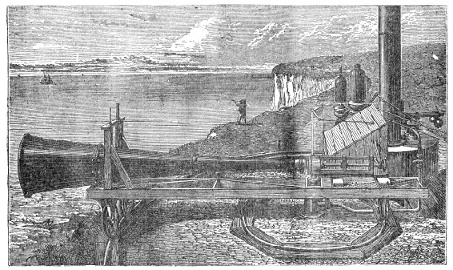
In preparing this new edition of Sound I have gone carefully over the last one, mending its defects of style and matter as far as I could, and paying respectful attention at the same time to the criticisms and suggestions the earlier editions drew.
There are few cases in which I have been content simply to reproduce what I have read in the works of other acousticians. I have tried to make myself experimentally familiar with the ground, and in every case to present the demonstrations in the form and the order best suited to teaching.
The book carries, no doubt, more than its share of the imperfection that clings to all human effort; yet it has already found its way into the literature of several nations of very different intellectual standing. Last year, for instance, a new German edition was published "under the special supervision" of Helmholtz and Wiedemann. That men so eminent, and so overloaded with official duties, should add to them the labour of examining and correcting every proof sheet of a work like this shows that they take it for what it was meant to be — a serious attempt to improve the public knowledge of science. It is especially gratifying to be assured in this way that the book has met a public want not only in England but in that learned land to which I owe my own scientific education.
Before me, on the other hand, lie two volumes of foolscap size, curiously stitched, and printed in characters whose meaning I am wholly incompetent to penetrate. Here and there, though, I recognise the familiar figures of the earlier editions of Sound. I owe these volumes to Mr. John Fryer of Shanghai, who sent them to me a few weeks ago along with a letter, from which this is an extract: "One day," Mr. Fryer writes, "soon after the first copy of your work on Sound reached Shanghai, I was reading it in my study, when an intelligent official, named Hsü-chung-hu, noticed some of the engravings and asked me to explain them to him. He became so deeply interested in the subject of Acoustics that nothing would satisfy him but to make a translation. Since, however, engineering and other works were then considered to be of more practical importance by the higher authorities, we agreed to translate your work during our leisure time every evening, and publish it separately ourselves. Our translation, however, when completed, and shown to the higher officials, so much interested them, and pleased them, that they at once ordered it to be published at the expense of the Government, and sold at cost price. The price is four hundred and eighty copper cash per copy, or about one shilling and eightpence. This will give you an idea of the cheapness of native printing."
Mr. Fryer adds that his Chinese friend had no difficulty in grasping every idea in the book.
The most important new matter in this edition is an account of an investigation which, over the past two years, I have had the honour of conducting with the Elder Brethren of the Trinity House. Under the title "Researches on the Acoustic Transparency of the Atmosphere, in Relation to the Question of Fog-signalling," the subject is treated in Chapter Seven of this volume. Only government resources could have made such an investigation possible; and it gives me pleasure to believe that not only have the practical objects of the inquiry been secured, but that a crowd of scientific errors which have surrounded this subject for more than a century and a half have been swept away, and their place taken by the sure and certain truth of Nature. In drawing up the account of this laborious inquiry I aimed at linking the observations together so that they alone would amount to a substantial demonstration of the principles involved. Further work let me bring the whole inquiry within the firm grasp of experiment, and so give it a certainty it could hardly have had without that final guarantee.
Immediately after the first brief abstract of the investigation was published, it was criticised. I did not think it necessary to reply, believing that the grounds of the criticism would disappear once the full account appeared. The only opinion I thought it right to defer to was, to some extent, a private one, sent to me by Professor Stokes. He considered that in some cases I had given too exclusive an influence to the mixed currents of watery vapour and air, and had neglected differences of temperature. That differences of temperature, where they come into play, are an efficient cause of acoustic opacity, I never doubted. Indeed, aerial reflection arising from that cause is, in this inquiry, made the subject of experimental demonstration for the first time. What the relative strength of the two may be in the cases under consideration — differences of temperature and differences due to watery vapour — I do not venture to say; but as both are active, I have in Chapter Seven referred to them jointly as producing those "acoustic clouds" to which the stopping of sound in the atmosphere is mostly due.
After the full investigation was published, however, another criticism appeared, to which, considering its source, I would gladly pay every respect and attention. In this criticism, which reached me first through the columns of an American newspaper, differences in the amount of watery vapour and differences of temperature are alike denied any power to cause acoustic opacity. At a meeting of the Philosophical Society of Washington the emphatic opinion had, it was said, been expressed that I was wrong to ascribe the opacity of the atmosphere to its flocculence, the really efficient cause being refraction. This view seemed to me so obviously mistaken that for a time I assumed the newspaper account must be wrong.
Recently, however, I have been sent the "Report of the United States Lighthouse Board for 1874," in which the account just referred to is confirmed. A brief reference to the Report will be enough here. Major Elliott, the accomplished officer and gentleman mentioned on page 261, had published a record of his tour of inspection in this country, in which he spoke, with a perfectly enlightened grasp of the facts, of the differences between our system of lighthouse illumination and that of the United States. He also included in his Report some account of the fog-signal investigation, whose beginning he had witnessed and had indeed helped with, at the South Foreland.
On this able Report by their own officer, the Lighthouse Board at Washington make the following remark: "Although this account is interesting in itself and to the public generally, yet, being addressed to the Lighthouse Board of the United States, it would tend to convey the idea that the facts which it states were new to the Board, and that the latter had obtained no results of a similar kind; while a reference to the appendix to this Report will show that the researches of our Lighthouse Board have been much more extensive on this subject than those of the Trinity House, and that the latter has established no facts of practical importance which had not been previously observed and used by the former."
Footnote: It will be borne in mind that the Washington Appendix was published nearly a year after my Report to the Trinity House.
The "appendix" referred to here is from the pen of the venerable Professor Joseph Henry, chairman of the Lighthouse Board at Washington. To his credit be it recorded that at a very early stage in the history of fog-signalling, Professor Henry reported in favour of Daboll's trumpet, though he was opposed by one of his colleagues on the ground that "fog-signals were of little importance, since the mariner should know his place by the character of his soundings." In the appendix he records the various efforts made in the United States towards establishing fog-signals. He describes experiments on bells, and on the use of reflectors to reinforce their sound; these, though effective close at hand, turned out to be useless at a distance. He corrects current errors about steam whistles, which some inventors thought acted like ringing bells. He quotes the opinion of the Reverend Peter Ferguson that sound is better heard in fog than in clear air — an opinion founded on observations of the noise of locomotives, about which it may be said that others have drawn diametrically opposite conclusions from similar experiments. On the authority of Captain Keeney he cites an occurrence "in the first part of which the captain was led to suppose that fog had a marked influence in deadening sound, though in a subsequent part he came to an opposite conclusion." Professor Henry also describes an experiment made during a fog at Washington, in which he used "a small bell rung by clock-work, the apparatus being the part of a moderator lamp, intended to give warning to the keepers when the supply of oil ceased. The result of the experiment was, he affirms, contrary to the supposition of absorption of the sound by the fog." This conclusion rests not on comparative experiments but on observations made in the fog alone; for, Professor Henry adds, "the change in the condition of the atmosphere, as to temperature and the motion of the air, before the experiment could be repeated in clear weather, rendered the result not entirely satisfactory."
This, I may say, is the only experiment on fog I have found recorded in the appendix.
In 1867 the steam siren was mounted at Sandy Hook and examined by Professor Henry. He compared its action with that of a Daboll trumpet, using for the purpose a stretched membrane covered with sand, placed at the small end of a tapering tube that concentrated the sonorous motion on the membrane. The siren proved the more powerful. "At a distance of 50, the trumpet produced a decided motion of the sand, while the siren gave a similar result at a distance of 58." Professor Henry also varied the pitch of the siren, and found that in combination with its trumpet 400 impulses a second gave the loudest sound, while the best result with the unaided siren came at 360 impulses a second. Experiments were also made on the influence of pressure, from which it appeared that when the pressure varied from 100 lbs. to 20 lbs., the distance the sound reached — as judged by the vibrating membrane — varied only in the ratio of 61 to 51. Professor Henry also showed that the sound of the fog-trumpet is independent of the material it is built from; and he observed, further, how the sound decays as the angle away from the axis of the instrument increases. More observations were made by Professor Henry and his colleagues in August 1873, and in August and September 1874. In the brief but interesting account of these there appears a hypothetical element that is absent from the record of the earlier work.
It is quite clear from all this that on the question of fog-signalling the Lighthouse Board at Washington have not been idle. Add to that the fact that their eminent chairman gives his services free, conducting without fee or reward experiments and observations of the kind described here, and I think it will be granted that he not only deserves well of his own country but sets his younger scientific contemporaries, in his country and in ours, an example of high-minded devotion.
I was aware, in a general way, that work of the kind now published for the first time had been going on in the United States, and that knowledge was not without its effect on my own conduct. The first instruments mounted at the South Foreland were of English manufacture, and for various reasons I felt a strong sympathy for their able maker, Mr. Holmes. From the outset, however, I resolved to suppress such feelings, along with every other extraneous consideration, personal or national, and to aim at getting the best instruments, whatever country produced them. Reporting, accordingly, on the observations of 19 and 20 May 1873 — our first two days at the South Foreland — these were my words to the Elder Brethren of the Trinity House:
"In view of the reported performance of horns and whistles in other places, the question arises whether those mounted at the South Foreland, and to which the foregoing remarks refer, are of the best possible description.... I think our first duty is to make ourselves acquainted with the best instruments hitherto made, no matter where made; and then, if home genius can transcend them, to give it all encouragement. Great and unnecessary expense may be incurred, through our not availing ourselves of the results of existing experience.
"I have always sympathized, and I shall always sympathize, with the desire of the Elder Brethren to encourage the inventor who first made the magneto-electric light available for lighthouse purposes. I regard his aid and counsel as, in many respects, invaluable to the corporation. But, however original he may be, our duty is to demand that his genius shall be expended in making advances on that which has been already achieved elsewhere. If the whistles and horns that we heard on the 19th and 20th be the very best hitherto constructed, my views have been already complied with; but if they be not — and I am strongly inclined to think that they are not — then I would submit that it behooves us to have the best, and to aim at making the South Foreland, both as regards light and sound, a station not excelled by any other in the world."
On this score it gives me pleasure to say that I never had any difficulty with the Elder Brethren. They agreed with me; and two powerful steam whistles, one from Canada and one from the United States, together with a steam siren — also an American instrument — were in due course mounted at the South Foreland. It will be seen in Chapter Seven that my strongest recommendation is for an instrument we owe to the United States.
In the face of these facts it will hardly be supposed that I wish to withhold from the Lighthouse Board of Washington any credit they can fairly claim. My desire is to be strictly just; and that desire compels me to say that in my opinion their Report fails to establish the extravagant claim made in its first paragraph. It contains observations — but contradictory observations; and as for establishing any principle that would reconcile the conflicting results, it leaves us no better off than before.
But I turn willingly from the discussion of "claims" to the discussion of science. Inserted into Professor Henry's Report, as a kind of intrusive element, is a second Report by General Duane, founded on an extensive series of observations he made in 1870 and 1871. After stating clearly the points that need to be settled, the General makes the following remarks:
"Before giving the results of these experiments, some facts will be stated which will explain the difficulties of determining the power of a fog-signal.
"There are six steam fog-whistles on the coast of Maine: these have been frequently heard at a distance of twenty miles, and as frequently cannot be heard at the distance of two miles, and this with no perceptible difference in the state of the atmosphere.
"The signal is often heard at a great distance in one direction, while in another it will be scarcely audible at the distance of a mile. This is not the effect of wind, as the signal is frequently heard much further against the wind than with it. For example, the whistle on Cape Elizabeth can always be distinctly heard in Portland, a distance of nine miles, during a heavy northeast snowstorm, the wind blowing a gale directly from Portland toward the whistle.
Footnote: That is to say, homogeneous air with an opposing wind is frequently more favourable to sound than non-homogeneous air with a favouring wind. We had the same experience at the South Foreland. — J. T.
Footnote: Had this observation been published, it could only have given me pleasure to refer to it in my recent writings. It is a striking confirmation of my observations on the Mer de Glace in 1859.
"The most perplexing difficulties, however, arise from the fact that the signal often appears to be surrounded by a belt, varying in radius from one mile to one mile and a half, from which the sound appears to be entirely absent. Thus, in moving directly from a station the sound is audible for the distance of a mile, is then lost for about the same distance, after which it is again distinctly heard for a long time. This action is common to all ear-signals, and has been at times observed at all the stations, at one of which the signal is situated on a bare rock twenty miles from the mainland, with no surrounding objects to affect the sound."
There is no need to assume a "belt" at some distance from the station. An acoustic cloud passing over the station itself would produce exactly what was observed.
Passing over the record of many other valuable observations in General Duane's Report, I come to a few very important remarks that bear directly on the present question:
"From an attentive observation," writes the General, "during three years, of the fog-signals on this coast, and from the reports received from the captains and pilots of coasting vessels, I am convinced that, in some conditions of the atmosphere, the most powerful signals will be at times unreliable.
Footnote: Had I known of its existence I might have used General Duane's own words to express my views on the point mentioned here. See Chapter Seven.
"Now it frequently occurs that a signal which, under ordinary circumstances, would be audible at the distance of fifteen miles, cannot be heard from a vessel at the distance of a single mile. This is probably due to the reflection mentioned by Humboldt.
"The temperature of the air over the land where the fog-signal is located being very different from that over the sea, the sound, in passing from the former to the latter, undergoes reflection at their surface of contact. The correctness of this view is rendered more probable by the fact that, when the sound is thus impeded in the direction of the sea, it has been observed to be much stronger inland.
"Experiments and observation lead to the conclusion that these anomalies in the penetration and direction of sound from fog-signals are to be attributed mainly to the want of uniformity in the surrounding atmosphere, and that snow, rain, and fog, and the direction of the wind, have much less influence than has been generally supposed."
General Duane's Report is marked throughout by fidelity to the facts, rare good sense, and sobriety in speculation. The last three paragraphs just quoted are, in my opinion, the only approach to a true explanation of the phenomena that the Washington Report contains. At this point, however, the eminent Chairman of the Lighthouse Board breaks in with the following criticism:
"In the foregoing I differ entirely in opinion from General Duane as to the cause of extinction of powerful sounds being due to the unequal density of the atmosphere. The velocity of sound is not at all affected by barometric pressure; but if the difference in pressure is caused by a difference in heat, or by the expansive power of vapor mingled with the air, a slight degree of obstruction of sound may be observed. But this effect we think is entirely too minute to produce the results noted by General Duane and Dr. Tyndall, while we shall find in the action of currents above and below a true and efficient cause."
I have already quoted General Duane's remarkable observation that with a snowstorm from the north-east blowing against the sound, the signal at Cape Elizabeth is always heard at Portland, nine miles away. Our observations at the South Foreland, where the sound was proved to reach more than twelve miles against the wind, backed by decisive experiments, turn General Duane's surmises into certainties. It has been proved, for example, that a couple of gas flames in a chamber can in a minute or two make its air so non-homogeneous as to cut a sound off practically altogether — while the same sound passes without any noticeable hindrance through showers of paper scraps, seeds, bran and raindrops, and through fumes and fogs of the densest kind. The sound also passes through thick layers of calico, silk, serge, flannel, baize and close felt, and through pads of cotton net that the strongest light cannot penetrate.
As long as the air in which snow, hail, rain or fog is suspended is homogeneous, sound will pass through that air with hardly any regard to the matter suspended in it. This is illustrated on a large scale by my own observations on the Mer de Glace, and by General Duane's at Portland, which prove snow-laden air from the north-east to be a highly homogeneous medium.
Footnote: This seems no more surprising than the passage of light, or of radiant heat, through rock salt.
Professor Henry accounts for the fact that the north-east snow-wind makes the Cape Elizabeth signal audible at Portland in this way. High in the atmosphere he places an imaginary wind blowing opposite to the real one, always accompanying it, and more than cancelling its action. In speculating like this he rests on Professor Stokes's reasoning, according to which a sound-wave travelling against the wind is tilted upward. The upper, opposing wind is invented in order to tilt the already lifted wave down again. Professor Henry does not explain how the sound-wave gets back down across the hostile lower current, nor does he give any definite idea of the conditions under which it can be shown to reach the observer.
This, so far as I know, is the only theoretical gleam the Washington Report casts on the conflicting results that have made experiments on fog-signals so bewildering until now. I fear it is a will-o'-the-wisp rather than a safe guiding light. Professor Henry, however, applies the hypothesis boldly in a variety of cases. But he dwells with particular emphasis on one case of non-reciprocity which he considers absolutely fatal to my views about the flocculence of the atmosphere. The observation was made aboard the steamer City of Richmond during a thick fog on a night in 1872. "The vessel was approaching Whitehead from the southwestward, when, at a distance of about six miles from the station, the fog-signal, which is a 10-inch steam-whistle, was distinctly perceived, and continued to be heard with increasing intensity of sound until within about three miles, when the sound suddenly ceased to be heard, and was not perceived again until the vessel approached within a quarter of a mile of the station, although from conclusive evidence, furnished by the keeper, it was shown that the signal had been sounding during the whole time."
But while the 10-inch shore signal thus failed to make itself heard at sea, a 6-inch whistle aboard the steamer did make itself heard on shore. Professor Henry turns this fact against me. "It is evident," he writes, "that this result could not be due to any mottled condition or want of acoustic transparency in the atmosphere, since this would absorb the sound equally in both directions." Had the observation been made in still air, that argument would once have had great force. But the air was not still, and a sufficient reason for the non-reciprocity is to be found in the recorded fact that the wind was blowing against the shore signal and in favour of the ship's.
But the argument on which Professor Henry chiefly relies would be untenable even if the air had been still. By the very aerial reflection he practically ignores, reciprocity can be destroyed in a calm atmosphere. In proof of this I would refer him to a short paper on "Acoustic Reversibility" printed at the end of this volume. The most remarkable case of non-reciprocity on record — one that remained an insoluble puzzle until the existence and power of acoustic clouds were demonstrated — is there shown to admit of a satisfactory solution. These clouds explain Professor Henry's "abnormal phenomena" perfectly. Once you know they exist, the falling off and later recovery of a signal sound, as noticed by him and by General Duane, is no more a mystery than the blocking of sunlight by an ordinary cloud and its return when the cloud has moved on or melted away.
Footnote: See also the Proceedings of the Royal Society, vol. xxiii, p. 159, and the Proceedings of the Royal Institution, vol. vii, p. 344.
The clue to all the difficulties and anomalies of this question lies in the aerial echoes, whose significance General Duane overlooked and Professor Henry has misread. And here a word might be said about the injurious influence authority still exerts in science. The statements of the highest authorities, that no perceptible echo ever comes from clear air, were so emphatic that for a time my mind refused to entertain the idea at all. Authority kept me for weeks away from the truth, and sent me looking for guidance among delusions. On the day our observations at the South Foreland began, I heard the echoes. They puzzled me. I heard them again and again, and listened to the explanations offered by some ingenious people at the Foreland. They were an "ocean echo" — the very phrase Professor Henry now uses. They were echoes "from the crests and slopes of the waves" — the very words of the hypothesis he now adopts. Through part of May, the whole of June, and nearly the whole of July 1873 I was occupied with these echoes; and one of the ideas I passed through then, one of the solutions weighed in the balance and found wanting, was the very one Professor Henry now offers for acceptance.
But though it turned me off the right track like this, am I to say that authority in science is injurious? Not without some qualification. It is not merely injurious but deadly when it frightens the mind out of questioning it. But the authority that so earns our respect as to compel us to test and overturn every one of its supports before we accept a conclusion against it is not wholly harmful. On the contrary, the discipline it imposes may be in the highest degree wholesome, even though it ends, as here, in the ruin of authority itself. A truth established that way is made firmer by the struggle to reach it. I groped day after day, carrying this problem of aerial echoes about in my mind, to the weariness, I fear, of some of my colleagues, who did not know what I was after. The ships and boats afloat, the "slopes and crests of the waves," the visible clouds, the cliffs, the neighbouring lighthouses, the objects inland — all were taken into account in turn, and all in turn rejected.
As for the particular notion that now finds favour with Professor Henry, it suggests that his observations, for all their apparent range and variety, were really limited as regards the weather. For had they, like ours, covered weather of every kind, he would hardly have credited the sea waves with an action that often reaches its maximum when there are no waves at all. I will not multiply instances, but confine myself to this definite statement: the echoes have often shown an astonishing strength when the sea was of glassy smoothness. On days when the echoes were powerful I have seen the southern cumulus clouds mirrored in the waveless ocean in shapes almost as definite as the clouds themselves. By no possible application of the law of incidence and reflection could echoes from such a sea return to the shore. And if we accept for a moment a statement Professor Henry seems to endorse — that sound-waves of great intensity, striking a solid or liquid surface, do not obey the law of incidence and reflection but "roll along the surface like a cloud of smoke" — that only makes the difficulty worse. Such a "cloud," instead of returning to the coast of England, would in our case have rolled towards the coast of France.
Nothing I could add would strengthen the case set out here. I will make only one further remark. When the sun shines evenly on a smooth sea, producing a practically uniform distribution of the aerial currents that cause the echoes, the direction from which the trumpet echoes reach the shore is always the direction the axis of the instrument is pointed in. At Dungeness this was proved to hold through an arc of 210° — an impossible result if the direction of reflection were fixed by the direction of the ocean waves.
Rightly read and followed out, these aerial echoes lead to a solution that reaches into and reconciles the phenomena from beginning to end. On this point I would stake the whole inquiry, and to this point I would, with special earnestness, direct the attention of the Lighthouse Board of Washington. Let them extend their observations into calm weather. If their atmosphere is like ours — and I cannot doubt that it is — then I say they will infallibly find the echoes strong on days when any thought of reflection "from the crests and slopes of the waves" has to be abandoned. The echoes give the easiest way into the heart of this question, and that is why I dwell on them so emphatically. It takes no refined skill or deep knowledge to master the conditions under which they are produced; and once those are mastered, the Lighthouse Board of Washington will find themselves in the real current of the phenomena, outside which — I say it with respect — they are at present speculating in vain. The acoustic behaviour of the atmosphere in haze, fog, sleet, snow, rain and hail will be a mystery no longer; and even those "abnormal phenomena" that are now put down to an imaginary cause, or set aside for future investigation, will be found to fall naturally into place as illustrations of a principle as simple as it is universal.
"With the instruments now at our disposal wisely established along our coasts, I venture to think that the saving of property, in ten years, will be an exceedingly large multiple of the outlay necessary for the establishment of such signals. The saving of life appeals to the higher motives of humanity." Those were the words I closed my Report on Fog-Signals with. One year after they were spoken, the Schiller went to pieces on the Scilly rocks. A single disaster covers the predicted multiple, and the sea took three hundred and thirty-three victims. Where the setting up of fog-signals is concerned, energy has been paralysed until now by their reputed unreliability. We now know both the reason for their variations and the limits of them; and that knowledge puts it in our power to prevent disasters like this last one. The uselessness of bells, which is why they were excluded from our inquiry, was sadly illustrated in the case of the Schiller.
Footnote: See page 372 of this volume.
Royal Institution, June 1875.
In the following pages I have tried to make the science of acoustics interesting to every intelligent reader, including those with no special scientific training.
The subject is treated experimentally throughout, and I have tried to set each experiment before the reader in such a way that he sees it as something actually being done. My aim, indeed, has been to give distinct images of the various phenomena of acoustics, and to make them visible to the mind's eye in their true relations to one another.
I am indebted to the kindness of several English friends for a more or less complete reading of the proof sheets of this work. To my celebrated German friend Clausius, who has taken the trouble to read the proofs from beginning to end, my especial thanks are due and are hereby given.
There is a growing desire for scientific culture throughout the civilised world. The feeling is natural and, in the circumstances, inevitable; for a power that so mightily influences the intellectual and material life of the age could not fail to attract attention and invite examination. In our schools and universities a movement in favour of science has begun which will no doubt end in the recognition of its claims, both as a source of knowledge and as a means of discipline. If, by showing however inadequately the methods and results of physical science to men of influence whose own culture comes from another source, this book should indirectly help that movement along, it will not have been written in vain.
The nerves and sensation — How sonorous motion is produced and how it travels — Experiments on sounding bodies in a vacuum — How hydrogen deadens sound — What hydrogen does to the voice — How sound travels through air of varying density — Reflection of sound — Echoes — Refraction of sound — Diffraction of sound: the case of Erith village and church — How temperature affects the velocity — How density affects elasticity — Newton's calculation of the velocity — The heat changes produced by the sound-wave — Laplace's correction of Newton's formula — The ratio of the specific heats at constant pressure and constant volume, deduced from the velocity of sound — The mechanical equivalent of heat, deduced from that ratio — The conclusion that atmospheric air has no appreciable power to radiate heat — The velocity of sound in different gases — The velocity in liquids and solids — How molecular structure affects the velocity of sound
The various nerves of the human body all begin in the brain, which is the seat of sensation. When the finger is wounded, the sensory nerves carry news of the injury to the brain; and if those nerves are cut, then however serious the hurt may be, no pain is felt. We have the strongest reason for believing that what the nerves carry to the brain is, in every case, motion. The motion meant here, however, is not that of the nerve as a whole, but of its molecules — its smallest particles.
Footnote: The speed at which an impression travels along the nerves, first determined by Helmholtz and confirmed by Du Bois-Reymond, is 93 feet a second.
Different nerves are set aside for transmitting different kinds of molecular motion. The nerves of taste, for instance, cannot transmit the tremors of light, and the optic nerve cannot transmit sonorous vibrations. For those a special nerve is needed, which runs from the brain into one of the cavities of the ear and there divides into a multitude of fine threads. It is the motion given to this auditory nerve that the brain translates into sound.
Put a flame to a small collodion balloon holding a mixture of oxygen and hydrogen: the gases explode, and every ear in this room is conscious of a shock, which we call a sound. How was that shock carried from the balloon to our organs of hearing? Have the exploding gases fired the air particles at the auditory nerve as a gun fires a ball at a target? No doubt, close to the balloon, particles are to some extent driven along; but no particle of air from near the balloon reached the ear of anybody here.
What happened was this. When the flame touched the mixed gases they combined chemically, and their union released intense heat. The heated air expanded suddenly, driving the surrounding air violently away on every side. This motion of the air next to the balloon was rapidly passed on to the air a little further off, the air first set moving coming to rest at the same moment. The air a little way out passed its motion on to the air further out still, and came to rest in its turn. So each shell of air, if I may call it that, surrounding the balloon took up the motion of the shell before it and handed it on to the shell after it — the motion travelling through the air as a pulse, or wave.
The motion of the pulse must not be confused with the motion of the particles that make up the pulse at any given moment. For while the wave travels forward through considerable distances, each individual particle of air only makes a small excursion to and fro.
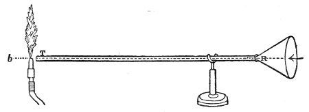
The process can be roughly represented by the way motion travels along a row of glass balls of the kind used in the game of solitaire. Lay the balls along a groove like this, Fig. 1, each touching its neighbour, and drive one of them against the end of the row. The motion given to the first ball is handed on to the second, the second's to the third, the third's to the fourth; and each ball, having given up its motion, comes to rest again. Only the last ball of the row flies away. In much the same way sound is carried from particle to particle through the air. The particles filling the cavity of the ear are finally driven against the tympanic membrane, which is stretched across the passage leading from the outer ear towards the brain. This membrane, which closes the outer side of the "drum" of the ear, is thrown into vibration; its motion is passed on to the ends of the auditory nerve, and then along that nerve to the brain, where the vibrations are translated into sound. How the motion of nervous matter can rouse the consciousness of sound is a mystery the human mind cannot fathom.
The travelling of sound can be illustrated by another homely but useful comparison. Here I have five young assistants, A, B, C, D and E (Fig. 2), standing in a row one behind another, each boy's hands resting against the back of the boy in front of him. E is at the front, and A finishes the row at the back. I give A a sudden push; A pushes B and recovers his upright position; B pushes C, C pushes D, D pushes E — each boy standing up straight again once he has passed the push on. E, having nobody in front of him, is thrown forward. Had he been standing at the edge of a precipice he would have fallen over; had he been against a window he would have broken the glass; had he been close to a drumhead he would have shaken the drum. We could send a push along a row of a hundred boys this way, each individual boy only swaying to and fro. And so we send sound through the air and shake the drum of a distant ear, while each individual particle of air concerned in carrying the pulse only makes a small oscillation.
But we have not yet got out of our row of boys all they can teach us. When A is pushed he may give way slackly, and so be slow to hand the motion on to his neighbour B. B may do the same to C, C to D, D to E; and the motion would then travel comparatively slowly down the line. But A, when pushed, may instead deliver his motion promptly to B with a sharp muscular effort and a sudden recoil, coming to rest himself; B may do the same to C, C to D, D to E — and the motion travels rapidly down the line. Now that sharp muscular effort and sudden recoil correspond to the elasticity of the air in the case of sound. In a wave of sound, a layer of air driven against its neighbouring layer hands over its motion and recoils, by virtue of the elastic force acting between them; and the quicker that delivery and recoil — in other words, the greater the elasticity of the air — the greater the velocity of the sound.
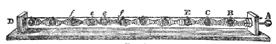
A very instructive way of showing how a sound pulse travels is given by the apparatus in Fig. 3, devised by my assistant Mr. Cottrell. It consists of a series of wooden balls separated from one another by spiral springs. Striking the knob A drives a rod against the first ball B, which passes its motion to C, from there to E, and so on through the whole series. Its arrival at D is announced by the shock of the last ball against the wood, or, if we like, by the ringing of a bell. Here the elasticity of the air is represented by that of the springs, and the pulse can be made slow enough for the eye to follow.
A scientific education ought to teach us to see the invisible in nature as well as the visible; to picture with the mind's eye those operations that wholly escape the bodily eye; to look at the very atoms of matter in motion and at rest, and to follow them out, without once losing sight of them, into the world of the senses, and watch them there building themselves up into natural phenomena. On the point now before us we must try to form a definite image of a wave of sound. We ought to see, mentally, the air particles crowding closely together as they are driven outward by the explosion of our balloon — and immediately behind that crowding, we ought to see the particles spread more widely apart than usual. We must, in short, grasp the idea that a sonorous wave consists of two portions: in one of them the air is denser than usual, in the other rarer. A condensation and a rarefaction, then, are the two components of a wave of sound. This idea will be filled out in the next lecture.
That air is necessary for sound to travel through was proved by a celebrated experiment made before the Royal Society in 1705 by a philosopher named Hauksbee. He fixed a bell inside the receiver of an air pump in such a way that he could ring it after the receiver had been emptied. Before the air was withdrawn the bell could be heard inside the receiver; after it was withdrawn the sound became so faint as to be scarcely noticeable. Before you is an arrangement that lets us repeat Hauksbee's experiment very perfectly. Inside this jar, GG′ (Fig. 4), standing on the plate of an air pump, is a bell B worked by clockwork.
Footnote: And long before that by Robert Boyle.
Footnote: A very effective instrument, presented to the Royal Institution by Mr. Warren De La Rue.
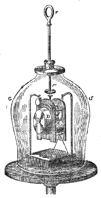
After the jar has been emptied as completely as possible, I release the catch holding the hammer by means of a rod rr′, which passes air-tight through the top of the vessel. The hammer strikes, and you can see it striking — but only those close to the bell can hear anything. Hydrogen gas, which as you know is fourteen times lighter than air, is now let into the vessel. The sound of the bell is not increased by the presence of this thin gas, though the receiver is now full of it. By working the pump, the atmosphere round the bell is thinned still further. In this way we get a vacuum better than Hauksbee's — and that matters, because in this experiment it is the last traces of air that do most of the work. You now see the hammer pounding the bell, but you hear no sound. Even with the ear laid against the exhausted receiver, not the faintest tinkle reaches it. Notice, too, that the bell is hung on strings; for if it rested on the plate of the air pump the vibrations would pass into the plate and from there to the air outside. Letting the air back into the jar as quietly as possible, you immediately hear a feeble sound, which grows louder as the air becomes denser, until at last every person in this large room distinctly hears the bell ringing.
Footnote: By directing the beam of an electric lamp onto glass bulbs filled with a mixture of equal volumes of chlorine and hydrogen, I have made the bulbs explode both in a vacuum and in air. The difference, though not as striking as I had at first expected, was perfectly distinct.
Sir John Leslie found hydrogen singularly bad at carrying the sound of a bell rung in the gas. More than that: he emptied a receiver like the one before you of half its air, and could plainly hear the bell ringing; but when he let hydrogen into the half-filled receiver until it was quite full, the sound sank until it was scarcely audible. This result remained a puzzle until Professor Stokes gave it a simple and satisfactory explanation. When an ordinary pendulum swings, it tends to make a condensation in front of it and a rarefaction behind. But it is only a tendency: the motion is so slow, and the air so elastic, that the air moves out of the way in front before it is appreciably squeezed, and fills the space behind before it can be appreciably thinned. So the pendulum generates no waves, no pulses. It takes a certain sharpness of shock to produce the condensation and rarefaction that make a wave of sound in air.
The more elastic and mobile a gas is, the better able it will be to move away in front and fill the space behind, and so to resist the forming of condensations and rarefactions by a vibrating body. Now hydrogen is far more mobile than air, and so producing sonorous waves in it is harder than in air. A rate of vibration perfectly able to make sound-waves in the one may be wholly unable to make them in the other. Both calculation and observation confirm this explanation, which we shall come back to.
High up in the atmosphere sound is noticeably less loud. De Saussure thought a pistol shot at the summit of Mont Blanc about equal to a common firecracker below. I have repeated this experiment several times: first, for want of anything better, with a little tin cannon whose torn remains are before you now, and afterwards with pistols. What struck me was the absence of the density and sharpness that mark the sound at lower altitudes. The pistol shot was like the popping of a champagne bottle — but it was still loud. Taking away half an atmosphere does not much affect our ringing bell, and air of the density found at the top of Mont Blanc is still able to work powerfully on the auditory nerve. That very thin air can carry sound of great intensity is forcibly shown by the explosion of meteorites at heights where the thinness of the atmosphere must be almost infinite. There, however, the original disturbance must be enormous.
The motion of sound, like all other motion, is weakened by being handed from a light body to a heavy one. When the receiver that has been covering our bell is taken away, you hear how much more loudly it rings in the open air. While the bell was covered, the vibrations of the air had first to be communicated to the heavy glass jar, and then by the jar to the air outside, with a great loss of intensity as the result. What hydrogen does to the voice is an illustration of the same thing. The voice is made by driving air from the lungs through an organ called the larynx, where it is thrown into vibration by the vocal cords, which generate the sound. But when the lungs are filled with hydrogen, the vocal cords in speaking set the hydrogen vibrating, and the hydrogen then hands the motion on to the outer air. By this transfer from a light gas to a heavy one the voice is so weakened that it becomes a mere squeak.
Footnote: It may be that the gas fails to set the vocal cords vibrating strongly enough. The laryngoscope might settle the question.
The intensity of a sound depends on the density of the air the sound is generated in, and not on the density of the air it is heard in. Suppose the summit of Mont Blanc to be equally distant from the top of the Aiguille Verte and from the bridge at Chamonix, and suppose two observers stationed, one on the bridge and one on the Aiguille: the report of a cannon fired on Mont Blanc would reach both with the same intensity, though in the one case the sound travels through the thin air above and in the other it descends through the denser air below. Again, measure out along the floor of the valley of Chamonix a straight line as long as the line from the bridge to the summit of Mont Blanc, and station two observers, one on the summit and one at the end of that line: the report of a cannon fired on the bridge would reach both with the same intensity, though in one case the sound travels through the dense air of the valley and in the other it climbs through the thinner air of the mountain. Finally, load two cannon equally and fire one at Chamonix and the other on the top of Mont Blanc: the one fired in the heavy air below may be heard above, while the one fired in the light air above goes unheard below.
Footnote: Poisson, Mécanique, vol. ii, p. 707.
In the case of our exploding balloon, the wave of sound spreads out in every direction, so that the motion produced by the explosion is spread through a continually growing mass of air. Plainly this cannot happen without the motion being weakened. Take a thin shell of air one foot in radius, measured from the centre of the explosion. A shell of air of the same thickness but two feet in radius will contain four times as much matter; at three feet, nine times as much; at four feet, sixteen times as much, and so on. So the quantity of matter set moving grows as the square of the distance from the centre of the explosion, and the intensity, or loudness, of the sound falls off in the same proportion. We state this law by saying that the intensity of the sound varies inversely as the square of the distance.
Let us look at it in another way. The mechanical effect of a ball striking a target depends on two things — the weight of the ball and the speed it is moving at. The effect is proportional to the weight simply, but to the square of the speed. Proving this is easy, but it belongs to ordinary mechanics rather than to our present subject. Now what is true of a cannon ball striking a target is also true of an air particle striking the drum of the ear. Fix your attention on one particle of air as the sound-wave passes over it. It is driven from its resting place towards a neighbouring particle, first with an accelerating motion and then with a slowing one. The force that starts it is opposed by the resistance of the air, which finally stops the particle and makes it recoil. At a certain point of its journey the particle's speed is at its greatest, and the intensity of the sound is proportional to the square of that greatest speed.
The distance the air particle moves to and fro as the sound-wave passes is called the amplitude of the vibration. The intensity of the sound is proportional to the square of the amplitude.
This weakening of the sound according to the law of inverse squares would not happen if the sound-wave were confined so that it could not spread sideways. Sending it along a tube with a smooth inner surface does exactly that, and a wave so confined can be carried great distances with very little loss of intensity. Into one end of this tin tube, fifteen feet long, I whisper in a way quite inaudible to the people nearest me — but a listener at the other end hears me distinctly. Put a watch at one end of the tube and a person at the other end hears its ticking, though nobody else does.
At the far end of the tube a lighted candle c is now placed (Fig. 5). Clap the hands at this end and the flame instantly ducks down at the other. It is not quite put out, but it is forcibly pressed down. Clap two books, B and B′, together, and the candle is blown out. Here you can see, in a rough way, how fast the sound-wave travels: the instant the clap is heard, the flame goes out. I do not say the time the sound takes to travel down this tube is immeasurably short — only that the interval is too short for your senses to catch.
Footnote: To bring the pulse to a focus on the flame, the tube was made to end in a cone.
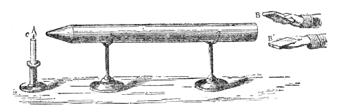
That it is a pulse and not a puff of air is proved by filling one end of the tube with the smoke of burning brown paper. Clap the books together and not a trace of the smoke is driven out of the other end. The pulse has passed through both smoke and air without carrying either along with it.
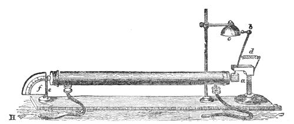
My assistant has devised an effective way of showing a pulse travelling through air. Both ends of a tin tube fifteen feet long are closed with sheet indiarubber stretched across them. At one end, e, a hammer with a spring handle rests against the indiarubber; at the other is an arrangement for striking a bell, c. Draw the hammer e back through a distance measured on the graduated circle and let it go: the pulse it generates travels down the tube, strikes the far end, knocks away the cork end a of the lever ab, and makes the hammer b strike the bell. The speed of travel is well shown here. If hydrogen is substituted for air, sent in through the indiarubber tube H, the bell does not ring at all.
The celebrated French philosopher Biot studied the transmission of sound through the empty water pipes of Paris, and found he could hold a conversation in a low voice through an iron tube 3,120 feet long. The lowest possible whisper could be heard at that distance, while firing a pistol into one end of the tube put out a lighted candle at the other.
The behaviour of sound just illustrated is exactly the behaviour of light and of radiant heat. They too are wave motions. Like sound they spread out into space, falling off in intensity by the same law. Like sound, too, light and radiant heat can be carried great distances with comparatively little loss when sent along a tube with a reflecting inner surface. In fact every experiment on the reflection of light has its counterpart in the reflection of sound.
Up in that gallery stands an electric lamp, set close beside the clock of this lecture room. An assistant in the gallery lights the lamp and directs its powerful beam onto a mirror placed here behind the lecture table. The act of reflection turns the diverging beam into this splendid cone of light, traced out on the dust of the room. Marking the point where it converges and putting out the lamp, I now put my ear at that point. Here every sound-wave sent out by the clock and reflected by the mirror is gathered up, and the ticks are heard as though they came not from the clock but from the mirror.
Let us stop the clock and put a watch, w (Fig. 7), where the electric light stood a moment ago. Across this great distance the ticking of the watch is distinctly heard. The hearing is much helped by putting the end f of a glass funnel into the ear, the funnel serving here as an ear trumpet. We know, too, that in optics the positions of a body and of its image can be exchanged. Put a candle at this lower focus and you see its image up in the gallery; and I have only to turn the mirror on its stand to make the image of the flame fall on any one of the row of people in the front seats up there. Take the candle away, put the watch w (Fig. 8) in its place, and the person the light fell on distinctly hears the sound. With the ear helped by the glass funnel, the reflected ticks of the clock in our first experiment are so powerful as to suggest something pounding against the eardrum, while the direct ticks are scarcely heard at all.
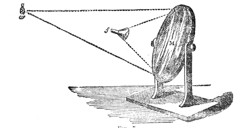
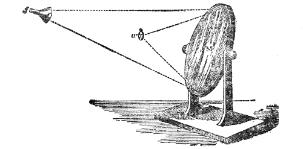
One of these two parabolic mirrors, nn′ (Fig. 9), stands on the table; the other, mm′, has been hauled up to the ceiling of this theatre, twenty-five feet away. When the carbon points of the electric light are placed at the focus a of the lower mirror and lit, a fine cylinder of light rises like a pillar to the upper mirror, which brings the parallel beam to a focus. At that focus a spot of sunlike brilliance appears, from the light reflected off the surface of a watch, w, hung there. The watch is ticking, but from where I stand I cannot hear it. Down here at the lower focus a, however, the energy of every sound-wave is brought together. Put the ear at a and the ticking is as plain as if the watch were at hand — the sound, as before, seeming to come not from the watch but from the lower mirror.
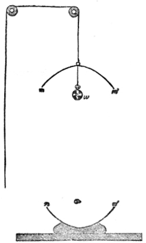
Footnote: It is recorded that a bell placed on a height in Heligoland could not be heard in the town because of its distance. A parabolic reflector set behind the bell, so as to throw the sound-waves down the long sloping street, made the strokes of the bell distinctly audible at all times. The observation needs verification.
Curved roofs and ceilings, and bellying sails, act as mirrors on sound. In our old laboratory, for instance, the singing of a kettle seemed from certain positions to come not from the fire it stood on but from the ceiling. Awkward secrets have been given away this way; Sir John Herschel cites an instance. In one of the cathedrals of Sicily the confessional was so placed that the whispers of the penitents were reflected by the curved roof and brought to a focus in a distant part of the building. The focus was found by accident, and for some time the man who found it took pleasure in listening — and in bringing his friends to listen — to words meant for the priest alone. One day, it is said, his own wife took the penitent's seat, and he and his friends were let into secrets that at least one of the party found the reverse of amusing.
When there is a long enough interval between a direct sound and its reflection, we hear the reflection as an echo.
Sound, like light, may be reflected several times over; and just as reflected light grows gradually fainter to the eye, so the successive echoes grow gradually fainter to the ear. In mountain country this repetition and dying away of sound produces wonderful and delightful effects. Visitors to Killarney will remember the fine echo in the Gap of Dunloe. Sound a trumpet at the right spot in the Gap and the sound-waves reach the ear one after another, after one, two, three or more reflections from the cliffs on either side, dying away in the sweetest cadences. There is a deep blind valley called the Ochsenthal, formed by the great cliffs of the Engelhörner near Rosenlaui in Switzerland, where the echoes warble in a wonderful way.
The sound of the Alpine horn, echoed from the rocks of the Wetterhorn or the Jungfrau, is heard rough at first. But successive reflections make the notes softer and more flute-like, and the gradual falling away of the sound gives the impression that its source is retreating further and further into the solitudes of ice and snow. The repetition of echoes is also partly due to the reflecting surfaces being at different distances from the hearer.
In large unfurnished rooms the mixing of direct and reflected sound sometimes has very curious effects. Standing in the gallery of the Bourse in Paris, for instance, you hear the confused shouting of the excited crowd below. You see every movement — of their lips as well as of their hands and arms. You know they are speaking, often with great vehemence; but what they are saying you cannot tell. The voices mix with their own echoes into a chaos of noise out of which no intelligible word can emerge.
A room's echoes are much damped by its furniture. The presence of an audience can also make intelligible speech possible where, without one, the definition of the direct voice is destroyed by echoes. On 16 May 1865, having to lecture in the Senate House of the University of Cambridge, I first made some experiments to see how loud a voice was needed to fill the room, and was dismayed to find that a friend placed at a distant part of the hall could not follow me because of the echoes. The assembled audience, however, so quenched the sound-waves that the echoes were practically gone, and my voice was plainly heard in every part of the Senate House.
Sounds are said to be reflected from the clouds as well. Arago reports that when the sky is clear the report of a cannon on an open plain is short and sharp, while a single cloud is enough to produce an echo like the rolling of distant thunder. The subject of aerial echoes will be dealt with at length later on, when it will be shown that Arago's conclusion needs correcting.
Sir John Herschel, in his excellent article "Sound" in the Encyclopaedia Metropolitana, has collected the following instances of echoes, among others. An echo in Woodstock Park repeats seventeen syllables by day and twenty by night; one on the banks of the Lago del Lupo, above the fall of Terni, repeats fifteen. The tick of a watch can be heard from one end of the abbey church of St. Albans to the other. In Gloucester Cathedral a gallery of octagonal form carries a whisper seventy-five feet across the nave. In the whispering gallery of St. Paul's the faintest sound is carried from one side of the dome to the other, but is not heard anywhere in between. At Carisbrooke Castle in the Isle of Wight there is a well two hundred and ten feet deep and twelve wide, lined inside with smooth masonry; drop a pin into it and you distinctly hear it strike the water. Shouting or coughing into this well produces a ringing resonance that lasts some time.
Footnote: Standing close to the upper part of the wall of the London Colosseum, a circular building a hundred and thirty feet across, Mr. Wheatstone found that a word spoken was repeated a great many times over. A single exclamation sounded like a peal of laughter, and the tearing of a piece of paper like the patter of hail.
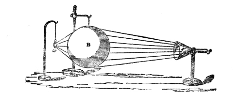
Another important parallel between sound and light was established by M. Sondhauss. When a large lens is put in front of our lamp, it forces the rays of light falling on it to bend out of their straight, diverging course and to form a converging cone behind it. This refraction of the beam is a consequence of the light being slowed as it passes through the glass. Sound can be refracted in the same way by making it pass through a lens that slows it down. Such a lens is made by filling a thin balloon with a gas heavier than air. A collodion balloon, B (Fig. 10), filled with carbonic acid gas — what we should now call carbon dioxide — its skin so thin that it yields readily to the pulses striking it, does the job. A watch, w, is hung up close to the lens; beyond it, four or five feet away, the ear is placed, helped by the glass funnel ff′. Move the head about and you soon find a position where the ticking is particularly loud. That is the focus of the lens. Move the ear away from the focus and the sound falls off; keep the ear at the focus and take the balloon away and the ticks grow feeble; put the balloon back and their force returns. The lens, in fact, lets us hear distinctly ticks that are quite inaudible to the unaided ear.
Footnote: Poggendorff's Annalen, vol. lxxxv, p. 378; Philosophical Magazine, vol. v, p. 73.
Footnote: Thin indiarubber balloons also make excellent sound lenses.
How a sound-wave is brought to a focus this way can be understood from Fig. 11. Let m o n o″ be a section of the sound lens, and ab a portion of a sonorous wave coming towards it from a distance. The middle point o of the wave touches the lens first and is slowed first.
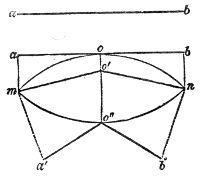
By the time the ends a and b, still travelling through air, reach the balloon, the middle point o, making its way through the heavier gas inside, will only have got as far as o′. The wave is therefore bent at o; and since the direction of motion is at right angles to the face of the wave, the two halves begin to close in on one another. This closing-in is increased as the wave leaves the lens; for by the time o′ has reached o″, the two ends a and b have pushed on further still, say to a′ and b′. Soon afterwards the two halves of the wave cross — come to a focus, in other words — and the air at the focus is agitated by the sum of the motions of both.
Footnote: For simplicity the wave is drawn broken at o′ with its two halves straight. The surface of the wave is really a curve, its hollow side turned in the direction it is travelling.
Diffraction of Sound: illustrations offered by great Explosions
When a long sea roller meets an isolated rock in its path, it rises against the rock and folds round it on every side. Facts of this kind made Newton reject the wave theory of light. He argued that if light were a wave motion we could have no shadows, because the waves of light would spread round opaque bodies as a water wave spreads round a rock. It has been proved since his time that waves of light do bend round opaque bodies — but that is not our business here.
A sound-wave certainly bends round an obstacle like this, though as it spreads into the air behind the obstacle it is weakened, so that the obstacle casts a partial shadow of the sound. A railway train passing through cuttings and long embankments shows great changes in loudness. A hill standing in the way in the Alps is enough to reduce the sound of a waterfall materially, and can quite noticeably kill the tinkling of the cowbells. Still, the sound shadow is only partial, and the marker at the rifle butts never fails to hear the shot, though he is well protected from the ball.
A striking example of this diffraction of a sound-wave was seen at Erith after the terrible explosion of a powder magazine there in 1864. The village of Erith was some miles from the magazine, yet in nearly every case the windows were shattered; and it was noticeable that windows facing away from the explosion suffered almost as badly as those facing it. Erith Church had lead sashes, and these, being to some extent flexible, let the windows give under pressure without much breaking of the glass. As the sound-wave reached the church it parted right and left, and for a moment the building was clasped in a girdle of intensely compressed air, every window in it, front and back, being bent inward. After the compression the air inside the church no doubt expanded again, tending to restore the windows to their first position. But the bending in of the windows had only slightly compressed the whole mass of air inside the church, so the recoil was feeble compared with the pressure, and not enough to undo what the pressure had done.
Two things decide how fast a sonorous wave travels: the elasticity and the density of the medium it passes through. The elasticity of air is measured by the pressure it bears, or can hold in balance. At sea level that pressure equals a column of mercury about thirty inches high. At the summit of Mont Blanc the barometer column is not much more than half that height, and so the elasticity of the air on the summit is not much more than half what it is at sea level.
If we could increase the elasticity of air without increasing its density at the same time, we should increase the velocity of sound. Or if, leaving the elasticity alone, we could reduce the density, we should also increase the velocity. Now air in a closed vessel, where it cannot expand, has its elasticity increased by heat while its density stays the same, and sound travels faster through such heated air than through cold. Again, air free to expand has its density lowered by warming while its elasticity stays the same, and sound travels faster through that too. This last is the case with our atmosphere when the sun heats it.
The velocity of sound in air at freezing point is 1,090 feet a second.
At any lower temperature the velocity is less than this, and at any higher temperature greater. The late M. Wertheim determined the velocity of sound in air at different temperatures; here are some of his results:
Temperature of the air (centigrade) Velocity of sound
0.5° 1,089 feet
2.10° 1,091 feet
8.5° 1,109 feet
12.0° 1,113 feet
26.6° 1,140 feet
At half a degree above the freezing point of water the velocity is 1,089 feet a second; at 26.6 degrees it is 1,140 feet a second — a difference of 51 feet for 26 degrees, or an increase of nearly two feet for every single degree centigrade.
At the same elasticity, hydrogen is far less dense than air, and so sound travels much faster in hydrogen than in air. The reverse holds for heavy carbonic acid gas. If density and elasticity vary in the same proportion — as Boyle and Mariotte's law shows they do in air at constant temperature — their effects cancel out. So, if the temperature were the same, the velocity of sound on the summits of the highest Alps would be the same as at the mouth of the Thames. But since the air up there is colder than the air below, the actual velocity on the mountain tops is lower than at sea level. To put the result more strictly: the velocity is proportional to the square root of the elasticity of the air, and inversely proportional to the square root of its density. So, since in air at a constant temperature elasticity and density vary in the same proportion and pull against each other, the velocity of sound is not affected by a change of density unless a change of temperature comes with it.
No mistake is commoner than to suppose that density increases the velocity of sound. It comes from misunderstanding the fact that the velocity is greater in solids and liquids than in gases. But it is the higher elasticity of those bodies, relative to their density, that makes sound pass quickly through them. All else being equal, an increase of density always means a decrease of velocity. If the elasticity of water — which is measured by its compressibility — were only equal to that of air, the velocity of sound in water, instead of being more than four times its velocity in air, would be only a small fraction of it. Density and elasticity must therefore always be kept in mind together: the velocity of sound is fixed by neither of them taken alone, but by the relation of one to the other. The effect of low density and high elasticity is shown in an astonishing way by the luminiferous ether, which carries the vibrations of light not at so many feet but at nearly two hundred thousand miles a second.
Those unfamiliar with the details of scientific work have no idea how much labour goes into settling the numbers that important calculations and inferences rest on. They have no idea of the patience of a Berzelius determining atomic weights, a Regnault determining coefficients of expansion, or a Joule determining the mechanical equivalent of heat. There is a morality brought to bear on such matters that is probably without parallel for severity in any other field of intellectual work. On the velocity of sound in air, for instance, one could fill hours simply describing the efforts made to fix it precisely. The question has occupied experimenters in England, France, Germany, Italy and Holland. But it is to the French and Dutch that we owe the last refinements of experimental skill brought to bear on it. They effectively cancelled out the influence of the wind; they allowed for barometric pressure, for temperature, and for humidity. Sounds were started at the same moment from two distant stations, and so made to travel from station to station through the very same air. The distance between the stations was fixed by exact trigonometrical survey, and means were devised for measuring with the utmost accuracy the time the sound took to pass from one to the other. That time, in seconds, divided into the distance in feet, gave 1,090 feet a second as the velocity of sound through air at 0° centigrade.
The time light needs to cross any distance on earth is practically zero, so in the experiments just described the moment of the explosion was marked by the flash of a gun, and the time the sound took to travel from station to station was the interval between seeing the flash and hearing the sound. Once the velocity of sound in air is settled, we can obviously use it to work out distances. By noting the interval between a flash of lightning and the arrival of the thunder that goes with it, we know at once how far away the discharge was. It is only when the interval between flash and peal is short that there is any danger to fear from lightning.
We now come to one of the most delicate points in the whole theory of sound. The velocity through air has been settled by direct experiment; but knowing the elasticity and density of air, it is possible to calculate the velocity of a sound-wave through it without any experiment at all. Sir Isaac Newton made this calculation and found the velocity at freezing point to be 916 feet a second. That is about a sixth less than observation had shown the velocity to be, and the most curious suppositions were put forward to explain the gap. Newton himself threw out the guess that sound needs time only for passing from one air particle to the next, and moves instantaneously through the particles themselves. He then supposed that along the line the sound travels, air particles occupy one-sixth of the distance, and so tried to make up the missing velocity. The very ingenuity of the assumption was enough to cast doubt on it. Other theories were advanced; but the great French mathematician Laplace was the first to solve the puzzle completely, and I shall now try to make you thoroughly familiar with his solution.
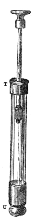
Into this strong glass cylinder, TU (Fig. 12), accurately bored and quite smooth inside, an air-tight piston fits. By pushing the piston down I compress the air beneath it, and heat is developed at the same time. A scrap of amadou fixed to the bottom of the piston is set alight by the heat that compression generates. If a bit of cotton wool dipped in carbon disulphide is fastened to the piston instead, then when the piston is forced down a flash of light is seen inside the tube, from the carbon disulphide vapour catching fire. So it is proved that compressing air generates heat. Another experiment shows that rarefying air produces cold. This brass box holds a quantity of compressed air. I open the tap and let the air discharge itself against a suitable thermometer: the instrument's fall immediately announces that the air has been chilled.
Everything you have heard about how a sonorous pulse travels through air is, I trust, still fresh in your minds. As the pulse advances it squeezes the air particles together, and two things follow from that squeezing. First, the elasticity of the air is increased simply by the increase in its density. Second, the elasticity is increased by the heat of compression. It was only the change of elasticity following from the change of density that Newton took into account; he entirely missed the increase of elasticity due to the second cause. So over and above the elasticity that went into Newton's calculation, we have an extra elasticity due to the changes of temperature the sound-wave itself produces. When both are counted, the calculated and observed velocities agree perfectly.
But here, without proper care, we may fall into the gravest error. In dealing with Nature the mind must be alert to catch all her conditions, or we soon find that our thoughts do not match her facts. It must particularly be noticed that the increase of velocity due to the temperature changes the sound-wave itself makes is quite different from any increase due to warming the general mass of the air. The average temperature of the air is not changed by waves of sound. We cannot have a condensed pulse without a rarefied one going with it; and in the rarefaction the temperature of the air is lowered exactly as much as it is raised in the condensation. So if we imagine the atmosphere parcelled out into such condensations and rarefactions with their respective temperatures, a sound coming in from outside and passing through such an atmosphere would be slowed as much in the one as it was hurried in the other, and no change in the average velocity could result from that distribution of temperature.
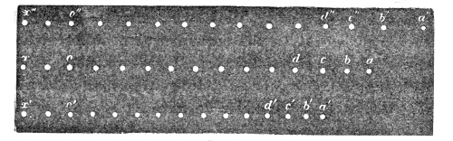
Where, then, does the increase Laplace pointed out come from? I would ask your closest attention while I try to make this knotty point clear. If air is compressed it shrinks in volume; if the pressure is reduced, it expands. The force that resists compression, and that produces expansion, is the elastic force of the air. An outside pressure squeezes the air particles together; their own elastic force holds them apart; and the particles are in balance when those two forces are in balance. That is why the outside pressure is a measure of the elastic force.
Let the middle row of dots in Fig. 13 stand for a series of air particles at rest between the points a and x. Because of the elastic force acting between the particles, if any one of them is moved out of its resting place the motion will be carried through the whole series. Suppose the particle a is driven towards x by the prong of a tuning fork, or some other vibrating body, so that it ends up at the position a′ in the lowest row of particles. The instant a begins its journey, its motion begins to be handed on to b. In the next moments b hands the motion to c, c to d, d to e, and so on. So by the time a has reached the position a′, the motion will have travelled to some point o′ of the line of particles, more or less distant from a′. The whole series of particles between a′ and o′ is then in a state of condensation.
The distance a′o′, over which the motion has travelled while a was going to a′, depends on the elastic force acting between the particles. Fix your attention on any two of them — say a and b. The elastic force between them can be pictured as a spiral spring, and plainly the slacker that spring, the more sluggishly the motion would pass from a to b; the stiffer the spring, the more promptly. What is true of a and b is true of every other pair of particles between a and o. Now the spring between every pair of these particles is suddenly stiffened by the heat developed along the line of condensation — and so the velocity of travel is increased by that heat. Going back to our row of boys: it is as if the very act of pushing his neighbour stiffened the muscles of each boy's arm, so that he delivered his push more promptly than he would have done without that stiffening. The condensed part of a sonorous wave travels in the way just described, and clearly its velocity is increased by the heat developed in the condensation.
Now let us turn for a moment to the travelling of the rarefaction. Suppose again that the middle row a to x stands for air particles in balance under the pressure of the atmosphere, and suppose a is suddenly drawn to the right, so as to take up the position a″ in the highest line of dots. Then a″ is immediately followed by b″, b″ by c″, c″ by d″, d″ by e″; and so the rarefaction travels back towards x″, reaching a point o″ in the line of particles by the time a has finished its motion to the right.
Now, why does b″ follow a″ when a″ is drawn away from it? Plainly because the elastic force between b″ and a″ is now less than that between b″ and c″. In fact b″ will be driven after a″ by a force equal to the difference between those two elasticities. The same holds for the motion of c″ after b″, of d″ after c″ — for every particle following the one before it. The greater the difference of elasticity on the two sides of a particle, the more promptly it follows its predecessor. And here notice what the cold of rarefaction does. Besides the weakening of the elastic force between a″ and b″ caused by a″ being drawn further away, there is a further weakening due to the fall in temperature. The cold developed increases the very difference of elastic force on which the travelling of the rarefaction depends.
So we see that because the heat developed in the condensation quickens the condensation, and the cold developed in the rarefaction quickens the rarefaction, the sonorous wave — which is a condensation and a rarefaction together — must have its velocity increased by the heat and the cold it develops as it goes.
It is worth fixing your attention here on the fact that the distance a′o′, to which the motion has travelled while a is moving to a′, may be enormously greater than the distance the particle itself covers in the same time. The journey of a′ may be no more than a small fraction of an inch, while the distance the motion is carried in the time a′ takes to make that little journey may be many feet, or even many yards. If this is not entirely plain to you now, it will be before long.
Having grasped that, even in part, I will ask you to come with me to a remote corner of the field of physics — with the aim, though, of showing that remoteness does not mean disconnection. Take a certain quantity of air at a temperature of 0°, held in a vessel that cannot expand at all, and raise its temperature by 1°. Take the same quantity of air in a vessel that lets it expand as it is heated, the pressure on it being kept constant while it expands, and raise its temperature by 1° as well. The quantities of heat used in the two cases are different. The one is what is called the specific heat of air at constant volume; the other, the specific heat of air at constant pressure.
It is an instance of how apparently unconnected natural phenomena are bound together that from the calculated and observed velocities of sound in air we can work out the ratio of these two specific heats. Square Newton's theoretical velocity and the observed velocity, divide the greater square by the lesser, and you have the ratio. Calling the specific heat at constant volume Cv and that at constant pressure Cp, and calling Newton's calculated velocity V and the observed velocity V′, Laplace proved that —
Footnote: See Heat as a Mode of Motion, chapter iii.
Cp / Cv = V′2 / V2
Putting the values of V and V′ into this equation and working it out, we find —
Cp / Cv = 1.42
So without knowing either the specific heat at constant volume or the one at constant pressure, Laplace found the ratio of the greater to the lesser to be 1.42. It is clear from these formulae that the calculated velocity of sound, multiplied by the square root of this ratio, gives the observed velocity.
But there is one assumption behind this ratio that must be brought clearly out. It is assumed that the heat developed by compression stays in the condensed part of the wave and works there to increase the elasticity — that none of it is lost by radiation. If air were a powerful radiator, that assumption could not stand. The heat developed in the condensation could not then stay in the condensation. It would radiate all round, settling for the most part in the chilled and rarefied part of the wave, which would have a matching power of absorption. The direct tendency of radiation would therefore be to even out the temperatures of the different parts of the wave, and so to abolish the very increase of velocity that called for Laplace's correction.
Footnote: In fact, the prompt removal of the motion of heat from the condensation, and its prompt delivery to the rarefaction by the surrounding luminiferous ether, would keep the one from ever rising as high, and the other from ever falling as low, in temperature as it would if the power of radiation were absent.
The question whether this ratio is right therefore involves another and apparently unrelated question: whether atmospheric air has any appreciable power of radiation. If the ratio is right, then the practical absence of radiative power in air is demonstrated. How, then, are we to find out whether the ratio is right? By a chain of reasoning that shows still further how the agencies of nature are interwoven.
It was this ratio, looked at by a man of genius named Mayer, that helped him to a clearer and grander conception of the relation and interaction of the forces of inorganic and organic nature than any philosopher before him had reached. Mayer was the first to see that the excess of 0.42 in the specific heat at constant pressure over that at constant volume is the quantity of heat used up in the work the expanding gas performs. Assuming the air to be confined at the sides and to expand upwards, in which direction it would simply have to lift the weight of the atmosphere, he tried to calculate exactly how much heat is used up in raising that weight, or any other. He was in this way seeking the "mechanical equivalent" of heat. In combining his data his mind was clear; but for the numerical accuracy of those data he had to rely on the experimenters of his day. Their results, though roughly right, were not as right as Regnault's transcendent experimental skill, aided by the last refinements of instrument-making, afterwards made them. Without changing his line of thought or the structure of his calculation in the slightest, simply putting the exact numbers into Mayer's formula brings out the true mechanical equivalent of heat.
But how can we speak so confidently about the accuracy of that equivalent? We can because of the labours of an Englishman who worked on the subject at the same time as Mayer, and who, while sharing the creative genius of his celebrated German brother, also had the opportunity of bringing that genius's inspirations to the test of experiment. Mr. Joule's immortal experiments were the first to establish conclusively that mechanical work and heat are convertible into one another. And "Joule's equivalent," as it is rightly called — considering the resolute labour and skill that went into determining it — is almost identical with the one derived from Mayer's formula.
Consider now the ground we have covered, the curious labyrinth of reasoning and experiment we have come through. We started from the observed and calculated velocities of sound in atmospheric air. We found Laplace, by a particular assumption, deducing from those velocities the ratio of the specific heat of air at constant pressure to its specific heat at constant volume. We found Mayer calculating from that ratio the mechanical equivalent of heat. And finally we found Joule determining the same equivalent by direct experiments on the friction of solids and liquids.
And the result? Mr. Joule's experiments prove Mayer's result to be the true one; they therefore prove the ratio Laplace found to be the true ratio; and in doing that they prove at the same time the practical absence of radiative power in atmospheric air. It seems a long step from the stirring of water, or the rubbing together of iron plates, in Joule's experiments, to the radiation of the atoms of our atmosphere; yet the two questions are connected by the line of reasoning followed out here.
But the true physical philosopher is never content with an inference when an experiment to confirm or contradict it is possible. The argument above is clinched by putting the radiative power of atmospheric air to a direct test. When that is done, experiment and reasoning are found to agree: air is proved to be a body practically without radiative or absorptive power.
Footnote: Heat a Mode of Motion, chapter x.
But here anyone experimenting on the transmission of sound through gases needs a word of warning. In Laplace's day, and for long afterwards, it was thought that gases of every kind had only an infinitesimal power of radiation; that this is not so is now well established. It would be rash to assume that in bodies like ammonia, water vapour, sulphurous acid and olefiant gas, their enormous radiative powers do not interfere with the use of Laplace's formula. We ought to ask whether the ratio of the two specific heats deduced from the velocity of sound in these bodies is the true ratio, and whether, if the true ratio could be found by other means, its square root multiplied by the calculated velocity would give the observed one. From the moment heat first appears in the condensation and cold in the rarefaction of a sonorous wave in any of those gases, the radiative power comes into play to wipe out the difference of temperature. The condensed part of the wave is thereby made slacker, and the rarefied part less slack, than it would otherwise be; and with a high enough radiative power the velocity of sound, instead of matching Laplace's formula, must move towards the simpler figure of Newton's.
To complete our knowledge of how sound travels through gases, here is a table from the excellent researches of Dulong, who used in his experiments a method to be explained later:
Velocity
Air 1,092 feet
Oxygen 1,040 feet
Hydrogen 4,164 feet
Carbonic acid 858 feet
Carbonic oxide 1,107 feet
Protoxide of nitrogen 859 feet
Olefiant gas 1,030 feet
According to theory, the velocities of sound in oxygen and hydrogen should be inversely proportional to the square roots of the densities of the two gases. Here we find that theoretical deduction confirmed by experiment. Oxygen being sixteen times heavier than hydrogen, the velocity of sound in hydrogen ought by that law to be four times what it is in oxygen; so, the velocity in oxygen being 1,040, calculation would make it 4,160 in hydrogen. Experiment, we see, makes it 4,164.
The velocity of sound in liquids can be worked out theoretically, as Newton worked out its velocity in air; for the density of a liquid is easily found, and its elasticity can be measured by compressing it. In the case of water the calculated and observed velocities agree so closely as to prove that the temperature changes a sound-wave produces in water have no appreciable effect on the velocity. In a series of memorable experiments on the Lake of Geneva, MM. Colladon and Sturm determined the velocity of sound through water and made it 4,708 feet a second. By a method of experiment you will be able to follow later, the late M. Wertheim determined the velocity through various liquids; I have collected his results in the following table:
Name of Liquid Temperature Velocity
River water (the Seine) 15° C. 4,714 feet
River water (the Seine) 30 5,013 feet
River water (the Seine) 60 5,657 feet
Sea water (artificial) 20 4,768 feet
Solution of common salt 18 5,132 feet
Solution of sulphate of soda 20 5,194 feet
Solution of carbonate of soda 22 5,230 feet
Solution of nitrate of soda 21 5,477 feet
Solution of chloride of calcium 23 6,493 feet
Common alcohol 20 4,218 feet
Absolute alcohol 23 3,804 feet
Spirits of turpentine 24 3,976 feet
Sulphuric ether 0 3,801 feet
We learn from this table that sound travels at different speeds through different liquids; that a salt dissolved in water increases the velocity; and that the salt producing the greatest increase is chloride of calcium. The experiments also teach us that in water, as in air, the velocity rises with the temperature. At a temperature of 15° C., for example, the velocity in Seine water is 4,714 feet; at 30° it is 5,013 feet; and at 60°, 5,657 feet a second.
I said that from the compressibility of a liquid, determined by proper measurement, the velocity of sound through that liquid can be deduced. Conversely, from the velocity of sound in a liquid its compressibility can be deduced. Wertheim compared a series of compressibilities worked out from his experiments on sound with a similar series obtained directly by M. Grassi. The agreement of the two, shown in the following table, is strong confirmation that Wertheim's method was sound:
Cubic compressibility
from Wertheim's from M. Grassi's
velocity of sound direct experiments
Sea water 0·0000467 0·0000436
Solution of common salt 0·0000349 0·0000321
Solution of carbonate of soda 0·0000337 0·0000297
Solution of nitrate of soda 0·0000301 0·0000295
Absolute alcohol 0·0000947 0·0000991
Sulphuric ether 0·0001002 0·0001110
The more strongly a liquid resists compression, the more promptly and forcibly it returns to its original volume once it has been compressed. The less the compressibility, therefore, the greater the elasticity, and consequently — other things being equal — the greater the velocity of sound through the liquid.
We have now to look at how sound travels through solids. Here, as a general rule, the elasticity compared with the density is greater than in liquids, and so sound is propagated faster.
The following table records the velocity of sound through various metals as determined by Wertheim:
Name of Metal At 20° C. At 100° C. At 200° C.
Lead 4,030 3,951 ......
Gold 5,717 5,640 5,619
Silver 8,553 8,658 8,127
Copper 11,666 10,802 9,690
Platinum 8,815 8,437 8,079
Iron 16,822 17,386 15,483
Iron wire (ordinary) 16,130 16,728 ......
Cast steel 16,357 16,153 15,709
Steel wire (English) 15,470 17,201 16,394
Steel wire 16,023 16,443 ......
As a general rule the velocity of sound through metals is lowered by raising the temperature. Iron is a striking exception to that rule — but only an exception within certain limits. While, for example, a rise of temperature from 20° to 100° C. makes the velocity in copper fall from 11,666 to 10,802, the same rise produces in iron an increase from 16,822 to 17,386. Between 100° and 200°, however, we see iron fall from that last figure to 15,483. In iron, then, the elasticity is increased by heat up to a certain point, and lowered beyond it. Silver is another example of the same kind.
The difference between the velocity in iron and in air can be shown by the following instructive experiment. Choose one of the longest horizontal bars used for fencing in Hyde Park; have an assistant strike the bar at one end while the observer's ear is held close against the bar a good distance from the point struck. Two sounds will reach the ear one after the other: the first carried through the iron, the second through the air. M. Biot obtained this effect in his experiments on the iron water pipes of Paris.
How sound travels through a solid depends on the way the molecules of the solid are arranged. If the body is uniform throughout and has no structure, sound passes through it equally well in every direction. But that is not the case when the body has a definite structure — whether it is inorganic, like a crystal, or organic, like a tree. The same holds for other things besides sound. Put a sphere of wood in the field of a magnet, for instance, and it is not equally affected in all directions. It is repelled by the pole of the magnet, but the repulsion is strongest when the force acts along the fibre. Heat, too, is conducted with different degrees of ease in different directions through wood. It passes most freely along the fibre, and more freely across the annual layers than along them. Wood therefore has three unequal axes of heat conduction. These, which I established myself, coincide with the axes of elasticity discovered by Savart. MM. Wertheim and Chevandier determined the velocity of sound along these three axes and obtained the following results:
Name of Wood Along Fibre Across Rings Along Rings
Acacia 15,467 4,840 4,436
Fir 15,218 4,382 2,572
Beech 10,965 6,028 4,643
Oak 12,622 5,036 4,229
Pine 10,900 4,611 2,605
Elm 13,516 4,665 3,324
Sycamore 14,639 4,916 3,728
Ash 15,314 4,567 4,142
Alder 15,306 4,491 3,423
Aspen 16,677 5,297 2,987
Maple 13,472 5,047 3,401
Poplar 14,050 4,600 3,444
Cut a cube from the outer wood of a good-sized tree, where over a short distance the rings may be treated as straight. Then, if A R in Fig. 14 is the section
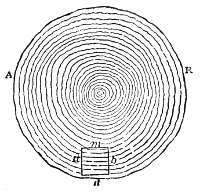
of the tree, the velocity of sound through such a cube in the direction m n is greater than in the direction a b.
The table above strikingly illustrates the influence of molecular structure. The great majority of crystals show differences of the same kind. Such bodies for the most part have their molecules packed at different distances in different directions, and wherever that happens there are sure to be differences in the transmission and the display of heat, light, electricity, magnetism and sound.
I will end this lecture on the transmission of sound through gases, liquids and solids with a quaint and beautiful extract from the writings of that admirable thinker, Dr. Robert Hooke. You will notice that the philosophy of the stethoscope is set out in the passage; and one could hardly find another that illustrates so well that working of the scientific imagination which, in every great investigator, goes before experiment and keeps it company.
"There may also be a possibility," writes Hooke, "of discovering the internal motions and actions of bodies by the sound they make. Who knows but that, as in a watch, we may hear the beating of the balance, and the running of the wheels, and the striking of the hammers, and the grating of the teeth, and multitudes of other noises; who knows, I say, but that it may be possible to discover the motions of the internal parts of bodies, whether animal, vegetable, or mineral, by the sound they make; that one may discover the works performed in the several offices and shops of a man's body, and thereby discover what instrument or engine is out of order, what works are going on at several times, and lie still at others, and the like; that in plants and vegetables one might discover by the noise the pumps for raising the juice, the valves for stopping it, and the rushing of it out of one passage into another, and the like? I could proceed further, but methinks I can hardly forbear to blush when I consider how the most part of men will look upon this: but, yet again, I have this encouragement, not to think all these things utterly impossible, though never so much derided by the generality of men, and never so seemingly mad, foolish, and fantastic, that as the thinking them impossible cannot much improve my knowledge, so the believing them possible may, perhaps, be an occasion of taking notice of such things as another would pass by without regard as useless. And somewhat more of encouragement I have also from experience, that I have been able to hear very plainly the beating of a man's heart, and it is common to hear the motion of wind to and fro in the guts, and other small vessels; the stopping of the lungs is easily discovered by the wheezing, the stopping of the head by the humming and whistling noises, the slipping to and fro of the joints, in many cases, by crackling, and the like, as to the working or motion of the parts one among another; methinks I could receive encouragement from hearing the hissing noise made by a corrosive menstruum in its operation, the noise of fire in dissolving, of water in boiling, of the parts of a bell after that its motion is grown quite invisible as to the eye, for to me these motions and the other seem only to differ secundum magis minus, and so to their becoming sensible they require either that their motions be increased, or that the organ be made more nice and powerful to sensate and distinguish them."
The recent explosion of a powder-laden barge in Regent's Park produced effects like those described above in the account of the Erith explosion. The sound-wave bent round houses and broke the windows at the back, and the coming together of different portions of the wave at particular points was marked by an intensified local action. Close to the place where the explosion happened, the unburnt gunpowder was carried in the wave; and as a result the wrecked gatekeeper's lodge was girdled all round by a black belt of carbon.
The sound of an explosion travels as a wave, or pulse, through the air.
This wave, striking the tympanic membrane, sets it shivering; its tremors are passed to the auditory nerve, and along that nerve to the brain, where it announces itself as sound.
A sonorous wave has two parts: in one the air is condensed, in the other rarefied.
The motion of the sonorous wave must not be confused with the motion of the particles that make up the wave at any moment. As the wave passes, every particle taking part in carrying it makes only a small excursion to and fro.
The length of that excursion is called the amplitude of the vibration.
Sound cannot pass through a vacuum.
A certain sharpness of shock, or rapidity of vibration, is needed to produce sonorous waves in air. It is needed still more in hydrogen, because the greater mobility of that light gas works against the forming of condensations and rarefactions.
Sound is reflected in every respect like light; it is also refracted like light; and like light it can be brought to a focus by suitable lenses.
Sound is also diffracted, the sonorous wave bending round obstacles — though such obstacles do in part shade the sound off.
Echoes are produced by reflected waves of sound.
Where sound and the medium it passes through are concerned, four distinct things must be kept in mind: intensity, velocity, elasticity and density.
The intensity is proportional to the square of the amplitude as defined above.
It is also proportional to the square of the greatest velocity reached by the vibrating air particles.
When sound comes from a small body in free air, the intensity falls off as the square of the distance from the body increases.
If the wave of sound is confined in a tube with a smooth inner surface, it can be carried great distances without any noticeable loss of intensity.
The velocity of sound in air depends on the elasticity of the air in relation to its density. The greater the elasticity, the faster the propagation; the greater the density, the slower.
The velocity is directly proportional to the square root of the elasticity, and inversely proportional to the square root of the density.
So if elasticity and density vary in the same proportion, the one cancels the other as far as the velocity of sound is concerned.
That they do vary in the same proportion is proved by the law of Boyle and Mariotte; hence the velocity of sound in air is independent of the density of the air.
But for that law to hold, the dense air and the rare air must be at the same temperature.
The intensity of a sound depends on the density of the air it is generated in, but not on the density of the air it is heard in.
The velocity of sound in air at a temperature of 0° C. is 1,090 feet a second; it increases by nearly 2 feet for every degree centigrade added to the temperature.
So, given the velocity of sound in air, the temperature of the air can readily be calculated.
The distance of a fired cannon, or of a discharge of lightning, can be found by noting the interval between the flash and the sound.
From all this it is easy to see that if a row of soldiers form a circle and fire their pieces all at the same moment, a person standing at the centre of the circle will hear the sound as a single discharge.
But if the men form a straight row and the observer stands at one end of it, their simultaneous discharge will be drawn out into a kind of roar.
A discharge of lightning along a long cloud may in this way produce the prolonged roll of thunder. The roll of thunder, however, must be due at least in part to echoes from the clouds.
The pupil will have no difficulty in tracing many common occurrences to the fact that sound takes a measurable time to cross any considerable length of air. The fall of a distant woodcutter's axe, for example, is not simultaneous with the sound of the stroke. A company of soldiers marching to music along a road cannot march in time, because the notes do not reach those in front and those behind at the same moment.
In the condensed part of a sonorous wave the air is above its average temperature; in the rarefied part it is below.
This change of temperature, produced by the passage of the sound-wave itself, effectively increases the elasticity of the air, and makes the velocity of sound about one-sixth greater than it would be if there were no change of temperature.
The velocity Newton found, taking no account of that change of temperature, was 916 feet a second.
Laplace proved that multiplying Newton's velocity by the square root of the ratio of the specific heat of air at constant pressure to its specific heat at constant volume gives the actual, observed velocity.
Conversely, comparing the calculated and observed velocities gives the ratio of the two specific heats.
The mechanical equivalent of heat can be deduced from that ratio, and it comes out the same as the one established by direct experiment.
That coincidence leads to the conclusion that atmospheric air has no appreciable power of radiating heat. Direct experiments on the radiative power of air establish the same result.
The velocity of sound in water is more than four times its velocity in air.
The velocity of sound in iron is seventeen times its velocity in air.
The velocity of sound along the fibre of pine wood is ten times its velocity in air.
The reason for this great superiority is that the elasticities of the liquid, the metal and the wood, compared with their respective densities, are vastly greater than the elasticity of air in relation to its density.
The velocity of sound depends to some extent on molecular structure. In wood, for example, it is carried at different speeds in different directions.
The physical difference between noise and music — A musical tone is produced by periodic impulses, a noise by unperiodic ones — Musical sounds produced by taps — Musical sounds produced by puffs — What pitch means in music — The vibrations of a tuning fork, and how to make them draw themselves on smoked glass — Showing the vibrations of a tuning fork optically — The siren described — The limits of the ear: the highest and the deepest tones — Finding the rate of vibration with the siren — Measuring the lengths of sonorous waves — The wave lengths of the voice in men and in women — How musical sounds travel through liquids and solids
In our last chapter we looked at how a sound of momentary duration travels through air. Today we have to consider continuous sounds, and first of all to make ourselves familiar with the physical difference between noise and music. As far as sensation goes, everybody knows the difference between the two. But we have now to ask after the causes of the sensation, and to learn what condition of the outside air it is that resolves itself in the one case into music and in the other into noise.
We have already learned that what is loudness in our sensations is, outside us, nothing more than the width of swing — the amplitude — of the vibrating air particles. Every other real sonorous impression we are conscious of has its counterpart outside us as a mere form or state of the atmosphere. If our organs were sharp enough to see the motions of the air an agreeable voice is passing through, we should see stamped upon that air the conditions of motion the sweetness of the voice depends on. In ordinary conversation too the physical comes first and rouses the psychical: the spoken language that is to give us pleasure or pain, that is to rouse us to anger or soothe us to peace, exists for a time, between us and the speaker, as a purely mechanical condition of the air in between.
Noise strikes us as an irregular succession of shocks. Listening to it, we are conscious of a jolting and jarring of the auditory nerve, while a musical sound flows smoothly, without roughness or irregularity. How is that smoothness secured? By making the impulses the tympanic membrane receives perfectly periodic. A periodic motion is one that repeats itself. The motion of a common pendulum, for instance, is periodic — but its vibrations are far too sluggish to excite sonorous waves. To produce a musical tone we need a body that vibrates with the unerring regularity of a pendulum, but that can deliver much sharper and quicker shocks to the air.
Imagine the first of a series of pulses, following one another at regular intervals, striking the tympanic membrane. The membrane is shaken by the shock; and a body once shaken cannot come to rest instantly. The human ear is in fact so built that sonorous motion dies away in it extremely fast — but not instantaneously. And if the motion each individual pulse of our series gives to the auditory nerve lasts until the next pulse arrives, the sound will not cease at all. The effect of every shock will be renewed before it dies, and the recurring impulses will link themselves together into a continuous musical sound. The pulses that produce noise, on the other hand, are irregular both in strength and in recurrence. The action of noise on the ear has been well compared to that of a flickering light on the eye: both are painful because of the sudden and abrupt changes they force on their respective nerves.
The one condition necessary for producing a musical sound is that the pulses should follow one another at equal intervals of time. Whatever the source may be, if that condition is met the sound becomes musical. If a watch, for example, could be made to tick fast enough — say a hundred times a second — the ticks would lose their separateness and blend into a musical tone. And if a pigeon could beat its wings at the same rate, the bird's progress through the air would be accompanied by music. In the hummingbird the necessary speed is reached; and when we go on from birds to insects, where the vibrations are faster still, a musical note is the ordinary accompaniment of the insect's flight. The puffs of a locomotive starting off follow one another slowly at first, but they soon quicken until they can hardly be counted. If that quickening could go on to fifty or sixty puffs a second, the engine's approach would be heralded by an organ peal of tremendous power.
Footnote: According to Burmeister, by air being drawn into and driven out of the cavity of the chest.
Galileo produced a musical sound by drawing a knife across the milled edge of a coin. The fine serration of the coin showed the periodic character of the motion, which consisted of a run of taps quick enough to give sonorous continuity. Every schoolboy knows how to get a note out of his slate pencil. I will not call it
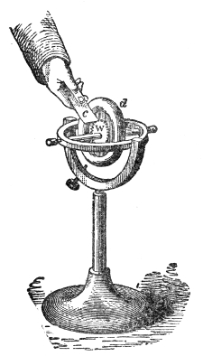
musical, because that word is usually bound up with pleasure, and the sound of the pencil is not pleasant.
A musical sound is usually produced by taps by letting the teeth of a rotating wheel strike in quick succession against a card. This was first shown by the celebrated Robert Hooke, and nearer our own day by the eminent French experimenter Savart. We will keep to homelier ways of illustrating it. This gyroscope is an instrument consisting mainly of a heavy brass ring, d (Fig. 15), loading the rim of a disk, through which, at right angles to its surface, passes a steel axis delicately supported at both ends. Coil a string round the axis and pull it vigorously out, and the ring spins rapidly; and along with it turns a small toothed wheel, w. Touch that wheel with the edge of a card, c, and a musical sound of extreme shrillness is produced. I put my thumb against the ring for a moment; the speed of its rotation drops, and this is instantly announced by a lowering of the pitch of the note. Check the motion further still and the pitch falls further. Here we learn the important fact that the pitch of a note depends on the rapidity of its pulses. At the end of the experiment you hear the separate taps of the teeth against the card, their succession no longer quick enough to produce that continuous flow of sound which is the essence of music. A screw with a milled head fixed to a whirling table and set spinning produces, by its taps against a card, a note almost as clear and pure as the one we got from the toothed wheel of the gyroscope.
Footnote: On 27 July 1681, "Mr. Hooke showed an experiment of making musical and other sounds by the help of teeth of brass wheels; which teeth were made of equal bigness for musical sounds, but of unequal for vocal sounds." — Birch's History of the Royal Society, p. 96, published in 1757. The following extract is taken from the "Life of Hooke" that precedes his Posthumous Works, published in 1705 by Richard Waller, Secretary of the Royal Society: "In July the same year he (Dr. Hooke) showed a way of making musical and other sounds by the striking of the teeth of several brass wheels, proportionally cut as to their numbers, and turned very fast round, in which it was observable that the equal or proportional strokes of the teeth, that is, 2 to 1, 4 to 3, etc., made the musical notes, but the unequal strokes of the teeth more answered the sound of the voice in speaking."
Footnote: Galileo, finding that the notches on his metal were many when the pitch of the note was high, inferred that the pitch depended on the rapidity of the impulses.
The production of a musical sound by taps can also be pleasantly shown in this way. In this vice two pieces of sheet lead are fixed upright, with their horizontal edges a quarter of an inch apart. I lay a bar of brass across them, letting it rest on the edges, and, tilting the bar a little, set it rocking like a seesaw. After a time, left to itself, it comes to rest. But suppose the bar were always tilted upward, on touching the lead, by a force coming from the lead itself: plainly the vibrations would then be kept up. Such a force is in fact brought into play when the bar is heated. When it touches the lead the heat is passed on, and the lead juts suddenly upward at the point of contact. Hence an incessant tilting of the bar from side to side, as long as it stays hot enough. Put the heated fire shovel shown in Fig. 16 in place of the brass bar and the same effect follows.
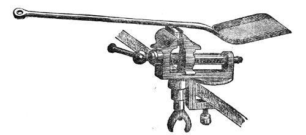
As it comes down on the lead the bar taps it gently, the taps so slow that you can easily count them. But a mass of metal shaped differently can be made to vibrate more briskly, and the taps to follow one another faster. When such a heated rocker (Fig. 17) is set on a block of lead, the taps hurry into a loud rattle. Press the rocker against the lead with the point of a file and the vibrations quicken, and the taps link themselves together into a deep musical tone. A second rocker, which swings faster than the first, gives music with no pressure at all beyond its own weight. Press it with the file, though, and the pitch rises until a note of remarkable force and purity fills the room. Relax the pressure and the pitch falls at once; resume it and the pitch rises again; and so, by turning the pressure on and off, we get great variations of tone. Nor are such rockers essential. Rest one face of the clean square end of a heated poker on the block of lead and you hear a rattle; rest another face on the block and you get a clear musical note. The two faces have been bevelled differently with a file, so as to give different rates of vibration. This curious effect was discovered by Schwartz and Trevelyan.
Footnote: When a rough tide rolls in on a pebble beach, as at Blackgang Chine or Freshwater Gate in the Isle of Wight, the rounded stones are carried up the slope by the rush of the water, and dragged down again as the wave retreats. Countless collisions follow, irregular in strength and in recurrence. Together those shocks strike us as a kind of scream. Hence Tennyson's line in Maud: "Now to the scream of a maddened beach dragged down by the wave." The height of the note depends to some extent on the size of the pebble, running from a kind of roar — heard when the stones are large — to a scream; from a scream to a noise like frying bacon; and from that, when the pebbles are small enough to be nearly gravel, to a mere hiss. The roar of the breaking wave itself is mainly due to the bursting of bladders of air.
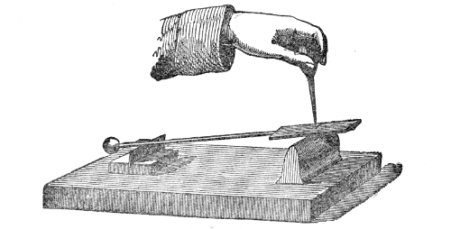
Professor Robison was the first to produce a musical sound with a quick succession of puffs of air. His device was the first form of an instrument that will shortly be introduced to you under the name of the siren. Robison describes his experiment in these words: "A stop-cock was so constructed that it opened and shut the passage of a pipe 720 times in a second. The apparatus was fitted to the pipe of a conduit leading from the bellows to the wind-chest of an organ. The air was simply allowed to pass gently along this pipe by the opening of the cock. When this was repeated 720 times in a second, the sound g in alt was most smoothly uttered, equal in sweetness to a clear female voice. When the frequency was reduced to 360, the sound was that of a clear but rather a harsh man's voice. The cock was now altered in such a manner that it never shut the hole entirely, but left about one-third of it open. When this was repeated 720 times in a second, the sound was uncommonly smooth and sweet. When reduced to 360, the sound was more mellow than any man's voice of the same pitch."
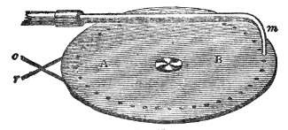
But the difficulty of getting up the necessary speed makes another form of the experiment preferable. A disk of Bristol board, B (Fig. 18), twelve inches across, is pierced with holes at equal intervals along a circle near its rim. Backed with tin to stiffen it, the disk can be fixed to a whirling table and made to spin fast. The separate holes then disappear, blending into a continuous shaded ring. Immediately over that ring is set a bent tube, m, connected to a pair of acoustic bellows. The disk is at rest for the moment, with the lower end of the tube directly over one of the holes. Work the bellows, then, and the wind passes from m through the hole beneath. But turn the disk a little and an unpierced part of it comes under the tube, cutting the current of air off. As the disk is slowly turned, one hole after another is brought under the tube, and each time that happens a puff of air gets through. Make the rotation rapid and the puffs follow one another in very quick succession, producing pulses in the air that blend into a continuous musical note, audible to all of you. Notice how the note varies. Turn the whirling table fast and the sound is shrill; slacken its motion and the pitch falls at once. Suppose that instead of a single glass tube there were two, set as far apart as two of our holes, so that whenever one tube stood over a hole the other stood over another. Then plainly, if both tubes were blown through, we should get a puff through two holes at the same moment as the disk turned. The loudness of the sound would be increased by that, but the pitch would be unchanged. The two puffs, issuing at the same instant, would act together and have a greater effect on the ear than one. And if instead of two tubes we had ten, or better still a tube for every hole in the disk, the puffs from the whole series would all be let out and all cut off together. Those puffs would produce a note far louder than the one we get from the alternate escape and interruption of the air from a single tube. In the arrangement now before you (Fig. 19) there are nine tubes forcing air through nine holes, so that nine puffs escape at once. Turn the whirling table, and by turns speed it up and let it slacken, and the sound rises and falls like the loud wail of a changing wind.
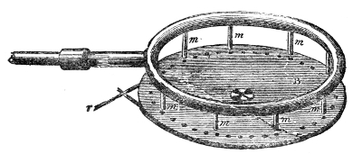
Various other means can be used to throw the air into a state of periodic motion. A stretched string, pulled aside and suddenly let go, gives the air vibrations that follow one another at perfectly regular intervals. A tuning fork does the same. When a bow is drawn across the prongs of this tuning fork (Fig. 20), the resin on the bow lets the hairs grip the prong and drag it aside. But the resistance of the prong soon grows too strong, and it flies suddenly back; it is immediately caught again by the bow, only to fly back once more as soon as its resistance is great enough. This rhythmic process, repeated over and over while the bow passes, finally throws the fork into a state of intense vibration, and a musical note is the result. A person close by could see the fork vibrating; a deaf person bringing a hand near enough would feel the shivering of the air. Or let the vibrating prong touch a card, and the taps against the card link themselves together, as they did with the gyroscope, into a musical sound — the fork coming quickly to rest. What we call silence is our word for that absence of motion.
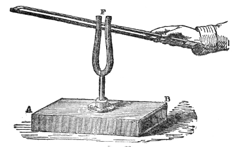
When the tuning fork is first excited the sound comes from it at its loudest and gradually grows feebler as the fork goes on vibrating. Someone close to the fork can see at the same time that the amplitude — the space through which the prongs swing — grows smaller and smaller. But the most expert ear in this room can detect no change in the pitch of the note. Lowering the intensity of a note therefore does not lower its pitch. The amplitude changes, but the rate of vibration stays the same. Pitch and intensity must accordingly be kept quite distinct: intensity depends solely on the amplitude, pitch solely on the rapidity of the vibration.
This tuning fork can be made to write the story of its own motion. Fastened to the side of one of its prongs, F (Fig. 21), is a thin strip of sheet copper tapering to a point. When the fork is excited it vibrates, and the strip of metal vibrates with it. Bring the point of the strip gently down on a piece of smoked glass, and it travels to and fro across the smoked surface, leaving a clear line behind it. As long as the hand is held still, the point simply passes back and forth over the same line; but plainly we have only to draw the fork along the glass to get a wavy line, as in Fig. 21.
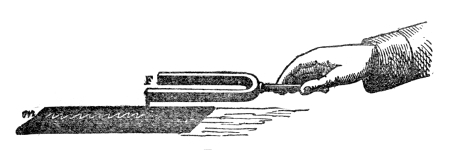
When this is repeated without exciting the fork afresh, the depth of the waves grows less. The wavy line comes closer and closer to a straight one. That is the visual expression of a shrinking amplitude. When the waviness disappears altogether, the amplitude has become zero, and the sound, which depends on the amplitude, stops entirely.
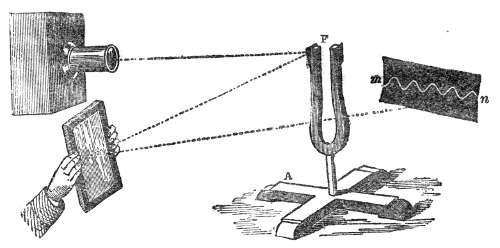
To M. Lissajous we owe a very beautiful method of giving the vibrations of a tuning fork optical expression. Fixed to one prong of a very large fork is a small metal mirror, F (Fig. 22), the other prong being loaded with a piece of metal to keep the balance. A slender beam of intense light is allowed to fall on the mirror, and is thrown back by reflection. In my hands I hold a small looking glass, which catches the reflected beam and throws it on to the screen, forming a small luminous disk on the white surface. The disk is perfectly still; but the moment the fork is set vibrating, the reflected beam is tilted rapidly up and down, and the disk draws out a band of light three feet long. The length of that band depends on the amplitude of the vibration, and you see it shorten gradually as the motion of the fork is spent. It stays a straight line, though, as long as the glass is held still. But suddenly turn the glass so as to sweep the beam from left to right across the screen, and you see the straight line resolved at once into a beautiful luminous ripple, m n. A luminous impression once made on the retina lingers there for a tenth of a second; so if the time needed to carry the drawn-out image from one side of the screen to the other is less than a tenth of a second, the wavy line of light will fill the whole width of the screen at one moment. Instead of letting the beam from the lamp come through a single aperture, we can let it come through two, about half an inch apart, and so throw two disks of light on the screen, one above the other. Excite the fork and turn the mirror, and we get a brilliant double wavy line running across the dark surface (Fig. 23). Turn the diaphragm so as to set the two disks side by side instead, and on exciting the fork and moving the mirror we get a beautiful interlacing of the two wavy lines (Fig. 24).
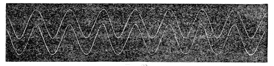
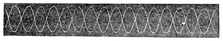
How are we to picture to ourselves the state of the air this musical sound is passing through? Imagine one prong of the vibrating fork sweeping forward: it compresses the air right in front of it, and when it draws back it leaves a partial vacuum behind, the process being repeated at every later advance and retreat. The whole business of the tuning fork is to carve the air into these condensations and rarefactions; and as they are formed they travel one after another through the air. A condensation with its accompanying rarefaction makes up, as I have said already, a sonorous wave. In water the length of a wave is measured from crest to crest; in the case of sound the wave length is the distance between two successive condensations. The condensation of the sound-wave answers to the crest of the water wave, and the rarefaction of the sound-wave to its trough. Let the dark spaces a, b, c, d in Fig. 25 stand for the condensations, and the light ones a′, b′, c′, d′ for the rarefactions of the waves issuing from the fork A B: the wave length would then be measured from a to b, from b to c, or from c to d.
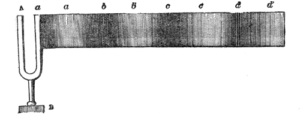
When two notes from two different sources have the same pitch, their rates of vibration are the same. If a string gives the same note as a tuning fork, for example, it is because the two vibrate at the same rate; and if a fork gives the same note as an organ pipe or the tongue of a concertina, it is because the vibrations of the fork in the one case take exactly the same time as the vibrations of the column of air, or of the tongue, in the other. The same holds for the human voice. If a string and a voice give the same note, it is because the singer's vocal cords vibrate in the same time as the string. Is there any way of finding the actual number of vibrations that belong to a musical note? Can we infer from the pitch of a string, an organ pipe, a tuning fork or the human voice how many waves it sends out in a second? This very beautiful problem admits of a completely satisfactory solution.
Spinning a perforated pasteboard disk has proved to you that a musical sound is produced by a quick succession of puffs. If we had any way of registering the number of turns that disk made in a minute, we should have in it a way of finding the number of puffs a minute belonging to a note of any given pitch. But the disk is only a cheap substitute for a far more perfect apparatus, one that needs no whirling table and that registers its own rotations with perfect accuracy.
I will take the instrument apart so that you can see its various pieces. A brass tube, t (Fig. 26), leads into a round box, C, closed at the top by a brass plate a b. That plate is pierced with four sets of holes, set along four concentric circles. The innermost set has 8 holes, the next 10, the next 12, and the outermost 16. When we blow into the tube t the air escapes through the holes; and our problem now is to turn those steady streams into broken puffs. It is done by means of a brass disk, d e, also pierced with 8, 10, 12 and 16 holes, at the same distances from the centre and with the same spacing as those in the top of the box C. Through the centre of the disk passes a steel axis, both ends of which are smoothly bevelled to points at p and p′. My aim now is to make this perforated disk spin over the perforated top a b of the box C. You will understand how that is done by watching the instrument put together.
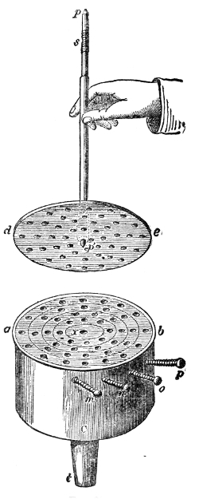
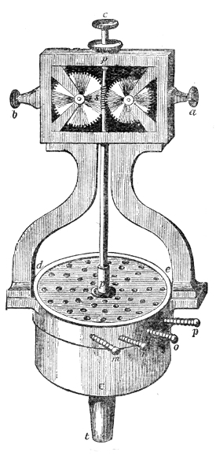
At the centre of a b (Fig. 26) is a hollow x sunk in steel, smoothly polished, meant to take the end p′ of the axis. I set p′ in that hollow, and, holding the axis upright, bring down on its upper end p a steel cap, finely polished inside, which holds the axis at the top. The pressure at top and bottom is so gentle, and the polish of the touching surfaces so perfect, that the disk can spin with exceedingly little friction. At c in Fig. 27 is the cap that fits on to the upper end of the axis p p′. In that figure the disk d e is shown covering the top of the cylinder C. You may ignore the wheel work in the figure for the moment. Turn the disk d e slowly round and its holes can be made to coincide, or not to coincide, with those of the cylinder underneath. As the disk turns, its holes come alternately over the holes of the cylinder and over the spaces between them. So plainly, if air were forced into C and the disk could be spun at the same time, we should reach our object and carve the streams of air into puffs. In this beautiful instrument the disk is spun by the very air currents it is chopping up. That is done by the simple device of boring the holes obliquely through the top of the cylinder C, and obliquely — but sloped the other way — through the rotating disk d e. The air is thereby made to leave C not straight upward but in side currents, which strike the disk and drive it round. In this way, simply by passing through the siren, the air is moulded into sonorous waves.
Another moment will make you acquainted with the recording part of the instrument. At the upper part of the steel axis p p′ (Fig. 27) is a screw, s, working into a pair of toothed wheels — you can see them when the back of the instrument is turned towards you. As the disk and its axis turn, those wheels turn. At the front you simply
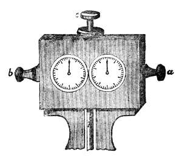
see two graduated dials (Fig. 28), each fitted with a hand like a clock's. Those hands record the number of turns the disk makes in any given time. Push the button a or b and the wheel work is thrown into or out of gear, so that the recording starts or stops in a moment. Finally, by means of the keys m, n, o, p (Fig. 27), any set of holes in the top of the cylinder C can be opened or closed at will. Press m and one set is opened; press n and another. Press two keys and two sets of holes are opened; press three keys and three sets; and press all the keys and puffs come from all four sets at once. The complete instrument is now before you, and your knowledge of it is complete too.
The instrument was named the siren by its inventor, Cagniard de la Tour. The one before you is the siren as greatly improved by Dove. The pasteboard siren, whose performance you have already heard, was devised by Seebeck, who gave the instrument various interesting forms and carried out many important experiments with it. Now let us make the siren sing. Pressing the key m opens the outer set of holes in the cylinder C, and working the bellows drives the air against the disk. It begins to turn, and you hear a succession of puffs following one another slowly enough to be counted. But as the motion builds up, the puffs come faster and faster, and at last you hear a deep musical note. As the speed of rotation rises the note rises in pitch; it is now very clear and full; and as the air is driven harder it becomes shrill enough to be painful. Here is a further illustration of pitch depending on rapidity of vibration. I touch the side of the disk and slow it down; the pitch falls at once. Keep up the pressure and the tone goes on sinking, ending in the separate puffs it began with.
If the blast were powerful enough and the siren free enough of friction, it might be driven to higher and higher notes until at last its sound became inaudible to human ears. That would not prove that there was no vibratory motion in the air; it would show rather that our hearing apparatus cannot take up and translate into sound any vibrations faster than a certain limit. In this respect the ear, as we shall learn in a moment, is like the eye.
With this siren we can find the rate of vibration of any sounding body with extreme accuracy. It may be a vibrating string, an organ pipe, a reed or the human voice. Working delicately, we could even determine from an insect's hum how many times a second it flaps its wings. I will illustrate the matter by finding a tuning fork's rate of vibration in front of you. I drive air through the siren from the acoustic bellows and at the same time draw my bow across the fork. Both are sounding together now, the tuning fork giving at present the higher note. But the pitch of the siren rises gradually, and presently you hear the "beats" so well known to musicians, which tell us that the two notes are not far apart in pitch. The beats grow slower and slower; now they vanish entirely, both notes blending, as it were, into a single stream of sound.
All this time the clockwork of the siren has been out of gear. As the second hand of a watch crosses 60, the clockwork is started by pushing the button a. We let the disk go on turning for a minute, the tuning fork being sounded from time to time to satisfy you that the unison is holding. The second hand comes round to 60 again; as it passes, the clockwork is stopped by pushing the button b — and there, recorded on the dials, is the exact number of turns the disk has made. The number is 1,440. But the set of holes open during the experiment numbered 16; so for every turn we had 16 puffs of air, or 16 waves of sound. Multiplying 1,440 by 16 we get 23,040 as the number of vibrations the tuning fork made in a minute. Dividing by 60, we find the number made in a second to be 384.
Once the rate of vibration is known, the length of the matching sonorous wave is found with the greatest ease. Imagine a tuning fork vibrating in free air. One second after it began to vibrate, the foremost wave would have travelled 1,090 feet in air at the freezing point. In the air of a room at about 15° C. it would travel 1,120 feet in a second. Packed into that distance, then, are 384 sonorous waves. Dividing 1,120 by 384 we find the length of each wave to be nearly 3 feet. Working out in this way the rates of vibration of the four tuning forks before you, we find them to be 256, 320, 384 and 512, and these numbers answer to wave lengths of 4 feet 4 inches, 3 feet 6 inches, 2 feet 11 inches and 2 feet 2 inches respectively. The waves a man's voice generates in ordinary conversation are 8 to 12 feet long, those of a woman's voice 2 to 4 feet. So a woman's ordinary pitch in the lower sounds of conversation is more than an octave above a man's, and in the higher sounds two octaves.
And here it is important to notice that by the word vibrations I mean complete ones, and by a sonorous wave I mean a condensation together with its rarefaction. A vibration means an excursion of the vibrating body there and back again. Every wave generated by such a vibration bends the tympanic membrane once in and once out. Those are the definitions of a vibration and of a sonorous wave used in England and Germany. In France, however, a vibration means an excursion of the vibrating body in one direction only, whether out or back. French vibrations are therefore only halves of ours, and we call them semi-vibrations. Everywhere in these chapters, when the word vibration is used without qualification, it means complete vibrations.
In the time each of those sonorous waves takes to pass right over a particle of air, that particle completes one vibration. At one moment it is pushed forward into the condensation; at the next it is driven back into the rarefaction. The time the particle takes to make a complete swing is therefore the time the sonorous wave takes to travel a distance equal to its own length. Suppose the wave is eight feet long and the velocity of sound in air at our present temperature is 1,120 feet a second: then the wave will pass over its own length of air in 1/140th of a second, and that is the time every air particle it passes takes to complete a swing.
In air of a given density and elasticity, a particular wave length always answers to the same pitch. But suppose the density or the elasticity is not uniform — suppose, for instance, that the sonorous waves from one of our tuning forks pass out of cold air into hot. The wave length would increase at once, with no change of pitch, since there would be no change in the rate at which the waves reached the ear. Conversely, with the same wave length the pitch would be higher in hot air than in cold, because the waves would follow one another faster. In an atmosphere of hydrogen, waves of a given length would give a note nearly two octaves higher than waves of the same length in air; for, since the propagation is so much faster, the number of impulses received in a given time would be nearly four times as great in the one case as in the other.
Open the innermost and the outermost sets of holes in our siren and sound them, either together or one after the other, and the musical ears in the room recognise the relation of the two sounds at once. They notice immediately that the sound from the circle of sixteen holes is the octave of the sound from the circle of eight. But for every wave sent out by the latter, two are sent out by the former. In this way we prove that the physical meaning of the word "octave" is a note produced by double the number of vibrations of its fundamental. Multiply the vibrations of the octave by two and we get its octave, and by going on multiplying like this we get a series of numbers answering to a series of octaves. Starting, for example, from a fundamental note of 100 vibrations, we should find by this continual doubling that a note five octaves above it would be produced by 3,200 vibrations. Thus:
100 Fundamental note.
2
200 1st octave.
2
400 2nd octave.
2
800 3rd octave.
2
1600 4th octave.
2
3200 5th octave.
The result comes more quickly by multiplying the vibrations of the fundamental note by the fifth power of two. In a later chapter we shall come back to this question of musical intervals. For our present purpose we need only define an octave.
The ear's range of hearing is limited at both ends. Savart put the lower limit at eight complete vibrations a second, and to make these slowly recurring vibrations link themselves together he had to use shocks of great power. With a toothed wheel and a counter attached to it, he put the upper limit of hearing at 24,000 vibrations a second. Helmholtz has lately put the lower limit at 16 vibrations and the upper at 38,000 a second. Using very small tuning forks, the late M. Depretz showed that a sound answering to 38,000 vibrations a second is audible. Start from the note 16 and go on doubling — or more compactly, raise 2 to the 11th power and multiply by 16 — and we find that eleven octaves above the fundamental note the number of vibrations would be 32,768. Taking the limit Helmholtz assigns, then, the whole range of the human ear covers about eleven octaves. But not all the notes within those limits can be used in music. The practical range of musical sounds lies between 40 and 4,000 vibrations a second, which comes in round numbers to seven octaves.
Footnote: Savart's error, according to Helmholtz, lay in adopting an arrangement in which overtones (described in Chapter Three) were mistaken for the fundamental.
Footnote: "The deepest tone of orchestra instruments is the E of the double-bass, with 41¼ vibrations. The new pianos and organs go generally as far as C′, with 33 vibrations; new grand pianos may reach A″, with 27½ vibrations. In large organs a lower octave is introduced, reaching to C″, with 16½ vibrations. But the musical character of all these tones under E is imperfect, because they are near the limit where the power of the ear to unite the vibrations to a tone ceases. In height the pianoforte reaches to a⁗, with 3,520 vibrations, or sometimes to c⁗′, with 4,224 vibrations. The highest note of the orchestra is probably the d⁗′ of the piccolo flute, with 4,752 vibrations." — Helmholtz, Tonempfindungen, p. 30. In this notation we start from C, with 66 vibrations, calling the first lower octave C′ and the second C″; and calling the first higher octave c, the second c′, the third c″, the fourth c‴, and so on. In England the deepest tone, Mr. Macfarren tells me, is not E but A, a fourth above it.
The limits of hearing differ from person to person. While trying to judge the pitch of certain sharp sounds, Dr. Wollaston noticed in a friend a complete insensibility to the sound of a small organ pipe that was, in point of shrillness, well within the ordinary limits of hearing. This person's hearing stopped at a note four octaves above the middle E of the pianoforte. The squeak of a bat, the sound of a cricket, even the chirrup of the common house sparrow, go unheard by some people who have a sensitive ear for lower sounds. A difference of a single note is sometimes enough to make the change from sound to silence. "The suddenness of the transition," writes Wollaston, "from perfect hearing to total want of perception, occasions a degree of surprise which renders an experiment of this kind with a series of small pipes among several persons rather amusing. It is curious to observe the change of feeling manifested by various individuals of the party, in succession, as the sounds approach and pass the limits of their hearing. Those who enjoy a temporary triumph are often compelled, in their turn, to acknowledge to how short a distance their little superiority extends." "Nothing can be more surprising," writes Sir John Herschel, "than to see two persons, neither of them deaf, the one complaining of the penetrating shrillness of a sound, while the other maintains there is no sound at all. Thus, while one person mentioned by Dr. Wollaston could but just hear a note four octaves above the middle E of the pianoforte, others have a distinct perception of sounds full two octaves higher. The chirrup of the sparrow is about the former limit; the cry of the bat about an octave above it; and that of some insects probably another octave." In The Glaciers of the Alps I have described a case of short auditory range that I noticed myself while crossing the Wengern Alp with a friend. The grass on either side of the path swarmed with insects, which to me rent the air with their shrill chirruping. My friend heard nothing of it: the insect music lay beyond his limit of hearing.
Behind the tympanic membrane is a cavity — the drum of the ear — partly crossed by a series of bones and partly filled with air. This cavity opens into the mouth by a duct called the Eustachian tube. The tube is generally closed, so that the air space behind the tympanic membrane is shut off from the outer air. If, under those conditions, the outside air grows denser, it will press the tympanic membrane inward. If, on the other hand, the outside air grows thinner while the Eustachian tube stays closed, the membrane will be pressed outward. Pain is felt in both cases, and partial deafness with it. I once crossed the Stelvio Pass by night with a friend who complained of acute pain in the ears. On swallowing his saliva the pain vanished instantly. The act of swallowing opens the Eustachian tube, and so balances the outside and inside pressures.
You can quench your hearing of low sounds by stopping the nose and mouth and trying to expand the chest, as if drawing breath. That effort partly empties the space behind the tympanic membrane, which is then put under tension by the pressure of the outside air. A similar deafness to low sounds is produced by stopping the nose and mouth and making a strong effort to breathe out. In that case air is forced through the Eustachian tube into the drum of the ear, and the tympanic membrane is stretched by the pressure of the air inside. The experiment can be tried in a railway carriage, where the low rumble will disappear or be greatly weakened while the sharper sounds are heard as strongly as ever. Dr. Wollaston was expert at closing the Eustachian tube and leaving the space behind the tympanic membrane filled with either compressed or rarefied air. He could in this way keep his deafness going as long as he liked with no effort on his part — always abolishing it by the act of swallowing. A sudden shock may produce deafness by forcing air either into or out of the drum of the ear, and that may account for something I noticed myself on one of my Alpine rambles. In the summer of 1858, jumping off a cliff on to what I took to be a deep snowdrift, I came down hard on a rock the snow barely covered. The sound of the wind, the rush of the glacier torrents and all the other noises a sunny day wakes among the mountains ceased instantly. I could hardly hear my guide's voice. The deafness lasted half an hour; at the end of that time blowing my nose opened the Eustachian tube, I suppose, and restored, with the quickness of magic, the countless murmurs that filled the air around me.
Light, like sound, is excited by pulses or waves; and lights of different colours, like sounds of different pitch, are excited by different rates of vibration. But in the width of what it can take in, the ear vastly surpasses the eye; for while the ear ranges over eleven octaves, little more than a single octave is open to the eye. The quickest vibrations that strike the eye as light are only about twice as rapid as the slowest, whereas the quickest vibrations that strike the ear as a musical sound are more than two thousand times as rapid as the slowest.
Footnote: It is hardly necessary to add that the quickest vibrations and shortest waves belong to the extreme violet of the spectrum, and the slowest vibrations and longest waves to the extreme red.
Professor Dove, as we have seen, extended the usefulness of Cagniard de la Tour's siren by giving it four sets of holes instead of one. By doubling all its parts, Helmholtz has lately added enormously to the power of the instrument. The double siren, as it is called, is now before you (Fig. 29). It is made up of two of Dove's sirens, C and C′, one of them turned upside down. In the lower siren you will recognise the instrument you already know. The disks of the two sirens are on a common axis, so that when one disk turns the other turns with it. As before, the number of revolutions is recorded by clockwork (left out of the figure). When air is driven through the tube t′ the upper siren alone sounds; when it is driven through t, only the lower one sounds; when it is driven through t′ and t together, both sound. With this instrument, then, we can put together far more varied combinations than with the other. Helmholtz has also contrived a way of making not only the disk of the upper siren turn, but the box C′ above the disk as well. This is done by a toothed wheel and pinion turned by a handle. Under the handle is a dial with a pointer, whose use will be shown later on.
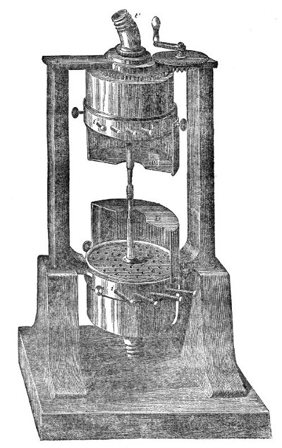
Let us give our attention for the moment to the upper siren. The opening t′ is connected by an indiarubber tube to an acoustic bellows, and air is driven into C′. Its disk turns, and we get from it all the results we already got from Dove's siren. The pitch of the note is steady. Now turn the handle above, so as to bring the holes of the cylinder C′ to meet those of the disk: the two sets of holes pass each other faster than they did while the cylinder stood still, and the pitch instantly rises. Reverse the motion, and the holes pass each other more slowly than when C′ is still, and you notice an instant fall of pitch as the handle turns. So by giving the handle a right-handed and a left-handed motion in quick alternation, we get a run of rises and falls of pitch. An extremely instructive effect of the same kind can be observed at any railway station as a fast train goes through. While it approaches, the sonorous waves the whistle sends out are in effect shortened, since more of them are crowded into the ear in a given time. While it retreats we get an effective lengthening of the waves. The consequence is that the whistle sounds a higher note while approaching, and a lower one while retreating, than it would if the train stood still. So a fall of pitch is heard as the train passes the station. This is the basis of Doppler's theory of the coloured stars. He supposes all stars to be white, but some of them to be retreating from us fast, thereby lengthening their light waves and turning red; while others are approaching us fast, thereby shortening their waves and turning green or blue. The ingenuity of the theory is extreme, but its correctness is more than doubtful.
Footnote: Experiments on this subject were first made by M. Buys Ballot on the Dutch railway, and afterwards by Mr. Scott Russell in this country. Doppler's idea is now used to determine motions in the sun and the fixed stars from changes of wave length.
So far we have been busy with the transmission of musical sounds through air. They are carried by liquids and solids too. When a tuning fork screwed into a little wooden foot vibrates, nobody but the people closest to it hears the sound. Dip the foot into a glass of water and a musical sound becomes audible, the vibrations having been carried through the water to the air. The tube M N (Fig. 30), three feet long, stands upright on a wooden tray A B. It ends in a funnel at the top and is now filled with water to the brim. The fork F is set vibrating, and on dipping its foot into the funnel at the top of the tube a musical sound swells out. I must anticipate a little and point out that in this experiment the tray is the real sounding body. It has been set vibrating by the fork, but the vibrations were carried to the tray by the water. Through the same medium vibrations
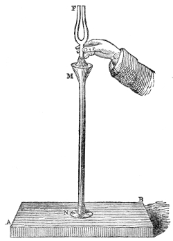
are carried to the auditory nerve, whose end filaments are steeped in a liquid. Put mercury in place of water and a similar result follows.
The siren got its name from its ability to sing under water. A vessel here in front of the table is half filled with water, and a siren is completely immersed in it. Turn a tap and the water from the pipes that supply the house forces its way through the instrument. Its disk is turning now, and a sound of rapidly rising pitch comes out of the vessel. The pitch rises so fast because the heavy, strongly driven water soon brings the disk up to its greatest speed. Reduce the supply and the motion slackens and the pitch falls. So, by opening and closing the tap in turn, the siren's song is made to rise and fall in a wild and melancholy way. You would hardly think such a sound likely to lure sailors to their doom.
How musical sounds travel through solid bodies can be shown just as easily and just as pleasantly. Before you is a wooden rod thirty feet long, running from the table up through a window in the ceiling into the open air above. The lower end of the rod rests on a wooden tray, to which the musical vibrations of anything applied to the upper end are to be handed on. An assistant is up above with a tuning fork in his hand. He strikes the fork against a pad; it vibrates, but you hear nothing. He now sets the stem of the fork against the end of the rod, and instantly the wooden tray on the table becomes musical. The pitch of the sound, moreover, is exactly the pitch of the tuning fork: the wood has been entirely passive as regards pitch, passing on the precise vibrations given to it without any alteration. With another fork a note of another pitch is got. Fifty forks might be used instead of two, and 300 feet of wood instead of 30: the rod would pass on the exact vibrations given to it, and no others.
We are now ready to appreciate an extremely beautiful experiment for which we are indebted to Sir Charles Wheatstone. In a room below this one, separated from it by two floors, is a piano. Through the two floors runs a tin tube 2½ inches across, and along the axis of that tube runs a rod of deal whose end comes up through the floor in front of the lecture table. The rod is clasped by indiarubber bands, which close the tin tube completely. The lower end of the rod rests on the sound board of the piano; its upper end stands exposed before you. An artist is at the instrument at this moment, but you hear no sound. Set a violin on the end of the rod, though, and the instrument becomes musical at once — not with the vibrations of its own strings, but with those of the piano. Take the violin away and the sound stops; put a guitar in its place and the music revives. For the violin and guitar we may substitute a plain wooden tray, which is made musical too. Here, finally, is a harp, and the end of the deal rod is pressed against its sound board: every note of the piano is reproduced before you. Lift the harp so as to break the connection with the piano and the sound vanishes; press the sound board on the rod again and the music comes back. The sound of the piano is so like that of the harp that it is hard to resist the impression that the music you hear is the harp's own. An uneducated person might well believe there was witchcraft or "spiritualism" in the making of this music.
What a curious transfer of action is set before the mind here! At the command of the musician's will the fingers strike the keys; the hammers strike the strings, and the rude mechanical shock is turned into tremors. The vibrations are handed on to the sound board of the piano. On that board rests the end of the deal rod, thinned off to a sharp edge so as to fit more easily between the wires. Through that edge, and then along the rod, are poured with unfailing precision the tangled pulses produced by the shocks of those ten nimble fingers. To the sound board of the harp before you the rod faithfully delivers up the vibrations it is carrying. That second sound board hands the motion on to the air, carving and chasing it into forms so overwhelmingly complicated that one would expect nothing but confusion from the shock and jostle of the sonorous waves. But the marvellous human ear takes in every feature of the motion, and all the strife and struggle and confusion melt at last into music upon the brain.
Footnote: An ordinary musical box may be used instead of the piano in this experiment.
A musical sound is produced by sonorous shocks following one another at regular intervals, fast enough in succession.
Noise is produced by an irregular succession of sonorous shocks.
A musical sound can be produced by taps that follow one another quickly and regularly. The taps of a card against the cogs of a rotating wheel are the usual way of showing this.
A musical sound can also be produced by a succession of puffs. The siren is an instrument for generating such puffs.
The pitch of a musical note depends solely on the number of vibrations that go to produce it. The faster the vibrations, the higher the pitch.
The rate of vibration of any sounding body can be found with the siren. All that is needed is to make the sound of the siren and the sound of the body identical in pitch, to hold both sounds in unison for a certain time, and then to find out from the siren's counter how many puffs came out of the instrument in that time. That number gives the number of vibrations made by the sounding body.
When a body that can give out a musical sound — a tuning fork, for example — vibrates, it moulds the surrounding air into sonorous waves, each of which consists of a condensation and a rarefaction.
The length of a sonorous wave is measured from condensation to condensation, or from rarefaction to rarefaction.
The wave length is found by dividing the velocity of sound per second by the number of vibrations the sounding body makes in a second.
So a tuning fork vibrating 256 times a second produces, in air at 15° C., where the velocity is 1,120 feet a second, waves 4 feet 4 inches long; while two other forks, vibrating 320 and 384 times a second, generate waves 3 feet 6 inches and 2 feet 11 inches long.
A vibration, as defined in England and Germany, is a motion out and back. It is a complete vibration. In France, on the contrary, a vibration is a movement out, or back. French vibrations are with us semi-vibrations.
The time a particle of air takes to make a complete vibration as a sonorous wave passes over it is the time the wave takes to travel a distance equal to its own length.
The higher the temperature of the air, the longer the sonorous wave belonging to any particular rate of vibration. Given the wave length and the rate of vibration, we can readily deduce the temperature of the air.
The human ear is limited in its range for hearing musical sounds. If the vibrations number fewer than 16 a second, we are conscious only of the separate shocks. If they exceed 38,000 a second, the consciousness of sound ceases altogether. The range of the best ear covers about 11 octaves, but a range limited to 6 or 7 octaves is not uncommon.
The sounds available in music are produced by vibrations lying between the limits of 40 and 4,000 a second. They cover 7 octaves.
The range of the ear far surpasses that of the eye, which hardly exceeds an octave.
By means of the Eustachian tube, which is opened in the act of swallowing, the pressure of the air on both sides of the tympanic membrane is equalised.
By either condensing or rarefying the air behind the tympanic membrane, deafness to sounds of low pitch can be produced.
As a railway train approaches, the pitch of its whistle is higher, and as it retreats lower, than it would be if the train were at rest.
Musical sounds are carried by liquids and solids. Such sounds can be transferred from one room to another — from the ground floor to the garret of a house of many storeys, for example — the sound being unheard in the rooms in between, and made audible only when the vibrations are passed to a suitable sound board.
The vibration of strings — How it is used in music — What sound boards do — The laws of vibrating strings — Direct and reflected pulses combined — Progressive and stationary waves — Nodes and ventral segments — Applying the results to musical strings — Melde's experiments — Strings set vibrating by tuning forks — The laws of vibration demonstrated in this way — The harmonic tones of strings — What timbre, or quality, means; overtones and clang — Abolishing particular harmonics — What decides the strength of the harmonic tones — Examining the vibrations of a piano wire optically
We have to begin our studies today with the vibrations of strings or wires: to learn how bodies of this shape are made to serve as sources of musical sound, and to work out the laws of their vibrations.
For a musical string to vibrate crosswise — at right angles to its length — it must be stretched between two rigid points. Before you (Fig. 31) is an instrument for stretching strings and making their vibrations audible. From the pin p, to which one end is firmly attached, a string runs across the two bridges B and B′, and is then carried over the wheel H, which turns very freely. Finally the string is stretched by a weight W of 28 lbs. hung on its end. The bridges B and B′, which are the real ends of the string, are fastened to the long wooden box M N. The whole instrument is called a monochord, or sonometer.
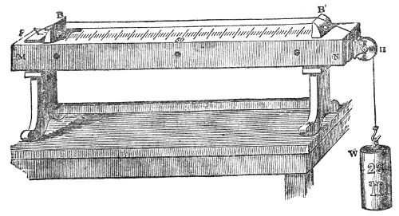
Take hold of the stretched string B B′ at its middle and pluck it aside: it springs back to its first position, passes it, returns, and so vibrates for a while to and fro across its position of rest. You hear a sound — but the sonorous waves now striking your ears do not come straight from the string. So thin a body generates far too little wave motion for it to be felt at any distance. The string, however, is drawn tightly over the two bridges B B′, and when it vibrates its tremors are carried through those bridges to the whole mass of the box M N, and to the air inside the box; and these become the real sounding bodies.
That the vibrations of the string by itself are not enough to produce the sound can be shown by experiment. A B in Fig. 32 is a piece of wood laid across an iron bracket C. From each end of the wood hangs a rope ending in a loop, and stretched from loop to loop is an iron bar m n. From the middle of that bar hangs a steel wire s s′, stretched by a weight W of 28 lbs. By this
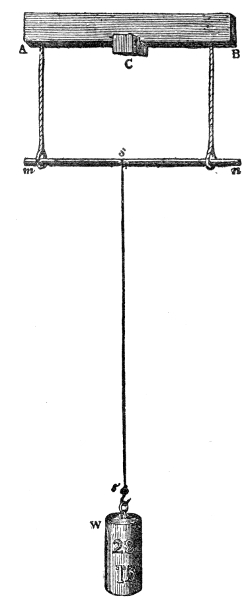
arrangement the wire is kept clear of any large surface it could hand its vibrations to. Pluck the wire s s′ and it vibrates vigorously — but even those nearest it hear no sound. The disturbance it gives the air is far too slight to affect the auditory nerve at any distance. A second wire, t t′ (Fig. 33), of the same length, thickness and material as s s′, has one of its ends fastened to the wooden tray A B. This wire too carries a weight W of 28 lbs. And finally, passing over the bridges B B′ of the sonometer (Fig. 31), is our third wire, exactly like the other two and, like them, stretched by a weight W of 28 lbs. When the wire t t′ (Fig. 33) is set vibrating, you hear its sound distinctly. Though only one end of the wire is connected to the tray A B, the vibrations passed to the tray are enough to turn it into a sounding body. And finally, when the sonometer's wire (Fig. 31) is plucked, the sound is loud and full, because that instrument is built on purpose to take up the vibrations of the wire.
These experiments make plain how important a proper sounding apparatus is in stringed instruments.
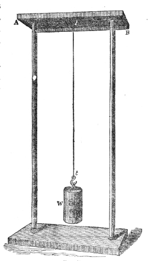
It is not the strings of a harp, or a lute, or a piano, or a violin that throw the air into sonorous vibration. It is the large surfaces the strings are attached to, and the air those surfaces enclose. How good such instruments are depends almost entirely on the quality and the arrangement of their sound boards.
Footnote: To show what a large vibrating surface does towards passing sonorous motion to the air, Mr. Kilburn encloses a musical box in cases of thick felt. A wooden rod resting on the box comes out through the cases. When the box plays a tune it goes unheard as long as only the rod projects; but fix a thin disk of wood on the rod and the music becomes audible at once.
Take the violin as an example. It is, or ought to be, made of wood of the most perfect elasticity. Imperfectly elastic wood spends the motion given to it on the friction of its own molecules: the motion is turned into heat instead of sound. The strings of the violin run from the tailpiece of the instrument over the bridge, and from there to the pegs, whose turning regulates their tension. The bow is drawn across at a point about a tenth of the string's length from the bridge. The two feet of the bridge rest on the most yielding part of the belly of the violin — the part lying between the two f-shaped openings. One foot stands over a short rod, the sound post, which runs from belly to back through the inside of the violin. That foot of the bridge is thereby made rigid, and it is mainly through the other foot, which has no such support, that the vibrations are carried into the wood of the instrument, and from there to the air inside and outside. The sounding quality of the wood of a violin is mellowed by age. The very act of playing does it good as well, apparently forcing the molecules
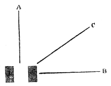
of the wood, which at first may be refractory, to fall in at last with what the vibrating strings require.
This is the place to make the promised reference back to Professor Stokes's explanation, in our first chapter, of what sound boards do. Though the amplitude of a vibrating board may be very small, its larger area makes it hard for the condensations and rarefactions to be wiped out. The air cannot get out of the way in front, or slip in behind, before it is appreciably condensed and rarefied. So with such vibrating bodies sound-waves can be generated and loud tones produced, while the thin strings that set them going are, acting alone, quite inaudible.
Professor Stokes has illustrated this gain in sound from stopping the sideways motion by experiment. Let the two black rectangles in Fig. 34 stand for the section of a tuning fork. After the fork has been set vibrating, hold a sheet of paper, or the blade of a broad knife, with its edge parallel to the axis of the fork and as close to it as you can without touching. If the obstacle is set so that its section is at A or B, no effect follows; but set it at C, so as to prevent the to-and-fro washing of the air which tends to wipe the condensations and rarefactions out, and the sound becomes much stronger.
Having learned how the vibrations of strings are made use of in music, we have next to work out the laws of those vibrations. I pluck the string B B′ (Fig. 31) at its middle point. The sound heard is the fundamental, or lowest, note of the string, which it produces by swinging to and fro as a whole. Put a movable bridge under the middle of the string and press the string down on it, and the string is divided into two equal parts. Pluck either of them at its centre and you get a musical note that many of you will recognise as the octave of the fundamental. In every case, and with every instrument, the octave of a note is produced by doubling the number of its vibrations. It can moreover be proved, both by theory and by the siren, that this half string vibrates exactly twice as fast as the whole. In the same way it can be proved that a third of the string vibrates three times as fast, producing a note a fifth above the octave, while a quarter of the string vibrates four times as fast, producing the double octave of the whole string. In general terms: the number of vibrations is inversely proportional to the length of the string.
Again, the more tightly a string is stretched, the faster it vibrates. Set this comparatively slack string vibrating and you hear its low fundamental note. Turn the peg one end of it is coiled round, and the string is tightened and the pitch raised. Taking hold with my left hand of the weight W hanging on the wire B B′ of our sonometer, and plucking the wire with the fingers of my right, I press the weight down and lift it by turns. The quick changes of tension come out as a varying, wailing tone. Now the number of vibrations made in a given time bears a definite relation to the stretching force. Hang different weights on the end of the wire B B′, find the number of vibrations a second in each case, and the numbers turn out to be proportional to the square roots of the stretching weights. A string stretched by a weight of one pound, for example, makes a certain number of vibrations a second; to double that number we must stretch it with a weight of four pounds; to treble it we must apply nine pounds; and so on.
The vibrations of a string also depend on its thickness. Keeping the stretching weight, the length and the material the same, the number of vibrations varies inversely as the thickness of the string. So if of two strings of the same material, equally long and equally stretched, one is twice the diameter of the other, the thinner will make twice as many vibrations as its fellow in the same time. If one string is three times as thick as another, the other will make three times as many vibrations, and so on.
Finally, the vibrations of a string depend on the density of the stuff it is made of. A platinum wire and an iron wire of the same length and thickness, stretched by the same weight, will not vibrate at the same rate; for while the specific gravity of iron — in other words its density — is 7·8, that of platinum is 21·5. All other conditions being the same, the number of vibrations is inversely proportional to the square root of the density of the string. So if the density of one string is a quarter that of another of the same length, thickness and tension, it will vibrate twice as fast; if its density is a ninth of the other's, it will vibrate three times as fast, and so on. The last two laws taken together can be put like this: the number of vibrations is inversely proportional to the square root of the weight of the string.
In the violin and other stringed instruments we use thickness rather than length to get the deeper tones. In the piano we not only make the wires meant for the bass notes thicker, but we load them by coiling another substance round them. They are like horses carrying a heavy jockey, and move more slowly because of the greater weight laid on the force of tension.
Mechanical Illustrations of Vibration. Progressive and Stationary Waves. Ventral Segments and Nodes
These, then, are the four laws governing the crosswise vibrations of strings. We turn now to some related effects which, though they involve mechanical
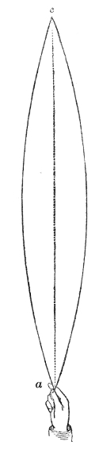
reasoning of a rather complicated kind, can be completely mastered with an ordinary
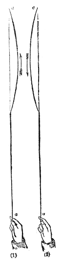
amount of attention. And mastered they must be, if we are to understand the philosophy of stringed instruments thoroughly.
From the ceiling c of this room (Fig. 35) hangs an indiarubber tube twenty-eight feet long. The tube is filled with sand to make its motions slow and easier for the eye to follow. I take hold of its free end a, stretch the tube a little, and by timing my impulses properly make it swing to and fro as a whole, as the figure shows. It has its own definite period of vibration, depending on its length, weight, thickness and tension, and my impulses must keep in step with that period.
I now stop the motion and with a sudden jerk raise a hump on the tube, which runs along it as a pulse towards the fixed end; there the hump turns itself over and runs back to my hand. At the fixed end of the tube, obeying the law of reflection, the pulse reversed both its position and its direction of travel. Suppose c in Fig. 36 to be the fixed end of the tube and a the end held in the hand: if the pulse on reaching c has the position shown in (1), then after reflection it will have the position shown in (2). The arrows mark the direction of travel. The time the pulse takes to go from the hand to the fixed end and back is exactly the time needed for one complete vibration of the tube as a whole. It is in fact the adding up of such impulses that keeps the tube vibrating as a whole.
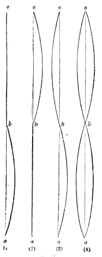
If instead of a single jerk we give a succession of jerks, sending a series of pulses along the tube, every one of them will be reflected up above; and we have now to ask how the direct and the reflected pulses behave towards each other.
Let the time the pulse takes to run from my hand to the fixed end be one second. At the end of half a second it takes the position a b (1) in Fig. 37, its front point having reached the middle of the tube. At the end of a whole second it would have the position b c (2), its front point having reached the fixed end c. At the moment reflection begins at c, let another jerk be given at a. The reflected pulse from c moves at the same speed as this direct one from a, so the front points of both will arrive at the centre b (3) at the same moment. What must happen? The hump a b wants to move on towards c, and to do that it must move the point b to the right. The hump c b wants to move towards a, and to do that it must move the point b to the left. Urged by equal forces in two opposite directions at once, the point b will not move either way. Under these conditions the two halves a b and b c of the tube will swing as if they were independent of each other (4). So by combining two travelling pulses, one direct and one reflected, we produce two stationary pulses on the tube a c.
The vibrating parts a b and b c are called ventral segments; the point of no vibration, b, is called a node.
I use the word "pulse" here on purpose instead of the more usual word wave. For a wave takes in two of these pulses: it takes in both the hump and the hollow that follows the hump. The length of a wave is therefore twice the length of a ventral segment.
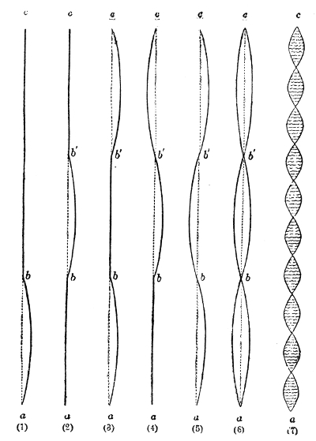
Now suppose the jerks are timed so as to make each hump a third of the tube's length. A third of a second after starting, the pulse will be in the position a b (1) in Fig. 38. In two-thirds of a second it will have reached the position b b′ (2). At that moment let a new pulse be started at a; and after a whole second from the beginning we shall have two humps on the tube, one in the position a b (3), the other in the position b′ c (3). Plainly the end of the pulse reflected from c and the end of the direct pulse from a will reach the point b′ at the same moment. So we shall get the state of things shown in (4), where b b′ wants to move upward and c b′ downward. Since the two act on the point b′ in opposite directions, that point will stay fixed. And from it, as though it were a fixed point, the pulse b b′ will be reflected, while the segment b′ c swings as an independent string. Suppose that at the moment b b′ (4) begins to be reflected at b′ we start another pulse from a: it will reach b at the same moment as the pulse reflected from b′ reaches it. The pulses will cancel each other at b, and there we shall have a second node. So, by timing our jerks properly, we divide the rope into three ventral segments separated from each other by two nodal points. As long as the shaking goes on, the tube will vibrate as in (6).
There is no theoretical limit to the number of nodes and ventral segments that can be produced this way. Quicken the impulses and the tube divides into four ventral segments separated by three nodes; quicken them further and we get five ventral segments and four nodes. With this particular tube the hand can be made to vibrate fast enough to produce ten ventral segments, as shown in Fig. 38 (7). When the stretching force is constant, the number of ventral segments is proportional to the rapidity of the hand's vibration. To produce 2, 3, 4 or 10 ventral segments takes twice, three times, four times or ten times the rate of vibration needed to make the tube swing as a whole. When the vibration is very fast the ventral segments look like a row of shadowy spindles, separated from one another by dark motionless nodes. It is a beautiful experiment and an easy one to perform.
If instead of moving the hand to and fro we make it describe a small circle, the ventral segments become surfaces of revolution. And instead of the hand we may use a hook turned by a whirling table. Before you is a cord stiffer than the indiarubber tube, 25 feet long, one end of it attached to a freely moving swivel fixed in the ceiling of the room. Turning the whirling table its other end is attached to, this cord can be divided into as many as 20 ventral segments, separated from one another by their proper nodes. In another arrangement a catgut string 12 feet long, with silvered beads threaded on it, is stretched horizontally between an upright wheel and a free swivel fixed in a rigid stand. Turn the wheel, regulate both the tension and the speed of rotation properly, and the beaded cord can be made to whirl as a whole, and then to divide itself in turn into 2, 3, 4 or 5 ventral segments. Bathe the cord in a beam of light and every spot of light on every bead traces out a brilliant circle — a very beautiful experiment.
Stationary waves were first treated experimentally by the Messrs. Weber in their excellent researches on wave motion. It is a subject that will richly repay your attention, for it makes many of the most difficult effects in musical strings perfectly intelligible. The connection between the two classes of vibration will be plainer if we vary our last experiments. Before you is a piece of indiarubber tubing, 10 or 12 feet long, stretched from c to a (Fig. 39) and made fast to two pins at c and a. The tube is blackened, and a sheet of white paper is set behind it to make its motions more visible. Encircling the tube at its centre b (1) with the thumb and forefinger of my left hand, and taking the middle of the lower half b a in my right, I pluck it aside. Not only does the lower half swing: the upper half is thrown into vibration too. Take both hands off the tube altogether, and its two halves a b and b c go on vibrating, separated from each other by a node b at the centre (2).
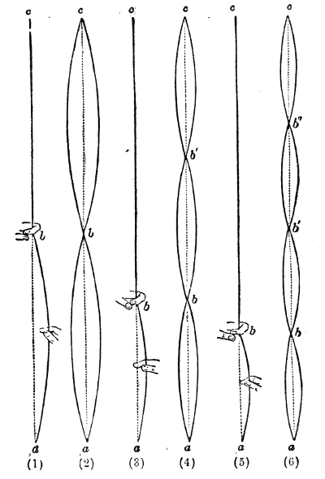
Now I encircle the tube at a point b (3) one-third of its length from the lower end a, and, taking hold of a b at its centre, pluck it aside; the length b c above my hand instantly divides into two vibrating segments. Take both hands away and you see the whole tube divided into three ventral segments, separated from one another by two motionless nodes, b and b′ (4). I go on to the point b (5), which marks off a quarter of the tube's length, encircle it, and pluck the shorter segment aside. The longer segment above my hand at once divides into three vibrating parts, so that when I take my hand away the whole tube stands before you divided into four ventral segments, separated by three nodes, b, b′ and b″ (6). In exactly the same way the tube can be divided into five vibrating segments with four nodes.
This sudden division of the long upper part of the tube, with no apparent cause, is very surprising; but if you will give me your attention for a moment you will find these experiments essentially the same as those that showed direct and reflected undulations running together. Going back to those for a moment: you noticed that a to-and-fro motion of the hand through a single inch was enough to make the mid-points of the ventral segments swing through a foot, or eighteen inches. Being properly timed, the impulses accumulated until the amplitude of the vibrating segments was immensely greater than that of the hand producing them. The hand was in fact a nodal point, so small was its motion by comparison. Indeed, it is usual — and correct — to treat the ends of the tube as nodal points too.
Now consider the case shown in (1), Fig. 39, where the tube was encircled at its middle and the lower segment a b thrown into the vibration proper to its length and tension. The ring formed by the finger and thumb allowed the tube to swing at the point b through the space of an inch; and the vibration at that point acted on the upper half b c exactly as my hand acted when it made the tube hanging from the ceiling swing as a whole in Fig. 35. In place of the timid vibrations of the hand we now have the timid vibrations of the lower half of the tube; and these, though pinched down to an inch where the finger and thumb clasp it, soon accumulate, and at last produce in the upper half an amplitude far exceeding their own. The same reasoning applies to all the other cases of subdivision. If, instead of encircling a point with the finger and thumb and plucking aside the part of the tube below it, that same point were taken in the hand and shaken in the period proper to the lower segment, exactly the same effect would follow. So we trace both effects back to one and the same cause: the combination of direct and reflected undulations.
And let me add here that when the tube was divided by the timid impulses of the hand, not one of its nodes was strictly a point of no motion; for unless the nodes could vibrate through a very small amplitude, the motion of the various segments of the tube could not be kept up.
What is true of the undulations of an indiarubber tube holds for undulations of every kind. Water waves obey the same laws, and the running together of direct and reflected waves shows the same effects. This long, narrow vessel with glass sides (Fig. 40) is a copy of the wave canal of the brothers Weber. It is filled to the level A B with coloured water. Tilt the end A suddenly and a wave is generated, which travels to B and is reflected there. Send out fresh waves at the proper intervals and the surface divides into two stationary undulations. Make the succession of impulses faster and we can divide the surface into three, four (as shown in the figure), or more stationary undulations, separated from one another by nodes. A water carrier's step is sometimes so timed as to throw the surface of the water in his vessel into stationary waves, which may grow in height until the water slops over the brim. Practice has taught the water carrier what to do: he changes his step, alters the period of his impulses, and so stops the motion accumulating.
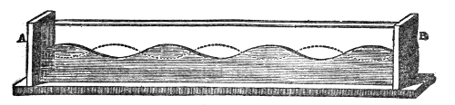
Travelling lately in the coupé of a French railway carriage, I happened to set a bottle half filled with water on one of the little coupé tables. It was interesting to watch. At times it was quite still; at times it swung violently. To a passenger inside the carriage there was no noticeable change in the motion of the train to account for the difference. But in the one case the carriage's tremor held no vibrations in step with the swinging period of the water, and in the other case it did. Out of the confused crowd of tremors the water picked out the one that belonged to it, and announced its presence when the traveller was entirely unaware that it was there.
From these comparatively coarse — though by no means unbeautiful — mechanical vibrations we pass to those of a sounding string. In our experiments with the monochord, when the wire had to be shortened we used a movable bridge, and the wire was pressed against it so as to rob the point resting on it of any possibility of motion. That strong pressure, however, is not necessary. Lay the feather end of a goose quill lightly against the middle of the string, draw a violin bow across one of its halves, and the string gives the octave of the note the whole string gives. Merely damping the string at the centre with the light touch of the feather is enough to make the string divide into two vibrating segments. Nor need the feather be held there throughout the experiment: once the bow has been drawn, the feather may be taken away and the string will go on vibrating, giving the same note as before. Here is a case exactly like the one where the mid-point of our stretched indiarubber tube was damped by encircling it with finger and thumb, as in Fig. 39 (1). Not only did the half plucked aside vibrate, but the other half vibrated too. We can in fact reproduce with the vibrating string every effect we got with the tube. This is a point of such importance, though, that it demands full experimental illustration.
To prove that when the centre is damped and the bow drawn across one half of the string the other half vibrates, I lay a little rider of red paper across the middle of the untouched half. Damp the centre, draw the bow, and the string shivers and the rider is thrown off (Fig. 41).
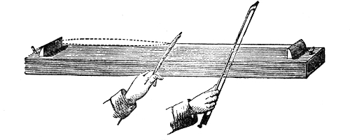
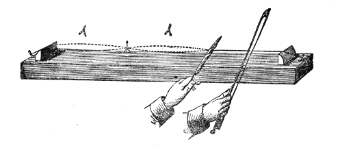
When the string is damped at a point cutting off a third of its length, and the bow is drawn across the shorter section, not only is that section thrown into vibration: the longer section divides itself into two ventral segments with a node between them. This is proved by setting small riders of red paper on the ventral segments and a rider of blue paper at the node. Pass the bow across the short segment and you see the red riders flutter — and now they are thrown clean off, while the blue rider straddling the node is undisturbed (Fig. 42).
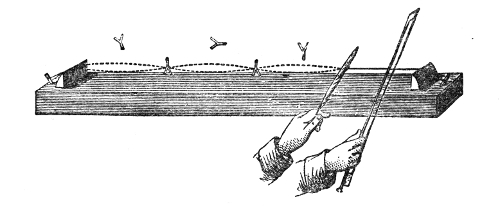
Damping the string a quarter of the way along and drawing the bow across the shorter section, the remaining three-quarters divide into three ventral segments with two nodes between them. This is proved by the unhorsing of the three riders straddling the ventral segments, while the two at the nodes keep their places undisturbed (Fig. 43).
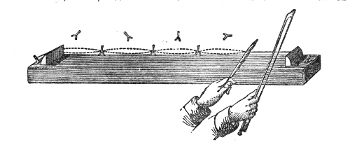
Finally, damping the string a fifth of the way along and setting out, as before, red riders on the ventral segments and blue ones on the nodes, a single sweep of the bow unhorses the four red riders and leaves the three blue ones undisturbed (Fig. 44). In this way we carry out with a sounding string the same series of experiments we carried out earlier with a stretched indiarubber tube, and the results in the two cases are identical.
Footnote: Chladni remarks (Akustik, p. 55) that the discovery of the nodes of vibration belonging to the higher tones of strings is usually credited to Sauveur in 1701; but that Noble and Pigott had made the discovery at Oxford in 1676, and that Sauveur declined the honour of it when he found others had made the observation before him.
To make that identity plainer still, if possible, a stout steel wire 28 feet long is stretched behind the table from one side of the room to the other. I take the central point of this wire between my finger and thumb and let my assistant pluck one half of it aside. It vibrates, and the vibrations passed to the other half are powerful enough to toss a large sheet of paper laid astride the wire into the air. With this long wire, and with riders not of an eighth of a square inch but of 30, 40 or 50 square inches, we can repeat every experiment you have just seen with the musical string. The sheets of paper laid across the nodes always stay where they are, while those straddling the ventral segments are tossed into the air together the moment the shorter segment of the wire is set vibrating. Here, standing close by, you can actually see the wire divide.
It is time now to bring to your notice some recent experiments on vibrating strings which appeal to the eye with a beauty and delicacy far beyond anything our monochord can manage. We owe this new way of displaying the vibrations of strings to M. Melde of Marburg. I shall alter the scale of the experiments to suit our circumstances here.
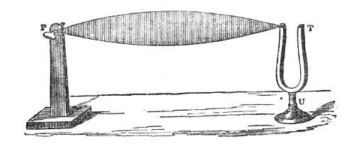
First, then, you see here a large tuning fork, T (Fig. 45), with a small screw fixed in the top of one prong, by which a silk string can be firmly attached to it. From the fork the string runs round a distant peg, P, which can be turned to stretch it to any degree required. Draw the bow across the fork and all you get is an irregular fluttering of the string. Tighten it, though, and at the right tension it opens out into a beautiful gauzy spindle six feet long, more than six inches across at its widest, and shining with a kind of pearly lustre. At this moment the stretching force is such that the string swings to and fro as a whole, its vibrations lying in a vertical plane.
Slacken the string gradually and, when the right tension is reached, it suddenly divides into two ventral segments separated by a sharply defined and apparently motionless node.
If, while the fork goes on vibrating, the string is slackened further, it divides into three vibrating parts. Slacken it more still and it divides into four. And so we might go on subdividing the string into ten, or even twenty, ventral segments, separated by the appropriate number of nodes.
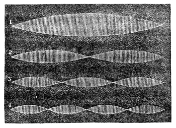
When white silk strings vibrate like this, the nodes look perfectly fixed while the ventral segments make spindles of the most delicate beauty. Every little bulge of the twisted string, moreover, writes its own motion as a more or less luminous line on the surface of the airy gauze. The four modes of vibration just described are shown in Fig. 46, 1, 2, 3, 4.
Footnote: The first experiment actually made in the lecture used a bar of steel 62 inches long, 1½ inches wide and ½ an inch thick, bent into the shape of a tuning fork, with its prongs 2 inches apart and mounted on a heavy stand. The cord attached to it was 9 feet long and a quarter of an inch thick. The prongs were set vibrating by striking them briskly with two pieces of lead covered with pads, one held in each hand. The prongs vibrated crosswise to the cord. The vibrations from a single stroke were enough to carry the cord through several of its subdivisions and back again to a single ventral segment. That is, by striking the prongs and making the cord vibrate as a whole, it could be made — by slackening the tension — to divide into two, three or four vibrating segments, and then, by tightening again, to come back through four, three and two divisions to one, without any fresh shaking of the prongs. The cord was of such a kind that, instead of swinging to and fro in one plane, each of its points described a circle. The ventral segments were therefore not flat surfaces but surfaces of revolution, and were equally well seen from every part of the room. The tuning forks used in the later illustrations were made for me by that excellent acoustic mechanician König of Paris, and are of the sort generally used in projecting Lissajous' experiments.
When fork and string keep perfect step with each other, the vibrations of the string are steady and long sustained. A slight departure from that step, however, brings unsteadiness, and the ventral segments, though they may show themselves for a while, quickly disappear.
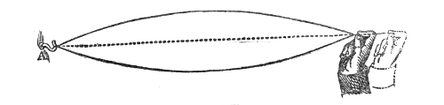
In the experiments just carried out, the fork vibrated along the length of the string. Every forward stroke of the fork raised a bulge, which ran to the fixed end of the string and was reflected there; so that when the lengthwise impulses were properly timed they produced a crosswise vibration. Let us look at that a little further. One end of this heavy cord is attached to a hook A (Fig. 47) fixed in the wall. Taking hold of the other end, I stretch the cord out horizontally and then move my hand to and fro along the direction of the cord. It swings as a whole; and you may notice that whenever the cord is at the limit of its swing, the hand is at its most forward position. If the cord swings in a vertical plane, then to time the impulses properly the hand must be at its forward limit both at the moment the cord reaches the top of its excursion and at the moment it reaches the bottom. A little thought will make it plain that to manage this the hand must make a complete vibration while the cord makes a half one; in other words, the hand must vibrate twice as fast as the cord.
Exactly the same is true of our tuning fork. When the fork vibrates along the direction of the string, the number of vibrations it makes in a given time is twice the number the string itself makes. And if, arranged like this, fork and string vibrate fast enough to give musical notes, the note of the fork will be an octave above the note of the string.
But if instead of moving the hand to and fro along the direction of this heavy cord we move it at right angles to that direction, then every upward movement of the hand goes with an upward movement of the cord, and every downward movement of the hand with a downward movement of the cord. In this case the vibrations of hand and string keep perfect step; and if the hand could give out a musical note, the cord would give a note of the same pitch. The same holds when a vibrating fork takes the place of the vibrating hand.
So if the string vibrates as a whole when the fork's vibrations run along it, it will divide into two ventral segments when they run across it. Put more generally: with the tension kept the same, whatever number of ventral segments the fork produces when it vibrates along the string, twice that number will be produced when it vibrates across the string. For example, the string A B in Figs. 48 and 49, passing over a pulley at B, is stretched by a definite weight (not shown in the figure). When the tuning fork vibrates along it, as in Fig. 48, the string divides into two equal ventral segments. Turn the fork so that it vibrates at right angles to the string and the number of ventral segments is four (Fig. 49) — double the former number. Attach two strings of the same length to the same fork, one of them parallel and the other perpendicular to the direction of vibration, and stretch both with equal weights: when the fork is sounded, one of them divides into twice as many ventral segments as the other.
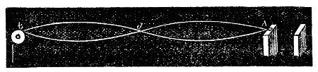
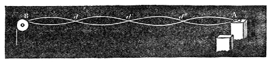
A number of exquisite effects can be got with these vibrating cords. The path traced out by any point of any of them can be studied in Dr. Young's way, by lighting that point up and watching the line of light it describes. This is well shown with a flat burnished silver wire twisted into a spiral surface, from which the light flashes at regular intervals when the wire is lit. When the vibration is steady, the luminous spots draw straight lines of sunlike brilliance. Slacken the wire — but not enough to bring on its next subdivision — and on the larger motion of the wire a host of smaller motions is superposed, the whole combination producing scrolls of marvellous complication and indescribable splendour.
While thinking over the best way of making these effects visible, it occurred to me to use a fine platinum wire raised to a red heat by an electric current. Such a wire is now stretched from a tuning fork over a copper bridge and then round a peg. The copper bridge on the one hand and the tuning fork on the other are the poles of a voltaic battery, whose current passes through the wire and makes it glow. Draw the bow across the fork and the wire vibrates as a whole: its two ends are brilliant while its middle is dark, chilled by its swift passage through the air. So you have the incandescence shading off from the ends of the wire to its centre. Slacken the tension and the wire divides into two ventral segments; slacken further and we get three; further still, and the wire divides into four ventral segments separated by three brilliant nodes. Right and left of every node the incandescence shades away until it disappears. You will notice too, once the wire settles into steady vibration, that the nodes shine out more brightly than the wire did before the vibration began. The reason is this. Electricity passes more freely along a cold wire than a hot one. So when the vibrating segments are chilled by their swift passage through the air, they conduct better, more electricity passes through the vibrating wire than through the motionless one, and hence the increased glow of the nodes. If the wire is at a bright red heat before the fork is sounded, its nodes may be brought to melting point when it vibrates.
We can extend M. Melde's experiments to establish all the laws of vibrating strings. Here are four tuning forks, which we may call a, b, c and d, whose rates of vibration are to one another as the numbers 1, 2, 4, 8. To the largest fork a string is attached, stretched by a weight that makes it vibrate as a whole. Keeping the stretching weight the same, I find the lengths of that same string which, attached to the other three forks b, c and d, swing as a whole. The lengths in the four cases are as the numbers 8, 4, 2, 1.
From this follows the first law of vibration, already established earlier in this chapter by another method: the length of the string is inversely proportional to the rapidity of vibration.
Footnote: A string steeped in a solution of sulphate of quinine and lit by the violet rays of the electric lamp shows brilliant fluorescence. When the fork it is attached to vibrates, the string divides into a series of spindles, separated by more intensely luminous nodes, and gives out a light of the most delicate greenish blue.
In this case the longest string vibrates as a whole when attached to the fork a. Now I move the string to b, still stretched by the same weight. It vibrates when b vibrates — but how? By dividing into two equal ventral segments. That is the only way it can accommodate itself to b's swifter period. Attached to c, the same string separates into four segments; attached to d, into eight. The number of ventral segments is proportional to the rapidity of vibration. Plainly we have here, in a more delicate form, a result we already established with our indiarubber tube set going by the hand. It is plain, too, that this result could have been deduced theoretically from our first law.
We can extend the experiment. Here are two tuning forks separated from each other by the musical interval called a fifth. Attaching a string to one of the forks, I stretch it until it divides into two ventral segments; attached to the other fork and stretched by the same weight, it divides at once into three segments when the fork is sounded. Now to make the interval of a fifth, the vibrations of the one fork must be to those of the other in the ratio of 2 to 3. The division of the string therefore announces the interval. In the same way the division of the string can be made to illustrate all the other musical intervals.
Footnote: Musical intervals will be dealt with in a later lecture.
Again. Here are two tuning forks, a and b, of which a vibrates twice as fast as the other. A silk string is attached to a and stretched until it keeps step with the fork and vibrates as a whole. Here is a second string of the same length, made by laying four strands of the first side by side. I attach this compound thread to b, keep the tension the same as in the last experiment, and set b vibrating. The compound thread keeps step with b and swings as a whole. So, since the fork b vibrates at half the rate of a, by making the string four times as heavy we halved its rate of vibration. In the same simple way it could be proved that making the string nine times as heavy reduces the number of its vibrations to a third. So we demonstrate the law:
The rapidity of vibration is inversely proportional to the square root of the weight of the string.
An instructive confirmation of this result is got as follows. Attached to this tuning fork is a silk string six feet long. Two feet of it are made of four strands of the single thread laid side by side; the remaining four feet are a single thread. A stretching force is applied, which makes the string divide into two ventral segments. But where does it divide? Not at its centre, as it would if the string were of uniform thickness throughout, but at exactly the point where the thick part ends. That thick segment, two feet long, is now vibrating at the same rate as the thin segment four feet long — a result that follows directly from the two laws already established.
Here again are two strings of the same length and thickness. One is attached to the fork a, the other to the fork b, which vibrates twice as fast as a. Stretched by a weight of 20 grains, the string attached to a vibrates as a whole. Putting b in place of a, a weight of 80 grains is needed to make the string vibrate as a whole. So, to double the rapidity of vibration we must quadruple the stretching weight. In the same way it could be proved that to treble the rapidity of vibration we should have to make the stretching weight ninefold. Hence our third law:
The rapidity of vibration is proportional to the square root of the tension.
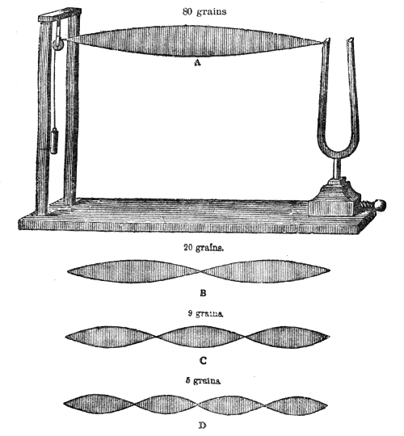
Let us vary this experiment. This silk cord runs from the tuning fork over the pulley and is stretched by a weight of 80 grains. The string vibrates as a whole, as at A in Fig. 50. Reduce the weight and the string slackens, and finally divides sharply into two ventral segments, as at B. What is the stretching weight now? Twenty grains — a quarter of the first. With a stretching weight of almost exactly 9 grains it divides into three segments, as at C; and with a stretching weight of 5 grains into four segments, as at D. So a quarter of the tension doubles the number of ventral segments, a ninth of it trebles them, and a sixteenth quadruples them. In general terms, the number of segments is inversely proportional to the square root of the tension. This result can be reasoned out from our first and third laws, and getting it here confirms that they are right.
So by a series of arguments and experiments totally different from those we used before, we arrive at the very same laws. In science, different lines of reasoning often converge on the same truth; and if we only follow them faithfully we are sure to reach that truth in the end. We may come out of our reasoning — and often do — with a contradiction in our hands; but on retracing our steps we invariably find the contradiction was caused not by any want of constancy in Nature but by a want of accuracy in ourselves. It is the millions of experiences of this kind that science provides which give us our present faith in the stability of Nature.
We now come to a part of our subject which will prove later on to be of the very highest importance. The most varied experiments have shown that a stretched string can either vibrate as a whole or divide itself into a number of equal parts, each vibrating as an independent string. Now it is not possible to sound the string as a whole without at the same time bringing on, to a greater or lesser degree, its subdivision. That is to say, superposed on the vibrations of the whole string we always have, in some degree, the vibrations of its aliquot parts. The higher notes produced by those vibrations are called the harmonics of the string. And so it is with other sounding bodies: in every case we have a coexistence of vibrations. Higher tones mingle with the fundamental one, and it is their mixing that decides what — for want of a better word — we call the quality of the sound. The French call it timbre, the Germans Klangfarbe. It is this union of high and low tones that lets us tell one musical instrument from another. A clarinet and a violin, for instance, though tuned to the same fundamental note, are never confused: the auxiliary tones of the one differ from those of the other, and those tones, joining themselves to the fundamental tones of the two instruments, destroy any sameness in the sounds.
Footnote: "This quality of sound, sometimes called its register, colour, or timbre." — Thomas Young, Essay on Music.
All bodies and instruments used to produce musical sounds, then, give out besides their fundamental tones others belonging to higher orders of vibration. The Germans gather all such sounds under the general term Obertöne. I think it would be an advantage if we in England adopted the term overtones as the equivalent of the German word. One has occasion to envy the power the German language has of adapting itself to needs of this kind. The word Klangfarbe, used by Helmholtz, is exceedingly expressive, and we need an equivalent for it too. Colour depends on rapidity of vibration, blue light standing to red in the same relation as a high tone to a low one. A simple colour has only one rate of vibration, and may be regarded as the analogue of a simple tone in music. A tone, then, may be defined as the product of a vibration that cannot be broken down into simpler ones. A compound colour, on the other hand, is produced by mixing two or more simple ones; and a gathering of tones, such as we get when the fundamental tone and the harmonics of a string sound together, is called by the Germans a Klang. May we not use the English word clang for the same thing, and so give the word a precise scientific meaning close to its popular one? And may we not, like Helmholtz, add the word colour, or tint, to describe the character of the clang, using clang-tint as the equivalent of Klangfarbe?
With your permission I shall use these terms from now on; and now it is our business to look rather more closely than we have so far at how a string divides into its harmonic segments. Our monochord with its stretched wire is before you. The scale of the instrument is divided into 100 equal parts. At the middle point of the wire stands the number 50; at a point almost exactly a third of its length from the end stands 33; and at distances equal to a quarter and a fifth of its length from the end stand 25 and 20. These numbers are enough for our present purpose. Pluck the wire at 50 and you hear its clang, rather hollow and dull. Pluck it at 33 and the clang is different. Pluck it at 25 and the clang is different from either. As we move away from the centre of the string the clang-tint becomes more brilliant, the sound more brisk and sharp. What is the reason for these differences in the sound of the same wire?
The celebrated Thomas Young, once a professor in this Institution, lets us answer the question. He proved that when any point of a string is plucked, all the higher tones that need that point for a node vanish from the clang. Let me show that by experiment. I pluck the point 50 and let the string sound. It can be proved that the first overtone, the one belonging to a division of the string into two vibrating parts, is now absent from the clang. If it were present, damping the point 50 would not disturb it, since that point would be its node. But damp the point 50 and the fundamental tone is quenched, and no octave of that tone is heard. Along with the octave its whole progeny of overtones — those with four times, six times, eight times, all even numbers of times the rate of the fundamental — disappears from the clang. All these tones need a node at the centre, where, by Young's principle, none can now be formed. Let us pluck some other point, say 25, and damp 50 as before. The fundamental tone is gone now, but its octave rings clear and full in your ears. Since 50 was not the point plucked this time, a node can form there; it has formed, and the two halves of the string go on vibrating after the vibration of the string as a whole has been killed. Pluck the point 33 and the second harmonic, or overtone, is absent from the clang. This is proved by damping the point 33. If the second harmonic were on the string, damping would not touch it, for 33 is its node. The fundamental is quenched, but no tone belonging to a division of the string into three vibrating parts is heard. The tone is not heard because it was never there.
All the overtones depending on that division — those with six times, nine times, twelve times the rate of vibration of the fundamental — are also withdrawn from the clang. Now let us pluck 20, damping 33 as before. The second harmonic is not killed but goes on sounding clearly and fully after the fundamental has been put out. Here 33 was not the point plucked, so a node can form there and the string can divide itself into three parts accordingly. In the same way, if 25 is plucked and then damped, the third harmonic is not heard; but pluck a point between 25 and the end of the wire, damp the point 25, and the third harmonic is plainly heard. And so we might go on. The general rule Young stated, and these experiments illustrate, is that when any point of a string is plucked or struck — or, as Helmholtz adds, sounded with a bow — the harmonic that needs that point for a node vanishes from the general clang of the string.
You are now in a position to judge what influence these higher vibrations must have on the quality of the tone the string gives out. The sounds that ring so plainly in your ears after the fundamental tone is quenched were mingled with that note before it was put out. It seems strange that tones of such power could be so masked by the fundamental that even a musician's trained ear cannot separate the one from the other. But Helmholtz has shown that this comes from want of practice and attention. The musician's faculties were never exercised in that direction. There are plenty of effects a musician can distinguish, because his art demands the habit of distinguishing them. But his art never requires him to resolve the clang of an instrument into the tones it is made of. With attention, though, even the unaided ear can do it — particularly if the mind is told beforehand what the ear is to look for.
That reminds me of something that happened in this room at the beginning of my acquaintance with Faraday. I wanted to show him a peculiar action of an electromagnet on a crystal. Everything was arranged, when just before the magnet was excited he laid his hand on my arm and asked, "What am I to look for?" Amid the crowd of impressions that go with an experiment, even this prince of experimenters felt the advantage of having his attention pointed at the particular thing to be shown. Such help is needed all the more when we try to resolve into its parts an effect as intimately blended as the composite tones of a clang. When we want to isolate a particular tone, one way of helping the attention is to sound that tone faintly on a string of the proper length. Prepared like that, the ear slides more easily from the single tone to one of the same pitch inside a composite clang, and picks it out from its companions more readily. In the experiments we did a moment ago, where the aim each time was to bring out the higher tone of the string in all its power, we killed the fundamental tone entirely. But it can be weakened without being destroyed. I pluck this string at 33 and lay the feather lightly on the string at 50 for a moment. The fundamental tone is thereby lowered so much that its octave can make itself plainly heard. Touch the string at 50 again and the fundamental is lowered further still, so that its first harmonic is now stronger than the fundamental itself. You hear both — and you could have heard them at the start with a sufficient stretch of attention.
The harmonics of a string can be strengthened or subdued within wide limits. They may, as we have seen, be masked by the fundamental tone, and they may also mask it effectively. A stroke with a hard body helps them; a stroke with a soft body hinders them. They depend, too, on how promptly the striking body draws back after the blow, and so are affected by the weight and elasticity of the hammers in a pianoforte. They depend also on where the blow falls. When a string is struck at the centre, for instance, the harmonics are weaker than when it is struck near one end.
Helmholtz, who is as eminent a mathematician as he is an experimental philosopher, has calculated the theoretical intensity of the harmonics developed in various ways — that is, the actual vis viva, or energy, of the vibration, quite apart from its effect on the ear. A single example of his will be enough to illustrate the matter. Calling the intensity of the fundamental tone 100 in each case, the intensity of the second harmonic — when the string was simply pulled aside at a point one-seventh of its length from the end and then let go — was found to be 56·1, or a little better than half. When the string was struck with a pianoforte hammer whose contact with the string lasted three-sevenths of the period of vibration of the fundamental, the intensity of that same tone was 9. In that case the second harmonic was nearly quenched. When, however, the contact was shortened to three-twentieths of the fundamental's period, the intensity of the harmonic rose to 357; and when the string was struck sharply with a very hard hammer, the intensity climbed to 505, or more than five times that of the fundamental tone. Pianoforte makers have found that the most pleasing tone comes from the middle strings of their instruments when the point the hammer strikes is between one-seventh and one-ninth of the length of the wire from its end.
Footnote: Lehre von den Tonempfindungen, p. 135.
Why should that be so? Helmholtz has given the answer. Up as far as the tones that need these points for nodes, the overtones all make chords with the fundamental; but the sixth and eighth overtones of the wire do not enter into such chords. They are dissonant tones, and hence the value of getting rid of them. That is managed by making the point where a node would be needed the very point the hammer falls on. The tone is thereby prevented from forming at all, and its harmful effect is avoided.
The strings of the Aeolian harp are divided into harmonic parts by a current of air passing over them. The instrument is usually set in a window between the sash and the frame, so as to leave the air no way in except over the strings. Sir Charles Wheatstone recommends stretching a first violin string along the bottom of a door that does not fit closely. When the door is shut, the current of air coming in underneath sets the string vibrating; and when there is a fire in the room the vibrations are so intense that a great variety of sounds are produced at once. A gentleman in Basel once built a large instrument of iron wires which he called the weather harp, or giant harp, and which, according to its maker, sounded as the weather changed. Its sounds were also said to be called out by changes in terrestrial magnetism. Chladni pointed out the error in these notions and reduced the working of the instrument to the action of the wind on its strings.
Footnote: The action of such a string is essentially the same as the siren's: the string makes the current of air intermittent. Its action also resembles that of a reed. See Chapter Five.
Finally, as regards the vibrations of a wire, we must mention the experiments of Dr. Young, who was the first to use optical methods in such work. He let a sheet of sunlight cross a pianoforte wire, and so got a brilliant dot. Striking the wire, he set it vibrating, and the dot drew out a luminous line like the one you get by whirling a burning coal in the air; and the shape of that line revealed the character of the vibration. These experiments made it plain that the swings of the wire were not confined to a single plane, but that in vibrating it described curves of greater or lesser complexity. Superposed on the vibration of the whole string were partial vibrations, which showed themselves as loops and waverings. Some of the lines Dr. Young observed are given in Fig. 51. Every one of these figures answers to a distinct impression made by the wire on the surrounding air. The shape of the sonorous wave is affected by these superposed vibrations, and so they influence the clang-tint, or quality, of the sound.
The amount of motion a vibrating string gives to the air is too small to be perceived as sound, even a short distance from the string.
When a broad surface vibrates in air, condensations and rarefactions are formed more readily than when the vibrating body is small, like a string. So when strings are used as sources of musical sound, they are joined to surfaces of larger area, which take up their vibrations and pass them on to the surrounding air.
The tone of a harp, a piano, a guitar or a violin therefore depends mainly on the sound board of the instrument.
The following four laws govern the vibrations of strings. The rate of vibration is inversely proportional to the length; it is inversely proportional to the diameter; it is directly proportional to the square root of the stretching weight, or tension; and it is inversely proportional to the square root of the density of the string.
When strings of different diameters and densities are compared, the law is that the rate of vibration is inversely proportional to the square root of the weight of the string.
When a stretched rope, or an indiarubber tube filled with sand, has one end fastened to a fixed object and gets a jerk at the other end, the bulge raised on the tube runs along it as a pulse to the fixed end and, reflected there, returns to the hand that gave the jerk.
The time the pulse takes to travel from the hand to the fixed end of the tube and back is the time the whole tube takes to make one complete vibration.
When a series of pulses is sent along the tube one after another, the direct and reflected pulses meet, and by running together divide the tube into a series of vibrating parts called ventral segments, separated from one another by points of apparent rest called nodes.
The number of ventral segments is directly proportional to the rate of vibration at the free end of the tube.
The hand producing these vibrations may move through less than an inch, while by the accumulation of its impulses the amplitude of the ventral segments may run to several inches, or even several feet.
If an indiarubber tube fixed at both ends is encircled at its centre by finger and thumb, then when either half is pulled aside and let go, both halves are thrown into vibration.
If the tube is encircled at a point a third, a quarter or a fifth of its length from one end, then on pulling the shorter segment aside and letting it go, the longer segment divides itself into two, three or four vibrating parts separated by nodes.
The number of vibrating segments depends on the rate of vibration at the point encircled by the finger and thumb.
Here too the amplitude of vibration at the encircled point may be no more than a fraction of an inch, while the amplitude of the ventral segments may run to several inches.
A musical string damped with a feather at a point a half, a third, a quarter, a fifth and so on of its length from one end, and sounded on its shorter segment, divides itself exactly as the indiarubber tube does. The division can be made visible by laying little paper riders across it: those on the ventral segments are thrown off, while those at the nodes keep their places.
The notes belonging to the division of a string into its aliquot parts are called the harmonics of the string.
When a string vibrates as a whole, it usually divides into its aliquot parts at the same time. Smaller vibrations are superposed on the larger, and the tones belonging to those smaller vibrations — the ones we have agreed to call overtones — mingle with the fundamental tone of the string.
The addition of these overtones to the fundamental tone decides the timbre, or quality, of the sound — or, as we have agreed to call it, the clang-tint.
It is the addition of such overtones to fundamental tones of the same pitch that lets us tell the sound of a clarinet from that of a flute, and the sound of a violin from both. If the pure fundamental tones of these instruments could be detached, they would be indistinguishable from one another; but the different mixtures of overtones in the different instruments make their clang-tints different, and so distinguishable.
Instead of the heavy indiarubber tube in the experiments referred to above, we may use light silk strings, and instead of the vibrating hand we may use vibrating tuning forks, and make the strings swing as a whole or divide into any number of ventral segments. Effects of great beauty are got this way, and by experiments of this kind all the laws of vibrating strings can be demonstrated.
When a stretched string is plucked aside or sounded with a bow, all the overtones that need the disturbed point for a node vanish from the clang of the string.
The point struck by the hammer of a piano is between one-seventh and one-ninth of the length of the string from its end. By striking that point, the notes that would need it for a node cannot be produced, and a source of dissonance is thereby avoided.
The vibrations of a rod fixed at both ends: how it subdivides, and the overtones that go with the subdivisions — The vibrations of a rod fixed at one end — The kaleidophone — The iron fiddle and the musical box — The vibrations of a rod free at both ends — The claque-bois and the glass harmonica — The vibrations of a tuning fork: its subdivisions and overtones — The vibrations of square plates — Chladni's discoveries — Wheatstone's analysis of the vibrations of plates — Chladni's figures — The vibrations of disks and bells — The experiments of Faraday and Strehlke
Our last chapter was given to the crosswise vibrations of strings. This one I propose to give to the crosswise vibrations of rods, plates and bells, beginning with the case of a rod fixed at both ends. Its modes of vibration are exactly those of a string: it vibrates as a whole, and it can also divide itself into two, three, four or more vibrating parts. But for a reason I shall give in a moment, the laws governing the pitch of the successive notes are entirely different in the two cases. When a string divides into two equal parts, each half vibrates twice as fast as the whole; whereas with the rod, each half vibrates nearly three times as fast as the whole. More strictly, the ratio of the two rates of vibration is as 9 to 25 — as the square of 3 to the square of 5. In Fig. 52, a a′, c c′, b b′ and d d′ show the first four modes of vibration of a rod fixed at both ends, and the successive rates of vibration in the four cases stand to one another like this:
Number of nodes 0 1 2 3
Number of vibrations 9 25 49 81
the lower row being the squares of the odd numbers 3, 5, 7, 9.
In a string the vibrations are kept up by a tension applied from outside; in a rod they are kept up by the elasticity of the rod itself. The modes of division are the same in both cases, but the forces brought into play are different — and so, in consequence, are the successive rates of vibration.
Let us now go on to the case of a rod fixed at one end and free at the other. Here too it is the elasticity of the material, and not any outside tension, that keeps the vibrations going. Coming at sonorous vibrations, as usual, by way of coarser mechanical ones, I fix this long iron rod, n o (Fig. 53), in a vice, draw it aside and let it go. To make its vibrations plainer, its shadow is thrown on a screen. The rod swings to and fro as a whole between the points p and p′. But other modes of vibration are open to it. Damp it at the point a, by holding it gently there between finger and thumb, and strike it sharply between a and o, and the rod divides into two vibrating parts separated by a node, as in Fig. 54. On the screen you see a shadowy spindle between a and the vice below, and a shadowy fan above a, with a black node between the two. The division can be brought about without damping a at all, simply by giving the rod a sharp enough blow between a and o. In that case, though, besides swinging in parts the rod swings as a whole, the partial swings being superposed on the large one.
You will notice, moreover, that the amplitude of the partial swings depends on how sharp the stroke is. With a sluggish stroke the partial division is only faintly marked and the swing as a whole dominates. But with a sharp, prompt shock the whole swing is feeble and the partial swings are performed vigorously. If the vibrations of this rod were fast enough to give a musical sound, the swing of the rod as a whole would answer to its fundamental tone, while the division of the rod into two vibrating parts would answer to the first of its overtones. And if the rod vibrated as a whole and in parts at the same time, the fundamental tone and the overtone would be heard together. By damping the right point and giving the right shock we can subdivide the rod further still, as shown in Fig. 55.
Now let us shorten our rod, so as to bring its vibrations into the proper relation to our ears. At about four inches long it gives out a low musical sound. Shorten it further and the tone is higher; and by going on shortening the rod the speed of vibration is increased, until at last the sound becomes painfully shrill. These musical vibrations differ only in rapidity from the coarser swings that appealed to the eye a moment ago.
The increase in the rate of vibration observed here is governed by a definite law: the number of vibrations made in a given time is inversely proportional to the square of the length of the vibrating rod. You hear the sound of this strip of brass, two inches long, as the fiddle bow is drawn across its end. Make the strip one inch long and the sound is the double octave of the last: the rate of vibration is increased four times. So by doubling the length of the vibrating strip we reduce its rate of vibration to a quarter; by trebling the length we reduce it to a ninth; by quadrupling the length we reduce it to a sixteenth, and so on. Plainly, going on this way, we should at last reach a length at which the vibrations were slow enough to be counted. And plainly, too, beginning with a long strip whose vibrations could be counted, we could by shortening it not only make the strip sound but also find the rates of vibration belonging to its different tones. Suppose we start with a strip 36 inches long that vibrates once a second: cut down to 12 inches it would, by the law above, make 9 vibrations a second; cut to 6 inches, 36; to 3 inches, 144; and cut to 1 inch it would make 1,296 vibrations a second. It is easy to fill in the gaps between the lengths given here, and so to find the rate of vibration belonging to any particular tone. This method was proposed and carried out by Chladni.
A musical instrument can be built out of short rods. Into this common wooden tray a number of pieces of stout iron wire of different lengths are fixed, ranged in a semicircle. Draw the fiddle bow across the series and we get a run of very pleasing notes. A competent performer could certainly get quite tolerable music out of enough of these iron pins. That is how the iron fiddle — the violon de fer — is made. The notes of an ordinary musical box are also produced by the vibration of metal tongues fixed at one end. Pins are set in a revolving cylinder; the free ends of the tongues are lifted by those pins and then suddenly let go. The tongues vibrate, their length and stiffness being so arranged as to give in each case the proper rate of vibration.
Sir Charles Wheatstone has devised a simple and ingenious optical method for studying vibrating rods fixed at one end. Fastening light glass beads, silvered inside, to the end of a metal rod, and letting the light of a lamp or candle fall on the bead, he got a small, intensely bright spot. When the rod vibrated, the spot drew a brilliant line that showed the character of the vibration. A knitting needle fixed in a vice with a small bead stuck on it with marine glue answers perfectly for an illustration. In Wheatstone's more complete instrument, which he calls a kaleidophone, the vibrating rods are screwed firmly into a massive stand. Extremely beautiful figures are got by this simple contrivance, and some of them can now be thrown, magnified, on the screen before you.
Fixing the rod horizontally in the vice, a concentrated beam is allowed to fall on the silvered bead, giving a spot of sunlike brilliance. A lens set in front of the bead throws a bright image of the spot on the screen; the needle is then drawn aside and suddenly released. The spot draws out a ribbon of light — straight at first, but soon opening into an ellipse, passing into a circle, and then back through a second ellipse to a straight line again. This is because a rod held in a vice like this vibrates not only in the direction it was drawn aside but also at right angles to that direction. The curve comes from the combination of two vibrations at right angles. And while the rod is swinging as a whole it may also divide itself into vibrating parts. Draw a violin bow across the needle in the right way and you get this serrated circle (Fig. 56), with a number of small undulations superposed on the large one. You hear a musical tone too, which you did not hear while the rod was vibrating only as a whole; its swings were then too slow to excite such a tone. The vibrations that produce these little waves, and that answer to the first division of the rod, are made about 6¼ times as fast as the vibrations of the rod swinging as a whole. I draw the bow again: the note rises in pitch, the teeth run closer together, making on the screen a luminous ripple finer and — if possible — more beautiful than the last (Fig. 57). Here we have the second division of the rod, whose ripples answer to 17 13/36 times its rate of vibration as a whole. So every change in the sound of the rod is accompanied by a change in the figure on the screen.
Footnote: Chladni also observed this compounding of vibrations, and carried out a series of experiments which, fully worked out, are those of the kaleidophone. The composition of vibrations will be studied at some length in a later lecture.
The rate of vibration of the rod as a whole stands to the rate belonging to its first division nearly as the square of 2 to the square of 5, or 4 to 25. From the first division onward the rates of vibration are approximately proportional to the squares of the odd numbers 3, 5, 7, 9, 11 and so on. Supposing the vibrations of the rod as a whole to number 36, then the vibrations belonging to that and to its successive divisions would be given approximately by this series of numbers:
36, 225, 625, 1225, 2025, etc.
In Fig. 58, a, b, c, d, e show the modes of division that go with this series of numbers. You will not fail to notice that these overtones of a vibrating rod climb in pitch far faster than the harmonics of a string.
Other forms of vibration can be got by striking the rod smartly with the finger near its fixed end. Indeed an almost endless variety of luminous scrolls can be produced this way, and their beauty may be judged from the figures given below, first obtained by Sir C. Wheatstone. They can be produced by lighting the bead with sunlight, or with a lamp or a candle. The scrolls can even be doubled by using two candles instead of one. Two spots of light then appear, and each draws its own luminous line when the knitting needle is set vibrating. In a later lecture we shall meet Wheatstone's application of his method to the study of vibrations at right angles to each other.
From a rod or bar fixed at one end we pass now to rods or bars free at both ends, for that arrangement too has been used in music. By a method to be described later, Chladni, the father of modern acoustics, worked out experimentally the modes of vibration open to such bars. The simplest mode of division here is when the rod is divided by two nodes into three vibrating parts. That division is easily shown with a flexible box rule six feet long. Hold it about twelve inches from each end between the forefinger and thumb of each hand and shake it, or have its centre struck: it vibrates, the middle segment forming a shadowy spindle and the two ends forming fans. The shadow of the rule on the screen makes the mode of vibration very plain. In this case the distance of each node from the end of the rule is about a quarter of the distance between the two nodes. In its second mode of vibration the rod, or rule, is divided into four vibrating parts by three nodes. Fig. 60, 1 and 2, shows these two modes of division. Looking at the edge of the rule in 1, the dotted lines cutting a a′ and b b′ show how the segments bend up and down in the first division, while c c′ and d d′ show the mode of vibration belonging to the second. The deepest tone of a rod free at both ends is higher than the deepest tone of a rod fixed at one end in the proportion of 4 to 25. Beginning with the first two nodes, the rates of vibration of the free bar climb in this proportion:
Number of nodes 2, 3, 4, 5, 6, 7
Numbers to the squares of which the pitch 3, 5, 7, 9, 11, 13
is approximately proportional
Here too we have a rise of pitch as rapid as the one noticed in the last two cases.
For musical purposes only the first division of a free rod has been used. When bars of wood of different lengths, widths and thicknesses are strung along a cord that passes through the nodes, we have the claque-bois of the French, the instrument now before you, A B (Fig. 61). Supporting the cord at one end by a hook, k, and holding it at the other in my left hand, I run the hammer h along the row of bars and produce an agreeable run of musical tones. Instead of a cord, the bars may rest at their nodes on cylinders of twisted straw — hence the name "straw fiddle" sometimes given to the instrument. Chladni tells us it is brought in as a play of bells (Glockenspiel) in Mozart's opera Die Zauberflöte. If we use strips of glass instead of bars of wood, we have the glass harmonica.
From the vibrations of a bar free at both ends it is easy to pass to the vibrations of a tuning fork, as Chladni analysed them. Let a a in Fig. 62 stand for a straight steel bar, with the nodal points belonging to its first mode of division marked by the crosswise dots. Bend the bar into the form b b: the two nodal points are still there, but they have moved closer together. The tone of the bent bar is also somewhat lower than that of the straight one. Passing through further stages of bending, c c and d d, we turn the bar at last into a tuning fork, e e, with parallel prongs. It still keeps its two nodal points — but they are now much closer together than when the bar was straight.
When such a fork sounds its deepest note, its free ends swing as in Fig. 63, where the prongs vibrate between the limits b and n, and f and m, with p and q as the nodes. There is no division of a tuning fork answering to the division of a straight bar by three nodes. In its second mode of division, which answers to the first overtone of the fork, we have a node on each prong and two at the bottom. Young's principle, mentioned in our last chapter, extends to tuning forks as well: to free the fundamental tone from an overtone, you draw your bow across the fork at the place where the node for that overtone would have to form. In the third mode of division there are two nodes on each prong and one at the bottom; in the fourth there are two nodes on each prong and two at the bottom; and in the fifth there are three nodes on each prong and one at the bottom. The first overtone of the fork requires, according to Chladni, 6¼ times the number of vibrations of the fundamental tone.
The overtones of tuning forks are easily called out. Here, for instance, is our old series, vibrating 256, 320, 384 and 512 times a second. Going from the fundamental tone to the first overtone of each, you notice that the interval is vastly greater than the one between the fundamental tone and the first overtone of a stretched string. From the numbers just given we jump straight to 1,600, 2,000, 2,400 and 3,200 vibrations a second. Chladni's numbers, though, correct as they are roughly, are not always borne out strictly by experiment. A pair of forks may have their fundamental tones in perfect unison and their overtones discordant. Two such forks are now before you. Sound the fundamental tones of both and the unison is perfect; sound the first overtones of both and they are not in unison. You hear rapid "beats" that grate on the ear. By loading one fork with wax the two overtones can be brought into unison — but now the fundamental tones produce loud beats when sounded together. This could not happen if the first overtone of each fork were produced by a number of vibrations exactly 6¼ times the rate of its fundamental. In a series of forks examined by Helmholtz, the number of vibrations of the first overtone varied from 5·6 to 6·6 times that of the fundamental.
Starting with the first overtone and counting it in, the rates of vibration of the whole series of overtones are as the squares of the numbers 3, 5, 7, 9 and so on. That is, in the time the first overtone takes to make 9 vibrations, the second makes 25, the third 49, the fourth 81, and so on. So the overtones of a fork climb far faster than those of a string. They also die away sooner, and therefore adulterate the fundamental tone less by mixing with it.
Chladni's device for making these sonorous vibrations visible has been of immense importance to the science of acoustics. Lichtenberg had made the experiment of scattering an electrified powder over an electrified cake of resin, the way the powder arranged itself revealing the electrical state of the surface. That experiment gave Chladni the idea of making sonorous vibrations visible with sand strewn over the surface of the vibrating body. Chladni's own account of his discovery is interesting enough to be worth giving here:
"As an admirer of music, the elements of which I had begun to learn rather late, that is, in my nineteenth year, I noticed that the science of acoustics was more neglected than most other portions of physics. This excited in me the desire to make good the defect, and by new discovery to render some service to this part of science. In 1785 I had observed that a plate of glass or metal gave different sounds when it was struck at different places, but I could nowhere find any information regarding the corresponding modes of vibration. At this time there appeared in the journals some notices of an instrument made in Italy by the Abbé Mazzochi, consisting of bells, to which one or two violin-bows were applied. This suggested to me the idea of employing a violin-bow to examine the vibrations of different sonorous bodies. When I applied the bow to a round plate of glass fixed at its middle it gave different sounds, which, compared with each other, were (as regards the number of their vibrations) equal to the squares of 2, 3, 4, 5, etc.; but the nature of the motions to which these sounds corresponded, and the means of producing each of them at will, were yet unknown to me. The experiments on the electric figures formed on a plate of resin, discovered and published by Lichtenberg, in the memoirs of the Royal Society of Göttingen, made me presume that the different vibratory motions of a sonorous plate might also present different appearances, if a little sand or some other similar substance were spread over the surface. On employing this means, the first figure that presented itself to my eyes upon the circular plate already mentioned resembled a star with ten or twelve rays, and the very acute sound, in the series alluded to, was that which agreed with the square of the number of diametrical lines."
Let me now illustrate Chladni's experiments, beginning with a square plate of glass held by a suitable clamp at its centre. The plate might be held between finger and thumb if only they could reach far enough. Scattering fine sand over the plate, I damp the middle point of one of its edges by touching it with a fingernail, and draw a bow across the edge of the plate near one of its corners. The sand is tossed away from certain parts of the surface and gathers along two nodal lines which divide the big square into four smaller ones, as in Fig. 64. This division of the plate answers to its deepest tone.
The signs + and − in these figures mean that the two squares carrying them are always moving in opposite directions. When the squares marked + are above the average level of the plate, those marked − are below it; and when those marked − are above the level, those marked + are below. The nodal lines mark the boundaries between these opposing motions. They are the places of changeover from one motion to the other, and so are moved by neither.
Scattering sand over the surface once more, I damp one of the corners of the plate and sound it by drawing the bow across the middle of one of its sides. The sand dances over the surface and finally ranges itself in two sharply defined ridges along the diagonals (Fig. 65). The note produced here is a fifth above the last. Damping two other points again and drawing the bow across the centre of the opposite side of the plate, we get a far shriller note than in either of the earlier cases, and the way the plate vibrates to produce it is shown in Fig. 66.
So far we have used plates of glass held by a clamp at the centre. Plates of metal suit such experiments even better. Here is a brass plate 12 inches square, mounted on a suitable stand. Damping it with the finger and thumb of my left hand at two points of its edge, and drawing the bow with my right across a vibrating part of the opposite edge, I get the complicated pattern shown in Fig. 67.
The beautiful series of patterns given here was obtained by Chladni by damping and sounding square plates in different ways. It is not merely interesting but startling to see how suddenly these sharply defined figures form under the sweep of a skilful experimenter's bow.
Now let us look a little more closely into the mechanics of these vibrations. How a bar free at both ends divides itself when it vibrates crosswise has already been explained. Rectangular pieces of glass or sheet metal — the glass strips of
the harmonica, for example — obey the laws of free rods and bars too. Fig. 69 shows a rectangle, a, with the nodes belonging to its first division marked on it, and underneath a figure showing how the rectangle, seen edge-on, bends up and down when it is set vibrating. The bending is greatly exaggerated for the sake of clearness. The figures b and c show that the vibrating parts of the plate rise above and fall below the average level of the plate by turns. At one moment, for instance, the centre of the plate is above the level and its ends below, as at b; at the next moment the centre is below and the two ends above, as at c. The vibration of the plate consists in taking up these two positions in quick succession. The same remarks apply to all the other modes of division.
Footnote: I copy this figure from Sir C. Wheatstone's memoir; the nodes, however, ought to be nearer the ends, and the free end portions of the dotted lines ought not to be bent upward or downward. The nodal lines in the next two figures are also drawn too far from the edge of the plates.
Now suppose the rectangle gradually widens until it becomes a square. There would then be no reason why the nodal lines should form parallel to one pair of sides rather than the other. So let us examine what would happen if two such systems of vibration were run together.
To keep your ideas clear, take two squares of glass and draw on each of them the nodal lines belonging to a rectangle. Draw the lines on one plate in white and on the other in black; that will help you keep the plates distinct in your mind as you look at them. Now lay one square on the other so that their nodal lines coincide, and then picture both plates vibrating with perfect mental clearness. Assume first that the vibrations of the two plates run together — that the middle segment and the end segments of each rise and fall in step — and now suppose the vibrations of one plate transferred to the other. What would follow? Plainly vibrations of double the amplitude on the part of the plate that received the addition. But suppose the vibrations of the two plates, instead of running together, were in exact opposition — that when the middle segment of the one rises the middle segment of the other falls. What would follow from adding them? Plainly the cancelling of all vibration.
Instead of laying the plates so that their nodal lines coincide, set those lines at right angles to each other — that is, push A over A′ (Fig. 70). In these figures the letter P means positive, indicating that in the section where it stands the plate is moving upward, while N means negative, indicating a downward motion. You now have before you a kind of chequer pattern, shown in the third square: a square s in the middle, a smaller square b at each corner, and four rectangles at the middles of the four sides. Let the plates vibrate, with the vibrations of the matching sections running together, as the letters P and N indicate; then suppose the vibrations of one transferred to the other. What must follow? A moment's thought will show you that the big middle square s will vibrate with increased energy, and so will the four smaller squares b, b, b, b at the four corners; but you will at once satisfy yourselves that the vibrations in the four rectangles are in opposition, and that where their amplitudes are equal they will destroy each other. The middle point of each side of the glass plate would therefore be a point of rest, and so would the points where the nodal lines of the two plates cross. Draw a line through every three of these points and you get a second square inscribed inside the first. The sides of that square are lines of no motion.
So far we have been theorising. Now let us clamp a square plate of glass at a point near the centre of one of its edges and draw the bow across the neighbouring corner. When the glass is uniform throughout, a close approximation to this inscribed square is obtained. The reason is that when the plate is sounded this way the two sets of vibrations we have been considering really do coexist in it, and produce the figure their combination calls for.
Again, lay the squares of glass one on the other exactly as in the last case, but now, instead of supposing their vibrations to run together, let the matching sections oppose each other — that is, let A cover A′ (Fig. 71). Then plainly, on superposing the vibrations, the middle point of our middle square must be a point of rest, since there the vibrations are equal and opposite. The crossings of the nodal lines are points of rest too, and so is every corner of the plate itself, for there also the added vibrations are equal and opposite. We have thus fixed four points of rest on each diagonal of the square. Draw the diagonals and they give the nodal lines that follow from superposing the two vibrations.
These two systems really do coexist in the same plate when the centre is clamped and one of the corners touched while the fiddle bow is drawn across the middle of one of the sides. In that case the sand marking the lines of rest arranges itself along the diagonals. That, in its simplest possible form, is Sir C. Wheatstone's analysis of these superposed vibrations.
Going from square plates to round ones, we get various beautiful effects too. This brass disk is mounted horizontally on an upright stand; it is blackened, and fine white sand is scattered lightly over it. The disk can divide itself in various ways and give out notes of various pitch. I sound the lowest fundamental note of the disk by touching its edge at a certain point and drawing the bow across the edge at a point 45° away from the damped one. You hear the note and you see the sand. It leaves the four quadrants of the disk and ranges itself along two of the diameters (Fig. 72, A). When a disk divides itself into four vibrating segments like this, it sounds its deepest note. I stop the vibration, clear the disk and scatter sand over it again. Damping its edge and drawing the bow across at a point 30° away from the damped one, the sand at once arranges itself into a star. Here we have six vibrating segments, separated by their proper nodal lines (Fig. 72, B). Again I damp a point and sound another closer to the damped one than last time: the disk divides into eight vibrating segments with lines of sand between them (Fig. 72, C). In this way the disk can be subdivided into ten, twelve, fourteen, sixteen sectors, the number of sectors always being even. As the division gets finer the vibrations get faster and the pitch rises accordingly. The note given out by the sixteen segments the disk is now divided into is so shrill as to be almost painful to the ear. Here you have Chladni's first discovery. You can understand his emotion at seeing this wonderful effect, "which no mortal had previously seen." By leaving the centre of the disk free and damping suitable points of the surface, nodal circles and other curved lines can be obtained.
The rate of vibration of a disk is directly proportional to its thickness and inversely proportional to the square of its diameter. Of these three disks, two have the same diameter but one is twice as thick as the other; two are of the same thickness but one is half the diameter of the other. By the law just stated, the rates of vibration of the disks are as the numbers 1, 2, 4. Sound them one after another and the musical ears present can testify that they really do stand to one another as a note, its octave and its double octave.
The actual travel of the sand towards the nodal lines can be studied by clogging the sand with a half-fluid substance. When gum is used to slow the particles down, the curves each of them describes are very clearly drawn on the plates. M. Strehlke has sketched these appearances, and the patterns A, B and C in Fig. 73 are borrowed from him.
Here we must notice an effect of vibrating plates that long puzzled experimenters. When a little fine dust — say the fine seed of lycopodium — is mixed with the sand strewn over a plate, this light substance, instead of gathering along the nodal lines, forms little heaps at the places of most violent motion. It heaps up at the four corners of the plate (Fig. 74), at the four sides of the plate (Fig. 75), and in the spaces between the nodal lines (Fig. 76). These three figures show the three states of vibration illustrated in Figs. 64, 65 and 66. In every case the dust chooses the place of greatest agitation. Various explanations of this effect had been offered, but it was left to Faraday to give its extremely simple cause. The light powder is caught up by the little whirlwinds of air the vibrations of the plate produce: it cannot escape from those little cyclones, whereas the heavier sand grains are driven straight through them. So when the motion stops, the light powder settles at the places where the vibration was greatest. In a vacuum no such effect is seen: there all powders, light and heavy alike, travel to the nodal lines.
The vibrating segments and nodes of a bell are like those of a disk. When a bell sounds its deepest note, its pulses run together and make it divide into four vibrating segments separated by four nodal lines, which run up from the sound-bow to the
crown of the bell. The place the hammer strikes is always the middle of a vibrating segment, and the point diametrically opposite is the middle of one too. Ninety degrees away from those points there are vibrating segments as well, while 45 degrees to the right and left of them we come on the nodal lines. Let the strong dark circle in Fig. 77 stand for the circumference of the bell at rest. Then when the hammer falls on any one of the segments a, c, b or d, the sound-bow passes over and over through the changes the dotted lines show. At one moment it is an oval with a b for its longest diameter; at the next it is an oval with c d for its longest diameter. The changes from one oval to the other are in fact the vibrations of the bell. The four points n, n, n, n where the two ovals cross are the nodes. As with a disk, the number of vibrations a bell makes in a given time varies directly as its thickness and inversely as the square of its diameter.
Like a disk, again, a bell can divide itself into any even number of vibrating segments, but never into an odd number. By damping the proper points one after another, the bell can be made to divide into 6, 8, 10 and 12 vibrating parts. Beginning with the fundamental note, the number of vibrations belonging to the successive divisions of a bell — as of a disk — runs like this:
Number of divisions 4, 6, 8, 10, 12
Numbers whose squares give the rates 2, 3, 4, 5, 6
of vibration
So if the vibrations of the fundamental tone number 40, those of the next higher tone will be 90, the next 160, the next 250, the next 360, and so on. If the bell is thin, the tendency to subdivide is so strong that it is almost impossible to bring out the pure fundamental tone without the higher ones mixed in.
I will now repeat before you a homely but instructive experiment. This common jug, when a fiddle bow is drawn across its edge, divides into four vibrating segments exactly like a bell. The jug has a handle, and you are to notice what that handle does to the tone. Draw the fiddle bow across the edge at a point diametrically opposite the handle and a certain note is heard. Draw it at a point 90° from the handle and the same note is heard. In both cases the handle sits at the middle of a vibrating segment, loading that segment with its weight. But now I draw the bow 45° away from the handle, and the note is noticeably higher than before. This time the handle sits at a node; it no longer loads a vibrating segment, so the elastic force, having less weight to deal with, produces a faster vibration. Chladni performed with a teacup the experiment I have just made with a jug. Now bells often show, round their sound-bows, a want of uniform thickness that amounts to the same thing as the want of symmetry in our jug; and we shall learn later on that the throbbing sound of many bells — noticed particularly as their tones die away — is produced by the combination of two distinct rates of vibration arising from just that want of uniformity.
There are no points of absolute rest in a vibrating bell, for the nodes of the higher tones are not those of the fundamental. But it is easy to show that the various parts of the sound-bow, when the fundamental tone is dominant, vibrate with very different degrees of intensity. Hang a little ball of sealing wax, a (Fig. 78), by a string and let it rest gently against the inner surface of an inverted bell, and it is tossed to and fro when the bell is set vibrating. But the rattling of the sealing-wax ball is far more violent when it rests against the vibrating segments than when it rests against the nodes. Letting the ivory bob of a short pendulum rest in turn against a vibrating segment and against a node of the Great Bell of Westminster, I found that in the first position it was driven away five inches, and in the second only two and three-quarter inches, when the hammer fell on the bell.
If the Great Bell could be turned upside down and filled with water, striking it would set the vibrations writing themselves in beautiful ripples on the liquid surface. Similar ripples can be got with smaller bells, or even with finger glasses and claret glasses, but they would be too small for our present purpose. Fill a large hemispherical glass with water and draw the fiddle bow across its edge, and big crispations immediately cover the surface. Draw the bow vigorously and the water rises in spray from the four vibrating segments. Throw a magnified image of the lit water surface on the screen with a lens, then pass the bow gently across the edge of the glass, or rub a finger gently along the edge. You hear this low sound, and at the same time see the ripples breaking, as it were, in visible music over the four sectors of the figure.
You know Leidenfrost's experiment, which proves that water poured into a red-hot silver basin rolls about on its own vapour. The same effect follows if we drop a volatile liquid like ether on the surface of warm water. And if a bell glass is filled with ether or alcohol, a sharp sweep of the bow over the edge of the glass throws off little spheres of the liquid, which, when they fall back, do not mix with the liquid but are driven over its surface on wheels of vapour to the nodal lines. Warming the liquid improves the effect, as one might expect. M. Melde, to whom we owe this beautiful experiment, has given the drawings in Figs. 79 and 80, showing what happens when the surface is divided into four and into six vibrating parts. The effect can be got with a thin wineglass and strong brandy as well.
Footnote: Under the shoulder of the Wetterhorn I found in 1867 a pool of clear water into which a driblet fell from a brow of overhanging limestone. The rebounding water drops, on falling back, rolled over the surface in myriads. Almost any fountain whose spray falls into a basin will show the same effect.
Here the glass and the liquid in it vibrate together, and anything that breaks the perfect continuity of the whole mass upsets the sound. A crack in the glass running down from the edge kills its power of sounding. A break in the continuity of the liquid does the same. Strike a glass holding a solution of carbonate of soda with a bit of wood and you hear a clear musical sound. But add a little tartaric acid to the liquid and it foams, and a dry, unmusical knock takes the place of the musical sound. As the foam disappears the sounding power returns; and now that the liquid is clear again, you hear the musical ring as before.
The ripples of the tide leave their marks on the sand they pass over. Faraday has proved that the ripples made by sonorous vibrations can do the same. Fixing a plate of glass to a long flexible board and pouring a thin layer of water over the glass, he set the board vibrating, and its tremors chased the water into a beautiful mosaic of ripples. A thin layer of sand strewn on the plate is worked on by the water and carved into patterns, of which Fig. 81 is a reduced specimen.
A rod fixed at both ends and made to vibrate crosswise divides itself in the same way as a string vibrating crosswise.
But the succession of its overtones is not the same as a string's; for while the series of tones a string gives out is given by the natural numbers 1, 2, 3, 4, 5 and so on, the series the rod gives out is given by the squares of the odd numbers 3, 5, 7, 9 and so on.
A rod fixed at one end can also vibrate as a whole, or divide itself into vibrating segments separated by nodes.
In that case the rate of vibration of the fundamental tone is to that of the first overtone as 4 to 25, or as the square of 2 to the square of 5. From the first division onward the rates of vibration are proportional to the squares of the odd numbers 3, 5, 7, 9 and so on.
With rods of different lengths, the rate of vibration is inversely proportional to the square of the length of the rod.
Fasten a glass bead silvered inside to the free end of the rod and light the bead, and the spot of light reflected from it draws curves of various shapes as the rod vibrates. That is how Wheatstone's kaleidophone is built.
The iron fiddle and the musical box are instruments whose tones are produced by rods, or tongues, fixed at one end and free at the other.
A rod free at both ends can also be made a source of sonorous vibrations. In its simplest mode of division it has two nodes, and the later overtones belong to divisions by 3, 4, 5 and more nodes. Beginning with its first mode of division, the tones of such a rod are given by the squares of the odd numbers 3, 5, 7, 9 and so on.
The claque-bois, the straw fiddle and the glass harmonica are instruments whose tones are those of rods or bars free at both ends and supported at their nodes.
When a straight bar free at both ends is gradually bent at its centre, the two nodes belonging to its fundamental tone gradually approach each other. It ends up in the shape of a tuning fork which, when it sounds its fundamental note, is divided by two nodes near the base of its prongs into three vibrating parts.
There is no division of a tuning fork by three nodes.
In its second mode of division, which answers to the first overtone of the fork, there is a node on each prong and two more at the bottom of the fork.
The fundamental tone of the fork is to its first overtone approximately as the square of 2 to the square of 5. The vibrations of the first overtone are therefore about 6¼ times as fast as those of the fundamental. From the first overtone onward the successive rates of vibration are as the squares of the odd numbers 3, 5, 7, 9 and so on.
We owe the experimental investigation of all these points to Chladni. He was able to carry out his inquiries thanks to the discovery that sand scattered over a vibrating surface is driven off the vibrating parts of the surface and gathers along the nodal lines.
Chladni took plates of various shapes into his investigations. A square plate clamped at the centre and made to give out its fundamental tone, for example, divides into four smaller squares by lines parallel to its sides.
The same plate can divide into four triangular vibrating parts, the nodal lines lying along the diagonals. The note produced in that case is a fifth above the fundamental note of the plate.
The plate can be subdivided further still, giving sand figures of extreme beauty; and the notes rise in pitch as the subdivision gets finer.
These figures can be deduced from the running together of different systems of vibration.
When a circular plate clamped at its centre sounds its fundamental tone, it divides into four vibrating parts separated by four radial nodal lines.
The plate's next note answers to a division into six vibrating sectors, the next to a division into eight; such a plate can divide into any even number of vibrating sectors, the sand figures taking beautiful star shapes.
The rates of vibration belonging to the divisions of a disk are given by the squares of the numbers 2, 3, 4, 5, 6 and so on. In other words, the rates of vibration are proportional to the squares of the numbers of sectors the disk is divided into.
When a bell sounds its deepest note it is divided into four vibrating parts, separated by nodal lines which run up from the sound-bow and cross each other at the crown.
It admits of the same subdivisions as a disk, and the succession of its tones is the same too.
The rate of vibration of a disk or a bell is directly proportional to its thickness and inversely proportional to the square of its diameter.
The lengthwise vibrations of a wire — The relative velocities of sound in brass and in iron — The lengthwise vibrations of rods fixed at one end — And of rods free at both ends — The divisions and overtones of rods vibrating lengthwise — Examining vibrating bars by polarised light — Finding the velocity of sound in solids — Resonance — The vibrations of stopped pipes: their divisions and overtones — How the tones of stopped pipes stand to those of open pipes — The state of the column of air inside a sounding organ pipe — Reeds and reed pipes — The voice — The overtones of the vocal cords — The vowel sounds — Kundt's experiments — New ways of finding the velocity of sound
So far we have busied ourselves entirely with crosswise vibrations — vibrations made at right angles to the length of the strings, rods, plates and bells under examination. A string can also vibrate along its own length; but here the power that makes it vibrate is not a tension applied from outside but the elastic force of its own molecules. Now that molecular elasticity is far greater than anything we can ordinarily produce by stretching the string, and the consequence is that the sounds produced by a string's lengthwise vibrations are as a rule much shriller than those produced by its crosswise ones. These lengthwise vibrations can be excited by drawing a fiddle bow across the string at a slant; but they are more easily produced by running a bit of cloth or leather strewn with powdered resin briskly along the string. Resined fingers do just as well.
When the wire of our monochord is plucked aside you hear the sound of its crosswise vibrations. Rub resined leather along the wire and a note far more piercing than the last is heard. That comes from the lengthwise vibrations of the wire. Behind the table a stout iron wire 23 feet long is stretched. One end of it is firmly fixed to an immovable wooden tray, the other is coiled round a pin driven firmly into one of our benches. The pin can be turned with a key and the wire stretched, to make the rubber travel more easily. Clasping the wire with the resined leather and running my hand to and fro along it, a rich, loud musical sound is heard. Halve the wire at its centre and rub one of the halves, and the note is the octave of the last: the vibrations are twice as fast. Clip the wire at a third of its length and rub the shorter part, and the note is a fifth above the octave. Take a quarter of its length and rub as before, and the note is the double octave of the whole wire's, being produced by four times the number of vibrations. So in lengthwise vibrations, as in crosswise ones, the number of vibrations made in a given time is inversely proportional to the length of the wire.
And notice how surprisingly powerful these sounds are when the wire is rubbed vigorously. With a shorter length the note is so shrill, and at the same time so powerful, as to be hardly bearable. It is not the wire itself that produces this intense sound: it is the wooden tray at its end, to which its vibrations are passed. And since the vibrations of the wire are lengthwise, those of the tray, which lies at right angles to the wire, must be crosswise. Here we have an instructive example of lengthwise vibrations being turned into crosswise ones.
Let the wire vibrate lengthwise along its whole length again, and let my assistant turn the key at the end at the same time, altering the tension. You notice no change of note. The lengthwise vibrations of the wire, unlike the crosswise ones, do not depend on the tension. Beside the iron wire a second wire, of brass, of the same length and thickness, is stretched. I rub them both. Their tones are not the same: the iron wire's is considerably the higher of the two. Why? Simply because the sound-pulse travels faster in iron than in brass. The pulses in this case run to and fro from one end of the wire to the other. At one moment the wire pushes the tray at its end; at the next it pulls the tray — this pushing and pulling coming from the pulse running to and fro along the whole wire. The time a pulse takes to run from one end to the other and back is the time of a complete vibration. In that time the wire gives the wooden tray at its end one push and one pull; the tray gives the air one complete vibration; and the air bends the tympanic membrane once in and once out. Plainly the rapidity of vibration — in other words the pitch of the note — depends on the speed at which the sound-pulse is carried through the wire.
And now the solution of a beautiful problem drops into our hands of itself. By shortening the brass wire we make it give a note of the same pitch as the other's. You hear both notes sounding in unison now, and the reason is that the sound-pulse travels through these 23 feet of iron wire and through these 15 feet 6 inches of brass wire in the same time. These lengths are in the ratio of 11 to 17, and those two numbers give the relative velocities of sound in brass and in iron. The first velocity is in fact 11,000 feet a second and the second 17,000 feet a second. The same method can of course be applied to many other metals.
When a wire or string vibrating lengthwise gives out its lowest note, there is no node on it at all: the pulse, as I have just said, runs to and fro along the whole length. But, like a string vibrating crosswise, it can also subdivide itself into ventral segments separated by nodes. Damp the centre of the wire and we make that point a node. The pulses now run in from both ends, meet at the centre, recoil from each other and return to the ends, where they are reflected as before. The note produced is the octave of the fundamental. The next higher note answers to a division of the wire into three vibrating segments separated by two nodes. The first of these three modes of vibration is shown in Fig. 82 at a and b, the second at c and d, the third at e and f, the nodes being marked by dotted crosswise lines and the arrows in each case showing which way the pulse is moving. The rates of vibration follow the order of the numbers 1, 2, 3, 4, 5 and so on, just as with a wire vibrating crosswise.
A rod or bar of wood or metal with both ends fixed, vibrating lengthwise, divides itself in the same way as the wire. The succession of tones is the same in both cases too.
Lengthwise Vibrations of Rods Fixed at One End: Musical Instruments Built on this Principle
Rods and bars with one end fixed can also vibrate lengthwise. A smooth rod of wood or metal with one end gripped in a vice, for instance, gives a musical note when resined fingers are run along it. When such a rod gives its lowest note it simply lengthens and shortens in quick alternation; there is no node on the rod at all. The pitch of the note is
inversely proportional to the length of the rod. This follows necessarily from the fact that the time of a complete vibration is the time the sonorous pulse takes to run twice up and down the rod. The first overtone of a rod fixed at one end answers to its division by a node a third of its length from the free end. Its second overtone answers to a division by two nodes, the upper of which stands a fifth of the rod's length from the free end, the rest of the rod being divided into two equal parts by the second node. Fig. 83 shows at a and b, c and d, e and f the states of the rod belonging to its first three modes of vibration. The nodes,
as before, are marked by dotted lines, and the arrows show which way the pulses run.
The order of the tones of a rod fixed at one end and vibrating lengthwise is that of the odd numbers 1, 3, 5, 7 and so on. It is easy to see why this must be so. The time of vibration in c or d is the time of the segment above the dotted line; and since that segment is only a third of the whole rod, its vibrations must be three times as fast. The time of vibration in e or f is likewise that of its topmost segment; and since that segment is a fifth of the whole rod, its vibrations must be five times as fast. So the order of the tones must be that of the odd numbers.
Before you (Fig. 84) is a musical instrument whose sounds come from the lengthwise vibrations of a number of deal rods of different lengths. Run resined fingers over the rods one after another and you get a series of notes of varying pitch. An expert performer might make the tones of this instrument very pleasant to you.
Rods with both ends free can also vibrate lengthwise and give out musical tones. Looking into this will lead us to extremely important results. Clasp a long glass tube exactly at its centre and draw a wetted cloth along one of its halves, and a clear musical sound follows. A solid glass rod of the same length would give the same note. Here the centre of the tube is a node, and the two halves lengthen and shorten in quick alternation. M. König of Paris has provided us with an instrument to show this. A brass rod, a b (Fig. 85), is held at its centre by the clamp s, while an ivory ball, hung by two strings from the points m and n of a wooden frame, is set resting against the end b of the rod. Draw a bit of resined leather gently along the rod near a and it is thrown into lengthwise vibration. The centre, s, is a node — but the restlessness of the ivory ball shows you that the end b is trembling. I apply the rubber more briskly. The ball rattles; and now the vibration is so intense that the ball is flung off violently every time it touches the end of the rod.
When the wetted cloth is drawn over the surface of a glass tube, the film of liquid it leaves behind is seen forming narrow trembling rings all along the rod. Now this shivering of the liquid comes from the shivering of the glass underneath it, and it is possible to build the vibration up until the glass actually flies to pieces. Savart was the first to show this. Twice in this room I have repeated the experiment, sacrificing each time a fine glass tube 6 feet long and 2 inches in diameter. Seizing the tube at its centre C (Fig. 86), I swept my hand vigorously to and fro along C D, until at last the half furthest from my hand was shivered into ring-shaped fragments. On examining them it was found that, narrow as they were, many were marked by circular cracks showing a still finer subdivision.
Here again the rapidity of vibration is inversely proportional to the length of the rod. A rod of half the length vibrates lengthwise twice as fast, a rod of a third the length three times as fast, and so on. The time of a complete vibration being the time the pulse needs to run up and down the rod, and that time being directly proportional to the length of the rod, the rapidity of vibration must necessarily be in the inverse proportion.
This division of a rod by a single node at its centre answers to the deepest tone its lengthwise vibration can give. But, as in every other case we have examined, such rods can subdivide further. Hold the long glass rod a e (Fig. 87) at a point b, midway between its centre and one of its ends, and rub its short section a b with a wet cloth: the point b becomes a node, and a second node, d, forms at the same distance from the opposite end of the rod. So we have the rod divided into three vibrating parts — one whole ventral segment, b d, and two half ones, a b and d e. The sound belonging to this division of the rod is the octave of its fundamental note.
You now have a way of checking me. For if the second mode of division just described gives the octave of the fundamental, and if a rod of half the length gives the same octave, then the whole rod held at a point a quarter of its length from one end ought to give the same note as the half rod held in the middle. Sound both notes together and they are heard to be identical in pitch.
Fig. 88 shows at a and b, c and d, e and f the first three divisions of a rod free at both ends vibrating lengthwise. The nodes, as before, are marked by crosswise dots and the direction of the pulses by arrows. The order of the tones is that of the numbers 1, 2, 3 and so on.
When a tube or rod vibrating lengthwise gives out its fundamental tone, its two ends are vibrating freely, the glass there suffering neither strain nor pressure. At the centre the case is exactly the reverse: there is no vibration there, but a quick alternation of stretching and squeezing. When the sonorous pulses meet at the centre they squeeze the glass; when they recoil they stretch it. So while at the ends we have the greatest vibration but no change of density, at the centre we have the greatest changes of density but no vibration.
We have now cleared the way for a very beautiful experiment made many years ago by Biot, but never, as far as I know, repeated on the scale offered you here. The beam from our electric lamp, L (Fig. 89), is sent through a prism, B, of double-refracting spar, and a beam of polarised light is obtained. This beam falls on a second prism of spar, n; but though both prisms are perfectly transparent, the light that has passed through the first cannot get through the second. Introduce a piece of glass between the two prisms and subject that glass to either stretching or squeezing, and the light is enabled to pass through the whole system.
I now put between the prisms B and n a rectangle, s s′, of plate glass, 6 feet long, 2 inches wide and a third of an inch thick, which is to be thrown into lengthwise vibration. The beam from L passes through the glass at a point near its centre, which is held in a vice, c, so that when a wet cloth is drawn along one of the halves, c s′, of the strip, the centre will be a node. During the lengthwise vibration the glass near the centre is, as I have explained, stretched and squeezed by turns; and that alternation of stretching and squeezing so changes the state of the light as to let it through the second prism. The screen is dark at the moment; but draw the wetted cloth briskly along the glass and a brilliant disk of light three feet across flashes out on the screen. The vibration soon dies down and the luminous disk dies with it — to be brought back at will by another passage of the wetted cloth along the glass.
The light of this disk looks continuous, but it is really intermittent, for the light can only get through while the glass is under strain or under pressure. In passing from strain to pressure and from pressure to strain, the glass is for a moment in its natural state, which, if it lasted, would leave the screen dark. But the impressions of brightness made by the strains and pressures linger on the retina far longer than is needed to blot out the intervals of darkness, and so the screen appears lit by a continuous light. When the glass rectangle is shifted so that the beam of polarised light passes through it close to its end, s, the lengthwise vibrations of the glass have no effect whatever on the polarised beam.
So with this subtle investigator we demonstrate that while the centre of the glass, where there is no vibration at all, is subjected to quick alternations of strain and pressure, the ends of the rectangle, where the vibration is greatest, suffer neither.
Footnote: This experiment works almost equally well with a glass tube.
Rods of wood and of metal also give musical tones when they vibrate lengthwise. Here, though, the rubber used is not a wet cloth but a piece of leather covered with powdered resin. Resined fingers will call out the music of the rods too. The modes of vibration are those already described, but the pitch varies with the speed of the sonorous pulse in the different materials. When two rods of the same length, one of deal and one of Spanish mahogany, are sounded together, the pitch of the one is much lower than the other's. Why? Simply because the sonorous pulses travel more slowly through mahogany than through deal. Can we find the relative velocity of sound through the two? With the greatest ease. We have only to shorten the mahogany rod carefully until it gives the same note as the deal one. The notes, brought close by the first trials, are now identical. Through this mahogany rod 4 feet long and through this deal rod 6 feet long the sound-pulse passes in the same time, and those numbers give the relative velocities of sound through the two materials.
Ways of investigating that could only be hinted at in our earlier lectures are now falling naturally into our hands. When the velocity of sound in air was discussed in the first lecture, many possible ways of finding it must have occurred to you, since there we have miles of space to work in. Its velocity through wood or metal, where such distances are out of the question, is found in the simple way just described. From the notes such bodies give out when suitably prepared, we can infer with certainty the relative velocities of sound through different solids; and by finding the ratio of the velocity in any one of them to the velocity in air, we can draw up a table of absolute velocities. But how is air to be brought into the series? We shall soon be able to answer that question — though we shall come at it through a number of effects which at first sight seem to have nothing to do with it.
The series of tuning forks now before you have had their rates of vibration found with the siren. One of them, you will remember, vibrates 256 times a second, and its sonorous wave is 4 feet 4 inches long. It is detached from its case, so that when struck against a pad you hardly hear it. Held over this glass jar, A B (Fig. 90), 18 inches deep, you still fail to hear the sound of the fork. Keeping the fork where it is, I pour water into the jar with as little noise as possible. The column of air under the fork shortens, the sound grows louder, and when the water has reached a certain level it bursts out with extraordinary power. More water makes the sound sink and finally become inaudible, as it was at first. Pour the water carefully out again and a point is reached where the reinforcement of the sound comes back. Experimenting in this way we learn that there is one particular length of the column of air which, with the fork placed above it, gives the greatest possible increase of sound. This reinforcement of the sound is called resonance.
Working the same way with each fork in turn, a column of air is found for each that gives the greatest resonance. These columns get shorter as the rate of vibration rises. Fig. 91 shows the series
of jars, with the number of vibrations each answers to set above it.
What is the physical meaning of this very wonderful effect? To answer that we must recall what we know about how the fork's own motion is related to the motion of the sonorous wave it produces. Suppose a prong of this fork, which makes 256 vibrations a second, swings between the points a and b (Fig. 92). In moving from a to b the fork generates half a sonorous wave; and since the whole wave this fork sends out is 4 feet 4 inches long, at the moment the prong reaches b the front of the sonorous wave will be at C, 2 feet 2 inches from the fork. The motion of the wave, then, is vastly greater than the motion of the fork. The distance a b is in fact not more than a twentieth of an inch, while the wave has travelled 26 inches. With forks of lower pitch the difference would be greater still.
Our next question is: how long is the column of air that resounds to this fork? Measured with a two-foot rule it is found to be 13 inches. But the wave the fork sends out is 52 inches long; so the length of the column of air that resounds to the fork is a quarter of the length of the sound-wave the fork produces. This rule is general, and could be illustrated with any of the other forks instead of this one.
Let the prong, vibrating between the limits a and b, be held over its resonant jar A B (Fig. 93). In the time the prong takes to move from a to b, the condensation it makes runs down to the bottom of the jar and is reflected there; and since the distance down and back is 26 inches, the reflected wave will reach the fork at the very moment the prong is about to return from b to a. The rarefaction of the wave is produced by the prong's retreat from b to a. That rarefaction will likewise run to the bottom of the jar and back, catching the prong just as it reaches the limit a of its swing. It is plain from this analysis that the vibrations of the fork keep perfect step with the vibrations of the column of air A B; and thanks to that agreement the motion accumulates in the jar, spreads out into the room, and produces this vast increase of sound.
When we put a gas of different elasticity in place of the air in one of these jars, we find the length of the resounding column is different. The velocity of sound through coal gas is to its velocity in air about as 8 to 5. So to keep step with our fork, a jar filled with coal gas must be deeper than one filled with air. I turn this jar, 18 inches long, upside down and hold our sounding tuning fork close to its open mouth. It is barely audible: with air in it, the jar is 5 inches too deep for this fork. Now let coal gas into the jar. As the gas rises, the note at a certain point swells out, proving that for the more elastic gas a depth of 18 inches is not too great. In fact it is not great enough; for if too much gas is let into the jar the resonance weakens. Turn the jar suddenly upright, still holding the fork close to its mouth, and the gas escapes; and at the right mixture of gas and air the note swells out again.
Footnote: This experiment is more easily done with hydrogen than with coal gas.
This fine, sonorous bell (Fig. 94) is thrown into intense vibration by drawing a resined bow across its edge. You hear its sound, pure but not very forcible. But bring the open mouth of this large tube, which is closed at the far end, close to one of the vibrating segments of the bell, and the tone swells into a musical roar. Draw the tube away and bring it back again and the sound sinks and swells in this extraordinary way.
The second tube, open at both ends, can be lengthened and shortened by a telescopic slider. Brought near the vibrating bell, the resonance is feeble. Lengthen the tube by drawing out the slider, and at a certain point the tone swells out as before. Make the tube longer still and the resonance weakens again. Note the fact — which I shall explain shortly — that the open tube giving the greatest resonance is exactly twice the length of the closed one. We owe these fine experiments to Savart.
With the indiarubber tube used in our third chapter it was necessary to time the impulses properly to produce the various ventral segments. I could feel then that the muscular work done when the impulses were properly timed was greater than when they were irregular. The same truth can be shown with a claret glass half filled with water. Try to move your hand to and fro in time with the swinging period of the water: once you have thoroughly established that agreement, the work thrown on the hand seems to increase the weight of the water. So it is with our tuning fork: when its impulses are timed to the vibrations of the column of air in this jar, its work is greater than when they are not. As a result the tuning fork comes to rest sooner when it is held over the jar than when it is left to vibrate either in free air or over a jar whose depth does not suit its period of vibration.
Footnote: Only an extremely small fraction of the fork's motion is turned into sound, however. The rest is spent overcoming the internal friction of its own particles — in other words, nearly all the motion is turned into heat.
Thinking over what we have now learned, you would have little difficulty in solving this beautiful problem: you are given a tuning fork and a siren, and asked to find the velocity of sound in air with those two instruments. To solve it you lack nothing, if anything, but the manipulative skill that practice brings. You would first find, with the siren, the number of vibrations the tuning fork makes in a second; then you would find the length of the column of air that resounds to the fork. That length multiplied by 4 would give you, near enough, the wave length of the fork, and the wave length multiplied by the number of vibrations a second would give you the velocity a second. Without leaving your own room, then, you could solve this important problem. Let us go on in this fashion, if you please, making our footing sure as we advance.
Helmholtz has made use of the principle of resonance in analysing composite sounds. He uses little hollow spheres called resonators, one of which is shown in Fig. 94a. The small projection b, which has a hole through it, is set in the ear, while the sound-waves enter the hollow sphere through the wide opening at a. Reinforced by the resonance of such a cavity, and made stronger thereby than its companions, one particular note of a composite clang can to some extent be isolated and studied by itself.
Trained in this way, we are ready to take up the subject of organ pipes, which is one of great importance. On the table in front of me are two resonant jars, and in my right hand and my left I hold two tuning forks. I sound both and hold them over this jar. Only one of them is heard. Held over the other jar, the other fork alone is heard. Each jar picks out the fork whose period of vibration keeps step with its own. And instead of two forks, suppose several were held over the jar: out of the confused crowd of pulses thus generated, the jar would pick out and reinforce the one that matched its own period of vibration.
When I blow across the open mouth of the jar — or better still, since the jar is too wide for this experiment, when I blow across the open end of a glass tube, t u (Fig. 95), of the same length as the jar — a fluttering of the air is produced, and a whole crowd of pulses is generated at the open mouth of the tube. And what follows? The tube picks out the pulse of that flutter which keeps step with itself and raises it into a musical sound. The sound, you notice, is exactly the one we got by holding the proper tuning fork over the tube. In this case the column of air inside the tube has virtually created its own tuning fork; for by the reaction of its pulses on the sheet of air issuing from the lips, it has forced that sheet to vibrate in step with itself, and so made it play the part of the fork.
Choosing a resonant tube for each of the other tuning forks, blowing across the open end of the tube gives in every case a tone identical in pitch with the one got by resonance.
Comparing different tubes, the rate of vibration turns out to be inversely proportional to the length of the tube. These three tubes are 24, 12 and 6 inches long. I blow gently across the 24-inch tube and bring out its fundamental note; treated the same way, the 12-inch tube gives the octave of the 24-inch one's note. In the same way the 6-inch tube gives the octave of the 12-inch. Plainly this must be so; for since the rate of vibration depends on the distance the pulse has to travel to complete a vibration, if in one case that distance is twice what it is in another, the rate of vibration must be half. In general terms, the rate of vibration is inversely proportional to the length of the tube the pulse passes through.
But for the current of air to be able to accommodate itself to the requirements of the tube like this, it must have a certain flexibility. A little thought will show you that the power of the reflected pulse over the current must depend to some extent on the strength of the current. A stronger current, like a more tightly stretched string, needs a greater force to deflect it, and when deflected it vibrates faster. So to get the fundamental note of this 24-inch tube we must blow very gently across its open end; a rich, full, forcible musical tone is then produced. With a slightly stronger blast the sound comes close to a mere rustle. Blow harder still and we get a tone much higher in pitch than the fundamental. This is the first overtone of the tube, and to produce it the column of air inside has divided itself into two vibrating parts with a node between them. With a stronger blast still we get a higher note again: the tube is now divided into three vibrating parts separated by two nodes. Once more I blow with sudden force, and a note higher than any yet obtained follows.
Fig. 96 shows the divisions of the column of air belonging to the first three notes of a tube stopped at one end. At a and b, which answer to the fundamental note, the column is undivided; the bottom of the tube is the only node, and the pulse simply travels up and down from top to bottom, as the arrows show. In c and d, which answer to the first overtone, we have one nodal surface, shown by dots at x, which the pulses run up against and are reflected from as from a fixed surface. That nodal surface lies a third of the tube's length from its open end. In e and f, which answer to the second overtone, we have two nodal surfaces, the upper one, x′, a fifth of the tube's length from its open end, the remaining four-fifths being divided into two equal parts by the second nodal surface. The arrows, as before, mark the directions of the pulses.
We have now to ask how these successive notes stand to one another. The space from node to node has been called throughout a ventral segment; so the space between the middle of a ventral segment and a node is a semi-ventral segment. You will easily hold on to the law that the number of vibrations is directly proportional to the number of semi-ventral segments the column of air in the tube is divided into. When the fundamental note sounds, we have only a single semi-ventral segment, as at a and b: the bottom is a node, and the open end of the tube, where the air is agitated, is the middle of a ventral segment. The mode of division shown at c and d gives three semi-ventral segments; at e and f we have five. So the vibrations belonging to this series of notes increase in the proportion of the odd numbers 1 : 3 : 5. Could we get still higher notes, their relative rates of vibration would go on being given by the odd numbers 7, 9, 11, 13 and so on.
Plainly this must be the law of succession. For the time of vibration in c or d is that of a stopped tube of the length x y; and since that length is a third of the whole tube, its vibrations must be three times as fast. The time of vibration in e or f is that of a stopped tube of the length x′ y′; and since that length is a fifth of the whole tube, its vibrations must be five times as fast. So we get the succession 1, 3, 5; and if we pushed further we should get the rest of the odd numbers.
And here it is once more in your power to put my statements to the test of experiment. Here are two tubes, one three times the length of the other. I sound the fundamental note of the longer tube, and then the next note above the fundamental. The vibrations of those two notes are said to be in the ratio of 1 to 3. That second note ought therefore to be of exactly the same pitch as the fundamental note of the shorter tube. Sound both tubes and their notes are identical.
We have only to set a series of such tubes of different lengths side by side to make that ancient instrument, the Pan pipes, p p′ (Fig. 97), which we all know so well.
The successive divisions and the relations between the overtones of a rod fixed at one end, described earlier in this chapter, are plainly identical with those of a column of air in a tube stopped at one end, which we have been considering here.
From tubes closed at one end — which for brevity we may call stopped tubes — we pass now to tubes open at both ends, which we shall call open tubes. Comparing a stopped tube first with an open one of the same length, we find the note of the open one an octave higher than the stopped one's. This result is general. To make an open tube give the same note as a closed one, it must be twice the length. And since the length of a closed tube sounding its fundamental note is a quarter of the length of its sonorous wave, the length of an open tube is half the length of the sonorous wave it produces.
It is not easy to get a sustained musical note by blowing across the end of an open glass tube; but a mere puff of breath across the end reveals the pitch to a trained ear. In every case it is that of a closed tube half the length of the open one.
There are various ways of stirring up the air at the ends of pipes and tubes so as to throw the columns of air inside them into vibration. In organ pipes it is done by blowing a thin sheet of air against a sharp edge. You will have no difficulty in understanding how an open organ pipe is built from this model (Fig. 98), one side of which has been taken away so that you can see its insides. Through the tube t the air passes from the wind-chest into the chamber C, which is closed at the top save for a narrow slit, e d, through which the compressed air of the chamber escapes. This thin air current breaks against the sharp edge a b and there makes a fluttering noise, and the right pulse of that flutter is turned by the resonance of the pipe above into a musical sound. The open space between the edge a b and the slit below it is called the embouchure. Fig. 99 shows a stopped pipe of the same length as the one in Fig. 98, and therefore producing a note an octave lower.
Instead of a fluttering sheet of air, a tuning fork whose rate of vibration keeps step with that of the organ pipe may be held at the embouchure, as at a b in Fig. 100, and the pipe will resound. Here, for instance, are four open pipes of different lengths and four tuning forks of different rates of vibration. Strike the slowest-vibrating fork and bring it near the embouchure of the longest pipe, and the pipe speaks powerfully. Blow into that same pipe and it gives a tone identical with the fork's. Going through all the pipes in turn, we find in every case that the note we get
by blowing into the pipe is exactly the one produced when the proper tuning fork is set at the embouchure. Now imagine the four forks held together near the same embouchure: we should have pulses of four different periods excited there, but out of the four the pipe would pick only one. And if four hundred vibrating forks could be put there instead of four, the pipe would still make the right choice. It does the same when, instead of the pulses of tuning forks, we give it the crowd of pulses the air current makes as it strikes the sharp upper edge of the embouchure.
The heavy vibrating mass of a tuning fork is practically unaffected by the motion of the air inside the pipe. But that is not the case when air itself is the vibrating body. Here, as I explained before, the pipe creates its own tuning fork, as it were, by forcing the fluttering stream at its embouchure to vibrate in periods answering to its own.
The state of the air inside an open organ pipe sounding its fundamental note is that of a rod free at both ends, held at its centre and made to vibrate lengthwise. The two ends are places of vibration; the centre is a node. Is there any way of feeling the vibrating column of air so as to locate its nodes and its places of vibration? The late excellent William Hopkins has taught us the following way of solving this problem. A thin membrane is stretched over a little hoop, making a small tambourine. The front of this organ pipe, P P′ (Fig. 101), is of glass, so that you can see where anything inside it is. By means of a string the little tambourine m can be raised and lowered at will through the whole length of the pipe. Held above the top of the pipe, you hear the loud buzzing of the membrane. Lowered into the pipe, it goes on buzzing for a time, the sound growing gradually feebler and finally stopping altogether. It is now in the middle of the pipe, where it cannot vibrate because the air round it is at rest. Lower it further and the buzzing starts again at once and goes on down to the bottom of the pipe. So as the membrane is raised and lowered in quick succession we get, on every descent and every ascent, two periods of sound separated by one of silence. If sand were strewn on the membrane, it would dance above and below and lie quiet at the centre. In this way we prove by experiment that when an organ pipe sounds its fundamental note it divides itself into two semi-ventral segments separated by a node.
What is the state of the air at this node? Again it is that of the middle of a rod free at both ends and giving the fundamental note of its lengthwise vibration. The pulses reflected from the two ends of the rod, or of the column of air, meet in the middle and produce compression; then they retreat and produce rarefaction. So while there is no vibration at the centre of an organ pipe, the air there undergoes the greatest changes of density. At the two ends of the pipe, on the other hand, the air particles merely swing up and down with no noticeable compression or rarefaction.
If the sounding pipe were pierced at the centre and the hole closed with a membrane, then, when the air was condensed it would press the membrane outward, and when rarefied the outside air would press the membrane inward. The membrane would therefore vibrate in unison with the column of air. The organ pipe in Fig. 102 is so arranged that a small jet of gas, b, can be lit opposite the centre of the pipe and acted on there by the vibrations of a membrane. Two other gas jets, a and c, are placed nearly midway between the centre and the two ends of the pipe. The three burners a, b and c are fed like this: through the tube t the gas enters the hollow chamber e d, from which three little bent tubes lead out, as the figure shows, each opening into a capsule closed underneath by a membrane. That membrane is in direct contact with the air of the organ pipe. Out of the three capsules come the three little burners with their flames a, b and c.
Blow into the pipe so as to sound its fundamental note and all three flames are agitated, but the central one most of all. Lower the flames so that they are very small and blow again, and the central flame b is put out while the others stay lit. The experiment can be done half a dozen times running: sounding the fundamental note always quenches the middle flame.
Blowing more sharply into the pipe makes it give its first overtone. The middle node is now gone. The centre of the pipe is now a place of greatest vibration, while two nodes form midway between the centre and the two ends. But if that is so, and if the flame opposite a node is always blown out, then when the first overtone of this pipe is sounded the two flames a and c ought to be put out while the central flame stays lit. And so it is. When the first harmonic is sounded, the two nodal flames are infallibly put out while the flame b in the middle of the ventral segment is not noticeably disturbed.
There is no theoretical limit to how far an organ pipe, stopped or open, can be subdivided. In stopped pipes we begin with 1 semi-ventral segment and go on to 3, 5, 7 and so on, the number of vibrations of the successive notes rising in the same ratio. In open pipes we begin with 2 semi-ventral segments and go on to 4, 6, 8, 10 and so on, the number of vibrations of the successive notes rising in the same ratio — that is, in the ratio 1 : 2 : 3 : 4 : 5 and so on. So when we pass from the fundamental tone to the first overtone in an open pipe, we get the octave of the fundamental.
When we make the same step in a stopped pipe, we get a note a fifth above the octave. No intermediate modes of vibration are possible in either case. If the fundamental tone of a stopped pipe is produced by 100 vibrations a second, the first overtone will be produced by 300 vibrations, the second by 500, and so on. Such a pipe cannot make 200 or 400 vibrations a second. In the same way an open pipe whose fundamental note is produced by 100 vibrations a second cannot vibrate 150 times a second, but jumps straight to 200, 300, 400 and so on.
In open pipes, as in stopped ones, the number of vibrations made in a given time is inversely proportional to the length of the pipe. This follows from the fact, dwelt on so often already, that the time of a vibration is fixed by the distance the sonorous pulse has to travel to complete it.
In Fig. 103, a and b show the division of an open pipe belonging to its fundamental tone; c and d the division belonging to its first overtone, e and f the division belonging to its second, the dots marking the nodes. The distance m n is one-half, o p one-quarter and s t one-sixth of the whole length of the pipe. But the pitch of a is that of a stopped pipe as long as m n; the pitch of c is that of a stopped pipe of the length o p; and the pitch of e is that of a stopped pipe of the length s t. So, since these lengths are in the ratio of ½ : ¼ : ⅙, or 1 : ½ : ⅓, the rates of vibration must be as their reciprocals — that is, as 1 : 2 : 3. Merely by inspecting the several modes of vibration, then, we can draw the conclusion that the succession of tones of an open pipe must follow the series of natural numbers.
The pipe a in Fig. 103 has been drawn on purpose twice the length of a in Fig. 93. It is perfectly plain that to complete a vibration the pulse has to travel the same distance in both pipes, and hence that the pitch of the two must be the same. The open pipe a n is in effect two stopped pipes with the central nodal surface at m for their common base. This shows the relation between a stopped pipe and an open one to be just what experiment establishes.
We have already learned that the relative velocities of sound in different solids can be found from the notes they give out when thrown into lengthwise vibration. It was remarked at the time that to draw up a table of absolute velocities we needed only an accurate comparison of the velocity in one of those solids with the velocity in air. We are now in a position to supply that comparison. For we have learned that the vibrations of the air in an organ pipe open at both ends are carried out exactly like those of a rod free at both ends. Any difference of rate between the vibrations of a rod and of an open organ pipe of the same length must therefore be due solely to the different speeds at which the sonorous pulses travel through them. So take an organ pipe of a certain length, giving a note of a certain pitch, and find the length of a pine rod that gives the same note. That length would be ten times the length of the organ pipe, which would prove the velocity of sound in pine to be ten times its velocity in air. But the absolute velocity in air is 1,090 feet a second; so the absolute velocity in pine is 10,900 feet a second, which is the figure given in our first chapter. We owe this beautiful way of finding the velocity of sound in solids to the celebrated Chladni.
In our first lecture we also had a table of the velocities of sound in gases other than air. I am sure you could tell me, after a little thought, how that table was drawn up. All that is needed is to find a series of organ pipes which, filled with the different gases, give the same note; the lengths of those pipes give the relative velocities of sound through the gases. We should find, for instance, that a pipe filled with hydrogen must be four times the length of a pipe filled with oxygen to give the same note, and that would prove the velocity of sound in hydrogen to be four times its velocity in oxygen.
But we also had a table of velocities through various liquids. How was that drawn up? By forcing the liquids through properly built organ pipes and comparing their musical tones. In water it takes a pipe rather better than four feet long to give the note of an air pipe one foot long, and that proves the velocity of sound in water to be somewhat more than four times its velocity in air. My object here is to give you a clear notion of how scientific knowledge lets us grapple with these apparently insurmountable problems. There is no need to go into the niceties of the measurements. You will readily see, though, that all the experiments with gases might be made with the same organ pipe, the velocity of sound in each gas being deduced straight from the pitch of its note. With a pipe of constant length the pitch — in other words the number of vibrations — would be directly proportional to the velocity. So comparing oxygen with hydrogen, we should find the note of the latter to be the double octave of the former's, from which we should infer that the velocity of sound in hydrogen is four times its velocity in oxygen. The same remark applies to experiments with liquids: there too the same pipe may be used throughout, the velocities being inferred from the notes the different liquids give.
In fact, since the length of an open pipe is, as I have explained, half the length of its sonorous wave, we need only find with the siren how many vibrations the pipe makes in a second, and multiply that number by twice the length of the pipe, to get the velocity of sound in the gas or liquid inside it. An open pipe 26 inches long filled with air makes 256 vibrations a second. The length of its sonorous wave is twice 26 inches, or 4⅓ feet; multiplying 256 by 4⅓ we get 1,120 feet a second as the velocity of sound through air at this temperature. If the tube were filled with carbonic acid gas its vibrations would be slower; if with hydrogen, faster; and applying the same principle we should find the velocity of sound in both those gases.
In the same way the length of a solid rod free at both ends and sounding its fundamental note is half the length of the sonorous wave in the substance of the solid. So we have only to find the rate of vibration of such a rod and multiply it by twice the rod's length to get the velocity of sound in the substance of the rod. You can hardly fail to be struck by the power physical science has given us over these problems; nor will you refuse your admiration to that famous old investigator Chladni, who taught us how to master them by experiment.
Our siren and the experiments we did with it are no doubt still fresh in your memory. Its musical sounds are produced by cutting a series of air currents up into puffs. A vibrating reed does the same thing, as it does in the accordion, the concertina and the harmonica. In those instruments it is not the vibrations of the reed itself, passed to the air and carried through it to our ears, that make the music. The reed's job is constructive, not generative: it moulds into a series of separate puffs what would otherwise be a continuous current of air.
Reeds coupled to organ pipes sometimes command the vibrations of the column of air and are sometimes commanded by them. When they are stiff they rule the column; when they are flexible the column rules them. In the first case, to get any benefit from the column of air, its length ought to be so regulated that either its fundamental tone or one of its overtones matches the rate of vibration of the reed. The metal reed generally used in organ pipes is shown in Fig. 104 at A and B, in perspective and in section. It consists of a long, flexible strip of metal, V V, set in a rectangular opening through which the current of air enters the pipe. How reed and pipe are put together is shown in Fig. 105. The front, b c, of the space holding the flexible tongue is of glass, so that you can see the tongue inside it. A conical pipe, A B, stands over the reed. The wire w i, shown pressing
against the reed, is used to lengthen or shorten it, and so to vary its rate of vibration within certain limits. At one time in musical practice the reed closed the opening by simply falling against its sides; every stroke of the reed made a tap, and the taps linked themselves together into an unpleasant, screaming sound which badly damaged the sound of the organ pipe it belonged to. This was lessened, but not cured, by letting the reed strike against soft leather. The reed used now, however, is the free reed, which swings to and fro between the sides of the opening, almost but not quite filling it, and in that way the unpleasantness is avoided. When reed and pipe keep perfect step, the sound is at its purest and most forcible; but a certain latitude is possible on either side of perfect agreement. If the disagreement is pushed too far, though, the pipe stops being any use at all, and we get only the sound of the reed's own vibrations.
Footnote: The clear illustrations of organ pipes and reeds given here, and earlier in this chapter, have been copied in substance from the excellent work of Helmholtz. Pipes opening on hinges, so as to show their inner parts, were shown in the lecture.
Flexible wooden reeds, which can accommodate themselves to the requirements of the pipes above them, are also used in organ pipes. Perhaps the simplest illustration of a reed commanded by its column of air is a common wheat straw. About an inch from a knot, at r, I bury my penknife in this straw, s r′ (Fig. 106), to about a quarter of the straw's thickness, and, turning the blade flat, run it up towards the knot, raising a strip of the straw nearly an inch long. That strip, r r′, is to be our reed, and the straw itself our pipe. It is now eight inches long. Blown into, it gives this decidedly musical sound. Cut down to six inches, the pitch is higher; at four inches, higher still; and at two inches the sound is very shrill indeed. In these experiments the reed was forced to accommodate itself throughout to the requirements of the vibrating column of air.
The clarinet is a reed pipe. It has a single broad tongue with a long cylindrical tube attached to it. The reed end of the instrument is gripped by the lips, and their pressure narrows the slit between the reed and its frame as much as is wanted. The overtones of a clarinet differ from those of a flute. A flute is an open pipe, a clarinet a stopped one, the end the reed sits at answering to the closed end of the pipe. The tones of a flute follow the order of the natural numbers 1, 2, 3, 4 and so on, or of the even numbers 2, 4, 6, 8; while the tones of a clarinet follow the order of the odd numbers 1, 3, 5, 7. The notes in between are supplied by opening the holes in the side of the instrument. Sir C. Wheatstone was the first to make this difference between the flute and the clarinet known, and his results agree with the more thorough investigations of Helmholtz. In the oboe and the bassoon we have two reeds leaning together at a sharp angle with a slit between them, through which the air is driven. The pipe of the oboe is conical and its overtones are those of an open pipe — different, therefore, from a clarinet's. The pulpy end of a straw of green corn can be split by squeezing it, so as to make a double reed of this kind, and such a straw gives a musical tone. In the horn, the trumpet and the serpent, the player's lips act as the reed. These instruments are made of long conical tubes and their overtones are those of an open organ pipe. The music of the older instruments of this class was limited to their overtones, the particular tone called out depending on the force of the blast and the tension of the lips. Nowadays it is usual to fill the gaps between the successive overtones with keys, which let the player vary the length of the vibrating column of air.
The most perfect of all reed instruments is the organ of the voice. In man the vocal organ sits at the top of the trachea, or windpipe, whose head is shaped to carry certain elastic bands that almost close the opening. When air is forced from the lungs through the slit between these vocal cords, they are thrown into vibration; by varying their tension the rate of vibration is varied and the sound changed in pitch. The vibrations of the vocal cords are practically unaffected by the resonance of the mouth — though we shall learn later that this resonance, by reinforcing one or another of the tones of the vocal cords, has a striking influence on the quality of the voice. The sweetness and smoothness of the voice depend on the slit of the glottis closing perfectly at regular intervals during the vibration.
The vocal cords can be lit up and viewed in a mirror suitably placed at the back of the mouth. Varied experiments of this kind have been carried out by Signor Garcia. I once tried to project M. Czermak's larynx on a screen in this room, but with only partial success. The organ can, however, be viewed directly in the laryngoscope, its motions in singing, speaking and coughing being strikingly visible. It is shown at rest in Fig. 107. The roughness of the voice in a cold is due, according to Helmholtz, to little flakes of mucus that get into the slit of the glottis and can be seen with the laryngoscope. The squeaky falsetto voice some people are afflicted with may, Helmholtz thinks, be produced by the drawing aside of the layer of mucus that ordinarily lies under the vocal cords and loads them. Their edges then become sharper and their weight less; and since their elasticity stays the same, they are shaken into faster tremors. The promptness and accuracy with which the vocal cords can change their tension, their shape and the width of the slit between them — to which must be added the selective resonance of the cavity of the mouth — make the voice the most perfect of musical instruments.
Footnote: I owe it to this eminent artist to draw attention to his experiments communicated to the Royal Society in May 1855 and recorded in the Philosophical Magazine for 1855, vol. x, page 218.
The celebrated comparative anatomist John Müller imitated the action of the vocal cords with bands of indiarubber. He closed the open end of a glass tube with two strips of it, leaving a slit between them. Driving air through the slit threw the bands into vibration and produced a musical tone. Helmholtz recommends the form shown in Fig. 108, where the tube, instead of ending in a face at right angles to its axis, ends in two slanting faces over which the indiarubber bands are stretched. The easiest way of getting sounds from reeds of this kind is to roll a strip of thin indiarubber round the end of a glass tube, leaving about an inch of it standing out beyond the end. Take two opposite parts of the projecting rubber between the fingers and stretch it, and a slit is formed; blowing through the slit gives a musical sound, which varies in pitch as the sides of the slit vary in tension.
How the vowel sounds of the human voice are formed excited philosophic inquiry long ago. We can tell one vowel sound from another while giving both the same pitch and the same loudness. What, then, is the quality that makes the distinction possible? In 1779 the Academy of St. Petersburg made this a prize question, and Kratzenstein won the prize for the successful way in which he imitated the vowel sounds by mechanical means. At the same time Von Kempelen of Vienna made similar and more elaborate experiments. The question was afterwards taken up by Mr. Willis, who succeeded beyond all his predecessors in the experimental handling of the subject. The true theory of vowel sounds was first stated by Sir C. Wheatstone, and quite lately they have been made the subject of an exhaustive inquiry by Helmholtz. You will find little difficulty in understanding how they arise.
Mounted on the acoustic bellows with no pipe attached to it, a free reed, when air is driven through its opening, speaks in this forcible way. Fix a pyramidal pipe on the frame of the reed and you notice a change in the sound; and by sliding my flat hand over the open end of the pipe, the likeness between the sound produced and the human voice is unmistakable. Hold the palm over the end of the pipe so as to close it altogether, then raise the hand twice in quick succession, and the word "mamma" is heard as plainly as if an infant had said it. For this pyramidal tube I now substitute a shorter one and make the same experiment. The "mamma" now heard is exactly the one a child with a blocked nose would say. So by coupling a suitable pipe to a vibrating reed we can give the sound the qualities of the human voice.
In the organ of the voice the reed is formed by the vocal cords, and coupled to that reed is the resonant cavity of the mouth, which can change its shape so as to resound at will either to the fundamental tone of the vocal cords or to any of their overtones. With the help of the mouth, then, we can mix the fundamental tone and the overtones of the voice in different proportions. Different vowel sounds come from different mixtures of this kind. Striking one of this series of tuning forks and holding it in front of my mouth, I adjust the size of that cavity until it resounds forcibly to the fork. Then, without altering the shape or size of my mouth in the least, I drive air through the glottis. The vowel sound "U" (the oo in hoop) is produced, and no other. I strike another fork, hold it in front of my mouth and adjust the cavity to resonance. Then, taking the fork away and driving air through the glottis, the vowel sound "O", and only that, is heard. I strike a third fork, adjust my mouth to it, and then drive air through the larynx: the vowel sound "ah", and no other, is heard. In all these cases the vocal cords have been in exactly the same state. They have generated the same fundamental tone and the same overtones throughout, and the changes of sound you have heard are due solely to the fact that different tones were reinforced in the different cases by the resonance of the mouth. Donders first proved that the mouth resounds differently for different vowels.
In forming the different vowel sounds the resonant cavity of the mouth undergoes, according to Helmholtz, the following changes.
To produce the sound "U" (the oo in hoop), the lips must be pushed forward so as to make the cavity of the mouth as deep as possible, and the opening of the mouth, by the drawing together of the lips, as small as possible. This arrangement gives the deepest resonance the mouth is capable of. The fundamental tone of the vocal cords is reinforced here, while the higher tones fall back.
The vowel "O" needs a rather wider opening of the mouth. The overtones lying near the middle B of the soprano come out strongly with this vowel.
When "ah" is sounded, the mouth takes the shape of a funnel widening outward. It is thus tuned to a note an octave higher than for the vowel "O". So in sounding "ah" the overtones most strengthened are those near the upper B of the soprano. And since the mouth is wide open in this case, all the other overtones are heard too, though faintly.
In sounding "A" and "E" the back part of the mouth is deepened while the front of the tongue rises against the gums and forms a tube. This gives a higher resonance tone, rising gradually from "A" to "E", while the hollow space behind gives a lower resonance tone, which is deepest when "E" is sounded.
These examples illustrate the subject of vowel sounds well enough. We can blend the elementary tints of the solar spectrum in various ways, producing countless composite colours by mixing them. Out of violet and red we make purple, and out of yellow and blue we make white. In the same way elementary sounds can be blended so as to produce every possible variety of clang-tint. Having resolved the human voice into the tones it is made of, Helmholtz was able to imitate those tones with tuning forks and, by combining them suitably, to produce the sounds of all the vowels.
Unwilling to break the continuity of our reasoning and experiments on the sound of organ pipes and their relation to the vibrations of solid rods, I have kept for the end of this discourse some reflections and experiments which strictly belong to an earlier part of the chapter. You have already heard the tones, and made yourselves acquainted with the various modes of division, of a glass tube free at both ends thrown into lengthwise vibration. When it sounds its fundamental tone, you know that the two halves of such a tube lengthen and shorten in quick alternation. If the tube were stopped at its ends, the closed ends would throw the air inside it into vibration; and if the velocity of sound in air were equal to its velocity in glass, the air of the tube would vibrate in step with the tube itself. But the velocity of sound in air is far less than in glass, so if the column of air is to keep step with the vibrations of the tube it can only do so by dividing itself into vibrating segments of a suitable length. In an investigation of great interest lately published in Poggendorff's Annalen, M. Kundt of Berlin has taught us how to make these segments visible. Into this six-foot tube the light powder of lycopodium is introduced and shaken all over the inner surface, and a small quantity of it clings there. Stop the ends of the tube, hold its centre in a fixed clamp and sweep a wet cloth briskly along one of its halves, and instantly the powder that clung to the inner surface a moment ago falls to the bottom of the tube in the forms shown in Fig. 109, the arrangement of the lycopodium marking how the column of air has been divided. Every node here is ringed round with dust, while between node and node the dust arranges itself in crosswise streaks along the ventral segments.
You will have little difficulty in seeing that we are doing here with air essentially the same experiment M. Melde did with a vibrating string. When the string was too long to vibrate as a whole, it met the requirements of the tuning fork it was attached to by dividing into ventral segments. Now in every case the length from one node to the next is half a sonorous wave; so how many such half-waves have we in our tube in the present case? Sixteen (the figure shows only four of them). But the length of our glass tube vibrating lengthwise like this is also half the length of the sonorous wave in glass. So in the case before us, at the same rate of vibration, the half-wave in glass is sixteen times as long as the half-wave in air. In other words, the velocity of sound in glass is sixteen times its velocity in air. So with a single sweep of the wet rubber we solve a most important problem. But, as M. Kundt has shown, we need not stop at air. Put any other gas into the tube and a single stroke of our wet cloth lets us find the relative velocity of sound in that gas and in glass. With hydrogen in the tube the number of ventral segments is fewer than in air; with carbonic acid it is greater.
From the known velocity of sound in air, together with the length of one of these dust segments, we can immediately work out how many vibrations the tube itself makes in a second. Clasping a glass tube at its centre and drawing my wetted cloth along one of its halves, I call out this shrill note. Every dust segment now inside the tube is 3 inches long. So the sonorous wave in air belonging to this note is 6 inches long. But the velocity of sound in air at our present temperature is 1,120 feet a second — a distance that would hold 2,240 of our sonorous waves. That number therefore gives the number of vibrations a second made by the glass tube now before you.
Instead of damping the centre of the tube and making it a nodal point, we may use any other of its subdivisions. Take hold of it, for example, at a point midway between its centre and one of its ends and rub it properly, and it divides into three vibrating parts separated by two nodes. We know that with this division the note called out is the octave of the one we hear when a single node forms at the middle of the tube, since the vibrations are twice as fast. So if we divide the tube, with air inside it, by two nodes instead of one, the number of ventral segments the lycopodium dust reveals will be thirty-two instead of sixteen. The same remark applies, of course, to all other gases.
Filling four tubes with air, carbonic acid, coal gas and hydrogen and then rubbing each so as to produce two nodes, M. Kundt found the number of dust segments formed inside the tube in each case to be as follows:
Air 32 dust segments
Carbonic acid 40 dust segments
Coal gas 20 dust segments
Hydrogen 9 dust segments
Calling the velocity in air one, the following fractions give the ratio of that velocity to the velocities in the other gases:
32
Carbonic acid — = 0·8
40
32
Coal gas — = 1·6
20
32
Hydrogen — = 3·56
9
Turning back to a table given in our first chapter, we find that Dulong, by a completely different kind of experiment, made the velocity in carbonic acid 0·86 and the velocity in hydrogen 3·8 times the velocity in air. Dulong's results were deduced from the sounds of organ pipes filled with the various gases; but here, by a process of the utmost simplicity, we come close to his results. Dust the inner surfaces of our tubes, fill them with the proper gases and seal their ends, and they can be kept indefinitely. Shake one of them properly at any moment and its inner surface is thinly coated with the dust again; then a single stroke of the wet cloth produces the division from which the velocity of sound in the gas can be read off at once. Savart found that a spiral nodal line forms round a tube or rod vibrating lengthwise, and Seebeck showed that this line was produced not by the lengthwise vibrations but by secondary crosswise ones. Now that spiral nodal line tends to complicate the arrangement of the dust in these experiments of ours, so it is desirable to work in a way that avoids forming it altogether. M. Kundt has managed this by exciting the lengthwise vibrations in one tube and producing the division into ventral segments in another, into which the first fits like a piston. Before you is a glass tube (Fig. 110) seven feet long and two inches in inside diameter. One end of it is filled by the movable stopper b. The other end, K K, is stopped with a cork through the centre of which passes the narrower tube A a, firmly gripped at its middle by the cork K K. The end of the inner tube A a is also closed with a projecting stopper, a, almost big enough to fill the larger tube but fitting into it so loosely that the friction of a against the inner surface is far too slight to interfere with its vibrations in practice. The inner surface between a and b being lightly coated with lycopodium dust, a wet cloth is drawn briskly over A K, and instantly the dust between a and b divides into a number of ventral segments. When the column of air a b is as long as the glass tube A a, the number of ventral segments is sixteen. When, as in the figure, a b is only half the length of A a, the number is eight.
But here you must see that the method admits of great extension. Instead of the glass tube A a we may use a rod of any other solid — of wood or metal, for instance — and so find the relative velocity of sound in that solid and in air. In place of the glass tube, for example, a brass rod of the same length may be used. Rub its outer half with a resined cloth and it divides the column a b into the number of ventral segments proper to the metal's rate of vibration. M. Kundt worked this way with brass, steel, glass and copper, and his results prove the method capable of great accuracy. Calling the velocity of sound in air one, as before, the following numbers were obtained in three separate series of experiments for the ratio of the velocity of sound in brass to its velocity in air:
1st experiment 10·87
2nd experiment 10·87
3rd experiment 10·86
The agreement here is extraordinary. To show how accurate the method can be, the length of the individual dust segments was measured. In a series of twenty-seven experiments that length was found to vary between 43 and 44 millimetres (a millimetre being about 1/25th of an inch), never rising as high as 44 and never falling as low as 43. The length of the metal rod, compared with the length of one of the segments that can be measured this accurately, gives us at once the velocity of sound in the metal compared with its velocity in air.
Three separate experiments carried out the same way on steel gave the following velocities, the velocity through air being taken as one, as before:
1st experiment 15·34
2nd experiment 15·33
3rd experiment 15·34
Here the agreement is quite as good as it was with brass.
In glass, by this new kind of experiment, the velocity was found to be
15·25.
Footnote: The velocity in glass varies with the quality of the glass, so the result of each experiment refers only to the particular glass used in it.
And finally, in copper the velocity was found to be
11·96.
These results agree extremely well with those got by other methods. Wertheim, for instance, found the velocity of sound in steel wire to be 15·108, and M. Kundt makes it 15·34; Wertheim also found the velocity in copper to be 11·17, and M. Kundt makes it 11·96. The differences are no greater than differences in the materials the two experimenters used could produce.
The length of the column of air may or may not be an exact multiple of the wave length belonging to the rod's rate of vibration. If it is not, the dust segments usually take the form shown in Fig. 111. But if the column of air is made an exact multiple of the wave length by means of the stopper b, the dust leaves the vibrating segments altogether and forms little separate heaps at the nodes, as in Fig. 112.
And here a difficulty presents itself. The stopped end b of the tube in Fig. 110 is of course a place of no vibration, where a nodal dust heap always forms; but whenever the column of air was an exact multiple of the wave length, M. Kundt always found a dust heap close to the end a of the vibrating rod as well. So the very point all the vibration came from seemed itself to be a place of no vibration.
M. Kundt pointed this difficulty out but did not try to solve it. We are now in a position to explain it. In Chapter Three it was remarked that, strictly speaking, a node is not a place of no vibration but a place of least vibration; and that by adding up the tiny pulses a node allows, vibrations of vast amplitude can be produced. The ends of M. Kundt's tube are such points of least motion, the lengths of the vibrating segments being such that, by direct and reflected pulses running together, the air half a ventral segment away from the end of the tube vibrates much more vigorously than the air at the end itself. This adding of impulses is more perfect when the column of air is an exact multiple of the wave length, and that is why in this case the vibrations become strong enough to sweep the dust off the vibrating segments altogether. The same point is illustrated by M. Melde's tuning forks, which, though they are the source of all the motion, are themselves nodes.
An experiment of Helmholtz's can be instructively applied here. On the string of the sonometer described in our third chapter I set the iron stem of this tuning fork, which makes 512 complete vibrations a second. At the moment you hear no increase in the sound of the fork; the string stays quiet. But on moving the fork along the string, at the number 33 a loud, swelling note comes out of the string. At this particular tension the length 33 keeps exactly in step with the vibrations of the fork. Through the string, therefore, the fork is able to hand its motion on to the sonometer and through that to the air. The sound goes on as long as the fork vibrates, but the least movement to right or left from that point makes it fall away suddenly. Tighten the string and the note disappears, for a greater length of this more tightly stretched string is needed to answer the fork. Move the fork further along, though, and at the number 36 the note bursts out again. Tighten further still and 40 turns out to be the point of greatest power. Slacken the string, of course, and it must be shortened to make it answer the fork. Moving the fork now towards the end of the string, the note is found at the number 25 as before. Shift the fork to 35 and nothing is heard; but by turning the key cautiously the point of agreement, if I may call it that, is moved further from the end of the string. At last it reaches the fork, and at that moment a clear, full note comes from the sonometer. In every case, just before the exact point is reached and immediately around it, we hear "beats", which — as we shall understand later — come from the sound of the fork and the sound of the string running together when they are nearly, but not quite, in unison.
In these experiments, though the fork was the source of all the motion, the point it rested on was a nodal point. It formed the comparatively fixed end of the wire whose vibrations kept step with the fork's. The case is exactly like that of the hand holding the indiarubber tube, and of the tuning fork in M. Melde's experiments. It is also exactly the same in kind as the effect M. Kundt observed, where the part of the column of air touching the end of his vibrating rod turned out to be a node instead of the middle of a ventral segment.
The resonance of caves and rocky enclosures is well known. Bunsen notes the thunder-like sound produced when one of the steam jets of Iceland breaks out near the mouth of a cavern. Most travellers in Switzerland have noticed the deafening sound made by the fall of the Reuss at the Devil's Bridge. The sound heard when a hollow shell is held close to the ear is a case of resonance. Children think they hear the sound of the sea in it. The noise is really the reinforcement of the faint sounds that fill even the stillest air, and partly also the noise made by the pressure of the shell against the ear itself. By using tubes of different lengths, the way the resonance varies with the length of the tube can be studied. The channel of the ear is itself a resonant cavity. Hold a poker by two strings, push the fingers of the hands holding it into the ears, and strike the poker against a piece of wood: a sound is heard as deep and sonorous as a cathedral bell. When it is open, the channel of the ear resounds to notes whose periods of vibration are about 3,000 a second. Helmholtz has shown this, and Madame Seiler has found that dogs which howl at music are particularly sensitive to the same notes. We may expect interesting results on this subject from Mr. Francis Galton.
When a stretched wire is suitably rubbed along its length, it is thrown into lengthwise vibrations. The wire can either vibrate as a whole or divide itself into vibrating segments separated by nodes.
The tones of such a wire follow the order of the numbers 1, 2, 3, 4 and so on.
The crosswise vibrations of a rod fixed at both ends do not follow the same order as the crosswise vibrations of a stretched wire, since the forces brought into play, as explained in Chapter Four, are different. But the lengthwise vibrations of a stretched wire do follow the same order as the lengthwise vibrations of a rod fixed at both ends, since here the forces are the same — in both cases the elasticity of the material.
A rod fixed at one end vibrates lengthwise as a whole, or divides into two, three, four or more vibrating parts separated by nodes. The order of the tones of such a rod is that of the odd numbers 1, 3, 5, 7 and so on.
A rod free at both ends can also vibrate lengthwise. Its lowest note belongs to a division of the rod into two vibrating parts by a node at its centre. The overtones of such a rod belong to its division into three, four, five or more vibrating parts separated by two, three, four or more nodes. The order of the tones of such a rod is that of the numbers 1, 2, 3, 4, 5 and so on.
We may also put the order like this: while the tones of a rod fixed at both ends follow the order of the odd numbers 1, 3, 5, 7, the tones of a rod free at both ends follow the order of the even numbers 2, 4, 6, 8.
At the points of greatest vibration the rod suffers no change of density; at the nodes, on the contrary, the changes of density are greatest. This can be proved by the action of the rod on polarised light.
Columns of air of definite length resound to tuning forks of definite rates of vibration.
The length of a tube filled with air and closed at one end that resounds to a fork is a quarter of the length of the sonorous wave the fork produces.
This resonance is due to the agreement between the vibrating period of the fork and that of the column of air.
Blowing across the mouth of a tube closed at one end produces a flutter of the air, and some pulse of that flutter can be raised by the resonance of the tube into a musical sound.
That sound is the same as the one we get when a tuning fork whose rate of vibration matches the tube's is held over the mouth of the tube.
When a tube closed at one end — a stopped organ pipe, for example — sounds its lowest note, the column of air inside it is undivided by any node. The overtones of such a column belong to its division into parts, like those of a rod fixed at one end and vibrating lengthwise. The order of its tones is that of the odd numbers 1, 3, 5, 7 and so on. That this must be the order follows from the way the column divides.
In organ pipes the air is set going by making it issue from a narrow slit and strike a cutting edge. Some pulse of the flutter so produced is raised by the resonance of the pipe into a musical sound.
When, instead of the fluttering air, a tuning fork of the proper rate of vibration is held at the embouchure of an organ pipe, the pipe speaks in answer to the fork. In practice the organ pipe virtually creates its own tuning fork, by forcing the sheet of air at its embouchure to vibrate in periods matching its own.
An open organ pipe gives a note an octave higher than a closed pipe of the same length. This relation follows necessarily from their respective modes of vibration.
When a stopped organ pipe sounds its deepest note, the column of air, as already explained, is undivided. When an open pipe sounds its deepest note, the column is divided by a node at its centre. The open pipe in that case is virtually two stopped pipes with a common base. So plainly the fundamental note of an open pipe must be the same as that of a stopped pipe half its length.
The length of a stopped pipe is a quarter of the length of the sonorous wave it produces, while the length of an open pipe is half the length of its sonorous wave.
The order of the tones of an open pipe is that of the even numbers 2, 4, 6, 8, or of the natural numbers 1, 2, 3, 4.
In both stopped and open pipes the number of vibrations made in a given time is inversely proportional to the length of the pipe.
The places of greatest vibration in organ pipes are the places of least change of density, while at the places of least vibration the changes of density are greatest.
The velocities of sound in gases, liquids and solids can be inferred from the tones equal lengths of them produce, or from the lengths of them that give equal tones.
Reeds, or vibrating tongues, are often coupled to vibrating columns of air. They are flexible strips that swing to and fro in a rectangular opening, and so make the current of air passing through the opening intermittent.
The action of a reed is the same as that of the siren.
The flexible wooden reeds sometimes coupled to organ pipes are forced to vibrate in unison with the column of air in the pipe; other reeds are too stiff to be controlled that way by the vibrating air. In the second case the column of air is given a length that makes its vibrations keep step with the reed's.
By coupling suitable pipes to reeds we give their tones the qualities of the human voice.
The vocal organ in man is a reed instrument, the vibrating reed being elastic bands at the top of the trachea which can take various degrees of tension.
The rate of vibration of these vocal cords is practically unaffected by the resonance of the mouth; but the mouth, by changing its shape, can be made to resound to the fundamental tone or to any of the overtones of the vocal cords.
By strengthening particular tones through the resonance of the mouth, the clang-tint of the voice is altered.
The different vowel sounds are produced by different mixtures of the fundamental tone and the overtones of the vocal cords.
When the solid substance of a tube stopped at one end, or at both, is made to vibrate lengthwise, the air inside it is thrown into vibration too.
By covering the inner surface of the tube with a light powder, the way the column of air divides can be made visible. From that division the velocity of sound in the substance of the tube, compared with its velocity in air, can be inferred.
Other gases can be used instead of air, and the velocity of sound in them, compared with its velocity in the substance of the tube, can be determined.
The end of a rod vibrating lengthwise can be made to agitate a column of air in a tube, forcing the air to divide into ventral segments. Those segments can be made visible with light powders, and from them the velocity of sound in the substance of the vibrating rod, compared with its velocity in air, can be inferred.
In this way the relative velocities of sound in all solids that can be made into rods and set vibrating lengthwise can be determined.
Singing flames — What the tube round the flame does — What the size of the flame does — The harmonic notes of flames — What a note in unison does to a singing flame — How sound acts on naked flames — Experiments with fish-tail and bat's-wing burners — Experiments on tall flames — The extraordinary delicacy of flames as acoustic detectors — The vowel flame — How conversational tones act on flames — How musical sounds act on smoke jets — How a jet of water is built — Plateau's theory of a liquid vein breaking into drops — How musical sounds act on water jets — A liquid vein can rival the ear itself for delicacy
Friction is always rhythmic. When a resined bow is drawn across a string, the tension of the string secures the perfect rhythm of the friction. When a wetted finger is run round the edge of a glass, the breaking of the friction into rhythmic pulses declares itself as music. Savart's beautiful experiments on the flow of liquids through small holes bear directly on the question. Here we have the means of confirming his results. The tube A B (Fig. 113) is filled with water, its lower end B closed by a brass plate pierced with a round hole whose diameter equals the thickness of the plate. Take out the little peg stopping the hole and the water pours from it; and as it sinks in the tube, a musical note of great sweetness comes out of the column of liquid. That note is due to the intermittent flow of the liquid through the hole, which throws the whole column above it into vibration. The tendency to this effect shows itself when tea is poured from a teapot, in the circular ripples that cover the falling liquid. The same intermittence is seen in the dense black smoke that rolls in rhythmic rings out of a steamer's funnel. The unpleasant noise of unoiled machinery is likewise a declaration that the friction is not uniform, but comes from the rubbing surfaces gripping and letting go by turns.
Where gases are concerned, friction is intermittent in the same way. A rifle bullet sings as it passes through the air; and the "waterfall tones" of a wind-stirred pine wood are to be put down to the rubbing of the wind against the trunks and branches. Sweep a steadily burning candle rapidly through the air and you often get a notched band of light, declaring intermittence, while the almost musical sound that goes with the appearance of that band is the audible expression of the rhythm. On the other hand, if you blow gently against a candle flame, the fluttering noise announces a rhythmic action. We have already learned what can be done when a pipe is coupled to such a flutter: the pipe picks a particular pulse out of the flutter and raises it by resonance into a musical sound. The noise of a flame can be turned to account in the same way. The blowpipe flame of our laboratory, for example, enclosed in a suitable tube, has its flutter raised to a roar. The pulse first picked out soon reacts on the flame so as to abolish the other pulses to a great extent, forcing the flame to vibrate in periods answering to the chosen one. And this reaction can grow so powerful — the well-timed shocks of the reflected pulses can accumulate so far — as to beat the flame, even a very large one, into extinction.
Nor is it necessary to produce this flutter by any outside means. When a gas flame is simply enclosed in a tube, the passage of air over it is usually enough to produce the necessary rhythmic action and make the flame burst spontaneously into song. This flame music can be made exceedingly intense. Over a flame coming from a ring burner with twenty-eight holes I place a tin tube 5 feet long and 2½ inches across. The flame flutters at first, but it soon chastens its impulses into perfect periodicity and a deep, clear musical tone results. By lowering the gas the note now sounding is made to stop; but after a moment's silence another note, the octave of the last, comes from the flame. The first note was the fundamental note of the surrounding tube; this second is its first harmonic. Here, as with open organ pipes, we have the column of air dividing itself into vibrating segments separated by nodes.
A still more striking effect is got with this larger tube, a b (Fig. 114), 15 feet long and 4 inches wide, which was made for a completely different purpose. It stands on a steady support, s s′, and into it the tall burner shown enlarged at B is lifted. You hear the flutter beginning; you now hear the more powerful sound. As the flame is raised higher the action grows more violent, until at last a storm of music comes out of the tube. And now everything has suddenly stopped: the reaction of its own pulses on the flame has beaten it into extinction. I light the flame again and make it very small. Raised inside the tube, the flame sings again — but what you hear now is one of the harmonics of the tube. Turn the gas fully on and the note stops; all is silent for a moment. But the storm is brewing, and soon it bursts out as at first in a kind of hurricane of sound. Lower the flame and the fundamental note is abolished, and now you hear the first harmonic of the tube. Make the flame smaller still and the first harmonic disappears and the second is heard. Your ears being now trained to catch these sounds, I turn the gas fully on once more. Mingled with the deepest note you can pick out the harmonics, as if struggling to be heard through the general uproar of the flame. With a large Bunsen rose burner the sound of this tube becomes powerful enough to shake the floor and the seats and the large audience filling the seats of this room, while the extinction of the flame by the reaction of the
sonorous pulses announces itself with an explosion almost as loud as a pistol shot. It must strike you that a chimney is a tube of this kind on a large scale, and that the roar of a fire in a chimney is simply a rough attempt at music.
Now let us go on to shorter tubes and smaller flames. Put tubes of different lengths over eight small flames and each of them breaks into song, and you notice that as the tubes lengthen the tones deepen. The lengths of these tubes have been chosen so that they give, one after another, the eight notes of the scale. Round some of them you can see a paper slider, s (Fig. 115), by which the tube can be lengthened or shortened. If the slider is raised while the flame is sounding, the pitch falls at once; if it is lowered, the pitch rises. These experiments prove that the flame is governed by the tube. By the reaction of the pulses reflected back on the flame, its flutter is made perfectly periodic, the length of that period being fixed, as with organ pipes, by the length of the tube.
The fixed stars, especially those near the horizon, shine with an unsteady light and sometimes change colour as they twinkle. I have often watched at night, on the plateaux of the Alps, the alternate flash of ruby and emerald in the lower and larger stars. If you set a piece of looking glass so that you can see the image of such a star in it, then tilt the glass quickly to and
fro, the line of light you get will not be continuous but will form a string of coloured beads of extreme beauty. The same effect is got by pointing an opera glass at the star and shaking it. This experiment shows that in twinkling the star's light is quenched at intervals, the dark spaces between the bright beads answering to the periods of extinction. Now our singing flame is a twinkling flame. When it begins to sing you notice a certain quivering motion, which can be analysed with a looking glass, or an opera glass, just as the star's was. I can see the image of this flame now in a small looking glass. On tilting the glass so as to draw the image out into a circle of light, the luminous band is not seen to be continuous, as it would be if the flame were perfectly steady: it is resolved into a beautiful chain of flames (Fig. 116).
Footnote: This experiment was first made with a hydrogen flame by Sir C. Wheatstone.
With a bigger, brighter and less rapidly vibrating flame you can all see this intermittent action. Over this gas flame, f (Fig. 117), is placed a glass tube A B, 6 feet long and 2 inches across. The back of the tube is blackened to keep the light of the flame from falling directly on the screen, which it is now desirable to have as dark as possible. In front of the tube is a concave mirror, M, which throws an enlarged image of the flame on the screen. I turn the mirror with my hand and sweep the image across the screen. If the flame were silent and steady we should get a continuous band of light; but it quivers, and gives out at the same time a deep and powerful note. So on twirling the mirror we get, instead of a continuous band, a luminous chain of images. Turn fast and the images are drawn further apart; turn slowly and they close up, the chain of flames passing through the most beautiful variations. Clasping the lower end, B, of the tube with my hand, I choke off the air enough to stop the flame vibrating, and a continuous band is the result. Notice how suddenly that band breaks up into a rippling line of images the moment my hand is taken away and the current of air is let over the flame again.
When a small vibrating coal-gas flame is carefully examined in the turning mirror, the beaded line is a series of yellow-tipped flames, each standing on a base of the richest blue. In some cases I have been unable to see any join between one flame and the next, the spaces between them being absolutely dark to the eye. But if they are dark, the flame must have been completely put out at intervals — enough heat remaining, though, to relight the gas. That is at least possible, for gas can be lit by air that is not itself luminous. With the siren we can readily find how many times a second this flame puts itself out and lights itself again. As the note of the instrument approaches the note of the flame, unison is heralded by those well-known beats, which grow gradually slower; and now the two notes melt into perfect unison. Holding the siren at that pitch for a minute, I find 1,700 revolutions recorded on our dials at the end of it. But the disk is pierced with 16 holes, so every revolution answers to 16 pulses. Multiplying 1,700 by 16 we find the number of pulses in a minute to be 27,200. That is the number of times our little flame put itself out and rekindled itself while the experiment lasted — that is to say, it was blown out and relit 453 times a second.
Footnote: A gas jet, for example, can be lit five inches above the tip of a visible gas flame, at a place where platinum leaf shows no redness at all.
A flash of light, though instantaneous, makes an impression on the retina that lasts a tenth of a second or more. A flying rifle bullet lit by a single flash of lightning would seem to stand still in the air for a tenth of a second. A black disk with white radial stripes, spun rapidly, makes the white and black blend into a muddy grey; but an electric spark, or a flash of lightning, brings the disk to apparent rest, the white radial stripes being plainly seen for a moment. Now the singing flame is a flashing flame, and M. Toepler has shown that by spinning a striped disk at the right speed in front of such a flame, the disk is brought to apparent rest and the white stripes are made plainly visible. The experiment is both easy and interesting.
A singing flame yields so readily to the pulses falling on it that it is almost entirely governed by the tube round it — almost, but not quite. The pitch of the note depends to some extent on the size of the flame. That is easily proved by making two flames give the same note and then slightly altering the size of one of them: the unison is instantly disturbed by beats. By altering the size of a flame we can also, as already shown, draw out the harmonic overtones of the tube round it. The experiment is best done with hydrogen, whose combustion is much more vigorous than ordinary gas. Put a glass tube 7 feet long over a large hydrogen flame and you get the fundamental note of the tube, answering to a division of the column of air inside it by a single node at the centre. Put a second tube, 3 feet 6 inches long, over the same flame and you get no musical sound at all: the large flame cannot accommodate itself to the vibrating period of the shorter tube. But make the flame smaller and it soon bursts into vigorous song, its note being the octave of the one the longer tube gave. Now I take the shorter tube away and cover the flame with the longer one again. It no longer sounds its fundamental note but the very note of the shorter tube. To accommodate itself to the vibrating period of the smaller flame, the longer column of air divides itself as an open organ pipe does when it gives its first harmonic. By varying the size of the flame it is possible, with the tube now before you, to get a series of notes whose rates of vibration are in the ratio 1 : 2 : 3 : 4 : 5 — the fundamental tone and its first four harmonics.
These sounding flames, though probably never raised before to the intensity in which they have been shown here today, are of long standing. In 1777 the sounds of a hydrogen flame were heard by Dr. Higgins. In 1802 they were investigated to some extent by Chladni, who also refers to an incorrect account of them given by De Luc. Chladni showed that the tones are those of the open tube round the flame, and he succeeded in getting the first two harmonics. In 1802 G. De la Rive experimented on the subject. Putting a little water in the bulb of a thermometer and heating it, he showed that musical tones of force and sweetness could be produced by the periodic condensation of the vapour in the stem. He accordingly put the sounds of flames down to the alternate expansion and condensation of the water vapour produced by the burning. We can easily copy his experiments. Hold a thermometer bulb containing water in the flame of a spirit lamp, with the stem slanting, and the sounds are heard soon after the water begins to boil. In 1818, however, Faraday showed that the tones are produced when the tube round the flame is standing in air hotter than 100° C., where condensation is impossible. He also showed that the tones could be got from flames of carbonic oxide — carbon monoxide — where water vapour is entirely out of the question.
After these experiments, the first new acoustic observation on flames was made in Berlin by the late Count Schaffgotsch, who showed that when an ordinary gas flame was topped by a short tube, a strong falsetto voice pitched to the note of the tube, or to its higher octave, made the flame quiver. In some cases, when the note of the tube was high, the flame could even be put out by the voice.
In the spring of 1857 this experiment came to my notice. No directions were given in the short account of the observation published in Poggendorff's Annalen; but while I was trying to find out the conditions of success, a number of singular effects forced themselves on my attention. Meanwhile Count Schaffgotsch was following the subject up as well. To a great extent we went over the same ground, neither of us knowing what the other was doing; but so far as the experiments made then are common to us both, the priority belongs to Count Schaffgotsch.
Let me repeat his first observation here. Inside this tube, 11 inches long, burns a small gas flame, bright and silent. The note of the tube has been found; and now, standing some distance from the flame, I sound that note — and the flame quivers. To put the flame out, a burner with a very narrow opening is needed, from which the gas issues under considerable pressure. Sound the note of the tube round such a flame gently and it quivers; throw more power into the voice and the flame is put out.
The cause of the quivering is best revealed by an experiment with the siren. As the note of the siren approaches the note of the flame you hear beats, and at the same moment you see the flame dancing in step with them. The jumps come more slowly as unison is approached. They stop when the unison is perfect, and start again as soon as the siren is driven past unison, growing faster as the discord widens. The cause of the quiver M. Schaffgotsch observed was thus revealed to me: the flame jumped because the note of the tube round it was nearly, but not quite, in unison with the experimenter's voice.
That the jumping of the flame keeps exactly in step with the beats is well shown by a tuning fork tuned to the flame's own note. Load such a fork with a bit of wax so as to throw it slightly out of unison, sound it and bring it near the tube the flame is singing in, and the beats and the leaps of the flame come at the same intervals. Set the fork over a resonant jar and all of you can hear the beats and see the flame dancing at the same time. By changing the load on the fork, or by slightly altering the size of the flame, the rate at which the beats follow one another can be altered; but in every case the jumps address the eye at the very moments when the beats address the ear.
While carrying out these experiments I noticed that on raising my voice to the proper pitch, a flame that had been burning silently in its tube began to sing. The same observation had, without my knowing it, been made a little earlier by Count Schaffgotsch. A tube 12 inches long is set over this flame, which stands about an inch and a half above the lower end of the tube. Sound the proper note and the flame trembles, but does not sing. Lower the tube until the flame is three inches from its end and the song comes of itself. Between these two positions there is a third at which the flame, if placed there, will burn silently — but if it is excited by the voice it will sing, and go on singing.
Even when your back is turned to the flame, the sonorous pulses run round your body, reach the tube and call out the song. A pitch pipe, or any other instrument giving a note of the right height, has the same effect. Mount a series of tubes able to give all the notes of the scale over suitable flames, and with a powerful enough instrument a musician standing 20 or 30 yards off could run up the scale and call out all the notes one after another, the whole row of flames joining in the song at last.
When a silent flame that can be excited in this way is looked at in a moving mirror, it draws a continuous band of light there. Nothing can be more beautiful than the sudden breaking of that band into a string of richly luminous pearls at the instant the voice is pitched to the right note.
One singing flame can be made to fire another into music. Before you are two small flames, f′ and f (Fig. 118), the tube over f′ being 10½ inches long and the one over f 12 inches. The shorter tube is clasped by a paper slider, s. The flame f′ is singing now, while the flame f in the longer tube is silent. I raise the paper slider round f′ so as to lengthen its tube; and as its pitch nears that of the tube round f, that flame sings. The experiment can be varied by making f the singing flame and f′ the silent one to begin with: raise the telescopic slider and a point is soon reached where the flame f′ starts its song. In this way one flame can excite another across considerable distances. It is also possible to silence a singing flame by managing the voice properly.
So far we have dealt with flames surrounded by resonant tubes, and none of these flames, naked, would answer in any way to such noise or music as we could apply here. Still, it is possible to make naked flames sympathetic too. This action of musical sounds on naked flames was first observed by Professor Le Conte at a musical party in the United States. He describes his observation like this: "Soon after the music began, I noticed that the flame pulsed exactly in step with the audible beats. The effect was very striking to everyone in the room, and especially so when the strong notes of the cello came in. It was exceedingly interesting to see how perfectly even the trills of that instrument were reflected on the sheet of flame. A deaf man might have seen the harmony. As the evening went on and the falling consumption of gas in the city raised the pressure, the effect became more conspicuous. The jumping of the flame grew steadily greater, became somewhat irregular, and at last it began to flare continuously, giving out the characteristic sound that shows more gas escaping than can be properly burned. I then established by experiment that the effect did not happen unless the discharge of gas was so regulated that the flame came close to flaring. I likewise established by experiment that the effects were not produced by jarring or shaking the floor and walls of the room with repeated blows. So it is plain that the pulsations of the flame were not due to indirect vibrations carried to the burner through the walls of the room, but must have been produced by the direct action of the sonorous pulses of the air on the burning jet."
Footnote: Philosophical Magazine, March 1858, p. 235. Professor Le Conte's interesting paper is given in full in the Appendix. Some years later Mr. — now Professor — Barrett, while preparing some experiments for my lectures, observed the action of a musical sound on a flame, and by choosing suitable burners he afterwards succeeded in making the flame extremely sensitive. Le Conte, whose discovery I had told Mr. Barrett about, was my own starting point.
The telling remark that the jumping of the flame was not noticed until it was near flaring suggests how Dr. Le Conte's experiments may be repeated; and a closer knowledge of the conditions of success lets us vary and heighten them strikingly. Before you burns a bright candle flame, but no sound that can be produced here has any effect on it. Send sonorous waves of great power through the air and the candle flame stays unmoved.
But with the right precautions even a candle flame can be made sensitive. Drive a narrow stream of air through such a flame from a small blowpipe and a slight flutter begins. The flame then visibly jumps at the sound of a whistle or a chirrup. The experiment can be arranged so that when the whistle sounds the flame is either restored almost to its first brightness, or so that the little light it still has disappears.
The blowpipe flame of our laboratory is completely unaffected by the sound of the whistle as long as no air is driven through it. By tempering the force of the blast properly, a flame of the shape shown in Fig. 119 is obtained. Sound the whistle and the upright part of the flame drops down, and while the sound lasts the flame keeps the form shown in Fig. 120.
We pass now to a thin sheet of flame from a common fish-tail burner (Fig. 121). You might sing to this flame, varying the pitch of your voice, and no shiver of the flame would be visible. You might use pitch pipes, tuning forks, bells and trumpets with the same complete absence of effect. A barely perceptible movement inside the flame can be seen when a shrill whistle is blown close to it. But turn the tap further on and the flame is brought to the verge of flaring; and now, when the whistle is blown, the flame suddenly thrusts out seven quivering tongues (Fig. 122). The moment the sound stops, the tongues disappear and the flame goes quiet again.
Going on from a fish-tail to a bat's-wing burner, we get a broad, steady flame (Fig. 123). It is quite insensible to the loudest sound we could bear in this room. The flame is fed from a small gasholder. Increase the pressure gradually and a slight flutter of the edge of the flame answers the whistle at last. Turn the gas on until the flame is on the point of roaring, blow the whistle, and it roars and suddenly takes the shape shown in Fig. 124.
Footnote: A gas bag properly weighted answers for these experiments too.
When a distant anvil is struck with a hammer, the flame answers instantly by throwing out its tongues.
An essential condition for complete success in these experiments revealed itself in the following way. I was working with two fish-tail flames, one of which jumped at a whistle while the other did not. The gas of the insensitive flame was turned off, throwing extra pressure on the other. It flared, and its tap was turned to lower the flame; but it now proved insensitive, however close it was brought to the flaring point. The narrow opening of the half-turned tap was interfering with the action of the sound. When the gas was turned fully on, the flame being lowered by opening the tap of the other burner instead, it became sensitive again. Up to then a great many burners had been tried, with many of which nothing at all happened. Acting on the hint this observation gave, the taps feeding the flames were opened wider, and our most stubborn burners were made sensitive.
In this way Dr. Le Conte's observation is easily and strikingly illustrated; and in our later and far more delicate experiments the precaution just mentioned matters more still.
A long flame can be shortened and a short one lengthened by sonorous vibrations, according to circumstances. The flame in Fig. 125 is long, straight and smoky; the one in Fig. 126 is short, forked and brilliant. Sound the whistle and the long flame becomes short, forked and brilliant, as in Fig. 127, while the forked flame becomes long and smoky, as in Fig. 128. As far as their answer to the whistle goes, then, each of these flames is the complement of the other.
Fig. 129 shows another smoky flame, which breaks up into the form shown in Fig. 130 when the whistle sounds.
When a brilliant sensitive flame lights an otherwise dark room and a suitable bell is struck in it, the light is quenched by the sound over and over again. Every stroke of the bell is accompanied by a momentary darkening of the room.
The experiments above illustrate the lengthening and shortening of flames by sonorous vibrations. They can also produce rotation. Some of our home-made burners give flat flames about ten inches high and three inches across at their widest. When the whistle sounds, the plane of each flame turns through ninety degrees and stays in its new position as long as the sound lasts.
A flame of admirable steadiness and brilliance is burning before you now. It comes from a single round hole in a common iron nipple. This burner, which needs great pressure to make its flame flare, has been chosen on purpose so that you can watch the gradual change from apathy to sensitiveness clearly. The flame, 4 inches high at the moment, is quite indifferent to sound. Increase the pressure and it grows to 6 inches — still indifferent. At 12 inches a barely perceptible quiver answers the whistle. At 16 or 17 inches high it jumps briskly the moment an anvil is tapped or the whistle blown. At 20 inches long you can see it quivering at intervals, which announces that it is near roaring. A slight increase of pressure makes it roar and at the same time shorten to 8 inches.
Reduce the pressure a little and the flame is 20 inches long again, but on the point of roaring and shortening. Like the singing flames the voice could start, it stands on the edge of a precipice. The right note pushes it over. It shortens when the whistle sounds exactly as it did when the pressure was too great. The action recalls the story of the Swiss muleteers, who are said to tie up their bells in certain places for fear the tinkle should bring down an avalanche. The snow would have to be very delicately balanced for that to happen; it probably never did happen — but our flame illustrates the principle. We bring it to the verge of falling, and the sonorous pulses bring on what was already imminent. That is the whole philosophy of these sensitive flames.
When the flame flares, the gas in the opening of the burner is vibrating; and conversely, when the gas in the opening is thrown into vibration, the flame — if it is near enough to the flaring point — will flare. So the sonorous vibrations, by acting on the gas in the passage of the burner, amount to the same thing as an increase of pressure in the holder. In fact we have here the physical cause of flaring through excess of pressure, which, common as it is, has never been explained before. The gas meets friction in the opening of the burner, and that friction, when the driving force is great enough, throws the issuing stream into the state of vibration that produces flaring. It is because flaring is caused this way that an infinitesimal amount of energy in the form of vibrations of the right period can produce an effect equal to a considerable increase of pressure.
That the outside vibrations act on the gas in the opening of the burner — and not first on the burner itself, or the tube leading to it, or the flame above it — is proved like this. A glass funnel, R (Fig. 131), is attached to a tube 3 feet long and half an inch across. A sensitive flame, b, is set at the open end T of the tube, and a small high-pitched reed at R in the funnel. When the sound is brought to bear on the root of the flame, as in Fig. 131, the action is violent; when it is brought to bear half an inch above the burner, as in Fig. 132, or half an inch below it, as in Fig. 133, there is no action at all. The glass tube can be done without and the funnel used alone, if care is taken to screen off every sound but the one passing down the funnel's shank.
Footnote: In the effects described with the blowpipe and candle flames, it was the jet of air issuing from the blowpipe, and not the flame itself, that the outside vibrations acted on directly.
Not all sounds are equally effective on a flame: waves of particular periods are needed for the greatest effect. The effective periods are those that keep step with the waves produced by the friction of the gas itself against the sides of its opening. With some of these flames a low, deep whistle works better than a shrill one. With others the exciting tremors must be very fast and the sound accordingly shrill. Not one of these four tuning forks, which vibrate 256, 320, 384 and 512 times a second, has any effect on the flame from our iron nipple. But besides their fundamental tones these forks, as you know, can be made to give a series of overtones of very high pitch. The vibrations of that series are 1,600, 2,000, 2,400 and 3,200 a second. The flame jumps in answer to each of these sounds, and its answer to the highest-pitched of them is the promptest and most energetic of all.
The flame answers a tap of the hammer on a board; but to a tap of the same hammer on an anvil the answer is far brisker and more animated. The reason is that the clang of the anvil is rich in the higher tones the flame is most sensitive to. The powerful tone we get when our inverted bell is reinforced by its resonant tube has no power over this flame. But bring a halfpenny into contact with the vibrating surface and the flame instantly shortens, flutters and roars. I send an assistant with a smaller bell, worked by clockwork, to the furthest part of the gallery. He releases the hammer there; the strokes follow one another in rhythmic succession, and at every stroke the flame falls from a height of 20 inches to a height of 8, roaring as it falls.
These experiments illustrate well how fast sound travels through air. There is no perceptible interval between the stroke of the bell and the ducking of the flame.
When the sound acting on the flame lasts a very short time, a curious and instructive effect is seen. The sides of the flame, halfway down and lower, are suddenly fringed with luminous tongues, while the central flame seems undisturbed in both height and thickness. The flame in its ordinary state is shown in Fig. 134 and with its fringes in Fig. 135. The effect is due to the impression lingering on the retina. The flame really does fall as low as the fringes, but it recovers so quickly that to the eye it seems not to shorten at all.
Footnote: Many variations of these experiments are possible. Other inflammable gases besides coal gas can be used, and mixtures of gases have also been found to give beautiful and striking results. An infinitesimal amount of mechanical impurity has been found to have a powerful influence.
A flame of astonishing sensitiveness is burning before you now. It comes from the single opening of a steatite burner and stands 24 inches high. The slightest tap on a distant anvil cuts its height to 7 inches. Shake a bunch of keys and the flame is violently agitated and gives out a loud roar. Drop a sixpence into a hand that already holds coin, 20 yards away, and the flame is knocked down. It is impossible to walk across the floor without disturbing it. The creaking of boots sets it in violent commotion. Crumpling or tearing paper, or the rustle of a silk dress, does the same. It is startled by the patter of a raindrop. I hold a watch near the flame: nobody hears its ticks, but you can all see their effect on the flame. At every tick it falls and roars. Winding the watch up produces a tumult too. The twitter of a distant sparrow shakes the flame; the note of a cricket would do as much. A chirrup from 30 yards away makes it fall and roar. I repeat a passage from Spenser:
"Her ivory forehead full of bounty brave,
Like a broad table did itself dispread;
For love his lofty triumphs to engrave,
And write the battles of his great godhead.
All truth and goodness might therein be read,
For there their dwelling was, and when she spake,
Sweet words, like dropping honey she did shed;
And through the pearls and rubies softly brake
A silver sound, which heavenly music seemed to make."
The flame picks out from the sounds those it can answer. Some it acknowledges with the slightest nod; to others it bows more distinctly; to some its bow is very deep; and to many sounds it turns an entirely deaf ear.
Fig. 136 shows this wonderful flame. Chirrup to it, or shake a bunch of keys within a few yards of it, and it falls to the size shown in Fig. 137, the whole length a b of the flame being abolished at a stroke. The light is practically destroyed at the same time, only a pale and almost non-luminous remnant being left. These figures are taken from photographs of the flame.
To tell it from the others I have called this the "vowel flame", because the different vowel sounds affect it differently. A loud, sonorous U does not move the flame; change the sound to O and the flame quivers; sound E and the flame is strongly affected. I say the words boot, boat and beat one after another. To the first there is no answer; at the second the flame starts; at the third it is thrown into greater commotion; and the sound "ah!" is more powerful still. If we did not know what vowel sounds are made of, this behaviour would be an insoluble puzzle. As it is, the flame illustrates the theory of vowel sounds. It is most sensitive to sounds of high pitch, from which we should infer that the sound "ah" contains higher notes than the sound E, that E contains higher notes than O, and O higher notes than U. I need hardly say that this agrees perfectly with Helmholtz's analysis.
This flame is peculiarly sensitive to the letter S. A hiss contains just the elements that most forcibly affect the flame. The gas leaves its burner with a hiss, so an outside sound of that character is exceedingly effective. From a metal box of compressed air I let a puff escape, and the flame instantly ducks — not by any transfer of air from the box to the flame, for the distance between them puts that idea out of the question. It is the sound that affects the flame. From the furthest part of the gallery my assistant lets the compressed air out of the box in puffs, and at every puff the flame suddenly falls. The hiss of the escaping air at the one opening brings on the tumult of the flame at the other.
When a musical box is set on the table and allowed to play, the flame behaves like a living and moving creature, bowing slightly to some tones and curtsying deeply to others.
Mr. Philip Barry has discovered a new and very effective form of sensitive flame, which he describes in a letter to me: "It is the most sensitive of all the flames that I am acquainted with, though from its smaller size it is not so striking as your vowel-flame. It possesses the advantage that the ordinary pressure in the gas-mains is quite sufficient to produce it. The method of producing it consists in igniting the gas (ordinary coal-gas) not at the burner but some inches above it, by interposing between the burner and the flame a piece of wire-gauze."
I give a sketch of the arrangement in Fig. 138. The space between burner and gauze was 2 inches. The gauze was about 7 inches square, resting on the ring of a retort stand, and had 32 meshes to the inch. The burner was Sugg's steatite pinhole burner, the same one used for the vowel flame.
The flame is a slender cone about four inches high, the upper part giving a bright yellow light and the base a non-luminous blue. At the least noise this flame roars and sinks down to the surface of the gauze, becoming invisible at the same time. It is very quick in its answers, and, being rather a noisy flame, its sympathy is plain to the ear as well as the eye.
"To the vowel sounds it does not seem to answer as discriminatingly as the vowel flame. It is extremely sensitive to A, very slightly to E, more so to I, entirely insensitive to O, but slightly sensitive to U.
"It dances in the most perfect way to a small musical snuffbox, and is highly sensitive to most of the sonorous vibrations that affect the vowel flames."
It is not to the flame as such that we owe the extraordinary effects just described. Effects essentially the same are got when a jet of unlit gas — of carbonic acid, of hydrogen, or even of air itself — issues from an opening under the right pressure. None of these gases can be seen as it passes through air, though, so we must join to them some substance which will share their motions and reveal them to the eye. The method used from time to time in this place for making whirls of air visible is well known to many of you: tap a membrane closing the mouth of a large funnel filled with smoke and you get beautiful smoke rings, which show the motion of the air. By joining smoke to our gas jets in the present case, we can trace their course too; and when that is done the unlit gas proves as sensitive as the flames. The smoke jets jump, shorten, split into forks or stretch into columns when the right notes are sounded.
Under this gasholder are two small basins, one holding hydrochloric acid and the other ammonia. Fumes of sal ammoniac are formed abundantly and mix with the gas in the holder. We may, as I said, work with coal gas, carbonic acid, air or hydrogen; each gives good effects. From our excellent steatite burner a thin column of smoke is now rising. Sound the whistle that was so effective with the flames and it is found to have no effect. Sound the highest notes of a set of Pandean pipes and they too have no effect. Nor will the lowest notes answer. But sound a certain pipe standing about the middle of the set and the smoke column drops, forming a short stem with a thick, bushy head. It is also pressed down, as if by a wind from above, by a knock on the table: at every tap it drops. A stroke on an anvil, by contrast, has little or no effect. The notes that work here are in fact of much lower pitch than those that worked best with the flames.
The amount some of these smoke columns shrink, in proportion to their length, is far greater than any flame's. A tap on the table cuts a smoke jet eighteen inches high down to a bushy bouquet on a stem not more than an inch high. The smoke column answers the voice as well. A cough knocks it down, and it dances to the tune of a musical box. Some notes make the very top of the smoke column gather itself into a bunch; at other notes the bunch forms halfway down; while notes of more suitable pitch make the column contract into a little cloud not much more than an inch above the end of the burner. Various forms of the dancing smoke jet are shown in Fig. 139. As the music goes on, the smoke column's action is a series of rapid leaps from one of these forms to another.
In a perfectly still atmosphere these slender smoke columns sometimes rise nearly two feet, apparently vanishing into air at the top. When that is so, our most sensitive flames fall far behind them in delicacy; and though the smoke wreaths are less striking than the flames, they are often more graceful. Not just particular words, but every word — every syllable, even — of that stanza of Spenser tumbles a really sensitive smoke jet into confusion. To get such effects a perfectly still atmosphere is necessary. Flame experiments, in fact, are possible in air where smoke jets are quite unmanageable.
Footnote: Speaking of these effects, Helmholtz says: "Die erstaunliche Empfindlichkeit eines mit Rauch imprägnirten cylindrischen Luftstrahls gegen Schall ist von Herrn Tyndall beschrieben worden; ich habe dieselbe bestätigt gefunden. Es ist dies offenbar eine Eigenschaft der Trennungsflächen die für das Anblasen der Pfeifen von grösster Wichtigkeit ist." — "Discontinuirliche Luftbewegung", Monatsbericht, April 1868.
So far we have kept to jets of coal gas lit and unlit, of carbonic acid, hydrogen and air. We turn now to jets of water. And here a series of experiments remarkable for their beauty has long existed which claims kinship with those just described: the experiments of Felix Savart on liquid veins. If the bottom of a vessel of water is pierced with a round hole, the falling vein of liquid shows two unmistakably distinct parts. The part nearest the hole is steady and limpid, looking like a solid glass rod. It gets thinner as it descends, reaches a point of greatest contraction, and from there down looks turbid and unsteady. The course of the vein is also marked by regular swellings and contractions. Savart drew these appearances as in Fig. 140. The part a n nearest the hole is limpid and steady, while everything below n is in a state of quivering motion. This lower part of the vein looks continuous to the eye, but a finger can sometimes be passed through it without being wetted — which of course could not be if the vein were really continuous. The upper part of the vein blocks your view of things behind it; the lower part does not, even when the liquid is mercury. The vein in fact resolves itself at n into little liquid spheres, its apparent continuity coming from the impressions the falling drops leave on the retina. If, while you are watching the disturbed part of the vein, you lower your head suddenly, the falling column will be resolved for a moment into separate drops. Perhaps the simplest way of reducing the vein to the spheres it is made of is to light it, in a dark room, with a succession of electric flashes. Every flash reveals the drops as though they were perfectly motionless in the air.
Could the look of the vein under a single flash be made permanent, it would be the one shown in Fig. 141. And here the cause of those swellings and contractions in the disturbed part of the vein is revealed. The drops keep changing their shape as they fall. When one is first detached from the end of the limpid part of the vein it is a spheroid with its longest axis upright. But a liquid cannot keep that shape if it is left to the forces of its own molecules. The spheroid tries to become a sphere, so the longer diameter shortens; but, like a pendulum trying to return to its position of rest, the contraction of the vertical diameter goes too far and the drop becomes a flattened spheroid. Now the contractions of the jet form at the places where the drop's longest axis is upright, while the swellings appear where the longest axis is horizontal. You will notice that between every two of the larger drops there is a third, much smaller one. According to Savart they always appear.
I want to make the make-up of a liquid vein plain to you by a simple but beautiful experiment. The condensing lens has been taken off our electric lamp and the light is allowed to pass through a vertical slit straight from the carbon points. The slice of light so obtained spreads so widely that it lights a liquid vein several feet long from top to bottom, standing some distance from the lamp. Immediately in front of the camera is a large zinc disk with six radial slits about ten inches long and an inch wide. Spinning the disk makes the light fall on the jet in flashes; and when the right speed of rotation is reached, the vein is resolved into the little spheres it is made of. Catching the shadow of the vein on a white screen makes its make-up clearly visible to everyone here.
This breaking of a liquid vein into drops has been the subject of frequent experiment and much discussion. Savart traced the pulsations to the orifice, but he did not think they were produced by friction. They are powerfully influenced by sonorous vibrations. In the middle of a large city it is hardly possible to get the stillness the continuous part of the vein needs to develop fully; still, Savart was able to withdraw his vein far enough from such irregular vibrations to lengthen its limpid part as far as Fig. 142 shows. You will understand that Fig. 141 shows a vein exposed to the irregular vibrations of the city of Paris, while Fig. 142 shows one produced under exactly the same conditions but sheltered from them.
The drops the vein finally resolves into are already beginning in its limpid part, announcing themselves there as ring-shaped bulges which grow more and more pronounced until at last they separate. Their birthplace is near the orifice itself, and under even moderate pressure they follow one another fast enough to produce a faint musical note. By letting the drops fall on a membrane, the pitch of that note can be fixed — and now we come to the point that links the behaviour of liquid veins with that of sensitive flames and smoke jets. If a note in unison with the vein's is sounded near it, the limpid part instantly shortens. The pitch may vary somewhat and still cause a shortening, but the note in unison is the most effective. Savart's experiments on vertically falling veins have lately been repeated in our laboratory with striking effect: from thirty yards away the limpid part of the vein has been shortened by the sound of an organ pipe of the right pitch and of moderate loudness.
I have also lately gone carefully over Plateau's account of the resolution of a liquid vein into drops — not merely by reading it but by experiment. In his researches on the figures of equilibrium of bodies withdrawn from the action of gravity, he finds that a liquid cylinder is stable as long as its length does not exceed three times its diameter — or more exactly, as long as the ratio between them does not exceed the ratio of the diameter of a circle to its circumference, 3.1416. If that is exceeded a little, the cylinder begins to narrow at some point along its length, nips itself together, breaks, and immediately forms two spheres. If the ratio of length to diameter greatly exceeds 3.1416, then instead of breaking into two spheres it breaks into several.
A liquid cylinder can be got by putting olive oil into a mixture of alcohol and water of the same density as the oil. The oil forms a sphere. Two disks smaller in diameter than the sphere are brought into contact with it and then drawn apart; the oil clings to the disks and the sphere becomes a cylinder. If there is not enough oil to make the longest possible cylinder, more can be added with a pipette. Making this experiment you will notice that when the proper length is exceeded, the nipped part of the cylinder stretches and exists for a moment as a very thin liquid cylinder joining the two forming spheres; and that when the break comes, that thin cylinder — which has also exceeded its own proper length — breaks so as to leave a small sphere between the two larger ones. This is a point of considerable significance for our present question.
Now Plateau argues that the play of the molecular forces in a liquid cylinder is not suspended by its motion of travel. The first part of a vein of water leaving an orifice is a cylinder, to which the laws he has established for motionless cylinders apply. The moment the falling vein exceeds the proper length it begins to pinch itself so as to form drops; but being driven on by the pressure above it and by its own weight, in the time the drop takes to round itself off it has reached a certain distance from the orifice. At that distance — the pressure staying constant and the vein being sheltered from outside disturbance — the break invariably comes. And the break is accompanied by the thing I just called significant: between every two successive large drops a small sphere is formed, as shown in Fig. 141.
Let a vein of oil fall from an orifice not through air but through a mixture of alcohol and water of the proper density, and the continuous part of the vein, its resolution into drops, and the forming of the small sphere between each freed drop and the end of the liquid cylinder it has just left, can all be watched at leisure. The effect of this and other experiments on the mind is to convince one that Plateau's very beautiful explanation is also the true one. All the laws Savart established by experiment follow at once from Plateau's theory.
In a short paper published more than twenty years ago I drew attention to the fact that when a falling vein meets a liquid surface above its point of rupture, and the pressure is not too great, it enters the liquid silently; but when the surface cuts the vein below the point of rupture, a rattle is heard at once and bubbles are produced in quantities. In the first case there is not only no violent splashing aside of the liquid: round the base of the vein, and against the direction of its motion, the liquid gathers into a heap by its surface tension, or capillary attraction. This experiment can be combined with two other observations of Savart's in a beautiful and instructive way. Besides the shortening of the continuous part by sound, Savart found that when he let his membrane cut the vein at one of its swellings, the sound was louder than when the cut fell at a contracted part.
I let a vein fall under hardly any pressure from a tube three-quarters of an inch across, entering silently a basin of water set nearly 20 inches below the orifice. On sounding an Ut2 tuning fork vigorously, the clear jet was instantly broken and as many as three of its swellings could be seen above the surface. The rattle of air bubbles was heard at once and the basin was seen to fill with them. The sound was allowed to die slowly away; the continuous part of the vein lengthened, and a series of alternations in the making of the bubbles was observed. When the swellings of the vein cut the surface of the water, the bubbles were plentiful and loud; when the contracted parts crossed the surface, they were scanty and hardly audible.
Take the basin away, put an iron tray in its place, sound the fork, and the vein, which at first struck the tray silently, starts a rattle that rises and falls as the sound dies out, according as the swellings or the contractions of the jet strike the surface. It is a simple and beautiful experiment.
Savart also made his vein issue horizontally and at various slopes, and found that in certain cases sonorous vibrations could make a jet split into two or three branches. In those experiments the liquid was let out through a hole in a thin plate. Instead of that, though, we shall fall back on our favourite steatite burner; for with water too it shows the same mastery over its fellows that it showed with flames and smoke jets. It will also reveal some entirely novel results to us. The burner is connected by an indiarubber tube to the water pipes of the Institution, and by pointing it obliquely upward we get a fine parabolic jet (Fig. 143). At a certain distance from the orifice the vein resolves itself into beautiful little spheres, whose motion is not fast enough to make the vein look continuous. At the top of the parabola the spray of pearls is more than an inch wide, and further on the drops are scattered more widely still. Sweep a fiddle bow across a tuning fork that makes 512 vibrations a second and the scattered drops close up instantly, as if drawn together by their mutual attraction, and form an apparently continuous liquid arch several feet in height and span (Fig. 144). As long as the proper note is held, the vein looks like a frozen band, so motionless does it seem. Stop the fork and the arch is shaken apart, and we have the same play of liquid pearls as before. Every sweep of the bow makes the drops fall into a common line of march.
A pitch pipe, or an organ pipe giving the note of this tuning fork, controls the vein powerfully too. So does the voice. Pitch it to that note at a moderate loudness and it makes the wandering drops gather themselves together. From twenty yards away the voice is to all appearance as powerful in curbing the vein and closing up its drops as it is close to the jet.
The effect of "beats" on the vein is beautiful and instructive too. They can be produced either with organ pipes or with tuning forks. When two forks vibrate, one 512 times and the other 508 times a second, they produce four beats a second, as you will learn in our next lecture. Sound the forks and the beats are heard, and the liquid vein is seen to gather up its pearls and scatter them in step with the beats. The sensitiveness of this vein is astounding: it rivals the ear itself. Put the two tuning forks on a distant table and let the beats die gradually away, and the vein keeps up its rhythm almost as long as they can be heard at all. A more sensitive vein might actually prove better than the ear — a very surprising result, considering the marvellous delicacy of that organ.
Footnote: When these two tuning forks were set in contact with a vessel from which a liquid vein issued, the visible action on the vein went on long after the forks had ceased to be heard.
Putting a Leyden jar into the circuit of a powerful induction coil gives a series of dense, dazzling flashes of light, each lasting only a moment. In a darkened room every such flash makes the drops distinct, each drop turning into a little star of intense brilliance. Act on the vein then with a sound of the proper pitch and it instantly gathers its drops into a necklace of inimitable beauty.
In these experiments the whole vein gathers into a single arched band when the proper note is sounded; but by varying the conditions it can be made to divide into two or more such bands, as in Fig. 145. Drawings, however, are of little use here, for the wonder of these experiments depends mainly on the sudden change of the vein from one state to the other. The surprise lives in the motion, and no drawing can render that.
Footnote: The experiments on sounding flames have lately been considerably extended by my assistant Mr. Cottrell. By making flame rub against flame, various musical sounds can be got — some like a trumpet's, others like a lark's. The friction of unlit gas jets produces similar though less intense effects. When the two flames of a fish-tail burner are made to strike a plate of platinum, as in Scholl's "perfectors", the sounds are trumpet-like and very loud. Two lit gas jets can be made to flatten out like Savart's water jets; or they can be made to roll themselves into two hollow horns, giving a most instructive example of Helmholtz's Wirbelflächen. The carbon particles set free in the flame rise through the horns in continuous red-hot or white-hot spirals, which go out a few inches above the place where they were formed.
When a gas flame is put in a tube, the air passing over the flame is thrown into vibration and musical sounds follow.
Allowing for the high temperature of the column of air round the flame, the pitch of the note is that of an open organ pipe of the length of the tube surrounding it.
The vibrations of the flame, while the sound lasts, are a series of periodic extinctions, total or partial, between each two of which the flame partly recovers its brightness.
That the effect is periodic can be shown with a concave mirror that throws an image of the vibrating flame on a screen. When the image is sharp, turning the mirror breaks the single image into a series of separate images of the flame. The dark spaces between the images answer to the flame's extinctions and the images themselves to its recoveries.
Besides the fundamental note of the tube it stands in, the flame can also be made to excite the tube's higher overtones. The successive divisions of the column of air are those of an open organ pipe sounding its harmonic tones.
Sound a note nearly in unison with a tube holding a silent flame and the flame jumps; and if the flame's position in the tube is rightly chosen, the outside sound will make the flame sing.
While the flame is singing, a note nearly in unison with its own produces beats, and the flame is seen to jump in step with them. The jumping is seen too when the flame's position in its tube is not such as to let it sing.
When the pressure of the gas feeding a naked flame is raised, the flame grows bigger up to a certain point. But if the pressure is too great, the flame roars or flares.
The roaring or flaring is caused by the state of vibration the gas is thrown into in the opening of the burner when the pressure driving it through is excessive.
If the vibrations in the opening of the burner are brought on by an outside sound, the flame will flare at a pressure lower than the one that would produce flaring by itself.
Gas under excessive pressure has vibrations of a definite period impressed on it as it passes through the burner. To work on the flame with the greatest effect, the outside sound must contain vibrations keeping step with those of the issuing gas.
When such a sound is chosen, and the flame is brought near enough to its flaring point, it makes an acoustic detector of unexampled delicacy.
From 30 yards away, for example, the chirrup of a house sparrow can throw the flame into commotion.
It is not to the flame as such that these effects are to be credited. Effects essentially similar are produced with jets of unlit coal gas, carbonic acid, hydrogen or air. These jets can be made visible with smoke, and the smoke jets show a sensitiveness to sonorous vibrations even greater than the flames'.
When a brilliant sensitive flame lights an otherwise dark room and a suitable bell is struck in it, the light is quenched by the sound over and over again. Every stroke of the bell is accompanied by a momentary darkening of the room.
A jet of water falling from a round orifice is made of two distinct parts, one clear and calm, the other in commotion. Properly analysed, the first part turns out to be continuous and the second a succession of drops.
If those drops are caught on a membrane, a musical sound is produced. When an outside sound of that particular pitch is made near the vein, the continuous part is seen to shorten.
The continuous part of the vein shows a series of swellings and contractions, the drops being flattened in the swellings and drawn out in the contractions. The sound the flattened drops make on striking the membrane is louder than the sound the drawn-out ones make.
Above its point of rupture a vein of water can be made to enter water silently; but sound a suitable note and the rattle of bubbles is heard at once, the broken part of the vein rises above the surface, and as the sound dies away the successive swellings and contractions produce alternations in the quantity and the sound of the bubbles.
In veins driven out at a slant, the scattered water drops can be called together by a suitable sound so as to form an apparently continuous liquid arch.
Liquid veins can be analysed by the electric spark, or by a succession of flashes lighting them.
Researches on the Acoustic Transparency of the Atmosphere in Relation to the Question of Fog-Signalling
Introduction — Instruments and observations — Contradictory results from 19 May to 1 July inclusive — The contradictions resolved — Reflection in the air and its causes — Aerial echoes — Acoustic clouds — Experimental proof that sound is stopped by reflection in the air
We are now fully equipped to investigate an important practical problem. The cloud from a locomotive's puff can quench the rays of the noonday sun; it is no surprise, then, that in dense fog our most powerful coast lights — even the electric light — should become useless to a sailor.
Disastrous shipwrecks are the consequence. In the last ten years no fewer than two hundred and seventy-three vessels have been reported as totally lost on our own coasts in fog or thick weather. The loss has, I believe, been far greater on the American seaboard, where trade is keener and fogs more frequent than they are here. No wonder, then, that earnest efforts should be made to find a substitute for light in sound signals powerful enough to warn and guide sailors while they are still at a safe distance from the shore.
Such signals have been established to some extent on our own coasts, and to a greater extent along the coasts of Canada and the United States. But the evidence about their value and performance is of the most conflicting kind, and no investigation thorough enough to clear the uncertainty up has been made until now. In fact, while the velocity of sound has been the subject of refined and repeated experiment by the ablest philosophers, the publication of Dr. Derham's celebrated paper in the Philosophical Transactions for 1708 marks the last systematic inquiry into the causes that affect the loudness of sound in the atmosphere.
Jointly with the Elder Brethren of the Trinity House, and as their scientific adviser, I have lately had the honour of conducting an inquiry meant to fill that blank.
One or two brief references will show the state of the question when this investigation began. "Derham," says Sir John Herschel, "found that fogs and falling rain, but more especially snow, tend powerfully to obstruct the propagation of sound, and that the same effect was produced by a coating of fresh-fallen snow on the ground, though when glazed and hardened at the surface by freezing it had no such influence."
Footnote: Essay on Sound, par. 21.
In a very clear and able letter addressed to the President of the Board of Trade in 1863, Dr. Robinson of Armagh summarises our knowledge of fog signals like this: "Nearly all that is known about fog-signals is to be found in the 'Report on Lights and Beacons'; and of it much is little better than conjecture. Its substance is as follows:
Footnote: Report of the British Association for 1863, page 105.
"'Light is scarcely available for this purpose. Blue lights are used in the Hooghly; but it is not stated at what distance they are visible in fog; their glare may be seen further than their flame. It might, however, be desirable to ascertain how far the electric light, or its flash, can be traced.
Footnote: A very shrewd remark, as observation proves.
Footnote: Powerful electric lights have since been established and found useless.
"'Sound is the only known means really effective; but about it testimonies are conflicting, and there is scarcely one fact relating to its use as a signal which can be considered as established. Even the most important of all, the distance at which it ceases to be heard, is undecided.
"'Up to the present time all signal-sounds have been made in air, though this medium has grave disadvantages: its own currents interfere with the sound-waves, so that a gun or bell which is heard several miles down the wind is inaudible more than a few furlongs up it. A still greater evil is that it is least effective when most needed; for fog is a powerful damper of sound.'"
Dr. Robinson is here expressing the universally held opinion, and he goes on to give the theoretical cause. "Fog," he says, "is a mixture of air and globules of water, and at each of the innumerable surfaces where these two touch, a portion of the vibration is reflected and lost. ... Snow produces a similar effect, and one still more injurious."
Footnote: This is Sir John Herschel's way of looking at the subject too. Essay on Sound, par. 38.
Reflection being thus supposed to happen at the surfaces of the suspended particles, it followed that the more particles there were — in other words, the denser the fog — the worse its effect on sound must be. So optical transparency came to be treated as a measure of acoustic transparency. On this point Dr. Robinson, in the letter referred to, says: "At the outset, it is obvious that, to make experiments comparable, we must have some measure of the fog's power of stopping sound, without attending to which the most anomalous results may be expected. It seems probable that this will bear some simple relation to its opacity to light, and that the distance at which a given object, as a flag or pole, disappears may be taken as the measure." "Still, clear air" was regarded in that letter as the best carrier of sound, the supposed action of fog, rain and snow being put down to their making the atmosphere "a discontinuous medium".
Before the investigation I am about to describe, the views set out here were held universally. That sound cannot penetrate fog was taken to be "a matter of common observation". The bells and horns of ships were said "not to be heard so far in fogs as in clear weather". In the fogs of London the noise of carriage wheels was reported to be so much reduced that "they seem to be at a distance where really close by". As far as my knowledge goes, there is no other source for these opinions about the deadening power of fog than Derham's paper, published a hundred and sixty-seven years ago. Because they looked so likely in advance, his conclusions seem to have been passed on unquestioned from one generation of scientific men to the next.
This inquiry began on 19 May 1873. The South Foreland, near Dover, was chosen as the signal station, steam power having already been installed there to work two powerful magneto-electric lights. Most of the observations were made afloat, one of the Trinity Corporation's yachts being generally used for the purpose. Two stations were established, one at the top and one at the bottom of the South Foreland cliff, and at each of them trumpets, air whistles and steam whistles of great size were mounted. The whistles used at first were of English make. To these were later added a large United States whistle and a Canadian whistle of great reputed power.
On 8 October another instrument was brought in which has played a specially important part in these observations. This was a steam siren, built and patented by Mr. Brown of New York and introduced into the lighthouse system of the United States by Professor Henry. As an example of international courtesy worth imitating, I refer with pleasure to the fact that when Major Elliot of the United States Army told the Lighthouse Board at Washington that our experiments had begun, they spontaneously and generously sent us a very fine instrument of this kind for trial, which was mounted at the South Foreland at once.
In the steam siren, as in the ordinary one described in Chapter Two, a fixed disk and a rotating disk are used, but with radial slits instead of round holes. One disk is fixed upright across the throat of a conical trumpet 16½ feet long, 5 inches across where the disk crosses it, and gradually opening out until at the other end it reaches a diameter of 2 feet 3 inches. Behind the fixed disk is the rotating one, driven by its own machinery. The trumpet is connected to a boiler. In our experiments steam at 70 lbs. pressure was mostly used. Just as in the ordinary siren, a strong puff of steam escapes when — and only when — the radial slits of the two disks coincide. Sound-waves of great intensity are sent through the air in this way, the pitch of the note depending on the speed of rotation. (A drawing of the steam siren is our frontispiece.)
To the siren, trumpets and whistles were added three guns: an 18-pounder, a 5½-inch howitzer and a 13-inch mortar. In our summer experiments all three were fired; but since the howitzer proved better than the other guns, it was chosen for our autumn experiments as not merely a fair but a favourable representative of this kind of signal. The charges fired were for the most part those now used at Holyhead, Lundy Island and the Kish light vessel — 3 lbs. of powder. Gongs and bells were left out of this inquiry, because earlier observations had clearly proved them inferior to the trumpets and whistles.
On 19 May the instruments tested were these.
On the top of the cliff:
a. Two brass trumpets, or horns, 11 feet 2 inches long, 2 inches across at the mouthpiece and opening out at the other end to a diameter of 22½ inches. They were fitted with vibrating steel reeds 9 inches long, 2 inches wide and ¼ inch thick, and were sounded by air at 18 lbs. pressure.
b. A whistle shaped like a locomotive's, 6 inches across, also sounded by air at 18 lbs. pressure.
c. A steam whistle 12 inches across, attached to a boiler and sounded by steam at 64 lbs. pressure.
At the bottom of the cliff:
d. Two trumpets, or horns, of the same size and arrangement as those above, sounded by air at the same pressure. They were mounted upright on the reservoir of compressed air, but about two feet from their ends they were bent at a right angle so as to face their mouths out to sea.
e. A 6-inch air whistle, like the one above and sounded the same way.
The upper instruments were 235 feet above high-water mark, the lower ones 40 feet, so that a vertical distance of 195 feet separated them. A shaft with a series of twelve ladders led from one to the other.
Numerous comparative experiments made at the outset gave a slight advantage to the upper instruments, and they were therefore used for most of the later inquiry.
Our first observations were preliminary training rather than an organised attempt at discovery. On 19 May the greatest distance the sound reached was about three and a half miles. The wind, though, was high and the sea rough, so local noises interfered to some extent with our judgment of the sound.
Footnote: Nautical miles are meant throughout.
Sailors express the strength of the wind by a series of numbers running from 0 for a calm to 12 for a hurricane, and a little practice together produces a remarkable unanimity between different observers about the force of the wind. Its force on 19 May was 6, and it blew at right angles to the direction of the sound.
The same instruments on 20 May covered a greater range — but not much greater, though the disturbance from local noises was gone. At 4 miles' distance, on the axes of the horns, they were barely heard, the air at the time being calm, the sea smooth and every other circumstance exactly what had until then been thought most favourable to the transmission of sound. We crept a little further away and by straining our attention managed to hear the faintest hum of the horns at intervals, at a distance of 6 miles. A little further out we halted again; but though there were no local noises and we listened intently, we heard nothing.
This position, clearly beyond the range of the whistles and trumpets, was chosen expressly to make what might be considered a decisive comparison between horns and guns as fog-signalling instruments. The distinct report of the twelve o'clock gun fired at Dover on the 19th had suggested the comparison, and General Sir A. Horsford's prompt courtesy let us carry it out. At 12.30 exactly the puff of an 18-pounder with a 3-lb. charge was seen at Dover Castle, which was about a mile further off than the South Foreland. Thirty-six seconds later the loud report of the gun was heard, and its complete superiority over the trumpets seemed thereby demonstrated.
We clinched the observation by steaming out to a distance of 8½ miles, where the report of a second gun was heard well by us all. At 10 miles the report of a third gun was heard by some, and at 9·7 miles the report of a fourth was heard by all.
The result seemed perfectly decisive. Applying the law of inverse squares, the sound of the gun at 6 miles from the Foreland must have had more than two and a half times the intensity of the trumpets'. Under the circumstances it would not have been rash to report the superiority of the gun as a fog signal without qualification. Not one experiment is on record, so far as I know, to prove that a sound once dominant would not always be dominant, or that the atmosphere might prefer different sounds on different days. On many later occasions, however, the sound of the horns proved distinctly better than the gun's. This selective power of the atmosphere showed itself more strikingly in our autumn experiments than in our summer ones, and it was sometimes shown within a few hours on the same day: of two sounds, for example, one might carry furthest at 10 a.m. and the other at 2 p.m.
In the experiments of 19 and 20 May the trumpets were decidedly better than the whistles, and with few exceptions that superiority held throughout the inquiry. But there were exceptions. On 2 June, for instance, the whistles rose several times to full equality with the horns, and on rare occasions later even surpassed them. The sounds were varied from day to day, and the horns and reeds were shifted about in various ways to try to bring out their greatest power. On the day just mentioned one horn was sounded, then two, then three together; but the greatest range of the loudest sound, even with the paddles stopped, did not pass 6 miles. To concentrate their power the axes of the horns had been pointed in the same direction, and unless I say otherwise this was so in all later experiments.
On 3 June the three guns already mentioned were permanently mounted at the South Foreland. They were ably served by gunners from Dover Castle.
That same day dense cloud covered the whole sky, some of it particularly black and threatening — yet a marked improvement was noticed in the air's power to carry sound. At 6 miles the horn sounds were not quite drowned by the paddle noises; at 8 miles the whistles were heard and the horns better heard; and at 9 miles, with the paddles stopped, the horn sounds alone were fairly audible. During the day's observations a remarkable and instructive thing was seen. A torrential shower of rain passed rapidly over us — which, according to Derham, is a powerful damper of sound. We could notice no falling off in loudness as the shower passed. It is even likely that if our minds had been free of prejudice we should have noticed an increase, such as happened with the greatest distinctness on various later occasions during violent rain.
The influence of "beats" was tried on 3 June by throwing the horns slightly out of unison; but though the beats made the sound distinctive, they did not seem to increase its range. At a distance from the station, curious fluctuations of loudness were noticed. Not only did different blasts vary in strength: sudden swellings and fallings-off were observed even within a single blast. This was not due to any variation in the instruments but purely to changes in the medium the sound crossed. What those changes were I shall show later.
The range of our best horns on 10 June was 8¾ miles. The guns at that distance were very feeble. That the loudness of a gun depends on its shape was proved by the fact that so far the howitzer, with a 3-lb. charge, had proved more effective than the others.
On 25 June a gradual improvement in the air's power to carry sound was observed from morning to evening, though at the end the greatest range was only moderate. The fluctuations in the strength of the sound were remarkable, sometimes sinking to inaudibility and then rising to loudness. A similar effect from a similar cause is often noticed with church bells. The acoustic transparency of the air improved further on the 26th: at 9¼ miles from the station the whistles and horns were plainly heard against a wind of force 4, whereas on the 25th, with the wind helping, the greatest range was only 6½ miles. Plainly, then, something besides the wind must have a say in how far the sound carries.
On Tuesday 1 July, observations were made on how the sound falls off at various angles from the axis of the horn. As might be expected, the sound was loudest along the axis, falling off gradually on both sides. With a gun, however, the direction it points in has very little influence.
The day was acoustically clear. At 10 miles the horn gave a plain sound, while the American whistle seemed to beat the horn. A dense haze at the time hid the Foreland completely. At 10½ miles occasional blasts of the horn reached us, but after a while all sound stopped being audible: it seemed as if the air, having been exceedingly transparent, had gradually become more opaque to the sound.
At 4.45 p.m. we took the master of the Varne light vessel aboard the Irene. He and his crew had heard the sound at intervals during the day, although he was dead to windward and 12¾ miles from the source.
Here a word of reflection on our observations may fitly come in. It is, as I have shown, an opinion held in high quarters that sound-waves are reflected at the surfaces of the tiny particles that make up haze and fog, and that this explains the supposed waste of sound in fog. But if that is really an efficient practical cause of sound being stopped, and if clear, calm air is, as alleged, the best carrier, it would be impossible to understand how today, in a thick haze, the sound reached 12¾ miles, while on 20 May, in a calm and hazeless atmosphere, the greatest range was only 5 or 6 miles. Facts like these foreshadow a revolution in our notions about the action of haze and fog on sound.
Twelve hours were enough to change the acoustic transparency of the air to a surprising degree. On 1 July the sound had a range of nearly 13 miles; on the 2nd the range did not exceed 4 miles.
Up to this point the investigation had gone forward with hardly a gleam of any principle to connect its inconstant results. The distance the sound reached on 19 May was 3½ miles; on the 20th it was 5½; on 2 June, 6; on the 3rd, more than 9; on the 10th, also 9; on the 25th it fell to 6½; on the 26th it rose again to more than 9¼; on 1 July, as we have just seen, it reached 12¾ — and on the 2nd the range shrank to 4 miles. None of the weather conditions observed could be picked out as the cause of these swings. Wind has an acknowledged power over sound, but it could not account for these facts. On 25 June, for instance, when the range was only 6½ miles, the wind was favourable; on the 26th, when the range passed 9¼ miles, it was against the sound. Nor could the varying optical clearness of the atmosphere be called on to explain it; for on 1 July, when the range was 12¾ miles, a thick haze hid the white cliffs of the Foreland, while on many other days, when the acoustic range was not half as great, the air was optically clear. Up to 3 July everything remained a puzzle; but on that date observations were made which seemed to me to replace guesswork and perplexity with the clearer light of physical demonstration.
On 3 July we first steamed to a point 2·9 miles south-west by west of the signal station. No sounds — not even the guns — were heard at that distance. At 2 miles they were just as inaudible. But since this was a position at which the sounds, though strong along the axis of the horn, always dropped away, we steamed round to the exact bearing our observations of 1 July had been made from. At 2.15 p.m., 3¾ miles from the station, with calm, clear air and a smooth sea, the horns and the American whistle were sounded — and were inaudible. Surprised at this, I signalled for the guns. All of them were fired; but though the smoke seemed close at hand, no sound whatever reached us. On 1 July, on this same bearing, the observed range of both horns and guns had been 10½ miles, and on the bearing of the Varne light vessel nearly 13. We steamed in to 3 miles, stopped, and listened with all our attention; but neither horn nor whistle was heard. The guns were signalled for again; five were fired one after another, and not one of them was heard. We steamed on along the same bearing to 2 miles and had the guns fired point-blank at us. The howitzer and the mortar, with 3-lb. charges, gave a feeble thud, and the 18-pounder was not heard at all. Applying the law of inverse squares, it follows that, with air and sea in a far worse condition by accepted notions, the sound at 2 miles on 1 July must have had more than forty times the intensity it had at the same distance at 3 p.m. on the 3rd.
"On smooth water," says Sir John Herschel, "sound is propagated with remarkable clearness and strength." Here was the condition — and yet, with the Foreland so close, the sea so smooth and the air so transparent, it was hard to believe the guns had been fired or the trumpets blown at all. What could the reason be? Had the sound been turned into heat by internal friction? Or had it been wasted in partial reflections at the boundaries of masses of air of unlike kinds? Two or three years ago I ventured to say something about the part imagination plays in science, and, careful as I was then to define and illustrate its real province, some people — among them one or two able men — thought me loose and illogical. They misunderstood me. The faculty I meant was that power of picturing processes in space, and the relations of space itself, which every great physicist and geometer must have. Look at two pieces of polished steel: we have no sense, nor the rudiment of one, that can tell the inner state of the one from the other. Yet they may differ materially, for one may be a magnet and the other not. What let Ampère surround the atoms of such a magnet with channels in which electric currents run ceaselessly, and deduce from those pictured currents all the phenomena of ordinary magnetism? What let Faraday see his lines of force and make that mental picture a guide to the discoveries that have made his name immortal? Assuredly it was the disciplined imagination. Picture the observers on the deck of the Irene with the invisible air stretching between them and the South Foreland, knowing it held something that stifled the sound but not knowing what that something was. Their senses were of no use to them, and all the philosophical instruments in the world could not have helped them. They could not in fact take a single step towards a solution without forming a mental image — in other words, without exercising the imagination.
Sulphur in uniform crystals is exceedingly transparent to radiant heat, whereas the ordinary brimstone of commerce is highly impervious to it. The reason is that brimstone has not the molecular continuity of the crystal but is a mere heap of tiny grains not in perfect optical contact with one another. Where that is so, part of the heat is always reflected as it enters and as it leaves a grain; so when the grains are small and numerous, this reflection is repeated so often that the heat is entirely wasted before it can get any depth into the substance. The same holds for snow, foam, cloud and common salt — indeed for every transparent substance in powder. They are all impervious to light, not because the light is directly absorbed or put out but because it is reflected inside them over and over again.
Humboldt is known to have applied these principles to sound in his observations at the Falls of the Orinoco. He found the noise of the falls far louder by night than by day, though in that country the night is far noisier than the day. The plain between him and the falls was a mixture of patches of grass and rock. In the heat of the day he found the rock considerably hotter than the grass. Over every heated rock, he reasoned, a column of air rose, thinned by the heat, its place being taken by heavier air coming down. He put the deadening of the sound down to the reflections it suffered at the boundaries of the thinner and denser air. This philosophical explanation made it generally known that a non-uniform atmosphere is unfavourable to the transmission of sound.
But on 3 July, with not a variously heated plain like that of Atures but a calm sea for the atmosphere to rest on, what could so destroy its uniformity as to let it quench so vast a body of sound in so short a distance? My thinking at the time ran like this. As I stood on the deck of the Irene turning the question over, I became aware of the great power of the sun beating on my back and heating the objects near me. Beams of equal power were falling on the sea and must have been producing evaporation in quantity. That the vapour so generated should rise and mix with the air so as to form an absolutely uniform medium was in the highest degree unlikely. It would be sure, I thought, to rise in invisible streams, breaking up through the air above now at one point, now at another, making the air flocculent with wreaths and streaks charged to different degrees with the buoyant vapour. At the boundaries of these spaces, invisible though they were, we should have just the conditions needed to produce partial echoes and the consequent waste of sound. Rising and falling currents of air at different temperatures would add to the effect as far as they existed.
Curiously enough, the conditions needed to test this explanation set in immediately. At 3.15 p.m. a solitary cloud threw itself across the sun and shaded the whole space between us and the South Foreland. The heating of the water and the making of vapour and air currents were checked by that screen, so improved transmission became likely at once. To test the inference, the steamer was immediately turned and driven back to our last position of inaudibility. The sounds, as I expected, were distinctly though faintly heard. That was at 3 miles. At 3¾ miles the guns were fired, both point-blank and elevated. The faintest pop was all we heard — but we did hear a pop, whereas before we had heard nothing, either here or three-quarters of a mile nearer. We steamed out to 4¼ miles, where the sounds were faintly heard for a moment; but they fell away as we waited, and though the greatest quiet reigned on board and the sea was without a ripple, we could hear nothing. We could plainly see the puffs of steam that announced the beginning and end of a series of trumpet blasts, but the blasts themselves were quite inaudible.
It was now 4 p.m., and my first intention was to stop at this distance, which was beyond the range of the sound but not far beyond it, and see whether the sinking of the sun would not restore the air's power to carry it. But after waiting a little, it was suggested that a boat be anchored there so as to free the steamer for other work; and though sorry to lose the expected revival of the sounds myself, I agreed. Two men were put in the boat and asked to give it all their attention so as to hear the sound if they could. With perfect stillness round them they heard nothing. They were then told to hoist a signal if they did hear the sounds, and to keep it hoisted as long as the sounds lasted.
At 4.45 we left them and steamed towards the South Sand Head light vessel. Exactly 15 minutes after we parted from them the flag was hoisted: the sound had at last managed to pierce the body of air between the boat and the shore.
We went on to the light vessel, boarded her, heard the report of the lightsmen, and returned to our anchored boat. We then learned that when the flag was hoisted the horn sounds were heard, that after a while the whistle sounds followed, and that both grew louder as the evening drew on. By the time we arrived we could of course hear the sounds ourselves.
We pushed the test further by steaming further out. At 5¾ miles we stopped and heard the sounds; at 6 miles we heard them distinctly, but so faintly that we thought we had reached the limit of their range — yet while we waited the sounds grew stronger. We steamed to the Varne buoy, 7¾ miles from the signal station, and heard the sounds better there than at 6 miles. We went on out to 10 miles, stopped there a short while, and heard nothing.
Steaming on, though, to the Varne light vessel at the far end of the Varne shoal, we hailed the master and were told that nothing had been heard until 5 p.m., but that at that hour the sounds began to be audible. He described one of them as "very gross, resembling the bellowing of a bull", which describes the sound of the big American steam whistle very exactly. At the Varne light vessel, then, the sounds had been heard towards the end of the day, although it is 12¾ miles from the signal station. I think it likely that at a point 2 miles from the Foreland the sound at 5 p.m. had fifty times the intensity it had at 2 p.m. The atmosphere is liable to fluctuations we had never dreamed of. On our return to Dover Bay at 10 p.m. we heard the sounds not merely distinctly but loudly, where nothing at all could be heard in the morning.
In his excellent lecture "Wirkungen aus der Ferne", Dove has collected some striking cases of sound being cut off. The Duke of Argyll has also favoured me with some highly interesting illustrations; but nothing of the kind that I have read equals in interest the following account of the battle of Gaines's Farm, for which I am indebted to the Rector of the University of Virginia:
"Lynchburg, Virginia, March 19, 1874.
"Sir — I have just read with great interest your lecture of January 16th, on the acoustic transparency and opacity of the atmosphere. The remarkable observations you mention induce me to state to you a fact which I have occasionally mentioned, but always, where I am not well known, with the apprehension that my veracity would be questioned. It made a strong impression on me at the time, but was an insoluble mystery until your discourse gave me a possible solution.
"On the afternoon of June 28, 1862, I rode, in company with General G. W. Randolph, then Secretary of War of the Confederate States, to Price's house, about nine miles from Richmond; the evening before General Lee had begun his attack on McClellan's army, by crossing the Chickahominy about four miles above Price's, and driving in McClellan's right wing. The battle of Gaines's Farm was fought the afternoon to which I refer. The valley of the Chickahominy is about one mile and a half wide from hilltop to hilltop. Price's is on one hilltop, that nearest to Richmond; Gaines's farm, just opposite, is on the other, reaching back in a plateau to Cold Harbor.
"Looking across the valley I saw a good deal of the battle, Lee's right resting in the valley, the Federal left wing the same. My line of vision was nearly in the line of the lines of battle. I saw the advance of the Confederates, their repulse two or three times, and in the gray of the evening the final retreat of the Federal forces.
"I distinctly saw the musket-fire of both lines, the smoke, individual discharges, the flash of the guns. I saw batteries of artillery on both sides come into action and fire rapidly. Several field-batteries on each side were plainly in sight. Many more were hid by the timber which bounded the range of vision.
"Yet looking for nearly two hours, from about 5 to 7 P.M. on a midsummer afternoon, at a battle in which at least 50,000 men were actually engaged, and doubtless at least 100 pieces of field-artillery, through an atmosphere optically as limpid as possible, not a single sound of the battle was audible to General Randolph and myself. I remarked it to him at the time as astonishing.
"Between me and the battle was the deep broad valley of the Chickahominy, partly a swamp shaded from the declining sun by the hills and forest in the west (my side). Part of the valley on each side of the swamp was cleared; some in cultivation, some not. Here were conditions capable of providing several belts of air, varying in the amount of watery vapor (and probably in temperature), arranged like laminæ at right angles to the acoustic waves as they came from the battlefield to me.
"Respectfully,
"Your obedient servant,
"R. G. H. Kean.
"Prof. John Tyndall."
I learn from a later letter that the air was still during the battle. — J. T.
But both the argument and the phenomena have a complementary side, which we must now consider. A layer of air less than 3 miles thick has been proved able, on a calm day, to stifle both the cannonade and the horn sounds used at the South Foreland; and by the explanation just given, this happened because the sound was reflected from invisible acoustic clouds filling the atmosphere on a day of perfect optical transparency. But granting that, it is incredible that so great a body of sound should utterly disappear in so short a distance without giving some account of itself. Suppose, then, that instead of placing ourselves behind the acoustic cloud we place ourselves in front of it: might we not, by the law of conservation, expect to receive by reflection the sound that failed to reach us by transmission? The case would then be strictly like the reflection of light from an ordinary cloud to an observer standing between it and the sun.
My first care early in the day in question was to satisfy myself that our failure to hear the sound did not come from anything wrong with the instruments ashore. At 1 p.m., with the private secretary of the Deputy Master of the Trinity House, I was rowed ashore and landed at the foot of the South Foreland cliff. The body of air that had already shown such extraordinary power to intercept the sound — and that showed it even more impressively later in the day — was now in front of us. The sonorous waves struck it, and it sent them back with astonishing intensity. The instruments, hidden from view, were on the top of a cliff 235 feet above us; the sea was smooth and clear of ships; the sky was without a cloud; and there was nothing in sight that could possibly produce the effect we observed. Out of the perfectly transparent air the echoes came, at first apparently little weaker than the direct sound, and then dying away. A remark my talented companion made in his notebook at the time shows how the thing struck him: "Beyond saying that the echoes seemed to come from the expanse of ocean, it did not appear possible to indicate any more definite point of reflection." Indeed no such point was to be seen; the echoes reached us as if by magic from the invisible acoustic clouds that filled the optically transparent air. That such clouds exist in all weathers, whether the sky is cloudy or serene, is one of the most important points this inquiry has established.
Here, in my opinion, is the key to many of the mysteries and contradictions of evidence that surround this question. The observations above show there is no need to doubt either the truthfulness or the ability of the conflicting witnesses, for the variations of the atmosphere are more than enough to account for their disagreement. The mistake so far has not been in reporting incorrectly but in neglecting the monotonous business of repeating the observations for long enough. I shall have occasion later to remark on the harm likely to come from giving sailors instructions founded on observations as incomplete as those.
It took long thought and repeated observation, though, before this conclusion took firm root in my mind, for it went against the results of great observers and the statements of celebrated writers. In science as elsewhere, a mind of any depth that has accepted a doctrine without doubting it gives it up unwillingly. The question of aerial echoes has a historical interest. While cloud echoes have been accepted as demonstrated by observation, it has until now been held as settled that audible echoes never occur in optically clear air. We owe this opinion to Arago's admirable report on the experiments made to determine the velocity of sound at Montlhéry and Villejuif in 1822. Arago's account of what he and his colleagues observed runs like this: "Before ending this note we will only add that the shots fired at Montlhéry were accompanied by a rumbling like that of thunder, which lasted from 20 to 25 seconds. Nothing of this kind occurred at Villejuif. Once we heard two distinct reports, a second apart, of the Montlhéry cannon. In two other cases the report of the same gun was followed by a prolonged rumbling. These phenomena never occurred without clouds. Under a clear sky the sounds were single and instantaneous. May we not, therefore, conclude that the multiple reports of the Montlhéry gun heard at Villejuif were echoes from the clouds, and may we not accept this fact as favorable to the explanation given by certain physicists of the rolling of thunder?"
Footnote: Sir John Herschel gives this account of Arago's observation: "The rolling of thunder has been attributed to echoes among the clouds; and, if it is considered that a cloud is a collection of particles of water, however minute, in a liquid state, and therefore each individually capable of reflecting sound, there is no reason why very large sounds should not be reverberated confusedly (like bright lights) from a cloud. And that such is the case has been ascertained by direct observation on the sound of cannon. Messrs. Arago, Matthieu, and Prony, in their experiments on the velocity of sound, observed that under a perfectly clear sky the explosions of their guns were always single and sharp; whereas, when the sky was overcast, and even when a cloud came in sight over any considerable part of the horizon, they were frequently accompanied by a long-continued roll like thunder." — Essay on Sound, par. 38. Distant clouds would mean a long interval between sound and echo, but nothing of the kind is reported.
This explanation of the Montlhéry echoes is an inference from observations made at Villejuif, and the inference needs qualifying. Some hundreds of cannon shots have been fired at the South Foreland, many of them with the sky completely free of cloud, and in not a single case was a roll like the one noticed at Montlhéry absent. It follows so closely on the heels of the direct sound, moreover, that there is hardly a perceptible break between the two. That could not be so if clouds were its origin. A reflecting cloud a mile away would leave a silent gap of nearly ten seconds between sound and echo; and if such a gap had been observed at Montlhéry it could hardly have escaped the notice of the philosophers stationed there — yet they have not recorded it.
I think both the fact and the inference need reconsidering. For our observations prove beyond doubt that air of perfect visual transparency can produce echoes of great intensity and long duration. The subject deserves further illustration. On 8 October, as I have said, the siren was set up at the South Foreland. I visited the station that day and listened to its echoes. They were far more powerful than the horn's. Like the others they were perfectly continuous, and faded gradually away as if into the distance. The direct sound was made complex and manifold by its echoes, which were like a band of trumpeters answering first close at hand and then retreating rapidly towards the coast of France. The siren echoes that day lasted 11 seconds and the horn's 8.
With the siren, moreover, the reinforcement of the direct sound by its echo was distinct. About a second after the siren blast began, the echo struck in as a new sound. This first echo must therefore have been thrown back by a body of air not more than 600 or 700 feet thick. The few scattered clouds visible at the time were many miles away and can clearly have had nothing to do with the effect.
On 10 October I was at the Foreland again listening to the echoes, with results like those just described. On the 15th I had a chance to notice something new about them at Dungeness, where a horn like those at the South Foreland, though not so powerful, has been mounted. It turns automatically through an arc of 210°, halting at four points on the arc and giving a blast of 6 seconds, the blasts being separated by silences of 20 seconds.
The new thing observed was this: as the horn turned, the echoes always came back along the line the axis of the horn pointed in. Standing either behind or in front of the lighthouse tower, or closing my eyes so as to shut out all knowledge of where the horn was pointing, I could always infer the direction of its axis when it sounded from the direction in which the aerial echoes reached the shore. So a sound tells us not only its own direction but, in its aerial echoes, the direction it was sent in.
On 17 October at about 5 p.m., with the air perfectly free of cloud, we rowed towards the Foreland, landed, and crossed the seaweed to the foot of the cliff. As I reached the foot, the Galatea lay in such a position that an echo of astonishing intensity came back from her side, as though from an independent source of sound on board the steamer. This echo stopped suddenly, leaving the aerial echoes to die gradually into silence.
At the foot of the cliff a series of observations made together put the length of the aerial siren echoes at 13 to 14 seconds.
Lying on the shingle under a jutting roof of chalk, the somewhat weakened diffracted sound reached me, and I could hear very distinctly, about a second after the siren blast began, the echoes striking in and reinforcing the direct sound. The first rush of echoed sound was very powerful, and it came, as usual, from a layer of air 600 or 700 feet thick. Testing the length of the echoes again, it was found to be 14 to 15 seconds. I chose that afternoon for examining the echoes because it was perfectly clear. It is worth remarking that this was our day of longest echoes and also our day of greatest acoustic transparency — an association suggesting that the length of an echo measures the atmospheric depth it comes from. On no day, remember, was the air free of invisible acoustic clouds; and on this day, when their presence did not stop the direct sound reaching 15 or 16 nautical miles, they were still able to send us echoes lasting 15 seconds.
On various occasions, fully three miles from shore with the Foreland bearing north, we have had distinct echoes of the siren sent back to us out of the cloudless southern air.
To sum up this question of aerial echoes. The siren sounded three blasts a minute, each of 5 seconds. From the number of days, and the number of hours a day, the instrument was working, we can work out the number of blasts: they came to nearly twenty thousand. The blasts of the horns were more numerous still, and hundreds of shots were fired from the guns. Whatever the weather — cloudy or clear, stormy or calm — the aerial echoes, though they varied in strength and length from day to day, were never absent; and on many days, "under a perfectly clear sky", they reached an astonishing intensity with the siren. It is doubtless to these air echoes, and not to cloud echoes, that the rolling of thunder is to be credited.
So far we have dealt in inference only, for the stopping of sound by reflection in the air has never been demonstrated experimentally — and indeed, by Arago's observation, which has held the scientific field undisputed until now, it does not appreciably exist. But the strength of science lies in verification, and I was anxious to put aerial reflection to an experimental test. What we learned in the last lecture lets us apply one; though, as in most such cases, the simplest combination was not the one adopted first. Two gases of different densities had to be chosen, and I chose carbonic acid and coal gas. With the help of my skilful assistant Mr. John Cottrell, a tunnel was built across which five-and-twenty layers of carbonic acid were allowed to fall and five-and-twenty alternate layers of coal gas to rise. Sound was sent along this tunnel, making fifty passages from one medium to the other on its way. That, I thought, ought to waste an appreciable part of the sound in aerial echoes.
To show that waste, an objective test was found in one of the sensitive flames described in the last chapter. Knowing about those, we are ready to understand a drawing and description of the apparatus first used to demonstrate aerial reflection. The following clear account of it was given by a writer in Nature on 5 February 1874:
"A tunnel t t′ (Fig. 146), 2 inches square, 4 feet 8 inches long, open at both ends, and having a glass front, runs through the box a b c d. The spaces above and below are divided into cells opening into the tunnel by transverse orifices exactly corresponding vertically. Each alternate cell of the upper series — the 1st, 3d, 5th, etc. — communicates by a bent tube (e e e) with a common upper reservoir (g), its counterpart cell in the lower series having a free outlet into the air. In like manner the 2d, 4th, 6th, etc., of the lower series of cells are connected by bent tubes (n n n) with the lower reservoir (i), each having its direct passage into the air through the cell immediately above it. The gas-distributors (g and i) are filled from both ends at the same time, the upper with carbonic-acid gas, the lower with coal-gas, by branches from their respective supply-pipes (f and h). A well-padded box (P) open to the end of the tunnel forms a little cavern, whence the sound-waves are sent forth by an electric bell (dotted in the figure). A few feet from the other end of the tunnel, and in a direct line with it, is a sensitive flame (k), provided with a funnel as sound-collector, and guarded from chance currents by a shade.
"The bell was set ringing. The flame, with quick response to each blow of the hammer, emitted a sort of musical roar, shortening and lengthening as the successive sound-pulses reached it. The gases were then admitted. Twenty-five flat jets of coal-gas ascended from the tubes below, and twenty-five cascades of carbonic acid fell from the tubes above. That which was a homogeneous medium had now fifty limiting surfaces, from each of which a portion of the sound was thrown back. In a few moments these successive reflections became so effective that no sound having sufficient power to affect the flame could pierce the clear, optically-transparent, but acoustically-opaque, atmosphere in the tunnel. So long as the gases continued to flow the flame remained perfectly tranquil. When the supply was cut off, the gases rapidly diffused into the air. The atmosphere of the tunnel became again homogeneous, and therefore acoustically transparent, and the flame responded to each sound-pulse as before."
It is not only gases of different densities that act on sound this way: ordinary air in layers of different temperature does the same. Across a tunnel like t t′ in Fig. 146, sixty-six platinum wires were stretched, all connected together. The bell in its padded box stood at one end of the tunnel and the sensitive flame k, close to its flaring point, at the other. When the bell rang, the flame flared. A current from a strong voltaic battery was then sent through the platinum wires and heated them; layers of warm air rose from them through the tunnel, and the flame's agitation was stilled at once. Stop the current and the agitation started again. In this experiment the platinum wires had not reached a red heat. Using half the number of wires and the same battery, they were brought to a red heat, and their action on the sound-waves was again vigorous. Using a third of the wires and the same battery, they were brought to a white heat — and here too the flame was immediately quieted by the stopping of the sound.
But it is not only gases of different densities and air of different temperatures: air saturated to different degrees with the vapours of volatile liquids can be shown by experiment to do the same thing. Into the path the carbonic acid took in our first experiment, a flask I have often used for charging air with vapour was introduced. Air was forced through a volatile liquid partly filling the flask and on into the tunnel t t′, which was thereby divided into spaces of air saturated with the vapour and other spaces in their ordinary state. The action of such a medium on the sound-waves from the bell is very vigorous, instantly reducing the violently agitated flame to stillness and steadiness. Take the mixed medium away and the noisy flaring of the flame returns at once.
A few illustrations of what non-uniform atmospheres do, when layers of air are saturated with the vapours of volatile liquids, may follow here.
Carbon disulphide. — Flame very sensitive and noisily responsive to the sound. The action of the non-uniform atmosphere was prompt and strong, stilling the agitated flame.
Chloroform. — Flame still very sensitive; action like the last.
Methyl iodide. — Action prompt and vigorous.
Amylene. — Very fine action; a short and violently agitated flame was immediately made tall and quiet.
Sulphuric ether. — Action prompt and vigorous.
The vapour of water at ordinary temperatures is so small in quantity and so thin that special precautions are needed to bring its action out. But with such precautions it was found able to quiet the sensitive flame.
As an experimenter's skill and knowledge grow, he can often simplify his arrangements. So in the present case it was found, by setting the source of sound and the sensitive flame suitably, that not twenty-five layers but three or four layers of coal gas and carbonic acid were enough to still the agitated flame. More than that: with improved handling, the action of a single layer of either gas was made perfectly noticeable. The same held for heated layers of air: not only sixty-six or twenty-two heated platinum wires were enough, but the heated air from two or three candle flames, or even from one flame, or from a heated poker, proved perfectly able to stop the flame's agitation. The same is true of vapours. Three or four heated layers of air saturated with the vapour of a volatile liquid stilled the flame, and with improved handling the action of a single saturated layer could be made noticeable. In all these cases, too, a small high-pitched reed could take the place of the bell.
My assistant has devised the simple apparatus sketched in Fig. 147 for showing reflection by gases, vapours and heated air. At the end A of the square pipe A B is a small vibrating reed of high pitch, whose sound violently agitates the sensitive flame f. To the horizontal tube g g′ four small burners are attached, and above them four chimneys through which the hot gases from the flames can rise into A B. Take the covers off the chimneys and light the gas, and the air inside A B is rapidly made non-uniform and immediately stills the agitated flame.
The pipe A B can be turned upside down, an opening between A and B fitting on to the stand that carries it. The pipe t leads into a shallow rectangular box which opens into A B through a row of holes. When air saturated with the vapour of a volatile liquid is forced through those holes, the air in A B is immediately made non-uniform and the agitated flame is stilled just as quickly.
In the experiments at the South Foreland it was proved not only that the acoustic clouds stopped the sound, but that in the right position the sounds refused passage were received by reflection. I very much wanted to make that echoed sound evident by experiment, and I told my assistant we ought to be able to do it. Mr. Cottrell met my wish with the following beautiful experiment, described to the Royal Society in these words.
A vibrating reed B (Fig. 148) was set so as to send sound-waves along a tin tube 38 inches long and 1¾ inches across, in the direction B A, the action of the sound being made plain by a sensitive flame at F′ which it threw into violent agitation.
"The invisible heated layer immediately above the luminous portion of an ignited coal-gas flame issuing from an ordinary bat's-wing burner was allowed to stream upward across the end A of the tin tube. A portion of the sound issuing from the tube was reflected at the limiting surfaces of the heated layer; the part transmitted being now only competent to slightly agitate the sensitive flame at F′.
"The heated layer was then placed at such an angle that the reflected portion of the sound was sent through a second tin tube, A F (of the same dimensions as B A). Its action was rendered visible by causing a second sensitive flame placed at the end of the tube at F to become violently affected. This echo continued active as long as the heated layer intervened; but upon its withdrawal the sensitive flame placed at F′, receiving the whole of the direct pulse, became again violently agitated, and at the same moment the sensitive flame at F, ceasing to be affected by the echo, resumed its former tranquillity.
"Exactly the same action takes place when the luminous portion of a gas-flame is made the reflecting layer; but in the experiments above described the invisible layer above the flame only was used. By proper adjustment of the pressure of the gas the flame at F′ can be rendered so moderately sensitive to the direct sound-wave that the portion transmitted through the reflecting layer shall be incompetent to affect the flame. Then by the introduction and withdrawal of the bat's-wing flame the two sensitive flames can be rendered alternately quiescent and strongly agitated.
"An illustration is here afforded of the perfect analogy between light and sound; for if a beam of light be projected from B to F′, and a plate of glass be introduced at A in the exact position of the reflecting layer of gas, the beam will be divided, one portion being reflected in the direction A F, and the other portion transmitted through the glass toward F′, exactly as the sound-wave is divided into a reflected and transmitted portion by the layer of heated gas or flame."
So far, then, we have put our subject in the firm grasp of experiment; nor shall we find that test failing us further on.
An Investigation of the Causes Hitherto Supposed to Prevent Sound from Travelling through the Atmosphere
The action of hail and rain — The action of snow — The action of fog; observations in London — Experiments on artificial fogs — Observations on fog at the South Foreland — The action of wind — Selection by the atmosphere — The influence of sound shadow
In the first part of this chapter it was shown that the optical and the acoustic transparency of our atmosphere are by no means necessarily the same; that on days of marvellous optical clearness the air may be full of impenetrable acoustic clouds, while optically murky days may be acoustically clear. We have now to consider in detail the influence of the various agents that have until now been thought to matter for the transmission of sound through the air.
Derham, and every writer after him, held that falling rain strongly obstructs sound. An observation on 3 June has already been mentioned as casting doubt on that conclusion. Two other decisive instances will be enough to show it cannot stand. On the morning of 8 October, at 7.45, a thunderstorm with heavy rain broke over Dover. The clouds afterwards cleared away and the sun shone strongly on the sea. For a time the optical clearness of the air was extraordinary — but it was acoustically opaque. At 2.30 p.m. a densely black scowl again spread over the sky to the west-south-west. At a distance of 6 miles, with everything hushed on board, the horn was heard very faintly, the siren more distinctly, and the howitzer better than either, though not much better than the siren.
A squall came up on us from the west. In the Alps or anywhere else I have rarely seen a blacker sky. Vast cumuli floated to the north-east and south-east; great streamers of rain came down in the west-north-west; huge scrolls of cloud hung in the north; yet spaces of blue could be seen to the north-north-east.
At 7 miles both the siren and the horn were feeble, and the gun sent us a very faint report. A dense shower now wrapped the Foreland.
The rain reached us at last, falling heavily all the way between us and the Foreland; and the sound, instead of being deadened, rose perceptibly in power. Hail was now added to the rain and the shower reached a tropical violence, the hailstones floating thickly on the flooded deck. In the middle of this furious squall both the horns and the siren were distinctly heard; and as the shower lightened, so lessening the local pattering, the sounds rose so much in power that at 7½ miles we heard them distinctly louder than they had been heard through the rainless air at 5 miles.
By 4 p.m. the rain had stopped and the sun shone clearly through calm air. At 9 miles the horn was heard faintly and the siren clearly, and the howitzer sent us a loud report. All the sounds were heard better at that distance than they had been earlier at 5½ miles; from which, by the law of inverse squares, it follows that the intensity of the sound at 5½ miles must have been increased at least threefold by the falling rain.
On 23 October our steamer had left us for shelter, and I tried to turn the weather to account by making other observations on both sides of the fog-signal station. Mr. Douglass, the chief engineer of the Trinity House, was good enough to take the observations north-east of the Foreland, while Mr. Ayers, the assistant engineer, walked the other way. At 12.50 p.m. the wind blew a gale and broke into a thunderstorm with violent rain. Inside and outside the Cornhill Coastguard Station, a mile from the instruments in the direction of Dover, Mr. Ayers heard the sound of the siren through the storm; and after the rain stopped, all the sounds were heard distinctly louder than before. Mr. Douglass had sent a fly ahead of him to Kingsdown, and the driver had been waiting a quarter of an hour before he arrived. In that time no sound had been heard, though 40 blasts had been blown; nor had the coastguard man on duty, a practised observer, heard any of them all day. During the thunderstorm, and while the rain was actually falling with a violence Mr. Douglass describes as perfectly torrential, the sounds became audible and were heard by everybody.
To rain, in short, I have never been able to trace the slightest deadening influence on sound. The supposed barrier "thick weather" put in the way of sound was one of the things that made people hesitate to set up sound signals on our coasts. It is to be hoped that removing this error may work to the advantage of coming generations of seafaring men.
Falling snow, according to Derham, is the most serious obstacle of all to the transmission of sound. We did not carry our observations at the South Foreland into snowy weather; but an earlier observation of my own bears directly on the point. On Christmas night 1859 I reached Chamonix through snow so deep that it hid the roadside fences and made getting to the village extremely hard work. On the 26th and 27th it fell heavily. On the 27th, during a lull in the storm, I reached the Montenvers, breast deep in snow at times. On the 28th, with great difficulty, two lines of stakes were set out across the glacier to measure its winter motion. On the 29th the entry in my journal, written in the morning, is: "Snow, heavy snow; it must have descended through the entire night, the quantity freshly fallen is so great."
Under these conditions I set up my theodolite beside the Mer de Glace, having waded to my position through dry snow that came nearly to my chest. Assistants were sent across the glacier with instructions to measure the displacement of a line of stakes planted across it earlier. A storm drove up the valley, darkening the air as it came. It reached us, the snow falling more heavily than I have ever seen it fall anywhere. It soon built a heap on the theodolite and covered my own clothes thickly. Here, then, was a combination of snow in the air and soft fresh snow on the ground such as Derham can hardly have enjoyed — and yet through such air I was able to make my instructions heard right across the glacier, half a mile away, and the experiment was made reciprocal by one of my assistants making his voice heard by me.
The flakes here were so thick that I could pick out the retreating figures of the men only now and then. Still, the air the flakes fell through was continuous. Did the flakes merely give way passively to the sonorous waves, swinging to and fro like the air particles themselves as the waves went by? Or did the waves bend round the flakes by diffraction and come out beyond them without appreciable loss? Experiment will help us here by showing the astonishing ease with which sound makes its way among obstacles, and passes through fabrics, so long as the air in their gaps stays continuous.
A piece of millboard or glass, a plank of wood, or a hand held across the open end t′ of the tunnel a b c d (Fig. 146) cuts off the sound of the bell in the padded box P and stills the sensitive flame k.
An ordinary cambric pocket handkerchief, on the other hand, stretched across the end of the tunnel, had hardly any noticeable effect on the sound. Through two layers of the handkerchief the flame was strongly agitated; through four layers it was still agitated; and through six layers, though nearly still, it was not entirely so.
Dip the same handkerchief in water and stretch a single wetted layer across the tunnel's end, and it stills the flame as effectively as the millboard or the wood. Hence the conclusion that in the first case the sound-waves passed through the gaps in the cambric.
Through a single layer of thin silk the sound passed with no noticeable interruption; through six layers the flame was strongly agitated; and through twelve layers the agitation was still quite noticeable.
A single layer of the same silk, wetted, stilled the flame.
A layer of soft lint had very little effect on the sound; a layer of thick flannel was almost as ineffectual. Through four layers of flannel the flame was noticeably agitated. Through a single layer of green baize the sound passed almost as freely as through air, and through four layers of the baize its action was still perceptible. Through a layer of close hard felt half an inch thick the sound-waves passed with enough energy to agitate the flame perceptibly. Through 200 layers of cotton net the sound passed freely. I did not see these effects without astonishment.
A single layer of thin oiled silk stopped the sound and stilled the flame. A sheet of ordinary notepaper, or a five-pound note, also stopped it.
The sensitive flame is not absolutely necessary to these experiments. Hang a ticking watch six inches from the ear and drop a cambric handkerchief between it and the ear, and the ticking is hardly affected; a sheet of oilskin or an intensely heated column of gas cuts it off almost entirely.
But though oiled silk, foreign post or a banknote can stop the sound, a film thin enough to give way freely to the pulses of the air lets it through. A thick soap film has an obvious effect on the sensitive flame; a very thin one has none. The increase of the transmitted sound can be watched at the same time as the colours appear and brighten which mark the film's growing thinness. A very thin collodion film behaves the same way.
Knowing all this about how sound passes through cambric, silk, lint, flannel, baize, felt and cotton net, you will be ready for the statement that sound-waves pass without appreciable hindrance through heavy artificial showers of rain, hail and snow. Water drops, seeds, sand, bran and flocks of various kinds have been used to make such showers, and through all of them — as through the real rain and hail already described, and through the snow on the Mer de Glace — the sound passes without appreciable obstruction.
But the sailor's greatest enemy, fog, is still to be dealt with, and for a long time the right conditions for the experiment were missing. Up to the end of November we had had many days of haze thick enough to hide the white cliffs of the Foreland, but no real fog. Even so, those cases gave demonstrative proof that the received notions about sound being reflected by suspended particles were wrong; for on many days of the thickest haze the sound carried twice as far as it did on other days of perfect optical clearness. Instances like these broke up the association until then assumed between acoustic and optical transparency, but they left the action of dense fog unsettled.
On 9 December a memorable fog settled on London. I telegraphed the Trinity House suggesting some gun observations. With characteristic promptness came the reply that they would be made that afternoon at Blackwall. I went to Greenwich hoping to hear the guns across the river, but the fog delayed the train and I arrived too late. Over the river the fog was very dense, and various sounds came through it with great distinctness. The signal bell of an unseen barge rang out clearly at intervals, and I could plainly hear the hammering at Cubitt's Town, half a mile away on the far side of the river. There was no apparent deadening of the sound by the fog.
Through that fog and various local noises, Captain Atkins and Mr. Edwards heard the report of a 12-pounder carronade with a 1-lb. charge distinctly better than they had heard the 18-pounder with a 3-lb. charge on 3 July, in optically clear air with no noises at all.
Anxious to make the most of an event we had waited so long for, I tried to get at the problem by experiments on a small scale. On the 10th I stationed my assistant with a whistle and an organ pipe on the walk below the south-west end of the bridge that divides Hyde Park from Kensington Gardens. From the eastern end of the Serpentine I distinctly heard both the whistle and the pipe, which made 380 waves a second. Changing places with my assistant, I heard for a while only the distinct blast of the whistle. The deeper note of the organ pipe reached me at last, rising sometimes to great distinctness and sometimes falling to inaudibility. The whistle came and went in the same way, but in the opposite sense: when the whistle was faint the pipe was strong, and the other way about. To get the fundamental note of the pipe it had to be blown gently, and on the whole the whistle proved better at piercing the fog.
An extraordinary quantity of sound filled the air during these experiments. The resonant roar of the Bayswater and Knightsbridge roads, the clang of the great bell of Westminster, the railway whistles that were blown often, and the fog signals exploded at the various metropolitan stations, were all heard with extraordinary intensity. None of this could be reconciled with the statements made so flatly about the acoustic impenetrability of a London fog.
On 11 December, the fog being denser than before, I heard every blast of the whistle, and occasional blasts of the pipe, across the distance between the bridge and the eastern end of the Serpentine. When I joined my assistant at the bridge, we both heard the loud concussion of a gun. A police inspector declared it came from Woolwich and that he had heard several shots about 2 p.m. and earlier. The fact, if it was one, was of the highest importance, so I telegraphed Woolwich at once for information. Professor Abel kindly sent me the following particulars:
"The firing took place at 1.40 P.M. The guns proved were of comparatively small size — 64-pounders, with 10-lb. charges of powder.
"The concussion experienced at my house and office, about three-quarters of a mile from the butt, was decidedly more severe than that experienced when the heaviest guns are proved with charges of 110 to 120 lbs. of powder. There was a dense fog here at the time of firing."
These were the guns the police inspector heard; later inquiry established that two guns were fired about 3 p.m., and those were the ones I heard myself.
Professor Abel also sent me this fact: "Our workman's bell at the Arsenal Gate, which is of moderate size and anything but clear in tone, is pretty distinctly heard by Prof. Bloxam only when the wind is northeast. During the whole of last week the bell was heard with great distinctness, the wind being southwesterly (opposed to the sound). The distance of the bell from Bloxam's house is about three-quarters of a mile as the crow flies."
Assuredly no question in science has ever stood in such need of revision as this of how sound travels through the atmosphere. Slowly but surely we mastered it; and the further we went, the plainer it became that our supposed knowledge of it was wrong from beginning to end.
On the morning of the 12th the fog reached its greatest density. I could not read at my window, which faces the open western sky. At 10.30 I sent an assistant to the bridge and listened for his whistle and pipe at the eastern end of the Serpentine. The whistle rose to a shrillness far beyond anything heard before, but it sometimes sank almost to inaudibility — proving that although the air was on the whole highly uniform, acoustic clouds were still drifting through the fog. A second pipe, quite inaudible the day before, was plainly heard this morning. We were able to talk across the Serpentine today far more easily than yesterday.
During our summer observations I had once or twice been able to fix the position of the Foreland in thick haze by the direction of the sound. Today my assistant, hidden by the fog, walked up to the Watermen's Boathouse sounding his whistle while I walked along the opposite side of the Serpentine, clearly recognising for a while that the line joining us lay at a slant to the axis of the water. Coming to a point that seemed exactly opposite him, I marked it; and next day, when the fog had cleared, the marked position proved perfectly exact. When it is not confused by echoes, the ear, with a little practice, becomes able to fix the direction of a sound very precisely.
When I reached the Serpentine this morning, a peal of bells that then began to ring seemed so close at hand that it took some thought to convince me they were ringing north of Hyde Park. The sounds fluctuated wonderfully in power. Just before the great bell of Westminster struck eleven, a nearer bell struck with a loud clang. The first five strokes of the Westminster bell were then heard, one of them extremely loud, but the last six were inaudible. An assistant was posted to attend to the twelve o'clock bells. The clock that had struck so loudly at eleven was not heard at all at twelve, while eight of the Westminster bell's twelve strokes were inaudible. The atmosphere is liable to changes as astonishing as that.
At 7 p.m. the Westminster bell striking seven was not heard at all from the Serpentine, while the nearer bell already mentioned was heard distinctly. The fog had cleared away and the lamps on the bridge could be seen burning brightly from the eastern end of the Serpentine; but instead of the sound sharing in the improvement of the light, what may properly be called an acoustic fog took the place of the optical one. Several series of whistle and organ-pipe blasts were sounded one after another; only one series of the whistle sounds was heard, all the rest being quite inaudible. Three series of the organ pipe were heard, but very faintly. Reversing our positions and sounding as before, nothing whatever was heard.
At 8 o'clock the chimes and the hour bell of the Westminster clock were both very loud. The "acoustic fog" had shifted, or melted away for the time.
Extraordinary fluctuations were also observed in the church bells heard that morning: in a few seconds they would sink from a loud ringing peal into utter silence, and come back as quickly to full-tongued audibility. The intermittent drift of fog across the sun's disk, by which his light is now hidden and now revealed, is the optical counterpart of these effects. As far as such changes go, the acoustic behaviour of the atmosphere is a true copy of its optical behaviour.
At 9 p.m. only three strokes of the Westminster clock were heard; the rest were inaudible. The air had gone part way back to its state at 7 p.m., when none of the strokes were heard. The quiet of the park that evening, compared with the resonant roar that filled the air on the two days before, was very remarkable. The sound was in fact stifled in an optically clear but acoustically flocculent atmosphere.
On the 13th, the fog having given way to thin haze, I went to the Serpentine again. The carriage sounds were damped to an extraordinary degree. The roar of the Knightsbridge and Bayswater roads had died down, the tread of troops passing a little way off was not heard, and at 11 a.m. both the chimes and the hour bell of the Westminster clock were stifled. Everything about the conditions was, in itself, favourable to hearing; but the very thing that damped the local noises also killed our experimental sounds. The voice across the Serpentine today, with my assistant plainly visible in front of me, was distinctly feebler than it had been when each of us was hidden from the other in the densest fog.
Putting the source of sound at the eastern end of the Serpentine, I walked along its edge from the bridge towards that end. The distance between the two points is about 1,000 paces. After 500 of them the sound was not as distinct as it had been at the bridge on the day of densest fog; so by the law of inverse squares, the optical cleansing of the air as the fog melted away had darkened it acoustically to such a degree that a sound made at the eastern end of the Serpentine was cut to a quarter of its intensity at a point halfway between that end and the bridge.
To these demonstrative observations one or two later ones may be added. On several of the moist, warm days at the beginning of 1874 I stood at noon by the railings of St. James's Park near Buckingham Palace, three-quarters of a mile from the clock tower, which was clearly visible. Not one stroke of Big Ben was heard. On 19 January fog and drizzling rain hid the tower — yet from the same spot I heard not only the strokes of the great bell but the chimes of the quarter bells as well.
During the exceedingly dense and dripping fog of 22 January I heard every stroke of the bell from the same railings. At the end of the Serpentine, when the fog was densest, the Westminster bell was heard striking eleven loudly. Towards evening the fog began to melt away, and at 6 o'clock I went to the end of the Serpentine to see what the optical clearing would do to the sound. Not one of the strokes reached me. At 9 o'clock and at 10 my assistant was in the same position, and on both occasions he failed to hear a single stroke of the bell. It was a case exactly like that of 13 December, when the dissolving of the fog was accompanied by a decided acoustic thickening of the air.
Footnote: A friend tells me that he has followed a pack of hounds on a clear, calm day without hearing a single yelp from the dogs, while on calm foggy days the musical uproar of the pack was loudly audible from the same distance.
Satisfactory — indeed conclusive — as these results seemed, I very much wanted to confirm them with the instruments actually used at the South Foreland. On 10 February I had the pleasure of receiving the following note and enclosure from the Deputy Master of the Trinity House:
"My dear Tyndall — The inclosed will show how accurately your views have been verified, and I send them on at once without waiting for the details. I think you will be glad to have them, and as soon as I get the report it shall be sent to you. I made up my mind ten days ago that there would be a chance in the light foggy-disposed weather at home, and therefore sent the 'Argus' off at an hour's notice, and requested the Fog Committee to keep one member on board. On Friday I was so satisfied that the fog would occur that I sent Edwards down to record the observations.
"Very truly yours,
"Fred. Arrow."
The enclosure was notes from Captain Atkins and Mr. Edwards. Captain Atkins writes:
"As arranged, I came down here by the mail express, meeting Mr. Edwards at Cannon Street. We put up at the Dover Castle, and next morning at 7 I was awoke by sounds of the siren. On jumping up I discovered that the long-looked-for fog had arrived, and that the 'Argus' had left her moorings.
"However, had I been on board, the instructions I left with Troughton (the master of the 'Argus') could not have been better carried out. About noon the fog cleared up, and the 'Argus' returned to her moorings, when I learned that they had taken both siren and horn sounds to a distance of 11 miles from the station, where they dropped a buoy. This I knew to be correct, as I have this morning recovered the buoy, and the distances both in and out agree with Troughton's statement. I have also been to the Varne light-ship (12-3/4 miles from the Foreland), and ascertained that during the fog of Saturday forenoon they 'distinctly' heard the sounds."
Mr. Edwards, who was constantly at my side during our summer and autumn observations and is thoroughly competent to judge the comparative strength of the sounds, says that those of the 7th were "extraordinarily loud", both Captain Atkins and himself being woken by them. He does not remember ever hearing the sounds so loud in Dover before; it seemed as though the observers were close to the instruments.
Other foggy days came before this one, and every one of them was a day of acoustic transparency — the day of densest fog being acoustically the clearest of all.
The results recorded here are of the highest importance, for they bring us face to face with a dense fog and a real fog signal, and confirm the earlier observations in the most conclusive way. That Captain Atkins and Mr. Edwards were woken by the siren proves its power in that dense fog beyond anything in our previous experience.
It is exceedingly interesting to compare how sound travelled on 7 February with how it travelled on 14 October. The wind on both days had the same strength and direction. My notes show the October day to have been one of extreme optical clearness throughout. Its range was 10 miles. During the fog of 7 February the Argus heard the sound at 11 miles, and it was heard as well at the Varne light vessel, which is 12¾ miles from the Foreland.
It is worth noting too that through the same fog the sounds were well heard at the South Sand Head light vessel, which lies in the opposite direction from the South Foreland and was actually behind the siren. For this important circumstance must be kept in mind: on 7 February the siren happened to be pointed not towards the Argus but towards Dover. Had the yacht been on the axis of the instrument, the sound would very likely have been heard the whole way across to the coast of France.
I hardly need say a word to guard myself against the misunderstanding that I think sound is helped by the fog itself. Fog particles have no more influence on waves of sound than the suspended particles stirred up over the Newfoundland banks have on the waves of the Atlantic. Uniform air is the usual companion of fog, and that is why foggy weather is acoustically clear.
These observations are clinched and finished by being brought within reach of laboratory experiment. Here we shall incidentally learn a lesson about the caution an experimenter needs.
The smoke of smouldering brown paper was allowed to stream up through the rectangular openings into the tunnel a b c d (Fig. 146); its action on the sound-waves was strong, turning the short, agitated sensitive flame k tall and quiet.
Air was passed first through ammonia, then through hydrochloric acid, and, loaded with thick fumes, sent into the tunnel; the agitated flame was quieted at once, showing a very decided action on the part of the artificial fog.
Air passed through perchloride of tin and sent into the tunnel produced exceedingly dense fumes. The action on the sound-waves was very strong.
The dense smoke of resin, burned in front of the open end of the tunnel and blown into it with a pair of bellows, also stopped the sound-waves and stilled the agitated flame.
The conclusion seems clear, and its perfect agreement with the prevailing assumptions about what fog does to sound makes it almost irresistible. But caution is needed here. The smoke of the brown paper was hot; the flask holding the hydrochloric acid was hot; the one holding the perchloride of tin was hot; and the resin fumes, produced with a red-hot poker, were obviously hot too. Were the results due to the fumes, then, or to the differences of temperature? These observations might well have been a trap for an incautious reasoner.
Instead of smoke and heated air together, the heated air alone from four red-hot pokers was allowed to stream up into the tunnel; the action on the sound-waves was very decided, though the tunnel was optically empty. A candle flame was put at the upper end and the hot air just above its tip blown into the tunnel: the action on the sensitive flame was decided. A similar effect followed when air rising from a red-hot iron was blown in.
In these last cases the tunnel stayed optically clear, and yet the same effect appeared as with the resin, the smoke and the fumes. Clearly, then, we have no right to credit the artificial fog, without further investigation, with an effect that may have been due to the air that came with it.
Having eliminated the fog and proved the non-uniform air effective, we shall complete our reasoning by eliminating the heat and proving the fog ineffective.
Instead of the tunnel a b c d in Fig. 146, a cupboard with glass sides, 3 feet long, 2 feet wide and about 5 feet high, was filled with fumes of various kinds. Here, it was thought, the fumes might stay long enough for differences of temperature to disappear. Two openings were made in opposite panes of glass 3 feet apart. In front of one was the bell in its padded box; behind the other, at some distance, the sensitive flame.
Phosphorus in a cup floating on water was lit inside the closed cupboard. The fumes were so dense that considerably less than the three feet the sound had to cross put out a bright candle flame completely.
At first there was a slight action on the sound; but this quickly vanished, the flame being no more affected than if the sound had passed through pure air. The first action was plainly due to differences of temperature, and it disappeared as soon as the temperature evened out.
The cupboard was next filled with the dense fumes of gunpowder. Again there was a slight action at first, but it disappeared even faster than with the phosphorus, the sound passing as though no fumes were there. It took less than half a minute for the action to vanish with the phosphorus, and a few seconds sufficed with the gunpowder. These fumes were far more than enough to put out the candle flame.
The dense smoke of resin, once its temperature had evened out, had no action on the sound.
The fumes of gum mastic were just as ineffectual.
The fumes of perchloride of tin, dense as they extraordinarily were, had no perceptible effect on the sound.
Exceedingly dense fumes of ammonium chloride filled the cupboard next. A fraction of the 3-foot path was enough to put out the candle flame. Soon after the cupboard was filled, the sound passed without the least perceptible weakening. An opening at the top of the cupboard was made; and though a dense column of smoke rose through it, many minutes passed before the candle flame could be seen through the thinned fog.
Steam from a copper boiler was let into the cupboard in such quantity as to fill it with a dense cloud. No real cloud was ever so dense — yet the sound passed through it without the least perceptible loss. That being so, cloud echoes are not a likely thing.
In all these cases, lighting a couple of Bunsen burners inside the cupboard among the fumes made the air, in less than a minute, so non-uniform that the sensitive flame was completely stilled.
These acoustically inactive fogs were afterwards proved capable of cutting off the electric light.
Experiment and observation therefore go hand in hand in demonstrating that fog has no perceptible action on sound. The notion that fog is impenetrable, which so powerfully held back the introduction of sound signals on our coasts, being now abolished, we have solid ground for hoping that disasters caused by fog and thick weather will be greatly reduced in future.
In stormy weather our steamer often had to leave us and seek shelter in the Downs or Margate Roads, and on those occasions we used the opportunity to work out the effect of the wind. On 11 October, with Mr. Douglass and Mr. Edwards, I walked along the cliffs from Dover Castle towards the Foreland, the wind blowing strongly against the sound. About a mile and a half from the Foreland we first heard the faint but distinct sound of the siren. The horn was inaudible. A gun fired while we halted was not heard either.
As we came nearer the Foreland we saw the smoke of a gun. Mr. Edwards heard a faint crack, but neither Mr. Douglass nor I heard anything. The sound of the siren was at that moment piercingly intense. We waited ten minutes, when another gun was fired. The smoke was close at hand, and I thought I heard a faint thud, but could not be sure. My companions heard nothing. Pacing the distance afterwards, we found we had been only 550 yards from the gun. We were at the time shaded from both siren and gun by a slight rise in the ground, but that could not account for the complete extinction of the gun's sound at so short a distance, at a moment when the siren was sending us a note of great power.
At my request Mr. Ayres walked windward along the cliff while Mr. Douglass went on to St. Margaret's Bay. While they were away I had three guns fired. Mr. Ayres heard only one of them. With the wind in his favour, Mr. Douglass, twice as far off and much more deeply buried in the sound shadow, heard all three reports with the utmost distinctness.
Joining Mr. Douglass, we walked on to three-quarters of a mile beyond St. Margaret's Bay. Here, being dead to leeward — though the wind blew as violently as ever — the sound of the siren was carried to us with extraordinary power. From this position we also heard the gun loudly, and two more loud reports at the proper ten-minute intervals as we returned to the Foreland.
Footnote: The horn was temporarily out of action here, but would doubtless have been well heard.
It is within the mark to say that on 11 October the gun was heard five times as far to leeward as to windward, and might have been heard fifteen times as far.
In windy weather the shortness of its sound is a serious drawback to using a gun as a signal. With the horn and the siren there is time for the attention to fix on the sound, and a single gust, though it cuts a piece out of the blast, does not wipe the whole of it out. Such a gust may be fatal to the momentary sound of a gun.
On the leeward side of the Foreland on 23 October the sounds were heard at least four times as far as on the windward side, and in both directions the siren had the greatest penetrating power.
On the 24th the wind shifted to east-south-east, and sounds that had failed to reach Dover when the wind was west-south-west were now heard in the streets through thick rain. On the 27th the wind was east-north-east. In our writing room at the Lord Warden Hotel, in the bedrooms and on the staircase, the sound of the siren reached us with surprising power, piercing the whistling and moaning of the wind, which blew through Dover towards Folkestone. The sounds were heard by Mr. Edwards and me 6 miles from the Foreland on the Folkestone road; and had the instruments not stopped sounding then, they might have been heard much further. At the South Sand Head light vessel, 3¾ miles on the other side, no sound had been heard all day. On the 28th, with the wind north by east, the sounds were heard in the middle of Folkestone, 8 miles off, while in the opposite direction they failed to reach 3¾ miles. On the 29th the limits of range were Eastware Bay on one side and Kingsdown on the other; on the 30th they were Kingsdown on one hand and Folkestone Pier on the other. With a wind of force 4 or 5 it was very common to hear the sound three times as far in one direction as in the other.
This well-known effect of the wind is exceedingly hard to explain. Indeed the only explanation worthy of the name is one offered by Professor Stokes, suggested by some remarkable observations of De la Roche. In vol. I of the Annales de Chimie for 1816, p. 176, Arago introduces De la Roche's memoir with these words: "L'auteur arrive à des conclusions, qui d'abord pourront paraître paradoxales, mais ceux qui savent combien il mettait de soins et d'exactitude dans toutes ses recherches se garderont sans doute d'opposer une opinion populaire à des expériences positives." The strangeness of De la Roche's results lay in his establishing, by quantitative measurement, not only that sound carries further downwind than upwind, but that it carries furthest of all at right angles to the wind.
In a short but exceedingly able paper given to the British Association in 1857, the eminent physicist just named points out a cause which, if it is sufficient, would account for those results. The lowest layers of air are held back by friction against the ground, and the upper ones by those just below them, so the speed of the wind increases as you go up. It can be proved that this difference of speed tilts the sound-wave upward against the wind and downward with it. In the second case the direct wave is reinforced by the wave reflected from the ground. Now the reinforcement is greatest in the direction where the direct and reflected waves make the smallest angle with each other, and that is at right angles to the wind — hence the greater range in that direction. It is not, then, according to Professor Stokes, a stifling of the sound to windward but a tilting of the sound-wave over the observers' heads that defeats it in that direction.
This explanation calls for verification, and I much wanted to test it with a captive balloon rising high enough to catch the deflected wave; but on writing to Mr. Coxwell, who has earned so high a reputation as a balloonist and has always been so willing to help a scientific object, I learned with regret that the experiment would be too dangerous to carry out.
Footnote: Experiments as important as De la Roche's ought not to be left unverified. I have made arrangements with that end in view.
It has been said that the atmosphere prefers different sounds on different days. The point deserves further illustration.
After the violent shower that passed over us on 18 October, the sounds of all the instruments rose in power, as I have said; but it was noticed that the horn's sound, which was lower in pitch than the siren's, improved most, at times not merely equalling but beating its rival. From this it might be inferred that the change the rain made in the air favoured the longer sonorous waves particularly.
But our programme let us go further than mere inference. It had been arranged that on that day, up to 3.30 p.m., the siren should make 2,400 revolutions a minute, generating 480 waves a second. As long as that rate held, the horn had the advantage after the shower. The rate of rotation was then changed to 2,000 a minute, or 400 waves a second — and the siren's sound immediately beat the horn's. A clear connection was thus established between reflection in the air and the length of the sonorous waves.
The 10-inch Canadian whistle can be adjusted to give sounds of different pitch, and on 10 October I ran through a series of them. The shrillest seemed to have great intensity and penetrating power. It is a common belief that a note of that kind — which affects an observer close at hand so powerfully, even painfully — also carries furthest. Mr. A. Gordon, giving evidence before the Committee on Lighthouses in 1845, put it like this: "When you get a shrill sound, high in the scale, that sound is carried much further than a lower note in the scale." I have heard the same opinion from other scientific men.
On 14 October the point was put to an experimental test. It had been arranged that up to 11.30 a.m. the Canadian whistle, heard with such piercing intensity on the 10th, should sound its shrillest note. At that hour we were beside the Varne buoy, 7¾ miles from the Foreland. As we came up to the buoy the siren was heard through the paddle noises, and the horns were heard too, though more faintly than the siren. We stopped at the buoy and listened for the 11.30 gun. Its boom was heard by all. Neither before nor during that pause was the shrill Canadian whistle heard once. At the appointed time it was adjusted to give its ordinary low-pitched note, which was heard at once. Further out, the low boom of the cannon went on being audible after all the other sounds had stopped.
But it was only in the early part of the day that this preference for the longer wave showed itself. At 3 p.m. the case was completely reversed, for then the high-pitched siren was heard when all the other sounds were inaudible. On many other days we had illustrations of how the relative power of siren and gun varied. On 9 October sometimes one, sometimes the other was on top. On the morning of the 13th the siren was clearly heard on Shakespeare's Cliff, while two guns whose puffs were perfectly visible were not heard at all. On 16 October, 2 miles from the signal station, the eleven o'clock gun was inferior to the siren, but both were heard. At 12.30, the distance being 6 miles, the gun was not heard at all while the siren stayed faintly audible. Later in the day the experiment was repeated twice. The puff of the gun was seen each time, but nothing was heard. In the last of these, with the gun quenched, the siren sent out a sound strong enough to hold its own through the paddle noises. The day was clearly hostile to the longer sonorous waves.
17 October began with a preference for the shorter waves. At 11.30 a.m. the siren's mastery over the gun was pronounced; at 12.30 the gun slightly beat the siren; and at 1, 2 and 2.30 p.m. the gun again asserted its mastery. This preference for the longer waves continued on 18 October. On the 20th the day began in the gun's favour, then the two became equal, and finally the siren gained the mastery — but the day had turned stormy, and a storm is always unfavourable to the momentary sound of a gun. The same applies to the experiments of 21 October. At 11 a.m., at 6½ miles, when the siren made itself heard through the noise of wind, sea and paddles, the gun was fired; but though we listened with all our attention, no sound was heard. Half an hour later the result was the same. On 24 October five observers saw the flash of the gun at 5 miles and heard nothing; all of them at that distance heard the siren distinctly, and a second experiment the same day gave the same result. On the 27th too the siren was triumphant, and on three separate occasions on the 29th its mastery over the gun was very decided.
Experiments like these give us new ideas about how sound is scattered in the atmosphere. None of the sounds used here is a simple sound; in every case the fundamental note is accompanied by others, and the way the air acts on these different groups of waves has its optical counterpart in the scattering of the waves of the luminiferous ether that gives the sky its various shades and colours.
A few more remarks and suggestions will fitly close this chapter. It has been proved that in some states of the weather a howitzer firing a 3-lb. charge carries further than the whistles, trumpets or siren. That was the case, for instance, on 17 October, the particular day when the ranges of all the sounds were at their greatest.
On many other days, though, the gun's inferiority to the siren was shown in the clearest way. The gun puffs were seen with the utmost distinctness at the Foreland but no sound was heard, while the note of the siren reached us at the same moment with distinct and considerable power.
The disadvantages of the gun are these.
a. Its sound is so short that unless the observer is ready for it beforehand, it is liable to go unheard through inattention rather than through any weakness of its own.
b. It is so easily quenched by a local sound that a gust of wind taking possession of the ears just as it arrives will sometimes wipe it out entirely. Arago mentioned this point in his report on the celebrated experiments of 1822. Such a gust makes a momentary gap in a continuous sound, but does not extinguish it.
c. Its liability to be quenched or deflected by a contrary wind, so as to be practically useless a very short distance to windward, is very remarkable. I have given a case in which the gun could not be heard against a violent wind at 550 yards from the place of firing, while the sound of the siren reached us at the same moment with great intensity.
Still, in spite of these drawbacks, I think the gun deserves to rank as a first-class signal. I have had occasion to see how extremely useful it is at Holyhead and at the Kish light vessel near Kingstown. The commanders of the Holyhead boats, moreover, are unanimous in praising it. An important further point in its favour is that in a fog the flash or glare often comes to the aid of the sound; the evidence on that is quite conclusive.
There may be cases where combining the gun with one of the other signals is desirable. Where a fog-signal station is to be given an unmistakable character of its own, such a combination might be used with advantage.
If the gun is kept as one form of fog signal — and I should be sorry at present to recommend abolishing it altogether — it ought to be of the most suitable kind. Our experiments prove that the sound of a gun depends on its shape, and we do not know that we have used the best shape. This suggests that it would be worth building a gun with the production of sound specially in view.
Footnote: The Elder Brethren have already had plans for a new signal gun laid before them by the constructors of the War Department.
No one of the instruments examined can be granted an absolutely uniform superiority on all days. Still, our observations have been so numerous and so long continued as to let us reach the sure conclusion that, on the whole, the steam siren is the most powerful fog signal yet tried in England. It is specially powerful where local noises — wind, rigging, breaking waves, shore surf, the rattle of pebbles — have to be overcome. Its density, quality, pitch and penetration keep it dominant over such noises after every other signal sound has given in.
I have therefore not hesitated to recommend the siren for use as a coast signal.
It will be desirable in each case to give the instrument the power of turning, so that whoever is in charge of it can point its trumpet against the wind or in any other direction wanted. That arrangement was made at the South Foreland and presents no mechanical difficulty. It is also desirable to mount the siren so that its trumpet can be depressed fifteen or twenty degrees below the horizontal.
In choosing where a fog signal is to be mounted, the possible influence of a sound shadow, and the possible extinction of the sound by interference between the direct waves and waves reflected from the shore, must be very gravely considered. Preliminary trials will in most cases be needed before the exact spot for the instrument is fixed.
The siren long known to scientific men is worked with air, and it would be worth trying how the fog siren behaves if compressed air is used instead of steam. Compressed air might be tried with the whistles too.
No fog signal yet tried can meet the condition laid down in the very able letter already quoted, "that all fog-signals should be distinctly audible for at least 4 miles, under every circumstance." Circumstances may arise that stop the most powerful sound being heard at half that distance. What can be said with certainty is that in almost every case the siren can be relied on at 2 miles; that in the great majority of cases it can be relied on at 3 miles; and that in the majority of cases it can be relied on beyond 3 miles.
Happily the experiments made so far agree perfectly in showing that at the very time fog signals are needed, the air holding the fog in suspension is in a highly uniform state; so it is in the highest degree likely that in fog we may count on the signals being effective at far greater distances than those just named.
I am careful not to give a sailor a confidence that may prove false. When he hears a fog signal he ought, as a general rule — at any rate until wider experience justifies otherwise — to assume the source of the sound is no more than 2 or 3 miles away, and to heave his lead or take whatever other precautions are needed. If he errs at all in judging the distance, it ought to be on the side of safety.
With the instruments now at our disposal wisely established along our coasts, I venture to think the saving of property in ten years will be an exceedingly large multiple of what setting up such signals costs. The saving of life appeals to higher motives of humanity.
In a report written for the Trinity House on the subject of fog signals, my excellent predecessor Professor Faraday expressed the opinion that a false promise to the sailor would be worse than no promise at all. Looking back over the observations recorded here, we find the sound range on clear, calm days varying from 2½ miles to 16½ miles. It must be plain that an instruction founded on the second of those figures would be full of danger in weather answering to the first. It is not the greatest but the least sound range that should be impressed on the sailor. Failing to attend to this point may be followed by disastrous consequences.
I do not make that remark without cause. Before me is a "Notice to Mariners" about a fog whistle recently mounted at Cape Race, which is said to have a range of 20 miles in calm weather, 30 miles with the wind, and in stormy weather or against the wind 7 to 10 miles. Now, considering the distances sound reached in our observations, I am willing to grant the possibility, in a more uniform atmosphere than ours, of a sound range of 20 miles on some calm days and 30 miles on some lightly windy days for a powerful whistle. But I strongly believe that stating those distances, or the distance of 7 to 10 miles against a storm, without any qualification is likely to give a sailor false confidence. I would venture to say that calm days could be found at Cape Race on which the range of the sound will be less than a quarter of what that notice states. Publications of this kind ought to be without a trace of exaggeration, and to give only figures a sailor can rely on with perfect confidence. My object in spreading these observations over so long a period was to make it clear to everyone how misleading it would be — and how mischievous it might be — to draw general conclusions from observations made in weather of great acoustic transparency.
So ends, for the present at least, an inquiry which I trust will prove of some importance, scientific as well as practical. In conducting it I have had to congratulate myself on the unfailing help and co-operation of the Elder Brethren of the Trinity House. Captain Drew, Captain Close, Captain Were, Captain Atkins and the Deputy Master have all taken part in it from time to time. To the eminent Arctic navigator Admiral Collinson, who showed unflagging and, I would add, philosophic interest in the investigation throughout, I owe most important practical help. He was almost always at my side, comparing opinions with me, placing the steamer in the required positions, and making the necessary sextant observations with consummate skill and promptness. I am also deeply aware of the important services rendered by Mr. Douglass, the able and tireless engineer, by Mr. Ayres, the assistant engineer, and by Mr. Price Edwards, private secretary to the Deputy Master of the Trinity House.
The officers and gunners at the South Foreland deserve my best thanks too, as do Mr. Holmes and Mr. Laidlaw, who had charge of the trumpets, whistles and siren.
In the later experimental treatment of the subject I have been most ably helped by my excellent assistant Mr. John Cottrell.
In the Appendix will be found a short paper on "Acoustic Reversibility", in which I offer a solution to a difficulty the French philosophers met in their experiments on the velocity of sound in 1822. The solution rests on the experiments and observations recorded in this chapter. — J. T.
Dr. Derham's paper, published in the Philosophical Transactions for 1708, has until now been almost the only source of our knowledge of the causes affecting the transmission of sound through the atmosphere.
Derham found that fog obstructed sound, that rain and hail obstructed sound, but that above all things falling snow, or a coating of fresh snow on the ground, tended to check the passage of sound through the atmosphere.
With a view to protecting life and property at sea, this subject was exhaustively examined in 1873 and 1874, by observation and by experiment. The investigation was carried out at the government's expense and under the auspices of the Elder Brethren of the Trinity House.
The most conflicting results were got at first. On 19 May 1873 the sound range was 3⅓ miles; on the 20th, 5½ miles; on 2 June, 6 miles; on the 3rd, more than 9; on the 10th, 9; on the 25th, 6; on the 26th, 9¼; on 1 July, 12¾; on the 2nd, 4 miles; while on the 3rd, with clear calm air and a smooth sea, it was less than 3 miles.
These discrepancies were proved to be due to a state of the air that stands to sound as cloudiness stands to light. Streams of air differently heated, or saturated to different degrees with water vapour, make the atmosphere flocculent to sound.
Acoustic clouds are in fact drifting or flying through the air ceaselessly. They have nothing whatever to do with ordinary cloud, fog or haze. The most transparent air may be full of them, turning days of extraordinary optical transparency into days of equally extraordinary acoustic opacity.
The connection supposed until now to exist between clear air and the transmission of sound is therefore dissolved.
The intercepted sound is wasted by repeated reflections inside the acoustic cloud, as light is wasted by repeated reflections inside an ordinary cloud. And as the light reflected from an ordinary cloud reaches the eye, so the sound reflected from a perfectly invisible acoustic cloud reaches the ear.
Aerial echoes of extraordinary intensity and long duration are produced in this way. Contrary to the opinion held until now, they occur in the clearest air.
It is to such acoustic clouds drifting through the atmosphere that the fluctuations in the sound of our public clocks and church bells are due.
The existence of these aerial echoes has been proved both by observation and by experiment. They may arise either from air currents differently heated or from air currents differently saturated with vapour.
Rain has no perceptible power to obstruct sound.
Hail has no perceptible power to obstruct sound.
Snow has no perceptible power to obstruct sound.
Fog has no perceptible power to obstruct sound.
The air that goes with fog is, as a general rule, highly uniform and favourable to the transmission of sound. The notions held until now about the action of fog cannot stand.
Experiments on artificial showers of rain, hail and snow, and on artificial fogs of extraordinary density, confirm the results of observation.
As long as the air forms a continuous medium, the amount of sound scattered by small bodies suspended in it is astonishingly small.
This is shown by the ease with which sound crosses layers of calico, cambric, silk, flannel, baize and felt. It passes freely through all these materials in thicknesses great enough to cut off the light of the sun.
Through six layers of thin silk, for example, it passes with little obstruction; it finds its way through a layer of close felt half an inch thick; and it is not entirely stopped by 200 layers of cotton net.
The atmosphere makes a selective choice among the waves of sound which varies from day to day, and even from hour to hour. Sometimes it favours the longer sonorous waves and sometimes the shorter.
The recognised action of the wind has been confirmed by this investigation.
The law of vibratory motion in water and in air — Vibrations superposed — The interference of sonorous waves — Sound destroyed by sound — What two sounds nearly in unison do together — The theory of beats — An optical illustration of the principle of interference — Loudness increased by partly extinguishing the vibrations — Resultant tones — The conditions under which they are produced — Experimental illustrations — Difference tones and summation tones — The theories of Young and of Helmholtz
From a boat in Cowes harbour, in moderate weather, I have often watched the masts and ropes of the ships mirrored in the water. The images of the ropes revealed the state of the surface, showing by long, wide bulges the passage of the larger rollers, and by smaller notches the ripples that crept like parasites over the sides of the bigger waves. The sea could accommodate all its undulations, great and small. When the surface was touched with an oar, or when drops were let fall from the oar into the water, there was room for the tiny wavelets so made as well. This carving of the surface by wave and ripple had no limit except my own powers of observation: every wave and every ripple claimed its place and kept its separate existence among the crowd of other motions stirring the water.
The law governing this chasing of the sea, this crossing and mingling of countless small waves, is that the resulting motion of every particle of water is the sum of the individual motions given to it. If a particle is acted on at the same moment by two impulses, both tending to lift it, it will be lifted by a force equal to their sum. If it is acted on by two impulses, one tending to lift it and the other to push it down, it will be acted on by a force equal to their difference. So when we speak of the sum of the motions we mean the algebraic sum, motions tending to raise the particle counting as positive and those tending to lower it as negative.
When two stones are thrown into smooth water 20 or 30 feet apart, a series of spreading circular waves forms round each, every one of them made of a ridge and a furrow. The waves meet, cross each other, and carve the surface into little hills and hollows. Where ridge falls on ridge the water is raised to twice the height; where furrow falls on furrow it is sunk to twice the depth; where ridge falls on furrow the water is brought back to its average level. The resulting motion of the water at every point is, as I said, the algebraic sum of the motions impressed on that point. And if instead of two sources of disturbance we had ten, or a hundred, or a thousand, the consequence would be the same: the actual result might be beyond our powers of observation, but the law just stated would still hold.
Instead of waves crossing from two separate centres of disturbance, we can make direct and reflected waves from the same centre cross each other. Many of you know how beautiful the effects are when light is reflected from ripples on water. With mercury the effect is more brilliant still. Here, by stirring it the right way, direct and reflected waves can be made to cross and interlace, and by the most wonderful self-analysis to untie their knotted scrolls. The figure alongside (Fig. 149), copied from the excellent Wellenlehre of the brothers Weber, will give some idea of the beauty of these effects. It shows the chasing produced by direct and reflected water waves crossing in a circular vessel, the point of disturbance — marked by the smallest circle in the figure — being midway between the centre and the rim.
This power of water to take up and pass on a multitude of impulses is shared by air, which grants space and motion to any number of sonorous waves. The same air can take up and carry the vibrations of a thousand instruments at once. When we try to picture the motion of that air — to set before the mind's eye the battle of the direct and reverberated pulses — the imagination retires baffled. Yet through all the complexity the law stated above holds: every particle of air is animated by a resultant motion which is the algebraic sum of all the separate motions given to it. And the most wonderful thing of all is that the human ear, though acted on by no more of that air than a cylinder no thicker than a quill, can pick out the parts of the motion, and by an act of attention can even isolate any particular sound from the aerial tangle.
When two tuning forks tuned alike are sounded together, it is easy to see that they may vibrate so that the condensations of one coincide with the condensations of the other, and the rarefactions of one with the rarefactions of the other. If that happens, the two forks will help each other: the condensations will be more condensed and the rarefactions more rarefied; and since loudness depends on the difference of density between condensation and rarefaction, the two forks supporting each other will produce a sound louder than either vibrating alone.
But it is just as easy to see that the two forks may stand in such a relation that one wants a condensation where the other wants a rarefaction — that one drives the air particles forward while the other drives them back. If the opposing forces are equal, particles pulled at like that will move neither forward nor back, and the stillness of air that answers to silence is the result. So it is possible, by adding the sound of one fork to the sound of another, to abolish both. Here is a phenomenon that marks out wave motion more than any other. It was this effect, seen in optics, that led to the undulatory theory of light, the strongest proof of that theory resting on the fact that by adding light to light we can produce darkness, just as we can produce silence by adding sound to sound.
While a tuning fork vibrates, the distance between its two prongs is alternately increased and reduced. Let us call the motion that widens the gap the fork's outward swing, and the one that narrows it the inward swing. And let us suppose that our two forks, A and B (Fig. 150), reach the limits of their outward and inward swings at the same moment; in that case the phases of their motion, to use the technical word, are the same. For simplicity we shall attend only to the right-hand prongs, A and B, of the two forks, ignoring the other two; and now let us ask what the distance between the prongs A and B must be for the condensations and rarefactions of both — shown by the dark and light shading — to coincide. A little thought will make it clear that if the distance from B to A equals the length of a whole sonorous wave, the two systems of waves must coincide. Plainly the same would happen if the distance between A and B were two wave lengths, three wave lengths, four wave lengths — in short, any whole number of wave lengths. In every such case we shall have the two systems coinciding, and so the sound of one fork reinforcing the other's. Both the condensations and the rarefactions between A and C are then more pronounced than they would be if either fork were silenced.
But if the prong B is only half a wave length behind A, what must follow? Plainly the rarefactions of one system will then fall on the condensations of the other, and the air to the right of A will be brought to rest. This is shown in Fig. 151, where the even shading shows that there are neither condensations nor rarefactions. When B is two half wave lengths behind A, the waves support each other, as already explained; when they are three half wave lengths apart, they destroy each other. Put generally: we get reinforcement or destruction according as the distance between the two prongs comes to an even or an odd number of half undulations. Exactly the same is true of the waves of light. If from any cause one system of ether waves is any even number of half undulations behind another, the two support each other when they run together and we get more light. If one is any odd number of half undulations behind the other, they oppose each other and their running together destroys light.
This action, in sound and in light alike, is called interference.
Sir John Herschel was the first to propose dividing a stream of sound into two branches of different length and letting them reunite and interfere. The idea has lately been carried through successfully by M. Quincke, and improved further by M. König. The principle of these experiments will be plain at once from Fig. 152. The tube o f divides into two branches at f, one carried round n and the other round m. The two branches are brought together again at g and end in a common channel, g p. The part b n of the tube, which slides over a b, can be drawn out as the figure shows, so that the sound-waves can be made to travel different distances in the two branches. Put a vibrating tuning fork at o and the ear at p: when the two branches are the same length, the waves through both reach the ear together and the fork is heard. Draw n b out and a point is at last reached where the sound of the fork is extinguished. That happens when the distance a b is a quarter of a wave length — in other words, when the whole right-hand branch is half a wave length longer than the left. Draw b n further out and the sound is heard again, reaching a maximum when twice the distance a b comes to a whole wave length. So, according as the difference between the two branches comes to half a wave length or to a whole one, we get destruction or reinforcement of the two series of sonorous waves. In practice the tube o f ought to be lengthened until the fork's direct sound cannot be heard, so that the ear attends only to the sounds reaching it through the tube.
It is quite plain that the wave length of any simple tone can readily be found with this instrument. All that is needed is to find the difference of path that produces complete interference. Twice that difference is the wave length; and if the rate of vibration is known at the same time, we can immediately calculate the velocity of sound in air.
Each of the two forks now before you makes exactly 256 vibrations a second. Sounded together they are in unison. Load one with a bit of wax and it vibrates a little more slowly than its neighbour. Say the wax cuts it to 255 vibrations a second: how must their waves affect each other? If they start at the same moment, condensation on condensation and rarefaction on rarefaction, it is quite plain that this state of things cannot last. At the 128th vibration their phases are in complete opposition, one having gained half a vibration on the other. Here one fork makes a condensation where the other makes a rarefaction, and the consequence is that at this particular point the two forks completely cancel each other. From there on, however, they support each other more and more, until at the end of a second, when one has finished its 255th vibration and the other its 256th, condensation again falls on condensation and rarefaction on rarefaction, and the full effect of both sounds is produced on the ear.
It is quite plain that in these circumstances we cannot have the steady flow of perfect unison. What we get instead is an alternation of reinforcement and weakening — in fact the effect musicians know as beats, which, as explained here, is a result of interference.
I now load this fork more heavily still by sticking a fourpenny piece to the wax. The coincidences and interferences follow one another faster than before, and we get a quicker succession of beats. In our last experiment one fork made one vibration a second more than the other, and we had a single beat in that time. In this case one fork vibrates 250 times a second while the other vibrates 256, and the number of beats a second is 6. A little thought makes it plain that a beat must occur in the interval one fork needs to make one vibration more than the other; and since in the present case there are six such intervals in a second, there must be six beats in the same time. In short, the number of beats a second always equals the difference between the two rates of vibration.
Beats can be produced by every kind of sounding body. These two tall organ pipes, for example, give powerful beats when sounded together, one being slightly longer than the other. Here are two more pipes, at present in perfect unison, being exactly the same length. But you have only to bring a finger near the embouchure of one of them (Fig. 153) to lower its rate of vibration and produce loud, quick beats. Laying a hand over the open top of one of the pipes also lowers its rate and produces beats, which follow each other faster and faster as the top is closed more and more. A stronger blast brings out the first two harmonics of the pipes; those higher notes interfere too, and you get these quicker beats.
No more beautiful illustration of this can be given than two singing flames. Two such flames are before you now, the tube round one of them fitted with a telescopic slider (Fig. 154). At the moment there are no beats, because the tubes are not near enough to unison. I lengthen the shorter tube gradually by raising its slider. Quick beats are heard now; now they are slower; now slower still; and now both flames sing together in perfect unison. Keep raising the slider and I make the tube too long: the beats begin again and quicken, until at last they follow so fast that they reach the ear only as roughness. The flames, you notice, dance inside their tubes in time with the beats. As I said earlier, these beats make a silent flame in a tube quiver when the voice is pitched properly; and when the flame is rightly placed, the beats set it singing. With the flames of large rose burners and tin tubes 3 to 9 feet long we get beats of tremendous power.
You have just heard the beats made by two tall organ pipes nearly in unison. Two other pipes are now mounted on our wind-chest (Fig. 155), each fitted at its middle with a membrane meant to act on a flame. Two small tubes lead from the spaces the membranes close, and afterwards join, so that the membranes of both pipes are connected to the same flame. By means of the sliders s and s′ near the tops of the pipes, they can be brought into unison or thrown out of it at will. At the moment they are not in unison, and the beats they make follow one another very fast. The flame connected to the two membranes dances in time with them. Bring the pipes nearer unison and the beats slow, and the flame draws its light in and seems to breathe it out again at regular intervals — a process that reminds you of drawing and letting out the breath. Turn the mirror M now and the flame draws a band of light, continuous in places but for the most part broken into separate images of the flame. The continuous stretches answer to the moments of interference, where the two sets of vibrations wipe each other out.
Footnote: Described in Chapter Five.
Instead of letting both pipes act on the same flame, we may give each a flame of its own. What the flames then do is very instructive. Imagine both flames on the same vertical line, one exactly below the other. Bring the pipes into unison, turn the mirror, and each flame is resolved into a chain of images — but you notice that the images of one fall in the spaces between the images of the other. The moments when one flame goes out are therefore the moments when the other kindles. The experiment proves that when two pipes tuned alike stand this close together, their vibrations are in opposite phases. The consequence is that the two sets of vibrations permanently cancel each other, so that a little way from the pipes you cannot hear the fundamental tone of either. For that reason there is no advantage in putting several pipes of the same pitch close together in an organ.
With beats, the amplitude of the swinging air reaches a maximum and a minimum by turns. By M. Lissajous's beautiful method we can show that rise and fall of amplitude optically. A large tuning fork, T′ (Fig. 156), is set in front of the lamp L, and a beam of light is caught on the mirror fixed to the fork. It is thrown back to the mirror of a second fork, T, and from there on to the screen, where it makes a luminous disk. When the bow is drawn across the fork T′, the beam is tilted up and down as in the experiments described in our second chapter, and the disk on the screen is drawn out into a band of light three feet long. If, when the bow is drawn across the second fork, the vibrations of the two are in the same phase, the band is lengthened; if they are in opposite phases, one fork will cancel the other wholly or in part. As it happens, in this case the second fork adds something to the first, and the band of light is now four feet long. These forks have been tuned as perfectly as possible. Each makes exactly 64 vibrations a second, so the relation between their phases stays what it was at the start; and you notice the band of light shortening gradually, just as it does when a single fork's vibrations die away. At last the band shrinks to the original disk, which stands motionless on the screen.
Stick a threepenny piece to the prong of one of these forks with wax and its rate of vibration is lowered. The phases of the two forks can no longer keep a constant relation. One fork gains on the other without stopping, so that sometimes the phases coincide and at other times they are opposed. Watch the result. At this moment the two forks are working together and we have a band of light four feet long on the screen. It slowly contracts, drawing itself up to a mere disk — but it stays there only for the moment of opposition. That past, the forks begin to help each other again and the disk slowly stretches into a band once more. The action is very slow here, but it can be quickened by fixing a sixpence to the loaded fork. The band of light now stretches and shrinks in perfect rhythm. What is made optically plain in this way is impressed on the air of this room: its particles vibrate and come to rest by turns, and as a result beats are heard in step with the changes of the figure on the screen.
The time from one maximum to the next, or from one minimum to the next, is the time one fork needs to make one vibration more than the other. At present that is about two seconds, so one beat occurs in two seconds. Increase the discord by adding to the load and the rhythmic lengthening and shortening of the band goes faster, while the intermittent hum of the forks is more audible. There are now six stretchings and shrinkings in the time that one took a moment ago, and the beats are heard at three a second. Load the forks still more and the alternations can be made to follow so fast that the eye can no longer follow them, while the beats stop being separately distinct and reach the ear as a kind of roughness.
In the experiments with a single tuning fork already described (Fig. 22, Chapter Two), the beam reflected from the fork was caught on a looking glass, and by turning the glass the band of light on the screen was drawn out into a long wavy line. It was explained at the time that the loudness of the sound depends on how deep the ripples are. So if the band of light of varying length now before us is drawn out into a wavy line, the ripples ought to be deep in some places and to vanish altogether in others. And so they are. With a little knack the mirror of the fork T (Fig. 156) is turned through a small angle, and a wavy line made up of swellings and pinches (Fig. 157) is drawn on the screen. The swellings answer to the moments of sound and the pinches to the moments of silence.
Footnote: The figure is only a poor representation of the fact. The band of light was two inches wide, and the depth of the ripples varied from three feet to nothing.
Two vibrating bodies, then, each of which produces a musical sound by itself, can cancel each other when they act together. So by quenching the vibrations of one of them we can give the other its voice. It often happens, for instance, that when two tuning forks on their resonant cases are vibrating in unison, stopping one of them makes the sound louder. The point can be illustrated further with the vibrating bell already described (Fig. 78, Chapter Four). Hold its resonant tube in front of one of its nodes and a sound is heard, but nothing like what is heard with the tube facing a vibrating segment. The reason is that a bell's vibrations on opposite sides of a nodal line go in opposite directions, so that they interfere. Slip a glass plate between the bell and the tube to cut off the vibrations on one side of the nodal line, and the sound is instantly increased.
In a vibrating disk, every two neighbouring sectors move in opposite directions at the same time. As one rises the other falls, the nodal line marking the boundary between them. So at the moment when one sector makes a condensation in the air above it, the neighbouring sector makes a rarefaction in the same air, and one sector's sound is partly destroyed by the other's. You will now understand the instrument the late William Hopkins used to illustrate the principle of interference. The tube A B (Fig. 158) divides at B into two branches. The end A of the tube is closed with a membrane. Scatter sand on that membrane and hold the ends of the branches over neighbouring sectors of a vibrating disk, and no motion of the sand — or at most an extremely feeble one — can be seen. Put the ends of the two branches over alternate sectors and the sand is tossed off the membrane, proving that in this case the two sectors vibrate together.
We are now ready for a very instructive experiment which we owe to M. Lissajous. Drawing a bow over the edge of a brass disk, I divide it into six vibrating sectors. When the palm of a hand is brought over any one of them, the sound is not lessened but increased. When two hands are laid over two neighbouring sectors, you notice no increase; but when they are laid over alternate sectors, as in Fig. 159, the sound swells strikingly. Simply lowering and raising the hands produces marked changes of loudness. Bringing the hands close cuts off the vibrations of those two sectors; their interference to right and left is thereby abolished, and the remaining sectors sound louder. Passing a single hand to and fro over the surface, you also hear the sound rise and fall: it rises when the hand is over a vibrating sector and falls when the hand is over a nodal line. So by sacrificing part of the vibrations we make what is left more effective. Experiments like these can be made with light and with radiant heat. If of two beams of light that destroy each other by interference one is taken away, light takes the place of darkness; and if of two interfering beams of heat one is cut off, heat takes the place of cold.
You will have noticed how nearly soundless a vibrating tuning fork is when it is held free in the hand. The fork's feebleness as a sounding body comes partly from interference. The prongs always vibrate in opposite directions, one making a condensation where the other makes a rarefaction, and sound is destroyed as a result. Simply slip a pasteboard tube over one prong of the fork and its vibrations are partly cut off, and the sound increases. So a single prong is proved more effective than two.
There are positions in which one prong destroys the other's sound completely. They are easily found by striking the fork and turning it round in front of the ear. When the back of a prong is parallel to the ear, the sound is heard; when the side faces of both prongs are parallel to the ear, the sound is heard too; but when a corner of a prong is carefully presented to the ear, the sound is utterly destroyed. In one complete turn of the fork we find four positions where the sound is wiped out like this.
Let s s (Fig. 160) stand for the two ends of the tuning fork, seen from above as it stands upright. When the ear is at a or b, or at c or d, the sound is heard. Along the four dotted lines, on the other hand, the waves from the two prongs completely cancel each other and nothing is heard. Weber has proved these lines to be hyperbolic curves, and by the principle of interference that is what they must be.
This remarkable case of interference, first noticed by Dr. Thomas Young and thoroughly investigated by the brothers Weber, can be made audible by means of resonance. Bring a vibrating fork over a jar that resounds to it and turn the fork slowly, and in four positions we get a loud resonance and in
four others absolute silence, the sound rising and falling as the fork turns. While the fork is over the jar with its corner downward and the sound completely extinguished, slip a pasteboard tube over one of its prongs, as in Fig. 161, and a loud resonance announces that that prong's vibrations have been withdrawn. To get this effect the fork must be held over the centre of the jar, so that the air is spread evenly on both sides of it. Move the fork from the centre towards one side without altering its tilt in the least and we get a forcible sound. Interference is possible near the side of the jar too, though. Hold the fork not corner-downward but with both prongs in the same horizontal plane, and a position is soon found near the side of the jar where the sound is extinguished. Passing right across the mouth of the jar from side to side, two such places of interference can be found.
A reflecting mind will think of many experiments to illustrate the effect of interference. It is easy, for example, to find a jar that resounds to a vibrating plate. Set such a jar over a vibrating segment of the plate and it gives a powerful resonance. Set it over a nodal line and the resonance is entirely absent; but put a piece of pasteboard between jar and plate so as to cut off the vibrations on one side of the nodal line, and the jar instantly resounds to those on the other. Again, hold two forks vibrating at the same rate over two resonant jars and the sound of both flows out in unison. Stick a bit of wax on one fork and powerful beats are heard; take the wax away and the unison returns. Put one of these matched forks into the flame of a spirit lamp and its elasticity is changed, so that it produces long, loud beats with its unheated fellow. If, while one fork is sounding on its resonant case, the other is struck and brought near the mouth of the case, as in Fig. 162, loud beats declare that the unison is gone. Divide a jar with a vertical partition and bring one fork over one half and the other over the other, and the two half-cylinders of air produce beats by their interference. But the partition is not necessary: take it away and the beats go on as before, one half of the same column of air interfering with the other.
Footnote: In his admirable experiments on tuning, Scheibler found beats an exceedingly delicate test of differences of temperature.
Footnote: Sir John Herschel and Sir C. Wheatstone made this experiment independently, I believe.
The throbbing sound of certain bells, heard particularly as their tones die away, is an effect of interference. Through a want of symmetry, as explained in the fourth chapter, the bell vibrates a little faster in one direction than in the other, and beats follow from the running together of the two different rates.
We must now turn from this question of interference to a new class of musical sounds, of which beats were long thought to be the parents. The sounds in question need two distinct musical tones together to produce them. Where that union is made under the right conditions, resultant tones are generated which are quite distinct from the primaries that produce them. They were discovered in 1745 by a German organist named Sorge, but the publication of the fact drew little attention. They were discovered independently in 1754 by the celebrated Italian violinist Tartini, and after him they have been called Tartini's tones.
To produce them it is desirable, if not necessary, that the two primary tones should be fairly loud. Helmholtz prefers the siren to every other means of exciting them, and with that instrument they are very readily got. At first it takes some attention on the listener's part to pick the resultant tone out of the general mass of sound, but a little practice makes it easy; and though an untrained ear may fail to analyse the sound at the first attempt, the clang-tint is unmistakably influenced by the resultant tones mixed into it. I set Dove's siren turning and open two sets of holes at once: with the utmost effort of attention I can as yet hear no sign of a resultant tone. Drive the instrument faster and a dull, low droning mingles with the two primary sounds. Raise the speed and the low resultant tone climbs rapidly in pitch, and now it is very audible to those standing close to the instrument. The two sets of holes open here number 8 and 12. The resultant tone in this case is an octave below the deeper of the two primaries. Open two other sets, of 12 and 16 holes, and the resultant tone is quite audible; its rate of vibration is a third of the rate of the deeper primary. In every case the resultant tone is the one belonging to a rate of vibration equal to the difference between the rates of the two primaries.
The resultant tone I have been speaking of is the one actually heard in the experiment. But finer methods of experiment prove that other resultant tones exist. The ones we have fixed on are, however, the most important. Helmholtz calls them difference tones, because of the law just stated.
To bring these resultant tones out audibly the primaries must, as I said, be forcible. When they are feeble the resultants go unheard. I know no simpler or more effective way of exciting them than a pair of suitable singing flames. Two such flames can be made to give powerful notes — self-created, self-sustained, and needing no muscular effort from the observer to keep them going. Here are two of them. The shorter of the two tubes round these flames is 10⅜ inches long, the other 11·4 inches. I listen, and in the midst of the shrillness I catch a very deep resultant tone. The reason it is so deep is plain: the two tubes being so nearly the same length, the difference between their vibrations is small, and the note belonging to that difference is therefore low. Lengthen one tube with its slider and the resultant tone climbs steadily, and now it swells surprisingly. Shorten the tube and the resultant tone falls; and so, by raising and lowering the slider by turns, the resultant tone is made to rise and sink according to the law that makes the number of its vibrations the difference between the numbers of its two primaries.
We can easily work out the actual number of vibrations belonging to any of these resultant tones. The sound of the flame is the sound of the open tube round it, and we learned in Chapter Three that such a tube is half as long as the sonorous wave it produces. The wave length belonging to our 10⅜-inch tube is therefore 20¾ inches. The velocity of sound in air at our present temperature is 1,120 feet a second. Turning those feet into inches and dividing by 20¾, we find the number of vibrations belonging to a length of 10⅜ inches to be 648 a second.
But we must not forget that the air the vibrations actually happen in is much more elastic than the air around it. The flame heats the air of the tube, so the vibrations must be faster than they would be in an ordinary organ pipe of the same length. To find the actual number we must fall back on our siren; and with it we find that the air in the 10⅜-inch tube makes 717 vibrations a second. The difference of 69 vibrations a second comes from the heating of the column of air. Carbonic acid and water vapour are also products of the flame's burning, and their presence must affect the rate of vibration too.
Finding the rate of the 11·4-inch tube the same way, we get 667 a second; the difference between that and 717 is 50, which gives the rate of vibration belonging to the first deep resultant tone.
But that number is not the limit of audibility. Leaving the 11·4-inch tube as it is and lengthening its neighbour, the resultant tone sinks close to the limit of hearing. When the shorter tube measures 11 inches, the deep sound of the resultant tone is still heard. The number of vibrations a second in that 11-inch tube is 700. We have already found the number in the 11·4-inch tube to be 667; so 700 − 667 = 33, which is the number belonging to the resultant tone now plainly heard when the attention is turned on it. Here we come very close to the limit Helmholtz has set for musical hearing. Combining the sound of a tube 17⅜ inches long with that of a 10⅜-inch tube, we get a resultant tone higher than any heard before. The actual number of vibrations in the longer tube is 459, and we have already found the 10⅜-inch tube's to be 717; so 717 − 459 = 258, which is the number belonging to the resultant tone now audible. That note is almost exactly one of our series of tuning forks, which vibrates 256 times a second.
And now let us use the beautiful check this result suggests. The well-known fork that vibrates at that rate is here on its case, and I touch it with the bow so lightly that its sound alone could hardly be heard; but it immediately runs together with the resultant tone, and the beats their combination produces are clearly audible. By loading the fork and so changing its pitch, or by drawing up the paper slider and so changing the pitch of the flame, the rate of these beats can be altered, exactly as when we compare two primary tones. Slightly varying the size of the flame does the same. We cannot fail to notice how beautifully these results agree with one another.
Standing midway between the siren and a shrill singing flame and gradually raising the siren's pitch, the resultant tone soon makes itself heard, sometimes swelling out with extraordinary power. When a pitch pipe is blown near the flame, the resultant tone is heard too, seeming in that case to arise in the ear itself, or rather in the brain. Draw the pipe's stopper out gradually and the pitch of the resultant tone varies according to the law already stated.
The resultant tones produced by combining the ordinary harmonic intervals are given in the following table:
Footnote: A subject to be dealt with in Chapter Nine.
Interval Ratio of vibrations Difference The resultant tone is deeper than the lowest primary tone by
Fifth 2 : 3 1 an octave
Fourth 3 : 4 1 a twelfth
Major third 4 : 5 1 two octaves
Minor third 5 : 6 1 two octaves and a major third
Major sixth 3 : 5 2 a fifth
Minor sixth 5 : 8 3 a major sixth
The celebrated Thomas Young thought these resultant tones were due to rapid beats running together, linking themselves up like the regular impulses of an ordinary musical note. That explanation fitted the fact that the number of the beats, like the number of vibrations of the resultant tone, equals the difference between the two sets of vibrations. But the explanation is not sufficient. Beats tell on the ear more forcibly than any continuous sound. They can be plainly heard when each of the two sounds producing them has stopped being audible. This depends partly on the sense of hearing, but it depends too on the fact that when two notes of the same loudness produce beats, the amplitude of the vibrating air particles is at times destroyed and at times doubled. And doubling the amplitude quadruples the intensity of the sound. So when two notes of the same loudness produce beats, the sound varies ceaselessly between silence and a tone four times as loud as either of the interfering ones.
If resultant tones were due to the beats of their primaries, then, they ought to be heard even when the primaries are feeble. But under those conditions they are not heard. When several sounds cross the same air, each passes through it as if it were there alone, every element of a composite sound asserting its own individuality. Now that is strictly true only when the amplitudes of the swinging particles are infinitely small. Guided by pure reasoning, the mathematician arrives at that result. The law also holds in practice while the disturbances are extremely small; but it does not hold once they pass a certain limit. Vibrations that disturb the air a great deal give birth to secondary waves, which reach the ear as resultant tones. Helmholtz proved this; and having proved it, he inferred further that there must also be resultant tones formed by the sum of the primaries as well as by their difference. So he discovered the summation tones before he had heard them; and putting his result to the test of experiment, he found that those tones have a real physical existence. Young's theory cannot explain them at all.
Another consequence of this departure from the law of superposition is that a single sounding body which disturbs the air beyond the limits of that law also produces secondary waves answering to its own harmonic tones. For example, the first overtone of a tuning fork vibrates 6¼ times as fast as the fundamental, as I said in the fourth chapter. But Helmholtz shows that a tuning fork struck vigorously against a pad, instead of being sounded with a bow, gives out the octave of its fundamental note, that octave being due to the secondary waves set up once the limits of the law of superposition have been passed.
These considerations probably make it plain to you that a coalescence of musical sounds is a far more complicated piece of dynamics than you had supposed. In the music of an orchestra we have not only the fundamental tones of every pipe and every string but the overtones of each, sometimes audible as far as the sixteenth of the series. We have resultant tones as well, both difference tones and summation tones — all trembling through the same air, all knocking at the very same eardrum. We have fundamental tone interfering with fundamental tone, overtone with overtone, resultant tone with resultant tone; and besides that, the members of each class interfering with the members of every other class. The imagination retires baffled from any attempt to grasp the physical state of the air these sounds are passing through. And, as we shall learn shortly, the aim of music, through all the centuries it has ministered to human pleasure, has been to arrange matters by trial and error so that the ear shall not suffer from the discord this multitudinous interference produces. The musicians who did that work knew nothing of the physical facts and principles involved in their efforts — no more than the inventors of gunpowder knew about the law of atomic proportions. They tried and tried again until they got a satisfactory result; and now that the scientific mind is turned on the subject, order is seen rising out of the confusion, and the results of pure trial and error turn out to agree with natural law.
When several systems of waves from separate centres of disturbance pass through water or air, the motion of every particle is the algebraic sum of the several motions impressed on it.
With water, when the crests of one system of waves fall on the crests of another, the two systems run together into higher waves. But when the crests of one fall on the troughs, or furrows, of the other, the two systems destroy each other wholly or in part.
This running together and destroying of two systems of waves is called interference.
The same applies to sonorous waves. If in two systems of sonorous waves condensation falls on condensation and rarefaction on rarefaction, the sound produced is louder than either system alone would give. But if the condensations of one fall on the rarefactions of the other, both systems are destroyed, wholly or in part.
So when two organ pipes of the same pitch are set near each other on the same wind-chest and sounded, they so influence each other that as the air enters the embouchure of one it leaves that of the other. At the moment one pipe makes a condensation, therefore, the other makes a rarefaction, and the sounds of the two destroy each other.
When two musical sounds of nearly the same pitch are sounded together, the flow of the sound is disturbed by beats.
These beats are due to the two systems of sonorous waves coinciding and interfering by turns. If the two sounds are equally loud, their coincidence produces a sound four times as loud as either, while their opposition produces absolute silence.
The effect of two such sounds together, then, is a series of shocks — what we have called beats — separated by a series of pauses.
The rate at which the beats follow one another equals the difference between the two rates of vibration.
When a bell or a disk sounds, the vibrations on opposite sides of the same nodal line partly cancel each other; when a tuning fork sounds, the vibrations of its two prongs partly cancel each other. By cutting off some of the vibrations in these cases the sound can be made louder.
When a beam of light reflected on to a screen from two tuning forks that are producing beats is acted on by the vibrations of both, the intermittence of the sound is announced by the band of light on the screen lengthening and shortening by turns.
The law of the superposition of vibrations stated above is strictly true only when the amplitudes are exceedingly small. When a sounding body disturbs the air so violently that the law no longer holds, secondary waves are formed which answer to the harmonic tones of that body.
When two tones are made loud enough to pass the limits of the law of superposition, their secondary waves combine to produce resultant tones.
Resultant tones are of two kinds: one class answering to rates of vibration equal to the difference of the rates of the two primaries, the other to rates equal to their sum. The first are called difference tones and the second summation tones.
Combining musical sounds — The smaller the two numbers giving the ratio of their rates of vibration, the more perfect the harmony of two sounds — What the Pythagoreans thought about musical consonance — Euler's theory of consonance — Helmholtz's theory — Dissonance due to beats — Interference of primary tones and of overtones — How hearing works — Schultze's bristles — The otoliths — Corti's fibres — Consonance and dissonance shown in a diagram — Musical chords — The diatonic scale — Musical intervals shown optically — Lissajous's figures — Sympathetic vibrations — Various ways of illustrating how vibrations combine
Today's lecture has two sides, a physical one and an aesthetic one. We have to study the question of musical consonance — to examine musical sounds in definite combinations with one another, and to unfold why some combinations are pleasant to the ear and others unpleasant.
Pythagoras took the first step towards a physical explanation of the musical intervals. That great philosopher stretched a string and divided it into three equal parts. He fixed it firmly at one of the points of division, turning it into two strings, one twice the length of the other. He sounded the two sections together and found the note from the short one to be the octave above the note from the long one. He then divided his string into two parts in the proportion of 2 to 3, and found the notes separated by an interval of a fifth. Dividing his string at different points in this way, Pythagoras found that the so-called consonant intervals in music answered to particular lengths of his string; and he made the extremely important discovery that the simpler the ratio of the two parts the string was divided into, the more perfect the harmony of the two sounds. Pythagoras went no further; it was left to investigators of a later age to show that strings act this way because of the relation between their lengths and the number of their vibrations. Why simplicity should give pleasure long remained a puzzle, the only pretence at a solution being Euler's — which, put briefly, is that the human soul takes a constitutional delight in simple calculations.
The double siren (Fig. 163) lets us get a great variety of combinations of musical sound. And this instrument has the advantage over every other that by simply counting the number of holes belonging to any two notes, we get the ratio of their rates of vibration at once. Before coming to these combinations I will go into the working of the double siren rather more fully than has so far seemed necessary or desirable.
The instrument, as I have said, is two of Dove's sirens, C′ and C, joined by a common axis with the upper one turned upside down. Each siren has four sets of holes, numbering as follows:
Upper siren, number of holes Lower siren, number of holes
1st series 16 18
2nd series 15 12
3rd series 12 10
4th series 9 8
The number 12, you will notice, is common to both sirens. I open the two sets of 12 holes and drive air through the instrument; both sounds flow together in perfect unison, and the unison holds however high the pitch is raised. But we already learned in Chapter Two that turning the handle of the upper siren makes the holes of its wind-chest C′ either meet those of its rotating disk or draw away from them, so raising or lowering the pitch of the upper siren. That change of pitch announces itself at once by beats. The faster the handle is turned, the further the tone of the upper siren is raised above or pushed below the lower one's, and the faster, in consequence, the beats.
Now the turning of the handle is geared to the turning of the wind-chest C′ so that when the handle turns through half a right angle, the wind-chest turns through a sixth of a right angle, or a twenty-fourth of its whole circumference. But in the case before us, where the circle is pierced by 12 holes, turning through a twenty-fourth of the circumference makes the holes of the upper wind-chest close at exactly the moments when the lower ones open, and the other way about. Plainly, then, the gaps between the puffs of the lower siren — which answer to the rarefactions of its sonorous waves — are here filled by the puffs, or condensations, of the upper siren. The condensations of one fall on the rarefactions of the other, and the sounds of both sirens are utterly extinguished.
I may seem to have overstated the case, for when the handle is set in the position that answers to complete extinction you still hear a distinct sound; and when it is turned continuously, though the tone swells and sinks by turns, the sinkings are far from absolute silence. The reason is this. The sound of the siren is a highly composite one. By the suddenness and violence of its shocks it produces not only waves answering to the number of its holes: the disturbance of the air also breaks into secondary waves, which join the primary waves of the instrument exactly as the harmonics of a string, or of an open organ pipe, mix with their fundamental tone. So when the siren sounds it gives out, besides the fundamental, its octave, its twelfth, its double octave and so on — that is, it breaks the air into vibrations twice, three times, four times as rapid as the fundamental. Now by turning the upper siren through a twenty-fourth of its circumference we utterly extinguish the fundamental tone; but we do not extinguish its octave. So when the handle stands where the fundamental is extinguished, instead of silence we have the instrument's first harmonic in full.
Footnote: Nor indeed any of those tones whose rates of vibration are even multiples of the fundamental's.
Helmholtz has surrounded both his upper and his lower siren with circular brass boxes, B and B′, each made of two halves that come apart easily (one half of each is taken off in the figure). These boxes raise the fundamental tone of the instrument by their resonance and let us follow its changes far more easily than we could without that reinforcement. A certain speed of rotation is needed to reach the greatest resonance of the brass boxes; but once that speed is reached, the fundamental tone swells out with greatly increased force, and if the handle is then turned, the beats follow one another with extraordinary power.
Still, as I said, the pauses between the beats of the fundamental tone are not intervals of absolute silence but are filled by the higher octave — and that makes caution necessary when the instrument is used to find rates of vibration. I do not say so without reason. Wanting to find the rate of vibration of a small singing flame, I once set a siren some distance from it, sounded the instrument, and after a while noticed the flame dancing in step with audible beats. I took it for granted that unison was nearly reached, and on that assumption worked out the rate. The number came out surprisingly low — indeed not more than half what it should have been. Why? Simply because I was dealing not with the fundamental tone of the siren but with its higher octave. That octave and the flame produced beats by running together; so the instrument's counter, which recorded the rate not of the octave but of the fundamental, gave a number only half the true one. The fundamental tone was afterwards raised into unison with the flame. As unison was approached, beats were heard again and the flame jumped more energetically than it had with the octave, and the counter then recorded the flame's rate of vibration accurately.
The tones heard first from a siren are always overtones. They reach sonorous continuity sooner than the fundamental, flowing as smooth musical sounds while the fundamental is still intermittent. The siren is so delicately made, though, that a rate of rotation which raises the fundamental above its fellows is reached almost immediately. And if we try to keep the speed of rotation low by making the blast feeble, it is at the cost of loudness. Hence, if we want to examine the overtones, it is desirable to devise some means of having a strong blast and a slow rotation together.
Helmholtz had a spring press lightly as a brake against the disk of the siren. Raising the speed of rotation by slow degrees in this way, he was able to notice at leisure the dominance of the overtones at the start and the final triumph of the fundamental. He did not trust to judging the pitch directly but determined the tone by the number of beats to one turn of the upper siren's handle. Suppose 12 holes open above and 12 below: moving the handle through 45° produces interference and extinguishes the fundamental tone, and the coincidences of that tone come at the end of every 90° of rotation. So for the fundamental there must be four beats to every complete turn of the handle. Now Helmholtz, having made the arrangement just described, found that the first beats numbered not 4 but 12 to a turn. They were in fact the beats not of the fundamental, nor even of the first overtone, but of the second overtone, whose rate of vibration is three times the fundamental's. These beats went on as long as the number of air shocks did not exceed 30 or 40 a second. When the shocks were between 40 and 80 a second, the beats fell from 12 to 8 a turn of the handle: within that range the first overtone, the octave of the fundamental, was the strongest and made the beats its own. Not until the impulses passed 80 a second did the beats sink to 4 a turn. In other words, not until the speed of rotation passed that limit could the fundamental tone assert its superiority over its companions.
That said, let us combine the tones in definite order and let the trained ears here judge their musical relationships. The flow of perfect unison when the two sets of 12 holes are opened has already been heard. I now open a set of 8 holes in the upper siren and 16 in the lower. You judge the interval at once to be an octave. Open a set of 9 holes above and 18 below and the interval is still an octave. This proves that the interval is not disturbed by changing the absolute rates of vibration, so long as the ratio of the two stays the same. The same truth is shown more strikingly by starting at a low speed of rotation and driving the siren up to its highest pitch: as long as the holes are in the ratio 1 : 2 we keep the constant interval of an octave. Open a set of 10 holes above and 15 below and the ratio is 2 : 3, which every musician here knows is the interval of a fifth. Opening 12 above and 18 below does not change the interval. Open two sets of 9 and 12, or of 12 and 16, and we get the interval of a fourth, the ratio in both cases being 3 : 4. In the same way two sets of 8 and 10, or of 12 and 15, give the interval of a major third, the ratio being 4 : 5. And finally two sets of 10 and 12, or of 15 and 18, give the interval of a minor third, answering to the ratio 5 : 6.
These experiments illustrate two things amply. First, that a musical interval is decided not by the absolute number of vibrations of the two notes but by the ratio between them. Second — and this is of the utmost significance — that the smaller the two numbers giving that ratio, the more perfect the consonance of the two sounds. The most perfect consonance is the unison, 1 : 1; next comes the octave, 1 : 2; then the fifth, 2 : 3; then the fourth, 3 : 4; then the major third, 4 : 5; and finally the minor third, 5 : 6. We can also open two sets of 8 and 9 holes: that interval answers to a whole tone in music, and it is a dissonant combination. Two sets of 15 and 16 holes make the interval of a semitone, which is a very sharp and grating dissonance.
Where, then, does this come from? Why should the smaller ratio mean the more perfect consonance? The ancients tried to answer. The Pythagoreans found intellectual rest in the reply "All is number and harmony". They also thought the numerical relations of the seven notes of the musical scale expressed the distances of the planets from their central fire — hence the choral dance of the worlds, the "music of the spheres", which according to his followers Pythagoras alone was privileged to hear. And might we not, in passing, contrast that glorious superstition with the grovelling delusion that has taken hold of the fancy of our own day? If the shape superstition takes in different ages were a measure of man's advance or retreat, the nineteenth century would assuredly have no reason to plume itself over the sixth century before Christ. A more serious attempt to account for the greater perfection of the smaller ratios was made by the celebrated mathematician Euler, and his explanation — if it can be called one — long silenced inquirers even if it did not satisfy them. Euler analyses the cause of pleasure. We take delight in order; it pleases us to see means working together to an end. But the effort of making the order out must not be so great as to tire us. If the relations to be untangled are too complicated, we may see the order but we cannot enjoy it. The simpler the terms the order expresses itself in, the greater our delight. Hence the superiority of the simpler ratios in music over the more complex. Consonance, on Euler's view, was the satisfaction we get from perceiving order without weariness of mind.
But this theory overlooked the fact that Pythagoras himself, who first experimented on the musical intervals, knew nothing about rates of vibration. It forgot that the vast majority of those who take delight in music, and who have the sharpest ears for catching a dissonance, are in Pythagoras's position, knowing nothing whatever about rates or ratios. And it may be added that a scientific man, fully informed on those points, has his pleasure in no way heightened by knowing them. Euler's explanation therefore does not satisfy the mind, and it was left to an eminent German investigator of our own day, after a profound analysis of the whole question, to give the physical cause of consonance and dissonance — a cause which, once clearly stated, is so simple and satisfying that one is surprised it went so long without a discoverer.
Various expressions used in our earlier lectures have already partly anticipated Helmholtz's explanation of consonance and dissonance. Let me repeat an experiment here which will almost by itself force that explanation on your attention. Before you are two jets of burning gas which can be turned into singing flames by enclosing them in two tubes (shown in Fig. 118). The tubes are the same length and the flames are now singing in unison. With a telescopic slider I lengthen one tube slightly, and you hear deliberate beats following one another slowly enough to be counted easily. I lengthen the tube further. The beats are faster now — they can barely be counted. It is perfectly plain that the shocks you are now aware of differ from the slow beats you heard a moment ago only in speed. There is no break of continuity here. We begin slowly, we gradually increase the speed, until at last the beats follow so fast as to produce that particular grating effect which any musician hearing it would call dissonance. Now let us reverse the process and go from these quick beats back to slow ones. The same continuity is seen. Little by little the beats separate more and more, until at last they are slow enough to be counted. So these singing flames let us follow the beats with certainty until they stop being beats and turn into dissonance.
This experiment proves conclusively that dissonance can be produced by a quick succession of beats; and I imagine this cause of dissonance would have been pointed out earlier had not people's minds been thrown off the track by Thomas Young's theory of "resultant tones". Young supposed that beats, when they were quick enough, ran together to form a resultant tone. He supposed the linking of beats to be exactly like the linking of simple musical impulses, and he was strengthened in that notion by the fact already mentioned, that the first difference tone — the loudest resultant tone — answers, as the beats do, to a rate of vibration equal to the difference of the rates of the two primaries. The fact, however, is that the effect of beats on the ear is altogether different from that of the successive impulses of an ordinary musical tone.
But to grasp the new theory of musical consonance in all its fullness, some preliminary study is needed. Here I would ask you to recall the experiments in Chapter Three which showed a string dividing into its harmonic segments. That was done with little paper riders, which were unhorsed or not according as they sat on a ventral segment or on a node. Before you now is the sonometer used in those experiments. Along it, instead of one string, two are stretched about three inches apart. A key brings them into unison. Now I set a little paper rider on the middle of one of them and sound the other. What happens? The vibrations of the sounding string are passed to the bridges it rests on, and through the bridges to the other string. The separate impulses are very feeble, but because the two strings are in unison the impulses can accumulate until at last they toss the rider off the untouched string.
Every experiment done with riders on a single string can be repeated with these two matched strings. Damp one of them, for instance, a quarter of its length from one end, and set the red and blue riders used earlier not on the nodes and ventral segments of the damped string but at the matching points on the second string; then, when the bow is drawn across the shorter part of the damped string, the five red riders on the neighbouring string are unhorsed while the four blue ones stay quietly in place. Slacken one string so that it is out of unison with the other and all efforts to unhorse the riders fail. The accumulation of impulses that only unison makes possible cannot happen, and the result is that however violently the one string is agitated, it has no perceptible effect on the other.
The influence of keeping step can be shown more strikingly still with two tuning forks that sound the same note. Two such forks on their resonant cases stand on the table. I draw the bow vigorously across one, leaving the other untouched. Stop the sounding fork and the sound is weakened but by no means quenched: through the air and through the wood the vibrations have travelled from fork to fork, and what you now hear is the untouched fork. Stick a small coin to one of the forks with a scrap of wax and its power over the other stops; the change of rate, unless it is very small, destroys the sympathy between the two forks so completely that no answer is possible. Take the coin off and the untouched fork answers as before.
This handing on of vibrations through wood and air can be got when the forks on their cases stand several feet apart. But they can be handed on through the air alone as well. Holding the resonant case of a vigorously vibrating fork in my hand, I bring one of its prongs near a still one, setting the prongs back to back but leaving a space of air between them. Light as that vehicle is, the accumulation of impulses that the perfect unison of the two forks secures lets one set the other going. Kill the sound of the sounding fork and the one that was silent a moment ago goes on sounding, having taken up its neighbour's vibrations. Take a fork off its resonant case and strike it against a pad and it vibrates strongly; held free in the air its sound is audible. But bring it close to the silent mounted fork and out of the silence rises a full, mellow sound, which comes not from the fork originally struck but from its sympathetic neighbour.
Various other examples of the influence of keeping step, already brought forward, will occur to you here, and cases of the kind could be multiplied indefinitely. If two clocks with pendulums of the same period are set against the same wall, and one is going and the other not, the ticks of the going clock, carried through the wall, will act on its neighbour. The still pendulum, moved by a single tick, swings through an extremely tiny arc — but it comes back to the limit of its swing just in time to receive another impulse. As the process continues, the impulses add themselves together until at last they set the clock going. It is by this timing of impulses that a voice at the right pitch can make a glass ring, and that the sound of an organ can break a particular pane of glass.
If I dwell on this at such length, it is to make plain how sonorous motion is passed to the auditory nerve. In the organ of hearing in man we have first the outer opening of the ear, closed at the bottom by the circular tympanic membrane. Behind that membrane is the drum of the ear, a cavity separated from the space between it and the brain by a bony partition with two openings in it, one round and one oval. These openings are closed by fine membranes too. Across the drum stretches a series of four little bones. The first, called the hammer, is attached to the tympanic membrane; the second, the anvil, is jointed to the hammer; a third little round bone connects the anvil to the stirrup bone, whose base is planted against the membrane of the oval opening just mentioned. That oval membrane is almost covered by the stirrup bone, only a narrow rim of it being left uncovered. Behind the bony partition, between it and the brain, is the extraordinary organ called the labyrinth, filled with water, over whose lining membrane the end fibres of the auditory nerve are spread. When the tympanic membrane receives a shock it is carried through the series of bones just described and concentrated on the membrane the base of the stirrup bone stands against. That membrane passes the shock to the water of the labyrinth, which passes it in turn to the nerves.
The passing on is not direct, though. At one place inside the labyrinth, exceedingly fine elastic bristles ending in sharp points grow up between the end fibres of the nerve. These bristles, discovered by Max Schultze, are admirably fitted to sympathise with any vibrations of the water that answer to their own periods. Thrown into vibration in that way, the bristles stir the nerve fibres lying between their roots. At another place in the labyrinth there are little crystalline particles called otoliths — the Hörsteine of the Germans — embedded among the nerve filaments, which when they vibrate press intermittently on the nerve fibres beside them. The otoliths probably serve a different purpose from Schultze's bristles. Their weight fits them to take up and prolong the vibrations of fleeting sounds that might otherwise escape notice, while Schultze's bristles, being extremely light, would give up a fleeting motion instantly. On the other hand the bristles are admirably fitted to pass on continuous vibrations.
Finally, there is in the labyrinth an organ discovered by the Marchese Corti which is to all appearance a musical instrument, its strings stretched so as to take up vibrations of different periods and pass them to the nerve filaments crossing the organ. Inside the ears of men, without their knowledge or contrivance, this lute of 3,000 strings has existed for ages, taking in the music of the outer world and making it fit for the brain to receive. Every musical tremor falling on this organ picks out from the stretched fibres the one that suits its own pitch and throws it into unison vibration. And so, however complicated the motion of the outer air may be, these microscopic strings can analyse it and reveal the parts it is made of. Surely an inability to feel the stupendous wonder of what is revealed here would argue an incomplete mind; and surely those who ignore such discoveries in practice, or fear them, must be ignorant of the ennobling influence they can be made to have on both the feelings and the understanding of man.
Footnote: According to Kölliker, this is the number of fibres in Corti's organ.
This view of what Corti's fibres do is theoretical, but it comes to us with every appearance of truth to recommend it. It will let us tie together many things whose connection would otherwise be hard to see. When a musical note is sounded, its matching Corti's fibre resounds, being moved as a string is moved by a second string in unison with it. And when two sounds run together to produce beats, the intermittent motion is passed to the proper fibre inside the ear. But it must be noticed here that for the same fibre to be affected by two different sounds at once, it must not be far from either of them in pitch. Recall our repetition of Melde's experiments in Chapter Three. You had frequent occasion there to notice that even before perfect step had been established between the string and the fork it was attached to, the string began to answer the fork. But you also noticed how fast the string's vibrating amplitude grew as it came close to perfect step with the fork. Approaching unison, the string would open out, say, to an amplitude of an inch; and then a slight tightening or slackening, as the case might be, would bring it into unison and make it open out suddenly to an amplitude of six inches.
So too with the experiment made a moment ago on the sonometer: you noticed that the unhorsing of the paper riders was preceded by a fluttering of the paper, showing that the second string's sympathetic answer had begun, feebly, before perfect step was reached. Instead of two strings, imagine three stretched on the sonometer, all nearly of the same pitch, and suppose the middle string's period to lie halfway between its two neighbours' — a little higher than one and a little lower than the other. Each of the outer strings, sounded alone, would make the middle string answer. Sound the two outer strings together and they would produce beats; the matching intermittence would be carried to the middle string, which would beat in step with its neighbours' beats. In this way we make it plain to our minds how a Corti's fibre may to some extent take up the vibrations of a note nearly, though not exactly, in unison with its own, and how, when two notes close to the fibre's pitch act on it together, it answers their beats with an intermittent motion of its own. This power of sympathetic vibration would fall away rapidly on both sides of perfect unison, so that as the interval between the two notes widened, a point would soon come where the same fibre would refuse to be acted on by both at once. There the condition of the organ needed for hearing beats would cease.
In the middle region of the pianoforte, at the interval of a semitone, the beats are sharp and distinct, falling on the ear indeed as a grating dissonance. Widen the interval to a whole tone and the beats become faster but less distinct. At the interval of a minor third the beats in the middle of the scale stop being noticeable. But this smoothing of the sound is not wholly due to the beats being faster. It is due partly to the fact — for which the foregoing has prepared us — that the two notes sounded here are too far from the pitch of the Corti's fibre between them to act on it powerfully. By going up into the higher parts of the scale we can produce, with an interval narrower than a minor third, the same or even a greater number of beats, and they are sharply distinguishable because their component notes are close together. In the very highest parts of the scale, though, the beats, when they become very fast, stop reaching the ear as roughness.
So both the speed of the beats and the width of the interval come into the question of consonance. Helmholtz judges that in the middle and higher parts of the musical scale the dissonance is at its worst when the beats reach 33 a second. Both slower and faster beats have a less grating, less dissonant effect. When the beats are very slow they may be an advantage to the music; and when they reach 132 a second their roughness can no longer be made out.
Thanks to Helmholtz, whose views I have tried to put here in the briefest possible words, we are now in a position to grapple with the question of musical intervals and to say why some are consonant to the ear and some dissonant. Placed as we are on earth, all our feelings and emotions, from the lowest sensation to the highest aesthetic consciousness, have a mechanical cause — though it may be forever denied us to take the step from cause to effect, or to understand why the stirrings of nervous matter can awaken the delight music gives. Take the case of a violin. The fundamental tone of every string of the instrument is demonstrably accompanied by a crowd of overtones; so when two violins sound, we have to take into account not only the consonance or dissonance of the fundamental tones but that of the higher tones of both. Suppose two strings sounded whose fundamental tones, and all of whose partial tones, coincide: then we have absolute unison, which we actually have when the ratio of vibration is 1 : 1. So too when the ratio is exactly 1 : 2, every overtone of the fundamental finds itself in absolute coincidence with either the fundamental or some higher tone of the octave. There is no room for beats or dissonance. When we examine the interval of a fifth, ratio 2 : 3, we find the coincidence of the partial tones so nearly perfect as almost — though not quite — to exclude every trace of dissonance. Going on to the other intervals, we find the coincidence of the partial tones less perfect as the numbers giving the ratio grow larger. So the dissonance of intervals whose rates of vibration can only be expressed by large numbers is not to be put down to any mystical quality of the numbers themselves, but to the fact that fundamental tones needing such numbers are inexorably accompanied by partial tones whose running together produces beats — and the beats produce the grating effect we call dissonance.
Helmholtz has tried to represent this result in a diagram, and I copy the next two, with some modification, from his work. He assumes, as I have said, that the greatest dissonance answers to 33 beats a second, and he tries to express different degrees of dissonance by lines of different length. The horizontal line c′ c″ in Fig. 164 represents a stretch of the musical scale in which c″ is our middle C, with 528 vibrations, and c′ is the octave below it. The distance from any point of that line up to the curve above it represents the dissonance belonging to that point. The pitch here is supposed to climb continuously, not by jumps. Suppose, for instance, two violinists start on the same note c′, and that while one holds that note the other gradually and continuously shortens his string, raising its pitch steadily up to the octave c″. The effect on the ear would be represented by the irregular curve in Fig. 164. Soon after the unison, shown by the curve touching the line at c′, is left behind, the curve rises sharply, showing the dissonance there to be the sharpest of all. At e′ the curve comes down towards the straight line c′ c″, and that point answers to the major third. At f′ it comes nearer still, and that point answers to the fourth. At g′ the curve almost touches the straight line, showing that there — at the fifth — the dissonance almost vanishes. At a′ we have the major sixth; and at c″, where one note is an octave above the other, the dissonance vanishes entirely. The es′ and the as′ of the diagram are the German names for a flat third and a flat sixth.
Keeping the same fundamental note c′ and going on through the octave above c″, the various degrees of consonance and dissonance are those shown in Fig. 165. That is, beginning with the octave c′–c″ and gradually raising the pitch of one string until it reaches c‴, the octave of c″, the curve represents the effect on the ear. Both curves show us that dissonance is the general rule, and that only at certain definite points does it vanish, or weaken so decidedly as not to spoil the harmony. Those points are the places where the numbers giving the ratio of the two rates of vibration are small whole numbers. Remember that these curves are built on the assumption that beats are the cause of dissonance, and the agreement between calculation and experience demonstrates that assumption well enough.
Footnote: Mr. Sedley Taylor's comparison appeals with graphic truth to a mountaineer. Treating the curve as a mountain chain, he calls the discords peaks and the concords passes.
You have now come with me to the edge of the physical part of the science of acoustics, and through the aesthetic part I have not the musical knowledge to lead you. I will only add that in comparing three or more sounds together — that is, in choosing them for chords — we are guided by the principles just given. We choose sounds that are in harmony with the fundamental sound and with one another. In choosing a series of sounds to be combined two at a time, simplicity of ratio alone would lead us to fix on those given by the numbers 1, 5/4, 4/3, 3/2, 5/3, 2, these being the simplest ratios we can have inside an octave. But when the notes belonging to those ratios are sounded one after another, the intervals between 1 and 5/4, and between 5/3 and 2, turn out to be wider than the rest and to need a note put in between. The notes chosen are ones that make chords not with the fundamental tone but with the note 3/2 treated as a fundamental. Their ratios to the true fundamental are 9/8 and 15/8. Putting these in, we have the eight notes of the natural, or diatonic, scale, with the following names and ratios:
Names C. D. E. F. G. A. B. C′.
Intervals 1st 2nd 3rd 4th 5th 6th 7th 8th
Rates of vibration 1, 9/8, 5/4, 4/3, 3/2, 5/3, 15/8, 2.
Multiplying these ratios by 24 to be rid of the fractions, we get the following series of whole numbers, which give the relative rates of vibration of the notes of the diatonic scale:
24, 27, 30, 32, 36, 40, 45, 48.
The meaning of the words third, fourth, fifth and so on, which we have so often applied to the musical intervals, is now plain: the word refers to the note's position in the scale.
In our second lecture I mentioned, and partly illustrated, a method M. Lissajous devised for studying musical vibrations. By means of a beam of light reflected from a mirror fixed to a tuning fork, the fork was made to write the story of its own motion. In our last lecture the same method was used to show the phenomenon of beats optically. Now I propose to apply it to the way the vibrations combine that make the chief intervals of the diatonic scale. But we must prepare ourselves to understand this thoroughly by looking briefly first at the vibrations of a common pendulum.
Such a pendulum hangs before you. It is a wire carefully fastened to an iron plate in the roof of the house, carrying a copper ball weighing 10 lbs. I draw the pendulum aside and let it go, and it swings to and fro almost in one plane.
I say "almost", because it is practically impossible to hang a pendulum without some slight departure from perfect symmetry about its point of attachment. Because of that, the weight sooner or later strays from a straight line and describes an oval, more or less drawn out. Some years ago this circumstance was a serious difficulty for those who wanted to repeat M. Foucault's celebrated experiment demonstrating the rotation of the earth.
Still, in the case before us the pendulum is so carefully hung that its straying from a straight line is not noticeable at first. Let the width of its swing be represented by the dotted line a b in Fig. 166. The point d, midway between a and b, is the pendulum's position of rest. Drawn aside from that point to b and let go, it returns to d and, by its momentum, passes on to a. There it comes to rest for an instant and returns through d to b; and so it goes on swinging until its motion is spent.
Suppose that, when the pendulum has just reached the limit of its swing at b, it is given a push at right angles to a b — that is, in the direction b c. If the pendulum takes one second to swing from b to a, it takes half a second to swing from b to d.
Suppose further that the force applied at b is such as would carry the bob, if it were free to move in that direction alone, to c in half a second, and that the distance b c equals b d. The question then is: where will the bob really be at the end of that half second? It
is perfectly plain that both forces are satisfied by the pendulum reaching the point e, exactly opposite the centre d, in half a second. It can be shown that to get there it must travel along the circular arc b e, and it will go on along the continuation of that arc to a and then round to b. So a push at right angles turns the straight-line swing into a rotation, the pendulum describing a circle as shown in Fig. 167.
Footnote: This supposition is made for simplicity's sake, of course; the real period of a pendulum 28 feet long is between two and three seconds.
If the force applied at b is enough to drive the weight further than b c in half a second, the pendulum will describe an ellipse with the line a b for its shorter axis; if, on the contrary, the force at b drives it less far than b c in half a second, the weight will describe an ellipse with a b for its longer axis.
Now let us ask what happens when the sideways push is given just as the ball passes through its position of rest at d.
Suppose the pendulum is moving from a to b (Fig. 168), and that at d it gets a shock able by itself to carry it to c in half a second. Plainly the resulting motion will be along the straight line d g lying between b d and d c. The pendulum will come back along that line to d and pass on to h. In this case, then, the pendulum describes a straight line, g h, at a slant to its original direction of swing.
If the direction of motion when the push is given is from b to a instead of from a to b, the result will plainly be a straight line at a slant to the original direction too — but slanting the other way, as Fig. 169 shows.
When the push is given neither at the centre nor at the limit of the swing but at some point between, we get neither a circle nor a straight line but something in between — in fact an ellipse, more or less drawn out, with its axis slanting to a b, the original direction of vibration. If the push is given at d′ (Fig. 170) while the pendulum is moving towards b, the ellipse lies as Fig. 170 shows; but if the push at d′ comes while the motion is towards a, the ellipse lies as in Fig. 171.
By M. Lissajous's method we can combine the vibrations of two tuning forks at right angles to each other, and that is what I now want to show you. In front of an electric lamp, L (Fig. 172), stands a large tuning fork, T′, fixed horizontally in a stand and carrying a mirror, on which a narrow beam of light, L T′, is allowed to fall. The beam is thrown back by reflection. In the path of the reflected beam stands a second, upright tuning fork, T, also carrying a mirror. The horizontal fork, when it vibrates, tilts the beam sideways; the upright fork tilts it up and down. At this moment both forks are still, the beam being reflected from the mirror of the horizontal fork to that of the upright one, and from there to the screen, where it prints a brilliant disk. Now I sound the upright fork, leaving the other still. The disk is drawn out into a fine band of light 3 feet long. Sound the second fork and the straight band is instantly turned into a white ring, o p (Fig. 172), 36 inches across. What have we done? Exactly what we did in our first experiment with the pendulum. We have made a beam of light vibrate in two directions at once, and have hit by accident on the phase where one fork has just reached the limit of its swing and come to rest for a moment while the beam is getting its greatest push from the other.
Getting the circle was, as I say, a mere accident — but a lucky one, since it lets us see exactly how like the motion of the beam is to the motion of the pendulum. I stop both forks and sound them again and get an ellipse with a slanting axis. After a few tries we get the straight line, showing that the two forks are then passing through their positions of rest at the same moment. In this way, by combining the vibrations of the two forks, we reproduce every figure we got with the pendulum.
When the vibrations of the two forks are absolutely alike in every respect, then whatever figure is first traced on the screen keeps its shape, only shrinking as the motion is spent. But the slightest difference in their rates destroys that fixity. I tried before the lecture to make the unison between these two forks as perfect as possible, and so you have seen very little change in the shape of the figure. But move a small weight along the prong of either fork, or stick a bit of wax on either, and the unison is spoiled. The figure their combination gives then passes slowly from a straight line into a slanting ellipse, then into a circle; after which it narrows again into an ellipse slanting the other way, then passes into a straight line at right angles to the first one, and finally goes back through the same series of figures in reverse order to the straight line we began with. The time between two successive identical figures is the time one fork takes to make one complete vibration more than the other. Load the fork more heavily and the changes come faster, the straight line, ellipse and circle following one another in quick succession. At times the luminous curve takes on a stereoscopic depth that makes it hard to believe we are not looking at a solid ring of white-hot metal.
Making the mirror of the fork T turn through a small arc draws the steady circle we first got into a luminous scroll stretching right across the screen (Fig. 173). The same experiment with the changing figure, got by throwing the forks out of unison, gives a scroll of uneven amplitude (Fig. 174).
Footnote: This figure answers to the interval 15 : 16. For it and some other figures I am indebted to that excellent mechanician M. König of Paris.
Next we have to combine the vibrations of two forks, one swinging twice as fast as the other — in other words, to find the figure belonging to a note combined with its octave.
To prepare ourselves for the mechanics of the problem we must go back to our pendulum once more, for it too can be made to swing twice as fast in one direction as in another. This could be done very perfectly by a complicated mechanical arrangement, but for now simplicity is better than completeness. So the wire of our pendulum is let down from its point of suspension, A (Fig. 175), midway between two horizontal glass rods, a b and a′ b′, firmly supported at their ends about an inch apart. The rods cross the wire 7 feet above the bob. The whole pendulum being 28 feet long, the glass rods cut off a quarter of that length. Draw the pendulum aside along the line of the rods a b, a′ b′ and let it go, and it swings freely between them. I bring it to rest and draw it aside at right angles to that: now only 7 feet can swing, and by the laws of oscillation a pendulum 7 feet long vibrates twice as fast as one 28 feet long.
I want to show you the figure the combination of these two rates of vibration describes. Attached to the copper ball p is a camel-hair brush meant to rub lightly on a glass plate laid on black paper and strewn with white sand. Let the pendulum swing as a whole and the sand is rubbed away along a straight line, which represents the width of the swing. Let a b in Fig. 176 stand for that line, described, as before, in one second. When the pendulum is at the limit b of its swing, let it be given a push at right angles strong enough to carry it to c in a quarter of a second. If that were the only impulse acting on it, the bob would reach c and be back at b in half a second. But as things really are it is also being urged towards d, which point the swing of the whole pendulum requires it to reach in half a second too. Both vibrations therefore require the bob to be at d at the same moment; and to manage that it must describe the curve b c′ d. Again, in the time the long pendulum takes to go from d to a, the short one will travel out and back over half its excursion; both vibrations must therefore reach a at the same moment, and to do that the pendulum describes the lower curve between d and a. Plainly these two curves will repeat themselves on the far side of a b, and the two vibrations together end by producing a figure of eight, which you now see drawn quite clearly on the sand before you.
The same figure is got if the sideways push is given as the pendulum passes its position of rest at d.
I have supposed here that the pendulum takes one second to describe the line a b. Suppose three-quarters of that second gone and the pendulum at d′ (Fig. 177) on its way towards b, and let the sideways push then be given, strong enough to carry it to c in a quarter of a second. The long pendulum requires it to move from d′ to b in a quarter of a second; both impulses are therefore satisfied by the pendulum being at c′ at the end of that quarter second. To get there it must describe the curve d′ c′. Plainly it will return along the same curve and be back at d′ a quarter of a second later. From d′ to d the long pendulum requires another quarter second; but by the end of that time the short pendulum must be at the lower limit of its swing, and both requirements are met by the pendulum being at e. So we get one arm, c′ e, of a curve which repeats itself to the left of e, so that the whole curve produced by the two vibrations together is the one shown in Fig. 177. That figure is a parabola, whereas the figure of eight we got before is a lemniscate.
I have supposed here that when the sideways push was given, the pendulum was moving towards b; if it were moving towards a we should get the parabola upside down, as in Fig. 178.
Suppose finally that the push is given neither as the pendulum passes its position of rest, nor at a point three-quarters or a quarter of the way through its excursion, but at some other point of the line a b between its end and its centre. In that case we should get neither the parabola nor the perfectly symmetrical figure of eight but a lopsided eight.
And now we are ready to watch, with profit, the combined vibration of our two tuning forks, one of which sounds the octave of the other. Leaving the upright fork T (Fig. 172) undisturbed in front of the lamp, we can set against it a horizontal fork vibrating twice as fast. The first stroke of the bow across the two forks shows how exactly this combination matches our pendulum: a very perfect figure of eight is drawn on the screen. Before the lecture the vibrations of these two forks were set as nearly as possible in the ratio 1 : 2, and the steadiness of the figure shows how good the tuning is. Stop both forks and sound them again and we have the lopsided eight on the screen. A few tries let me bring out the parabola. In all these cases the figure stands still on the screen. But stick a scrap of wax on one fork and the figure is steady no longer: it passes from the perfect eight into the lopsided one, then into the parabola, out of which it opens into an eight once more. By increasing the discord we can make those changes as fast as we please.
When the eight stands steady on the screen, turning the mirror of the fork T produces the scroll shown in Fig. 179.
Our next combination will be two forks vibrating in the ratio 2 : 3. Notice the admirable steadiness of the figure their two rates make together. Fix a fourpenny piece to one fork with wax and the steadiness goes, and the luminous figure seems to rock to and fro. Passing on to the intervals 3 : 4, 4 : 5 and 5 : 6, the figures grow more intricate as we go. The last, 5 : 6, is so tangled that a very narrow band of light must be used to see it plainly. The distance between the forks and the screen also helps to unravel the complication.
And here it is worth noting that when a figure is fully drawn, the loops along its vertical and horizontal edges give the ratio of the combined vibrations. In the octave, for instance, we have two loops one way and one the other; in the fifth, two loops one way and three the other. When the combination is 1 : 3, the loops are as 1 : 3 as well. The changes some of these figures go through when the tuning is not perfect are extremely remarkable. With 1 : 3, for example, it is at times hard not to believe you are looking at a solid link of white-hot metal. The figure shows a depth apparently impossible for something traced on a flat surface.
Fig. 180 is a plate of these beautiful figures, taking in the combinations from 1 : 1 to 5 : 6. The characteristic phases of the vibration are shown in each case, and every figure passes through all of them when the interval between the two forks is not pure. I add here, in Fig. 181, two phases of the combination 8 : 9.
To these illustrations of vibrations at right angles I add two more, Figs. 182 and 183, from a very beautiful series Mr. Herbert Airy obtained with a compound pendulum. The experiments are described in Nature for 17 August and 7 September 1871. As their loops show, the figures are those of an octave and a twelfth.
But the most instructive apparatus for combining vibrations at right angles is Mr. Tisley's. Figs. 184 and 185 are copies of figures he obtained by the joint action of two separate pendulums, the rates of vibration for these particular figures being 2 : 3 and 3 : 4. The pen that traces the figures is moved by two rods attached to the pendulums above their points of suspension. The rods lie in the two planes of vibration, at right angles to the pendulums and to each other, and the pen is where they cross. A ball-and-socket joint of a special kind lets the rods move in every direction with the least possible friction, while the rates of vibration are changed in a moment by shifting movable weights. The figures are drawn either in ink on paper or, when they are to be projected on a screen, with a sharp point on smoked glass. When the pendulums have gone through the whole figure and come back to their starting point, they have lost a little of their swing; the second excursion is therefore smaller than the first and the third smaller than the second. Hence the series of fine lines enclosing steadily shrinking areas in these exquisite figures. Mr. Tisley's apparatus does the highest credit to its able maker.
Footnote: For some beautiful figures of this kind I am indebted to Professor Lyman of Yale College.
Sir Charles Wheatstone devised, many years ago, a small and very efficient apparatus for combining vibrations at right angles. A drawing (Fig. 186) and a description of this beautiful little instrument, for both of which I am indebted to its eminent inventor, may find a place here. a is a steel rod polished at its upper end so as to reflect a point of light; it moves in a ball-and-socket joint at b, so that it can take any position. Its lower end is connected to two arms, c and d, set at right angles to each other, whose other ends are attached to the rims of the two circular disks e and f. The axis of the disk e carries at its far end another large disk, g, which drives the small disk h on the axis carrying the disk f; and according as the small disk h is set nearer to or further from the centre of the disk g, it gives the disk f a different relative motion. The nut and screw i let the disk h be set anywhere between the centre and the rim of the larger disk g, and the fork j keeps the disk f turning whatever position h is in. By this arrangement, as the wheel k is turned steadily, the rod a is moved back and forth by the disk e in one direction and by the disk f, at any relative rate of oscillation, in the direction at right angles to it. The end of the rod is thus made to describe, and to show optically, all the beautiful acoustic figures produced by combining vibrations of different periods at right angles to each other. A lever, l, bearing on the nut i, shows on a scale, m, the numerical ratio of the two vibrations.
Footnote: Mr. Sang of Edinburgh was, I believe, the first to treat this subject analytically.
I close these remarks on the combination of vibrations at right angles with a brief mention of an apparatus built by Mr. A. E. Donkin of Exeter College, Oxford, and described in the Proceedings of the Royal Society, vol. xxii, p. 196. Great mechanical knowledge is joined in it to consummate skill. I saw the apparatus as a wooden model before it left its inventor's hands, and was charmed by its performance. It is now made by Messrs. Tisley and Spiller.
By dividing a string, Pythagoras determined the consonant intervals in music, proving that the simpler the ratio of the two parts the string is divided into, the more perfect the harmony of the sounds they give. Later investigators showed that strings behave this way because of the relation between their lengths and their rates of vibration.
This law of consonance is readily illustrated with the double siren. The most perfect harmony is the unison, where the vibrations are in the ratio 1 : 1. Next comes the octave, 1 : 2. Then follow in turn the fifth, 2 : 3; the fourth, 3 : 4; the major third, 4 : 5; and the minor third, 5 : 6. The interval of a whole tone, given by the ratio 8 : 9, is dissonant, while a semitone, 15 : 16, is a harsh and grating dissonance.
The musical interval does not depend on the absolute number of vibrations of the two notes but only on the ratio between the two rates.
The Pythagoreans put the pleasing effect of the consonant intervals down to number and harmony, and connected them with "the music of the spheres". Euler explained the consonant intervals by the constitution of the mind, which he said takes pleasure in simple calculations. The mind was fond of order — but of order that costs no weariness to contemplate; and in music the simpler ratios gave that pleasure.
Helmholtz's researches prove that the real cause of dissonance in music is a rapid succession of beats.
With two singing flames, the pitch of one alterable by lengthening its tube with a slider, beats of any degree of slowness or speed can be produced. Starting with beats slow enough to count and gradually quickening them, we arrive without any break of continuity at downright dissonance.
But to grasp this theory completely we must look at how the human ear is built. First there is the tympanic membrane, the front boundary of the drum of the ear. Across the drum stretches a series of little bones called the hammer, the anvil and the stirrup bone, the last standing against a second membrane that forms part of the back boundary of the drum. Beyond that membrane is the labyrinth, filled with water, its lining membrane covered with the filaments of the auditory nerve.
Every shock the tympanic membrane receives is carried through the series of bones to the opposite membrane, from there to the water of the labyrinth, and from there to the auditory nerve.
The transmission is not direct. The vibrations are first taken up by certain bodies that can swing sympathetically with them. These bodies are of three kinds: the otoliths, which are little crystalline particles; the bristles of Max Schultze; and the fibres of Corti's organ. That last is to all intents and purposes a stringed instrument of extraordinary complexity and perfection, set inside the ear.
For our present subject the strings of Corti's organ probably play a particularly important part. For one string to answer another to some extent, the unison need not be perfect: a certain degree of answering happens in the immediate neighbourhood of unison.
So two strings not far apart in pitch can each make a third string of intermediate pitch answer sympathetically. And if the two are sounded together, the beats they produce are carried to the intermediate string.
So with Corti's organ: when single sounds of various pitches — or rather vibrations of various speeds — fall on its strings, the particular string whose period matches theirs answers. And when two sounds close together in pitch produce beats, the Corti's fibre between them is acted on by both and answers the beats.
In the middle and upper parts of the musical scale the beats are most grating and harsh when they follow one another at 33 a second. At 132 a second they stop being noticeable.
The perfect consonance of certain musical intervals is due to the absence of beats, and the imperfect consonance of others to their presence. Here the overtones play a part of the utmost importance; for though the primaries may sound together with no perceptible roughness, the overtones may be so related as to produce harsh, grating beats. A strict analysis of the subject proves that intervals needing large numbers to express them are invariably accompanied by overtones that produce beats, while in intervals expressed by small numbers the beats are practically absent.
Helmholtz's diagram of the consonances and dissonances of the musical scale is a striking proof of this explanation.
Lissajous has illustrated the musical intervals optically in a very beautiful way. Every interval has a definite figure belonging to it, produced by combining its vibrations.
The combining of vibrations has of late years been beautifully illustrated by apparatus built by Sir C. Wheatstone, Mr. Herbert Airy and Mr. A. E. Donkin, and by Mr. Tisley's beautiful pendulum apparatus, of the firm of Tisley and Spiller.
The pressure that on an earlier occasion kept me from adding a summary to this chapter also made me hasty, and partly inaccurate, in sketching Helmholtz's theory. I have long known the sketch needed mending, but I did not think it worth anticipating the correction made here, since the chapter, imperfect as it was, had been published without comment in Germany by Helmholtz himself.
On the Influence of Musical Sounds on the Flame of a Jet of Coal Gas. By John Le Conte, M.D.
Footnote: This able paper was the starting point of the experiments on sensitive flames recorded in Chapters Six and Seven, the researches of Thomas Young and Savart being the starting point of those on smoke jets and water jets. — J. T.
A short time after reading Professor John Tyndall's excellent article "On the Sounds produced by the Combustion of Gases in Tubes", I happened to be one of a party of eight gathered after tea for a private musical entertainment. Three instruments were used in performing several of Beethoven's grand trios: the piano, the violin and the cello. Two fish-tail gas burners stuck out from the brick wall near the piano. Both burned remarkably steadily, the windows being shut and the air of the room very still. Even so, it was plain that one of them was under a pressure nearly great enough to make it flare.
Footnote: Philosophical Magazine, section 4, vol. xiii, p. 413, 1857.
Soon after the music began, I noticed that the flame of that second burner pulsed up and down exactly in step with the audible beats. The effect was very striking to everyone in the room, and especially so when the strong notes of the cello came in. It was exceedingly interesting to see how perfectly even the trills of that instrument were reflected on the sheet of flame. A deaf man might have seen the harmony. As the evening went on and the falling consumption of gas in the city raised the pressure, the effect became more conspicuous. The jumping of the flame grew steadily greater, became somewhat irregular, and at last it began to flare continuously, giving out the characteristic sound that shows more gas escaping than can be properly burned. I then established by experiment that the effect did not happen unless the discharge of gas was so regulated that the flame came close to flaring. I likewise established by experiment that the effects were not produced by jarring or shaking the floor and walls of the room with repeated blows. So it is plain that the pulsations of the flame were not due to indirect vibrations carried to the burner through the walls of the room, but must have been produced by the direct action of the sonorous pulses of the air on the burning jet.
In the experiments of M. Schaffgotsch and Professor Tyndall it is plain that "the shaking of the singing flame within the glass tube", produced by the voice or by the siren, was perfectly analogous to what I observed without any tube. In my case the discharge of gas was so regulated that the flame tended to flare, or to give out a singing sound. Under those conditions, strong pulsations of the air at regular intervals were enough to set up matching fluctuations in the height of the flame. It is likely the effects would be more striking when the tones of the musical instrument are nearly in unison with the sound the flame itself would give at the slightly greater rate of discharge needed to bring on flaring. That point might be put to an experimental test.
Just as in Professor Tyndall's experiments on a gas jet burning inside a tube, clapping the hands, shouting and so on failed to turn the silent flame into a singing one, so in the case before us irregular sounds had no noticeable influence. The impulses seem to have to accumulate before they can have any appreciable effect.
As to how sounds are produced by the burning of gases in tubes, it is universally agreed that the explanation Professor Faraday gave in 1818 is essentially correct. He famously traced these sounds to the successive explosions produced by the periodic combining of atmospheric oxygen with the issuing jet of gas. While reading Professor J. Plateau's admirable researches (third series) on the "Theory of the Modifications experienced by Jets of Liquid issuing from Circular Orifices when exposed to the Influence of Vibratory Motions", it flashed on me that the effect I had observed was nothing more than a particular case of what sounds do to fluid jets of every kind. Further thought has only strengthened that first impression.
Footnote: Philosophical Magazine, section 4, vol. xiv, p. 1 and following, July 1857.
Felix Savart's beautiful investigations of what sounds do to jets of water give results with so many points of likeness to their effects on a jet of burning gas that it may be worth asking whether both can be traced to a common cause. To put this in a striking light I shall set down some of Savart's results. Jets of water falling vertically are modified by vibrations in the following ways:
1. The continuous part is shortened; the vein breaks into separate drops nearer the orifice than when it is not under the influence of vibrations.
2. Each mass, as it detaches itself from the end of the continuous part, is flattened alternately vertically and horizontally, presenting to the eye, as it travels, a regular series of maxima and minima of thickness — ventral segments and nodes.
3. These modifications become much more marked and regular when a note is sounded near the jet in unison with the note the broken part of the jet would produce by striking a stretched membrane. The continuous part is then considerably shortened and the ventral segments enlarged.
4. When the note of the instrument is almost in unison, the continuous part of the jet lengthens and shortens by turns, and the beats that go with those changes of length can be recognised by the ear.
5. Other tones act less powerfully on the jet, and some have no noticeable effect.
When a jet is sent up at a slant, so that its broken part appears scattered into a kind of sheaf in the same vertical plane, M. Savart found:
a. That under vibrations of a particular period the sheaf may form itself into two distinct jets, each with regularly placed ventral segments and nodes; and that sometimes, with a different note, the sheaf is replaced by three jets.
b. That the note producing the greatest shortening of the continuous part always reduces the whole to a single jet with a perfectly regular system of ventral segments and nodes.
In M. Savart's last memoir — a posthumous one, presented to the Academy of Sciences of Paris by M. Arago in 1853 — several remarkable acoustic effects are noticed in connection with the musical tones produced by liquids flowing out through short tubes. When certain precautions and conditions are observed, which that able experimenter sets out minutely, the discharge of the liquid gives rise to a succession of musical tones of great intensity and of a peculiar quality, somewhat like the human voice. That these notes were not produced by the falling drops of the vein was proved by letting it discharge into a vessel of water with the orifice below the surface. In that case the jet must have been continuous — and yet the notes were still produced. These unexpected results have been entirely confirmed by Professor Tyndall's more recent experiments.
Footnote: Comptes Rendus for August 1853; also Philosophical Magazine, section 4, vol. vii, p. 186, 1854.
Footnote: Philosophical Magazine, section 4, vol. viii, p. 74, 1854.
According to M. Plateau's researches, all the effects of vibration on liquid jets come from a conflict between the vibrations and the forces of figure — his "forces figuratrices". If the physical fact is granted, and it seems indisputable, that a liquid cylinder reaches its limit of stability when the proportion of its length to its diameter is as twenty-two to seven, it is almost a physical necessity that a jet should take on the constitution Savart's observations show. It also seems highly likely that a liquid jet, while in the transition to separate drops, should be exceedingly sensitive to vibrations of every kind. It must be admitted, though, that Plateau's beautiful and coherent theory does not seem to cover Savart's last experiment, where musical tones were produced by a jet of water issuing below the surface of the same liquid. It is rather hard to imagine what part the forces of figure could play under those conditions. That curious experiment tends to bear out Savart's original idea that the vibrations producing the sounds must happen in the glass reservoir itself, and that the cause must lie in the flow.
To apply Plateau's principles to jets of gas we are forced to give up the idea that there is no molecular cohesion in gases. But is there not plenty of evidence that cohesion does exist among the particles of a mass of gas? Does not the departure from strict accuracy in the laws of Mariotte and Gay-Lussac — especially with gases that can be condensed, as M. Regnault's admirable experiments show — clearly prove the hypothesis that there is no cohesion in aeriform bodies to be false? Do not the spreading rings that rise when a bubble of phosphuretted hydrogen takes fire in the air point to some cohesive force in the gaseous product of the burning, the water vapour, whose outline is marked out by the opaque phosphoric acid? In short, does not the very shape of the flame of a fish-tail burner show that cohesion must exist among the particles of the issuing gas? It is well known that in this burner the single jet that issues is formed by two slanting jets meeting just before the gas comes out, and the result is an upright sheet of flame. How can such a result come from the mutual action of two jets unless the force of cohesion is brought into play? Is it not plain that such a fan-shaped flame must be produced by the same causes as those varied and beautiful sheets of water formed by jets acting on each other, shown so strikingly in the experiments of Savart and of Magnus?
If gases are granted molecular cohesion, it seems physically certain that jets of gas must obey the same laws as jets of liquid. Vibrations set up nearby ought therefore to modify them just as M. Savart found with water jets. Flame, or incandescent gas, shows gaseous matter in visible form, admirably suited for experiment; and when it is produced by a jet it ought to come under Plateau's principles. On this view, the pulsations or beats I observed in the gas flame under the influence of musical sounds are produced by the conflict between the vibrations of the air and the forces of figure, as Plateau calls them, which gives rise to periodic fluctuations of intensity governed by the sonorous pulses.
If this view is right, shall we not have to change our ideas about what tubes do in bringing out musical sounds from burning jets of gas? Must we not regard all burning jets — like water jets — as musically inclined, the use of a tube merely putting them in a condition favourable for bringing the tones out? It is well known that burning jets often give a singing sound when they are perfectly free. Are those sounds produced by successive explosions like the ones in glass tubes? It is quite certain that, under molecular forces, anything tending to lengthen the flame without altering the speed of discharge must tend to make it discontinuous, and so bring about the mixture of gas and air needed to produce the explosions. What tubes do, and what vibrations of the air do, towards establishing that state of things is plain enough. Was not the beaded line with its succession of luminous stars, which Professor Tyndall observed when a flame of olefiant gas burning in a tube was examined in a moving mirror, a sign that the flame became discontinuous, exactly as the continuous part of a water jet is shortened and broken into separate drops under sonorous pulses? But I forbear to enlarge on this very interesting subject, since the accomplished physicist just named has promised to examine it later. In the hands of so shrewd a philosopher we may look for a most searching investigation of the phenomena in all their relations. Meanwhile I wish to call the attention of men of science to the view set out in this article, so far as it groups several classes of phenomena under one head and may be considered a partial generalisation. — From Silliman's American Journal for January 1858.
Footnote: Proceedings of the Royal Institution, 15 January 1875.
On 21 and 22 June 1822 a commission appointed by the Bureau des Longitudes of France carried out a celebrated series of experiments on the velocity of sound. Two stations were chosen, one at Villejuif and the other at Montlhéry, both south of Paris and 11·6 miles apart. Prony, Mathieu and Arago were the observers at Villejuif, and Humboldt, Bouvard and Gay-Lussac at Montlhéry. Guns charged sometimes with two and sometimes with three pounds of powder were fired at both stations, and the velocity was deduced from the interval between the flash appearing and the sound arriving.
On that memorable occasion an observation was made which, as far as I know, has remained a scientific puzzle to this hour. It was noticed that while every report of the cannon fired at Montlhéry was heard with the greatest distinctness at Villejuif, by far the greater part of the reports from Villejuif failed to reach Montlhéry. Had there been wind, and had it blown from Montlhéry to Villejuif, it would have been recognised as the cause of the difference; but the air at the time was calm, and the slight drift there was ran from Villejuif towards Montlhéry — against the direction in which the sound carried best.
So marked was the difference in carrying power between the two directions that on 22 June, while every shot fired at Montlhéry was heard à merveille at Villejuif, only one shot out of twelve fired at Villejuif was heard at the other station, and that faintly.
With the caution that marked him on other occasions, and that Faraday spoke of admiringly, Arago made no attempt to explain the anomaly. His words are: "Quant aux différences si remarquables d'intensité que le bruit du canon a toujours présentées suivant qu'il se propageait du nord au sud entre Villejuif et Montlhéry, ou du sud au nord entre cette seconde station et la première, nous ne chercherons pas aujourd'hui à l'expliquer, parce que nous ne pourrions offrir au lecteur que des conjectures denuées de preuves."
Footnote: Researches in Chemistry and Physics, p. 484.
Footnote: Connaissance des Temps, 1825, p. 370.
After much perplexity of thought I have tried to bring this subject within reach of experiment, and I now offer the following solution of the puzzle. The first step was to find out whether the sensitive flame described in my recent paper in the Philosophical Transactions could safely be used in experiments on the mutual reversibility of a source of sound and an object the sound falls on. Now the sensitive flame I generally use stands eighteen to twenty-four inches high, while the reed used as a source of sound is less than a quarter of a square inch in area. So if the whole flame, or the pipe feeding it, were sensitive to sonorous vibrations, strict experiments on reversibility with reed and flame might be difficult, if not impossible. Hence my wish to learn whether the seat of sensitiveness was localised in the flame closely enough to allow the intended exchange of flame and reed.
The flame was set behind a cardboard screen and the shank of a funnel, passed through a hole in the cardboard, was aimed at the middle of the flame. The sound-waves from the vibrating reed inside the funnel had no perceptible effect on it. Shift the funnel so that its shank pointed at the root of the flame, and the action was violent.
To make the experiment more precise, the funnel was joined to a glass tube three feet long and half an inch across, so as to weaken by distance the waves that bent round the rim of the funnel and let only those passing down the tube act on the flame.
Present the end of the tube to the mouth of the burner (b, Fig. 1), or the mouth to the end of the tube, and the flame was violently agitated by the sounding reed R. Shift the tube, or the burner, so as to concentrate the sound on a part of the flame about half an inch above the mouth, and there was no action at all. Concentrate the sound on the burner itself, about half an inch below its mouth, and again there was no action.

These experiments demonstrate that the seat of sensitiveness is localised, and prove the flame a suitable instrument for the experiments on reversibility I had in mind.
The experiments then went on like this. The sensitive flame was set close behind a cardboard screen 18 inches high and 12 inches wide, and a vibrating reed, standing at the same height as the root of the flame, was placed 6 feet away on the other side of the screen. In that position the sound of the reed strongly agitated the flame.
The whole upper half of the flame was visible from the reed, which is why the earlier experiments were needed — to prove that the sound has no action on the upper part of the flame, and that the waves really had to bend round the edge of the screen to reach the seat of sensitiveness near the burner.
The positions of flame and reed were then reversed, the reed now standing close behind the screen and the flame 6 feet from it. The sonorous vibrations had no perceptible action on the flame.
The experiment was repeated and varied in many ways. Screens of various sizes were used; and instead of exchanging the positions of flame and reed, the screen itself was moved so as to bring first the flame and then the reed close behind it. Care was also taken that no sound reflected from the walls or ceiling of the laboratory, or from the experimenter's own body, had anything to do with the effect. In every case it was shown that the sound told when the reed was at a distance from the screen and the flame close behind it, while there was no perceptible action when those positions were reversed.
Let s e in Fig. 2 be a vertical section of the screen. When the reed was at A and the flame at B there was no action; when the reed was at B and the flame at A the action was decided. It may be added that the vibrations passed to the screen itself, and from it to the air beyond, had no effect; for when the reed, which worked at B, was shifted to C, where its action on the screen was much greater, it stopped having any action on the flame at A.
We are now, I think, ready to consider the failure of reversibility in the larger experiments of 1822. Happily an incidental observation of great significance comes to our aid. It was noticed and recorded at the time that while the reports of the guns at Villejuif had no echoes, a roll of echoes lasting 20 to 25 seconds accompanied every shot at Montlhéry and was heard by the observers there. Arago, who wrote the report, put those echoes down to reflection from the clouds — an explanation we are now entitled, I think, to treat as doubtful. The report says that "tous les coups tirés à Montlhéry y étaient accompagnés d'un roulement semblable à celui du tonnerre." I have italicised a very significant word — a word that fits our gun experiments at the South Foreland, where there was no perceptible interval between explosion and echo, but that could hardly fit echoes coming from the clouds. For if the clouds were only a mile away, sound and echo would have been separated by nearly ten seconds. But no interval is mentioned; and had there been one, surely "followed" and not "accompanied" would have been the word used. The echoes, moreover, seem to have been continuous, while the clouds observed seem to have been separate: "Ces phénomènes," says Arago, "n'ont jamais eu lieu qu'au moment de l'apparition de quelques nuages." But a continuous roll of echoes could hardly come from separate clouds. Add to this the experimental fact that clouds far denser than any ever formed in the atmosphere are demonstrably unable to reflect sound perceptibly, while cloudless air, which Arago pronounced echoless, has been proved able to reflect it powerfully, and I think we have strong reason to question the illustrious French philosopher's hypothesis.
Footnote: See Chapter Seven, Part II.
And considering the hundreds of shots fired at the South Foreland with attention specially on the aerial echoes, where not one case occurred in which echoes of measurable length failed to accompany the report of the gun, I think Arago's statement that no echoes were heard at Villejuif when the sky was clear can only mean that they died away very fast. Unless the attention were specially turned to the point, a slight prolonging of a cannon's sound might well escape notice — and all the more easily if the echoes were so loud and so prompt as to seem part and parcel of the direct sound.
I should be very unwilling to overstep the limits of fair criticism here, or to cast doubt without good reason on the recorded observations of illustrious men. Still, taking into account what I have just said, and remembering that Arago and his colleagues had their minds on a completely different problem — the echoes being an incident of the work rather than its object — I think we may fairly take the sound he called "instantaneous" to be one whose aerial echoes did not mark themselves off from the direct sound by any noticeable fall in loudness, and which died quickly into silence.
Turning now to the observations at Montlhéry, we are struck by the extraordinary length of the echoes heard there. At the South Foreland the charge habitually fired equalled the largest the French philosophers used; but on no occasion did the gun sounds give echoes approaching 20 or 25 seconds. The time rarely reached half that. Even the siren echoes, which were more remarkable and longer-lasting than the gun's, never reached the length of the Montlhéry echoes. The nearest approach was on 17 October 1873, when the siren echoes took 15 seconds to sink into silence.
On that same day, moreover — and this is a point of marked significance — the transmitted sound reached its greatest range, the gun sounds being heard at the Quenocs buoy, 16½ nautical miles from the South Foreland. I have said elsewhere that the length of an air echo shows the atmospheric depth it came from. An optical analogy may help here. Let light fall on chalk and it is wholly scattered by the particles at the surface; powder the chalk and mix it with water and light reaches the observer from a far greater depth of the cloudy liquid. Solid chalk stands for the action of exceedingly dense acoustic clouds, chalk and water for clouds of more moderate density. In the one case we get short echoes and in the other long ones. These considerations prepare us for the inference that Montlhéry, on the occasion in question, must have been surrounded by air of high acoustic transparency, while the shortness of the echoes at Villejuif shows that the air round that station must have been acoustically opaque to a high degree.
Have we any clue to the cause of the opacity? I think we have. Villejuif is close to Paris, and with the light wind observed, the air of the city was slowly drifting over it. Thousands of chimneys to windward of Villejuif were discharging their heated currents, so that an exceedingly non-uniform atmosphere must have surrounded the station. At no great height, the temperature would have evened out. This non-uniform air round Villejuif is represented experimentally by our screen with the source of sound close behind it, the upper edge of the screen standing for the level at which the temperature evened out above the station. Being so close to the screen, the echoes from our sounding reed would in that case blend with the direct sound so as to be practically indistinguishable from it — just as the echoes at Villejuif followed the direct sound so closely, and died so fast, that they escaped notice. And as our sensitive flame at a distance failed to be affected by the sounding body close behind the cardboard screen, so, I take it, did the observers at Montlhéry fail to hear the Villejuif gun.
Footnote: The effect of the air of London is sometimes strikingly evident.
Something more can be done towards clearing this subject up experimentally. I have already shown how easily sound passes through textile fabrics: a layer of cambric or calico, or even thick flannel or baize, cuts off only a small fraction of the sound from a vibrating reed. Such a layer of calico may stand for a layer of air marked off from its neighbours by temperature or moisture, and a succession of such sheets for successive layers of non-uniform air.
Footnote: Philosophical Transactions, 1874, Part I, p. 208, and Chapter Seven of this volume.
Two tin tubes with open ends, M N and O P (Fig. 3), were set at an acute angle to each other. At the end of one was the vibrating reed r; opposite the end of the other, in the line of P O, was the sensitive flame f, while a second sensitive flame, f′, stood in the line of the axis of M N. Sound the reed and the direct sound through M N agitated the flame f′. Bring in the square of calico a b at the right angle and the action on f′ dropped slightly, while the faint echo from a b barely disturbed the flame f. Add another square, c d: the sound let through by a b struck c d, was partly echoed, came back through a b, passed along P O and disturbed the flame f further. Add a third square, e f, and the reflected sound grew further still, every gain by the echo being matched by a loss of vibration at f′ and a corresponding stilling of that flame.
With thinner calico or with cambric it would take more layers to intercept the whole sound; so with cambric we should get echoes returned from a greater distance and therefore lasting longer. Eight layers of the calico used in these experiments, stretched on a wire frame and set close together as a kind of pad, may stand for a dense acoustic cloud. Such a pad, set at the right angle beyond N, cuts off so much of the sound that would otherwise reach f′ that the flame f′, if not too sensitive, is stilled by it, while f is far more powerfully disturbed than by the reflection from a single layer. With the source of sound close at hand, the echoes from such a pad would be of no perceptible duration. That is how close I suppose the acoustic clouds round Villejuif to have been, and the shortness of the echo follows.
Here we take a further step in showing the analogy between light and sound. Our pad acts mainly by internal reflection. The sound from the reed is a composite one, made up of partial sounds of different pitch. If those sounds are thrown out of the pad in their original proportions, the pad is acoustically white; if they come back with their proportions altered, the pad is acoustically coloured.
In these experiments my assistant Mr. Cottrell has given me material help.
Footnote: Since this was written I have sent the sound through fifteen layers of calico and echoed it back through the same fifteen, strongly enough to disturb the flame. Thirty layers were crossed by the sound here. The sound was afterwards found able to penetrate two hundred layers of cotton net, while a single wetted layer of calico was enough to stop it.
Note, 3 June. — I add here a sketch of an apparatus devised by my assistant Mr. Cottrell and built by Tisley and Spiller for demonstrating the law of reflection of sound. It consists of two tubes, A F and B R, with a source of sound at the end R of one and a sensitive flame at the end F of the other. The axes of the tubes converge on the mirror M, and can be set to enclose any angle wanted. The angles of incidence and reflection are read off a graduated semicircle. The mirror M also turns about a vertical axis.
Footnote: The cut reached me too late to be put in its proper place.